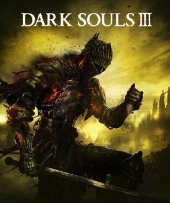

Avant de partir
Introduction : tout ce qu'il faut savoir avant de commencer

Jaquette © Bandai Namco Entertainment / FromSoftware. Guide non officiel.
Objectif
Te donner en une lecture ce qu'un joueur de Dark Souls III met dix heures à comprendre : les trois jauges, les âmes, le mode Seigneur des Cendres, les neuf statistiques, les dix classes, les fioles, la défense et l'esquive, les altérations d'état — et les erreurs de débutant qui coûtent le plus cher.
Ce guide couvre la dernière version du jeu, les deux extensions comprises : Les Cendres d'Ariandel (parties 25 et 26) et The Ringed City (parties 27 à 29).
Itinéraire
- Ce qu'est ce jeu, et comment il se joue.
- Les trois jauges : santé, concentration, endurance.
- Les âmes : monnaie et expérience.
- Le mode Seigneur des Cendres.
- Les neuf statistiques.
- Les dix classes de départ.
- Les Feux, les fioles, les Talents.
- Défense, verrouillage, esquive, parade.
- Les altérations d'état.
- Dix erreurs de débutant.
Déroulé pas à pas
Ce qu'est ce jeu
- Dark Souls III est partiellement linéaire. Tu es souvent libre de choisir l'ordre des zones, jusqu'à ce que les Veilleurs des Abysses, Aldrich et Yhorm soient morts : à ce moment-là, le Château de Lothric et la phase finale s'ouvrent.
- Le guide suit l'ordre le plus sûr en niveau et signale à chaque étape ce qui est facultatif.
- ⚠️ Une chose à savoir tout de suite : avancer trop vite casse des quêtes de PNJ. Si tu veux la fin cachée et tous les objets, lis les parties 18 et 19 avant de foncer.
Les trois jauges
- La barre de santé (rouge) : tes points de vie. Elle se régénère avec la Fiole d'Estus, certains miracles, ou en te reposant à un Feu.
- La barre de concentration (bleue) : elle alimente les sorcelleries, les miracles et les pyromancies — et aussi les Talents des armes (les mouvements spéciaux), même pour un personnage 100 % corps-à-corps. Elle se recharge avec la Fiole d'Estus cendreux ou au Feu.
- La barre d'endurance (verte) : tout la consomme — sprinter, rouler, attaquer, lancer un sort. Elle remonte vite dès que tu arrêtes de la solliciter.
- Être à court d'endurance, c'est être à la merci totale de l'ennemi. C'est la jauge à surveiller en priorité.
Les âmes
- Les Âmes sont l'unique monnaie du jeu : elles servent à la fois d'expérience et d'argent.
- Tu en gagnes sur chaque ennemi et chaque boss, ou en consommant des âmes blanches trouvées dans les niveaux (celles-là sont faites pour ça).
- Consommer une âme de boss est déconseillé : elles valent mieux en armes et en sorts chez Ludleth (partie 21).
- ⚠️ À ta mort, tu perds toutes tes âmes : elles restent dans une tache de sang à l'endroit de ta mort.
- ⚠️ Si tu meurs une seconde fois avant de la récupérer, elles sont perdues définitivement.
- Monter de niveau se fait auprès de la Gardienne du Feu, au Sanctuaire. C'est le meilleur moyen de « sécuriser » ses âmes : ne lésine pas sur les allers-retours.
Le mode Seigneur des Cendres
- C'est la mécanique propre à cet épisode : elle donne +30 % de points de vie et permet d'invoquer des alliés, joueurs comme PNJ, via les marques d'invocation au sol.
- Comment savoir si tu y es : le symbole à gauche de ta barre de vie est parcouru de braises rouges, et ton personnage a des braises sur ses vêtements.
- ⚠️ Mourir te fait perdre ce mode : tes PV redescendent et tu ne peux plus invoquer — mais tu ne peux plus être envahi par les PNJ hostiles non plus.
- Pour y revenir : consommer une Braise (objet précieux, lâché par certains ennemis et vendu en quantité limitée), ou battre un boss — ce qui le rend automatiquement.
Les neuf statistiques
- ⚠️ Attention si tu lis des guides en anglais : la version française inverse deux noms. En français, c'est la Vitalité qui donne les points de vie (Vigor en anglais) et la Vigueur qui règle la charge d'équipement (Vitality). Le tableau ci-dessous suit la version française.
| Statistique | Effet |
|---|---|
| Vitalité | Augmente les points de vie. Les gains montent jusque vers 25, s'essoufflent jusqu'à 40, puis deviennent minimes. Augmente aussi la résistance au Froid |
| Mémoire | Concentration maximale et nombre d'emplacements de sorts : 1 emplacement de 1 à 13, 2 de 14 à 17, 3 de 18 à 23, 4 de 24 à 29, 5 de 30 à 39, 6 de 40 à 49, 7 à partir de 50 |
| Endurance | Endurance maximale, plus les résistances au Saignement et à la Foudre |
| Vigueur | Charge d'équipement maximale, défense et résistance au Poison |
| Force | Armes lourdes, dégâts des armes à bonus de Force, résistance au Feu |
| Dextérité | Armes avancées, dégâts des armes à bonus de Dextérité, réduit le temps d'incantation et les dégâts de chute |
| Intelligence | Sorcelleries avancées, dégâts des sorcelleries et pyromancies, défense magique |
| Foi | Miracles avancés, dégâts et effets des miracles et pyromancies, défense contre les Ténèbres |
| Chance | Découverte d'objets, puissance du Poison et du Saignement de tes armes, résistance à la Malédiction |
- La règle d'or pour la charge d'équipement : rester sous 70 % — au-delà, tes roulades deviennent lourdes et lentes.
Les dix classes de départ
- La classe ne détermine que ton point de départ : statistiques initiales et équipement. Tout se rattrape ensuite.
- Les dix classes : Chevalier, Mercenaire, Guerrier, Héraut, Voleur, Assassin, Sorcier, Pyromancien, Clerc et Déshérité ⚠️ (nom français à vérifier en jeu pour ce dernier).
- Pour une première partie : Chevalier (robuste, bouclier fiable) ou Héraut (PV élevés et un soin de départ) sont les plus pardonnants. Pyromancien donne un sort à distance immédiatement utile.
- Le don de départ est facultatif : rien de décisif, mais la Braise ou la Pièce d'or rouillée sont les plus utiles.
Les Feux, les fioles et les Talents
- Chaque Feu allumé est un point de voyage : on se téléporte librement de l'un à l'autre dès le début du jeu.
- Se reposer à un Feu remplit les fioles, mais fait aussi revenir tous les ennemis de la zone.
- Les Fioles d'Estus se répartissent chez André entre soin (rouge) et concentration (cendreux, bleu). Exemple : sur 6 fioles, 4 de soin et 2 de concentration. La répartition se change gratuitement, autant de fois que tu veux.
- Les Fragments d'Estus ajoutent des charges (chez André), les Fragments d'os de mort-vivant augmentent ce que chaque charge rend (au Feu) — les 11 + 10 emplacements sont en partie 23.
- Les Talents d'arme (les mouvements spéciaux) consomment de la concentration : même un bourrin a intérêt à garder une ou deux fioles bleues.
Défense, verrouillage et esquive
- ⏳ Le verrouillage (un appui sur le stick droit) est la norme contre les ennemis de taille normale ; on passe d'une cible à l'autre en poussant le stick à droite ou à gauche.
- ⚠️ Contre les ennemis très grands ou très larges, déverrouille : la caméra libre te rend beaucoup plus mobile.
- ⏳ Le bouclier se tient en main gauche. Garder la garde levée ne coûte rien, mais chaque coup bloqué consomme de l'endurance, selon sa puissance — et certaines attaques ne se bloquent pas du tout.
- Un bouclier ne stoppe intégralement un type de dégâts que s'il a 100 dans la statistique correspondante (physique, magique, feu, foudre…). En dessous, une partie passe à travers.
- ⚠️ Si un coup bloqué vide complètement ton endurance, tu es déstabilisé — et à la merci du suivant.
- La roulade est la vraie défense du jeu : elle offre de brèves images d'invulnérabilité. C'est pour ça que la charge d'équipement compte tant.
Les altérations d'état
- Elles montent par une jauge invisible qui se remplit à chaque coup reçu, puis se déclenche :
- Saignement : gros dégâts d'un coup. Contré par le lichen rouge et l'Anneau de morsure.
- Poison et Toxicité : dégâts dans le temps, la toxicité étant bien plus violente et non couverte par les protections contre le poison. Lichen violet, lichen fleuri.
- Congélation : dégâts et ralentissement de la récupération d'endurance. Anneau de morsure glaciale.
- Malédiction : mort immédiate quand la jauge est pleine. Branche d'Arbre-sorcier, Anneau de morsure maudite.
- Les Pierres de purge et les Bénédictions divines nettoient la plupart de ces états.
Dix erreurs de débutant
- Garder ses âmes sur soi. Monte de niveau ou dépense dès que tu as de quoi : une mort de trop et tout part.
- Tenter le troisième coup. Deux attaques, puis on se replie : c'est le rythme du jeu.
- ⚠️ Bloquer ce qui ne se bloque pas. Les charges et les attaques de boss vident l'endurance : il faut rouler.
- Rester à mi-distance d'un gros ennemi. Colle-le ou éloigne-toi franchement : entre les deux, tu ne touches rien et tu prends tout.
- ⚠️ Se reposer au Feu avant d'avoir ramassé ce qui traîne. Le repos fait revenir tous les ennemis — et parfois un objet disparaît avec eux (partie 07).
- Avancer trop vite dans l'histoire. Entrer au Donjon d'Irithyll trop tôt condamne deux PNJ (parties 18 et 19).
- Donner un Tome à la mauvaise personne. Les tomes sombres à Irina changent sa fin et rendent Eygon hostile (partie 22).
- Imprégner son arme sans réfléchir. Une arme imprégnée d'un élément ne peut plus être renforcée par résine ou sort (partie 21).
- Négliger la concentration. Sans fiole bleue, pas de Talent d'arme — et les Talents règlent beaucoup de combats.
- Ignorer les murs illusoires. Frappe les bas-reliefs, les statues et les murs sans alcôve : le jeu cache derrière eux des Fragments d'Estus, des sets complets et deux des meilleures épées.
Butin exhaustif
Cette partie n'a pas de butin propre : elle décrit les systèmes. Les objets de départ dépendent de ta classe et de ton don initial, et tout le reste est réparti dans les parties 01 à 29.
| Élément | Type | Où / comment l'obtenir | Utilité |
|---|---|---|---|
| Fiole d'Estus | Objet clé | Au départ | Soin |
| Fiole d'Estus cendreux | Objet clé | Cimetière des cendres (partie 01) | Concentration : sorts et Talents |
| Braise | Consommable | Partout, et chez certains marchands | Mode Seigneur des Cendres |
| Os du retour | Consommable | Dès le Sanctuaire (partie 01) | Retour au dernier Feu |
| Fragment d'Estus ×11 | Objets clés | Partie 23 | +1 charge de fiole |
| Fragment d'os de mort-vivant ×10 | Objets clés | Partie 23 | Fioles plus efficaces |
Conseils et pièges
- Deux coups, puis tu te replies. Si tu ne retiens qu'une chose de cette introduction, c'est celle-là.
- La roulade vaut mieux que le bouclier dès que l'ennemi est gros. Reste sous 70 % de charge pour qu'elle reste vive.
- Garde deux fioles de concentration, même en pur corps-à-corps : les Talents d'arme changent des combats entiers.
- Dépense tes âmes. Un niveau acquis ne se perd jamais ; 20 000 âmes sur toi, si.
- Frappe les murs suspects. Le jeu récompense la curiosité plus que la prudence.
- Lis les parties 18 et 19 avant de foncer si tu veux les quêtes et la fin cachée : l'ordre des zones compte autant que les combats.
Alertes
- ⚠️ Mourir deux fois de suite fait perdre définitivement les âmes de la première mort.
- ⚠️ Se reposer à un Feu fait revenir tous les ennemis de la zone.
- ⚠️ Un bouclier sous 100 en défense physique laisse passer une partie des dégâts.
- ⚠️ La toxicité n'est pas le poison : les protections contre le poison n'y font rien.
- ⚠️ La Malédiction pleine tue instantanément.
- ⚠️ En français, Vitalité = points de vie et Vigueur = charge d'équipement : l'inverse des guides anglais (Vigor / Vitality).
- ⚠️ Le nom français de la classe « Déshérité » reste à confirmer en jeu.
Check-list des premières heures
- Fiole d'Estus cendreux récupérée au Cimetière des cendres
- Sanctuaire de Lige-Feu allumé, Gardienne du Feu rencontrée
- Uchigatana ou Épée droite d'Astora en main
- Deux Braises du Sanctuaire ramassées
- Clé de la tour achetée (20 000 âmes) : Fragment d'Estus, Anneau d'Estus, Anneau convoiteux du serpent d'argent
- Répartition des fioles réglée chez André
- Yoel de Londor recruté au Camp des mort-vivants
- Cornyx et Orbeck recrutés
- Paix faite avec le Géant de la tour
- Charge d'équipement sous 70 %
- Parties 18 et 19 parcourues avant d'avancer dans l'histoire
Partie 01
Le Cimetière des cendres et le Sanctuaire de Lige-Feu
Objectif
Sortir du Cimetière des cendres, battre Iudex Gundyr et rallumer le feu du Sanctuaire de Lige-Feu, qui devient ta base pour toute la partie. Au passage : ta Fiole d'Estus cendreux, tes premières Braises, et un Uchigatana gratuit si tu as le cran de le prendre tout de suite.
Niveau conseillé : celui de départ (1 à 10). Tout ici est fait pour t'apprendre à jouer.
Itinéraire
- Réveil dans le cimetière : le chemin en boucle derrière toi, puis la fontaine brisée.
- Le détour du haut : le Lézard de cristal géant (facultatif).
- Le premier feu, au centre.
- Les deux branches basses : la droite (bombes), puis la gauche (Fragment de Titanite).
- L'arène d'Iudex Gundyr.
- Le Sanctuaire de Lige-Feu : le tour du bâtiment par la droite, puis par la gauche, puis l'entrée principale.
- Plus tard : le retour par la Clé de la tour, quand tu auras 20 000 âmes.
Déroulé pas à pas
Le Cimetière des cendres
- Avance jusqu'au premier ennemi, puis fais demi-tour : le chemin derrière toi, à droite, cache une Âme de corps abandonné. Prends le réflexe tout de suite — dans ce jeu, le butin est presque toujours dans le cul-de-sac qu'on n'a pas fait.
- Devant la fontaine brisée, un ennemi garde la Fiole d'Estus cendreux : c'est ta fiole bleue, celle qui rend de la concentration (les PC, pour les sorts et les compétences d'arme). Même un pur bourrin en veut une ou deux charges.
- ⚠️ Attention à l'arbalétrier droit devant et aux trois ennemis sur la droite : c'est le premier endroit où l'on meurt bêtement, en chargeant sans regarder.
- Au bout du passage de droite, en hauteur : un Lézard de cristal géant. Contrairement aux petits lézards qui fuient, celui-là se bat et encaisse beaucoup. Il lâche une Écaille de Titanite (de quoi améliorer une arme spéciale plus tard). Tu peux revenir le tuer à ton aise : c'est même conseillé. À côté de lui, une Âme de voyageur inconnu.
- Reviens au passage central et allume le premier Feu. Repose-toi : tes fioles se remplissent, les ennemis reviennent.
- Descends par le dénivelé de droite : trois ennemis, puis un duo lancier + bouclier épaulé par un arbalétrier. Derrière eux, 5 Bombes incendiaires.
- Remonte et prends le passage de gauche. En contrebas, un objet sur un tombeau de pierre : élance-toi et saute au dernier moment pour attraper le Fragment de Titanite.
- Enchaîne par une attaque plongeante sur l'ennemi suivant — c'est le moment d'apprendre le geste, il resservira toute la partie. Débarrasse-toi de l'arbalétrier, et la porte du boss est là.
Boss : Iudex Gundyr
- 1 059 PV, 3 000 âmes. C'est la statue agenouillée avec une épée plantée dans le torse : retire l'épée et il s'anime.
- Phase 1, la hallebarde. Balayages, estocs, et une grande attaque sautée qu'il déclenche surtout si tu restes loin.
- Ne reste jamais à mi-distance : c'est la seule position où tu ne peux pas le toucher alors que lui t'atteint. Colle-le pour esquiver facilement, ou reste franchement loin pour provoquer l'attaque sautée, qui offre une grosse fenêtre de riposte.
- Ses coups se parent, si tu joues bouclier et que tu connais le timing.
- Phase 2, à la moitié de sa vie : une masse noire sort de son corps et le pilote. Sa portée augmente et ses enchaînements deviennent imprévisibles.
- Au contact : deux coups maximum, puis tu te replies. Il punit très violemment le troisième.
- À distance : recule et lance entre les séries.
- Récompense : l'Épée droite brisée, qu'il faut planter dans le foyer du Sanctuaire pour rallumer le feu, et le Feu de l'arène — allume-le avant de passer la grande porte.
Le Sanctuaire de Lige-Feu
- Ramasse l'Épée droite brisée devant toi (elle sert d'arme de secours, et surtout de clé narrative).
- Sur le rebord qui longe le vide, deux ennemis gardent un Os du retour : l'objet qui te ramène au dernier feu. Garde-en toujours un : il sauve une run entière quand tu portes 30 000 âmes.
- Monte vers le sanctuaire. Quatre ennemis regroupés, dont deux assis sur la droite qui se lèvent quand tu passes.
- Longe le bâtiment par la droite (un chien enragé saute de la gauche) : Braise dans le recoin du fond à gauche.
- Refais le tour par la gauche : deux ennemis assis dans l'escalier qui monte à droite, et une seconde Braise dans cette direction.
- En continuant par la gauche, tu tombes sur un ennemi bien plus coriace armé d'un Uchigatana. Il lâche l'arme si tu le tues — un katana excellent, dès la première heure de jeu. Laisse-le pour l'instant si tu débutes, reviens quand tu sauras esquiver : c'est un des meilleurs rapports temps/puissance du jeu.
- Entre par la porte principale et plante l'épée dans le foyer au centre : le Feu du Sanctuaire s'allume. Tu peux désormais dépenser tes âmes auprès de la Gardienne du Feu pour monter de niveau.
- Monte à l'étage, sur la droite : une sortie vers l'extérieur, et une Âme de corps abandonné au pied de la tour. La tour reste verrouillée jusqu'à ce que tu achètes sa clé.
- Utilise le feu pour voyager vers le Grand mur de Lothric (partie 02).
Le retour par la Clé de la tour (quand tu as 20 000 âmes)
- Achète la Clé de la tour à la Servante du Sanctuaire pour 20 000 âmes. C'est cher au début, et ça vaut chaque âme : la tour contient trois objets majeurs.
- Monte à l'étage, sors à droite, déverrouille la grille. En haut, traverse le pont de pierre et prends l'ascenseur en face : l'Âme de la Gardienne du Feu t'attend.
- En redescendant, Pat l'Invincible t'enferme — c'est sa blague favorite, et ta première rencontre avec lui. Deux sorties : un Os du retour, ou un saut précis vers le petit rebord en contrebas à droite, où se trouve le Set de la Gardienne du Feu.
- Au niveau le plus bas, ramasse l'Anneau d'Estus (tes fioles rendent davantage), sors par la grille et refais le tour jusqu'au pont de pierre.
- Au milieu du pont, laisse-toi tomber à gauche, déploie l'échelle à gauche, fais le tour du toit : une ouverture donne sur les poutres au-dessus du Sanctuaire et un Fragment d'Estus.
- Au centre de cette pièce, le nid de Snuggly le corbeau : il échange des objets précis contre des récompenses (la liste est en partie 19).
- Au fond à droite, frappe le mur : mur illusoire. En te laissant tomber de l'autre côté, un coffre contient l'Anneau convoiteux du serpent d'argent, qui augmente les âmes récoltées — à équiper le plus tôt possible.
Quêtes et lieux
- La Gardienne du Feu monte ton niveau et, plus tard, retire les Marques sombres de Yoel (partie 19). Son Âme (étape 23) permet, une fois donnée à Ludleth, de débloquer l'objet qui rend les Marques sombres réversibles — et la tuer ouvre une fin (partie 17).
- La Servante du Sanctuaire vend la Clé de la tour, des consommables et, plus tard, tout l'équipement des PNJ morts. Elle achète aussi les Cendres que tu lui rapportes, qui enrichissent son stock (partie 23).
- Ludleth de Courland, assis sur son trône, fait la Transposition d'âmes : il transforme les âmes de boss en armes et en sorts (partie 21).
- André le forgeron n'est pas encore là : tu le trouveras au Camp des mort-vivants (partie 03).
- Les cinq trônes du sanctuaire se remplissent à mesure que tu bats les Seigneurs des Cendres : c'est ton compteur de progression.
Butin exhaustif
| Nom exact | Type | Où / comment l'obtenir | Utilité |
|---|---|---|---|
| Âme de corps abandonné | Consommable | Cul-de-sac derrière le point de départ ; pied de la tour du Sanctuaire | Âmes immédiates |
| Fiole d'Estus cendreux | Objet clé | Ennemi devant la fontaine brisée | Rend de la concentration : sorts et compétences d'arme |
| Écaille de Titanite | Matériau | Lézard de cristal géant, passage de droite en hauteur | Améliore les armes spéciales |
| Âme de voyageur inconnu | Consommable | À côté du Lézard de cristal géant | Âmes |
| 5 Bombes incendiaires | Consommables | Derrière le duo lancier/arbalétrier, branche basse droite | Dégâts de feu à distance |
| Fragment de Titanite | Matériau | Saut vers le tombeau de pierre, branche de gauche | Améliore les armes ordinaires (+1 à +3) |
| Épée droite brisée | Arme | Iudex Gundyr | À planter dans le foyer pour allumer le Sanctuaire |
| Os du retour | Consommable | Rebord longeant le vide, Sanctuaire | Retour au dernier feu : garde-en toujours un |
| Braise ×2 | Consommables | Recoin arrière droit ; escalier de gauche | Devenir Porte-braise (PV en plus, jeu en ligne) |
| Uchigatana | Arme | Ennemi coriace derrière le Sanctuaire | Excellent katana, disponible dès la première heure |
| Clé de la tour | Objet clé | Servante du Sanctuaire, 20 000 âmes | Ouvre la tour du Sanctuaire |
| Âme de la Gardienne du Feu | Objet clé | Ascenseur en haut de la tour | Sert une fin ; via Ludleth, rend les Marques sombres réversibles |
| Set de la Gardienne du Feu | Armure | Saut vers le rebord, pendant le piège de Pat | Tenue complète |
| Anneau d'Estus | Anneau | Bas de la tour | Tes fioles rendent davantage |
| Fragment d'Estus | Objet clé | Poutres au-dessus du Sanctuaire, par le toit | +1 charge de fiole |
| Anneau convoiteux du serpent d'argent | Anneau | Mur illusoire au fond à droite des poutres | Plus d'âmes récoltées |
Conseils et pièges
- Fais les deux tours du Sanctuaire avant de partir. Deux Braises, un Os du retour et un katana d'exception traînent dehors, et beaucoup de joueurs entrent directement par la porte principale sans jamais les voir.
- L'Uchigatana vaut le détour, même en mourant dix fois. Aucune arme trouvée dans les cinq heures suivantes ne fait mieux pour un personnage Dextérité.
- Ne dépense pas tout en niveaux. La Clé de la tour à 20 000 âmes rapporte un Fragment d'Estus, l'Anneau d'Estus et l'anneau qui augmente les âmes : le meilleur investissement du début de partie.
- Colle les gros boss, éloigne-toi des petits. Iudex Gundyr apprend cette règle, qui vaut pour la moitié du jeu.
- Deux coups, puis tu te replies. C'est le rythme de Dark Souls III. Les joueurs qui meurent sont presque toujours ceux qui tentent le troisième coup.
Alertes
- ⚠️ L'ennemi à l'Uchigatana, derrière le Sanctuaire, tue un personnage de niveau 1 en deux coups.
- ⚠️ Pat l'Invincible t'enferme en haut de la tour : sans Os du retour, il faut réussir le saut vers le rebord.
- ⚠️ Ne donne pas l'Âme de la Gardienne du Feu à la légère : elle sert aussi à une fin (partie 17).
- ⏳ Manquables : l'Écaille de Titanite du Lézard de cristal géant (il ne revient pas si tu le tues, mais il t'attend indéfiniment sinon), l'Uchigatana, le Fragment d'Estus des poutres, l'Anneau convoiteux du serpent d'argent derrière le mur illusoire.
Check-list
- Âme de corps abandonné du cul-de-sac de départ
- Fiole d'Estus cendreux récupérée
- Lézard de cristal géant vaincu : Écaille de Titanite
- 5 Bombes incendiaires et Fragment de Titanite ramassés
- Iudex Gundyr vaincu, Feu de l'arène allumé
- Épée droite brisée plantée dans le foyer : Sanctuaire allumé
- Deux Braises et l'Os du retour du Sanctuaire
- Uchigatana pris sur l'ennemi coriace
- Clé de la tour achetée (20 000 âmes)
- Âme de la Gardienne du Feu, Set de la Gardienne du Feu, Anneau d'Estus
- Fragment d'Estus des poutres
- Anneau convoiteux du serpent d'argent derrière le mur illusoire
- Nid de Snuggly repéré (échanges en partie 19)
Partie 02
Le Grand mur de Lothric
Objectif
Traverser le Grand mur de Lothric, ouvrir le raccourci de l'ascenseur, libérer Greirat de sa cellule, récupérer les deux premières grandes armes du jeu (l'Épée droite d'Astora et la Claymore), puis battre Vordt de la Vallée boréale pour gagner le Camp des mort-vivants. C'est aussi ici qu'on rencontre Emma — et le raccourci le plus dangereux du jeu.
Niveau conseillé : 10 à 20. Deux ennemis de la zone (le Drakesang à la cape bleue et le dragon) sont très au-dessus de ça : ils attendront.
Itinéraire
- Premier Feu, juste sous les escaliers de l'arrivée.
- Branche de droite : l'arbalétrier du rebord, les chiens, la tour du fond (Arc long).
- Branche de gauche : la tour, le toit, le rebord près du dragon mort.
- Le couloir du dragon : sprinter entre deux souffles.
- Deuxième Feu, au sommet de la tour.
- Le grand bâtiment : le Fragment d'Estus, la Clé de cellule, les deux coffres.
- Les trois étages du bas : la cellule de Greirat.
- La fontaine et les jardins : le hallebardier ailé, l'ascenseur-raccourci.
- L'allée d'Emma, puis la grande porte de Vordt.
Déroulé pas à pas
Les deux tours, du premier au second Feu
- Descends les escaliers extérieurs et allume le premier Feu avant toute chose.
- L'arbalétrier de droite est sur un rebord en bois, accessible par une faille dans le muret. Va le chercher : il tire dans le dos pendant tout le reste du secteur.
- Descends à droite. Attire les deux chiens enragés un par un : ensemble, ils tuent un personnage de niveau 12. Même chose pour le soldat à la hallebarde qui descend de la tour d'en face.
- Un soldat à la hache monte par l'escalier de gauche : ne laisse jamais cet escalier dans ton dos.
- Âme de corps abandonné en bas des escaliers — l'ennemi couché à côté se relève.
- Dans la tour du fond, ne frappe pas les silhouettes en prière : l'une d'elles, à droite, se transforme en créature noire comparable à Iudex Gundyr, très puissante et imprévisible. Cours prendre l'Arc long et les 15 flèches sur le corps à droite, et ressors.
- Reviens au Feu, puis part vers la gauche : Âme de corps abandonné avant la tour, deux ennemis à l'intérieur (un assis à gauche, un derrière les caisses), et 2 Bombes incendiaires.
- Monte sur la tour par l'escalier de gauche : deux ennemis, dont un lanceur de bombes incendiaires. L'escalier de gauche mène à un objet.
- Redescends et laisse-toi tomber du rebord caché, à côté du dragon mort : 2 Résines de pin doré (dégâts de foudre sur ton arme — garde-les pour un boss).
Le couloir du dragon
- Descends l'échelle, prends l'Âme de corps abandonné du passage, et attire le lancier au lieu de t'avancer.
- Dès que tu t'engages dans les escaliers, un dragon se pose sur la tour voisine et noie le chemin de flammes.
- Le souffle tue aussi les ennemis du haut à gauche et du fond. Laisse-le faire le travail, puis sprinte droit devant juste après un souffle, sans monter les escaliers de gauche.
- Plus tard, avec des flèches, tu peux le faire fuir : à environ 15 % de sa vie, il s'envole. Le haut des escaliers livre alors une Grande âme de corps abandonné, une Braise et la Claymore — une épée large excellente pour tout le début de partie.
- Derrière la grille du fond, le coffre est un Mimic. Le tuer donne la Hache de guerre abyssale, déjà imprégnée de ténèbres.
Le second Feu et le grand bâtiment
- De retour sur le chemin, tue vite les deux ennemis endormis de gauche : un chevalier Drakesang sort de la tour de droite. Ces chevaliers enchaînent des attaques puissantes et parent bien. Guette l'ouverture, ou tente la parade pour un coup critique.
- À l'intérieur : un ennemi à gauche, 3 Bombes incendiaires au bout de la poutre, puis le deuxième Feu au sommet de la tour.
- Fragment de Titanite dans le recoin du fond. Redescends, élimine deux assassins à l'étage inférieur, et sors par cet étage : Âme de corps abandonné à droite, deux ennemis (l'un par le rebord, l'autre à l'échelle).
- Sur le toit suivant, un groupe en prière : l'un se transforme en monstre noir. Évite-le ou tue-le, puis prends la Grande âme de corps abandonné au fond à gauche et tue le Lézard de cristal pour une Titanite scintillante.
- Descends l'échelle du fond à droite. Un arbalétrier te tire dans le dos à l'arrivée : règle-lui son compte, ainsi qu'à son collègue au fond du balcon et aux deux grimpeurs. 3 Bombes incendiaires ici, 3 Bombes incendiaires noires sur le toit d'en face.
- Entre dans le bâtiment près de l'échelle. Un Drakesang à la lance patrouille au fond : méfie-toi de sa charge à deux mains. Âme de corps abandonné à gauche.
- Petite pièce de gauche : trois ennemis, dont un caché derrière les jarres — elles contiennent 2 Amulettes de chasseur de mort-vivants. Deux ennemis plus loin, un Fragment de Titanite.
- Chemin du fond, puis à gauche : un ennemi sous l'arche, et une Épée large derrière les caisses.
- Descends dans la grande salle (chien enragé + escorte) : le Fragment d'Estus est sur l'autel à droite, et la Clé de cellule en bas à gauche, gardée par un chien.
- Remonte à l'étage, va au bout du balcon, casse les caisses et laisse-toi tomber d'un cran : un coffre contient l'Épée droite d'Astora. C'est une des meilleures armes du début : légère, longue, et efficace avec n'importe quelle statistique.
- À l'étage intermédiaire, avance vers la droite (deux ennemis assis) : un second coffre donne le Rempart de l'Aigle d'argent, excellent bouclier.
Greirat, la fontaine et Vordt
- Retourne au Feu du sommet et descends les trois étages. Les tonneaux de la pièce explosent et un ennemi y lance des bombes : reste à distance des tonneaux. 8 Couteaux de lancer à droite, Percemaille au fond.
- Descends à droite et ouvre la cellule de Greirat du Camp des mort-vivants avec la Clé de cellule. Parle-lui : il te donne l'Anneau de Pierre-larme bleue et s'installe au Sanctuaire, où il deviendra ton marchand de pillage (partie 18).
- Reprends la route jusqu'au toit de l'adorateur, redescends l'échelle, puis descends aussi l'échelle au bout du balcon de droite.
- Autour de la fontaine patrouille un hallebardier ailé en armure : il tourbillonne à moyenne distance et invoque des piliers de lumière. Colle-le pour une attaque critique dans le dos, ou reste très loin et lance tes sorts.
- Sur la place : 2 Braises et la Rapière, au fond à gauche près d'un ennemi couché.
- Sous l'arche à droite : fonce vers les escaliers pour cueillir l'arbalétrier, puis le soldat qui se relève contre l'escalier. Quatre ennemis plus loin.
- ⏳ Prends l'ascenseur droit devant, ramasse les 8 Couteaux de lancer et ouvre la grille : tu débouches au début du niveau. C'est le raccourci de la zone — fais-le avant le boss.
- Redescends, remonte les petits escaliers de gauche : Grande âme de corps abandonné. Puis sprint + saut vers le petit toit en bois pour un Anneau sacrificiel.
- Retour aux jardins : attire les deux Drakesang de l'allée un par un, monte en face pour le Bec de corbin (un troisième Drakesang peut être évité).
- Le Drakesang à la cape bleue, au bout de l'allée opposée, est très au-dessus de ton niveau. Il lâche une Gemme acérée (infusion Dextérité) : reviens plus tard si tu meurs deux fois.
- Parle à Emma, la grande prêtresse, au fond de la grande église : elle donne la Petite bannière de Lothric et le Serment de la Voie bleue.
- Descends les grands escaliers opposés et interagis avec la grande porte bloquée par les branchages : le combat commence.
Boss : Vordt de la Vallée boréale
- 1 328 PV, 3 000 âmes. Boss obligatoire. Il porte une armure complète mais se déplace comme une bête, à quatre pattes.
- Phase 1 : reste à mi-distance, sur sa droite, pour le pousser à lancer son grand balayage de marteau. On le reconnaît au temps de chargement, marteau ramené sur le côté : roule au travers, et tu as deux à trois coups gratuits.
- Méfie-toi des attaques rapides de sa main gauche libre, et des estocs de sa masse.
- Phase 2 : il charge une énergie glacée autour de lui, devient beaucoup plus agressif et enchaîne trois à quatre charges en traversant l'arène.
- ⚠️ Ne bloque pas les charges : une seule vide toute ton endurance, et la suivante te tue. Esquive sur le côté, systématiquement.
- Il inflige la congélation : la jauge monte vite dans cette arène étroite.
- Après la victoire : avance vers le bord et plante la Petite bannière de Lothric pour te faire transporter au Camp des mort-vivants (partie 03).
Le raccourci d'Emma (déconseillé en première partie)
- Tuer Emma déclenche la Danseuse de la Vallée boréale, le huitième boss du jeu, en approchant de la statue derrière elle.
- La battre ouvre immédiatement le Château de Lothric, l'un des derniers niveaux — donc un gain de dix heures.
- ⚠️ À ce niveau, c'est un mur : elle frappe deux fois plus fort que tout ce que tu as vu. Parle d'abord à Emma pour prendre la bannière et le serment, sinon tu les perds.
Quêtes et lieux
- Greirat du Camp des mort-vivants : libéré ici, il s'installe au Sanctuaire et part en expédition contre des âmes, revenant avec du stock. Ses expéditions peuvent le tuer : l'ordre des envois compte (partie 18).
- Emma donne le Serment de la Voie bleue, le serment d'entrée du jeu en ligne, et la Petite bannière de Lothric, qui ouvre la route du Camp.
- Le raccourci de l'ascenseur (étape 32) relie la fin de la zone au premier Feu : indispensable si tu meurs contre Vordt.
- Le dragon du couloir n'est pas un boss : il finit par s'envoler sous les flèches et laisse trois objets, dont la Claymore.
Butin exhaustif
| Nom exact | Type | Où / comment l'obtenir | Utilité |
|---|---|---|---|
| Arc long + 15 flèches | Arme, munitions | Tour du fond, branche de droite | Sert à faire fuir le dragon |
| Âme de corps abandonné ×5 | Consommables | Bas des escaliers ; avant la tour de gauche ; passage sous l'échelle ; sortie de l'étage ; bâtiment du Drakesang | Âmes |
| 2 Bombes incendiaires | Consommables | Tour de gauche, derrière les caisses | Dégâts de feu |
| 2 Résines de pin doré | Consommables | Rebord caché près du dragon mort | Foudre sur ton arme : garde-les pour un boss |
| Grande âme de corps abandonné ×2 | Consommables | Haut des escaliers (dragon envolé) ; toit de l'adorateur | Âmes |
| Braise ×3 | Consommables | Haut des escaliers ; place de la fontaine (×2) | Devenir Porte-braise |
| Claymore | Arme | Haut des escaliers, après le départ du dragon | Épée large polyvalente, excellente tout le début |
| Hache de guerre abyssale | Arme | Mimic derrière la grille du dragon | Dégâts de ténèbres d'office |
| Fragment de Titanite ×2 | Matériaux | Recoin du second Feu ; petite pièce aux jarres | Armes +1 à +3 |
| Titanite scintillante | Matériau | Lézard de cristal du toit | Armes spéciales |
| 3 Bombes incendiaires ×2 | Consommables | Poutre avant le second Feu ; balcon de l'arbalétrier | Dégâts de feu |
| 3 Bombes incendiaires noires | Consommables | Toit d'en face, depuis le balcon | Gros dégâts de feu |
| 2 Amulettes de chasseur de mort-vivants | Consommables | Jarres de la petite pièce | Soin d'urgence |
| Épée large | Arme | Derrière les caisses, après l'arche | Arme de transition |
| Fragment d'Estus | Objet clé | Autel de droite, grande salle | +1 charge de fiole |
| Clé de cellule | Objet clé | Bas à gauche de la grande salle, gardée par un chien | Libère Greirat |
| Épée droite d'Astora | Arme | Coffre sous le balcon, en cassant les caisses | L'une des meilleures armes du début |
| Rempart de l'Aigle d'argent | Bouclier | Coffre de l'étage intermédiaire | Excellente parade |
| 8 Couteaux de lancer ×2 | Consommables | Pièce aux tonneaux ; devant l'ascenseur | Dégâts à distance |
| Percemaille | Arme | Fond de la pièce aux tonneaux | Arme perforante |
| Anneau de Pierre-larme bleue | Anneau | Greirat, après sa libération | Défense accrue à basse vie |
| Rapière | Arme | Place de la fontaine, fond à gauche | Arme rapide Dextérité |
| Anneau sacrificiel | Anneau | Sprint et saut vers le petit toit en bois | Évite de perdre tes âmes une fois |
| Bec de corbin | Arme | En face de l'allée des Drakesang | Arme contondante |
| Gemme acérée | Matériau | Drakesang à la cape bleue (très puissant) | Infusion Dextérité |
| Petite bannière de Lothric | Objet clé | Emma | Ouvre la route du Camp des mort-vivants |
| Serment de la Voie bleue | Serment | Emma | Jeu en ligne (partie 20) |
Conseils et pièges
- Ouvre le raccourci de l'ascenseur avant d'affronter Vordt. Sans lui, chaque mort contre le boss coûte trois minutes de marche.
- Les silhouettes en prière sont des pièges. Deux fois dans la zone, l'une d'elles se transforme en créature noire bien plus forte que le reste. Tu peux toujours partir en courant.
- Le dragon est une arme, pas un obstacle. Son souffle nettoie le chemin : attends qu'il crache, puis sprinte.
- Prends l'Épée droite d'Astora, même en jouant autre chose. Elle demande peu de statistiques et porte loin.
- Ne bloque jamais une charge de Vordt. C'est l'erreur qui tue : l'endurance part d'un coup et la charge suivante arrive.
- Garde les Résines de pin doré pour Vordt si tu galères : la foudre lui fait mal et le combat raccourcit nettement.
Alertes
- ⚠️ Le dragon du couloir ne se combat pas de face : on passe entre deux souffles.
- ⚠️ Le coffre derrière la grille est un Mimic.
- ⚠️ Le Drakesang à la cape bleue et le Lézard de cristal géant sont hors niveau au premier passage.
- ⚠️ Bloquer les charges de Vordt vide l'endurance et enchaîne la mort.
- ⚠️ Tuer Emma déclenche la Danseuse de la Vallée boréale, un boss de fin de jeu : parle-lui d'abord pour récupérer la bannière et le serment.
- ⏳ Manquables : la Claymore et la Braise du dragon, la Hache de guerre abyssale du Mimic, le Fragment d'Estus de l'autel, l'Épée droite d'Astora, le Rempart de l'Aigle d'argent, l'Anneau sacrificiel du toit, la Gemme acérée, et Greirat si tu ne le libères pas avant d'avancer.
Check-list
- Premier et second Feu allumés
- Arc long et flèches récupérés
- 2 Résines de pin doré du rebord caché
- Dragon fait fuir : Claymore, Braise, Grande âme
- Mimic tué : Hache de guerre abyssale
- Fragment d'Estus de l'autel
- Clé de cellule trouvée et Greirat libéré : Anneau de Pierre-larme bleue
- Épée droite d'Astora et Rempart de l'Aigle d'argent dans les coffres
- Anneau sacrificiel du petit toit
- Raccourci de l'ascenseur ouvert
- Emma rencontrée : Petite bannière de Lothric et Serment de la Voie bleue
- Vordt de la Vallée boréale vaincu
- Bannière plantée au bord : route du Camp des mort-vivants
Partie 03
Le Camp des mort-vivants
Objectif
La zone la plus dense du début de partie. On y recrute quatre PNJ majeurs (Yoel de Londor, Cornyx du Grand marais, Siegward de Catarina, Eygon de Carim), on y fait la paix avec le Géant de la tour — un allié pour tout le reste du jeu —, on y ramasse deux serments, et on bat l'Arbre géant maudit, qui débloque la Transposition d'âmes.
Niveau conseillé : 15 à 25.
Itinéraire
- Premier Feu, puis le pont aux chiens et Yoel de Londor.
- Deuxième Feu dans la maison, puis la maison sombre et les serviteurs.
- Le grand brasier et l'évangéliste : Fragment d'Estus.
- Pont de bois, détour des toits, et la cage vers Hodrick (facultatif, à faire avant le boss).
- Pont de pierre, troisième Feu, Cornyx sur le balcon.
- Cour centrale, la Bague-serre de feu, la descente vers la tour du Géant.
- Siegward et le démon de feu, puis les toits : Anneau de Flynn, Anneau de Chlorantie.
- Retour au brasier, la route tout droit : Serment des Chevaliers Solaires.
- Le cimetière de l'arbre blanc, le Fragment d'os de mort-vivant, l'Arbre géant maudit.
- Après le boss : l'ascenseur du bas et l'Épée droite d'Irithyll.
Déroulé pas à pas
Les premiers pas et le Serment des Thanatophiles
- Allume le premier Feu, puis prends la Grande âme de corps abandonné sur les décombres, en bas à gauche.
- Descends vers le pont. Laisse les chiens enragés se charger des mort-vivants avant de finir le travail.
- À l'autre extrémité du pont, derrière toi, un pèlerin à droite du groupe te demande de l'achever : c'est Yoel de Londor. Prends-le à ton service — il est indispensable à la fin cachée (partie 19).
- 2 Crânes élégants derrière la cage de gauche, gardés par deux chiens.
- Ouvre la herse du fond et allume le deuxième Feu, dans la maison droit devant.
- Dans la maison sombre, frappe le corps de droite pour faire tomber le Petit bouclier en cuir.
- ⚠️ En bas des escaliers commencent les serviteurs : de petits ennemis qui s'accrochent aux murs et aux plafonds et tombent dans le dos. Prends le réflexe de verrouiller au plafond avant d'avancer.
- 2 Paquets de pin brûlé à droite, puis 2 autres plus bas — trois serviteurs embusqués (à droite, dans le coin du fond, et sur le mur d'en face).
- Le grand brasier : une dizaine de mort-vivants en extase et une évangéliste à collerette au centre.
- L'évangéliste est le vrai danger : projectiles téléguidés, saignement à la grande masse, et une étreinte enflammée au corps-à-corps.
- Les tonneaux près des mort-vivants de gauche sont explosifs : une Bombe incendiaire fait le ménage d'un coup.
- Au pied du brasier : le Fragment d'Estus et une Braise. Âme de voyageur inconnu au fond à gauche, contre la herse en bois.
- ⏳ Détour des toits (avant le pont de bois) : casse les caisses de droite et longe le bâtiment. Quatre serviteurs en embuscade (mur de gauche, toits du fond). Monte à gauche pour un lanceur de couteaux et 6 Bombes incendiaires, puis l'échelle vers les toits.
- Laisse-toi tomber à droite, dans la zone isolée : un ennemi en rouge avec une cage vide dans le dos. Interagis avec lui : il t'emmène dans une grande caverne où Hodrick le Paladin te donne le Serment des Thanatophiles.
- Ce détour n'existe que tant que l'Arbre géant maudit est vivant : le battre tue Hodrick.
- On ne ressort de la caverne qu'avec un Os du retour, ce qui annule ta progression dans le camp.
- Si tu rates l'occasion, le serment ne s'obtient que bien plus tard, par la quête de Sirris des Terres obscures (partie 19).
Cornyx, Siegward et le Géant
- Reprends le pont de bois. Deux ennemis se relèvent dans l'écurie, et un serviteur tombe du plafond devant la porte, armé d'un espadon.
- Bouclier rond au caducée à droite en sortant — reviens aussitôt à couvert si tu n'as pas nettoyé les toits.
- Le pont de pierre est un piège : des lanceurs de bombes incendiaires en hauteur à droite, et des tonneaux explosifs partout.
- Laisse-toi tomber sur la corniche en contrebas, à l'autre extrémité : Fragment de Titanite à gauche, et le troisième Feu dans le bâtiment au bout à droite.
- En ressortant de l'autre côté, tu arrives sur les toits : de là, les lanceurs de bombes se délogent sans risque.
- Tire dans le corps suspendu pour faire tomber une Pertuisane.
- Fais le tour du balcon : Cornyx du Grand marais t'y attend en cage. Parle-lui : il rejoint le Sanctuaire et devient ton maître de pyromancie (partie 22).
- Laisse-toi tomber vers la cour centrale. Prendre l'Âme de voyageur inconnu sur le billot réveille l'ennemi au pot, à droite : esquive, deux coups, et pas plus.
- Derrière le billot, au bout de la passerelle : la Bague-serre de feu (des dégâts en plus, un peu de défense en moins).
- Sous l'arche de pierre, Grande âme de corps abandonné derrière la maison de gauche. Descends les escaliers lentement : une évangéliste patrouille en bas, plus des ennemis et un chien à droite.
- Attire les grands ennemis en rouge un par un sur le pont de pierre. 3 Crânes élégants derrière la maison de droite.
- À la tour du bout du chemin : Eygon de Carim, le gardien d'Irina (partie 19). À l'intérieur, Siegward de Catarina remonte par l'ascenseur — sa chaîne de quêtes commence ici et court jusqu'à Yhorm.
- Pour monter en haut de la tour : passe sur la plaque de pression de l'ascenseur puis dégage-toi aussitôt pour le laisser descendre, prends l'élévateur suivant, puis les escaliers.
- Parle au Géant pacifique et demande-lui la paix : il te soutiendra tout le reste du jeu — ses flèches nettoient plusieurs zones à ta place.
- Redescends par l'ascenseur et guette un rebord de bois en contrebas : laisse-toi tomber, tu retrouves Siegward. Battez ensemble le démon de feu des toits.
- Maison de droite, à l'étage : verrouille pour repérer les deux amas de corps en cage suspendus au plafond, puis prends les 2 Crânes élégants.
- Bâtiment suivant : un ennemi à gauche, deux chiens à droite, et quatre amas de corps suspendus à éliminer avant d'ouvrir le coffre. Dedans, 4 Résines de pin d'humain.
- Deux évangélistes à l'étage, puis l'Anneau de Flynn sur la plate-forme de bois du toit (plus de dégâts quand tu portes peu).
- Laisse-toi tomber vers la tour en contrebas. À l'intérieur, un saut depuis un simple rebord : fais le plein de vie, déséquipe toute ton armure pour t'alléger, puis sprint + saut vers les planches en bas à gauche. Récompense : l'Anneau de Chlorantie (récupération d'endurance) et les Gants, Veste et Pantalons de Mirrah.
- En sortant, laisse-toi tomber vers la route pavée : elle mène à un raccourci vers le boss, encore fermé de ce côté.
Le Serment des Chevaliers Solaires et l'Arbre géant maudit
- Retourne au grand brasier et, au lieu de prendre le pont de droite, continue tout droit.
- Deux ennemis en bas à droite, puis un Fragment de Titanite. Ouvre la porte sous l'arche de pierre.
- L'amas de corps juste à droite des 2 Résines de pin brûlé est vivant. Décroche les corps au-dessus de l'escalier : Grande âme de corps abandonné.
- ⏳ Avant de descendre, laisse-toi tomber dans le trou du parquet : le Serment des Chevaliers Solaires est sur une table de torture près d'une porte. C'est le serment de l'aide en ligne — et la Lance solaire au bout (partie 20).
- Dans le couloir suivant : deux serviteurs tombent du plafond, deux amas de corps vivants au bout, et un mort-vivant à deux faucilles.
- Dehors, casse les caisses de droite : Âme de voyageur inconnu au bout de la corniche étroite. Colle le rocher de gauche en te laissant tomber pour atteindre un Fragment de Titanite sans descendre sous les sorts de l'évangéliste.
- Monte à l'échelle de l'autre côté de sa passerelle pour la prendre à revers : un Fragment de Titanite de plus.
- En mode Seigneur des Cendres, traverser la maison suivante déclenche l'invasion du Paladin Hodrick, un adversaire coriace.
- Pour l'éviter : passe par le toit de droite, saute vers le rebord, puis vers le Lézard de cristal, et rejoins le Feu un niveau plus bas, en face du pont de bois des égouts.
- Élimine l'ennemi en rouge après le petit pont brisé et rejoins le cimetière. Cendres de croque-mort derrière l'arbre de gauche (à donner à la Servante du Sanctuaire : elle enrichit son stock).
- Si tu as fait la paix avec le Géant, laisse-le abattre les patrouilles du coin.
- Au pied de l'arbre blanc : la Braise, 2 Jeunes branches blanches, le Gourdin renforcé et une Grande âme de corps abandonné.
- Set complet de clerc près de la cabane de bois en haut à gauche (un serviteur veille).
- Saut précis vers la droite : Fragment d'os de mort-vivant (+1 soin par charge d'Estus).
- À l'étage de la maison droit devant, saute vers l'arrière pour attraper la Grande faux.
- ⏳ Dans le couloir, ouvre la porte de droite avant d'aller à gauche : c'est le raccourci vers le boss. Fais-le maintenant.
- La grande place du fond est l'arène de l'Arbre géant maudit.
Boss : Arbre géant maudit
- 5 767 PV, 7 000 âmes. Techniquement facultatif — mais le battre débloque la Transposition d'âmes chez Ludleth, donc toutes les armes d'âmes de boss (partie 21).
- Phase 1 : ignore les petits mort-vivants, ils repoussent sans fin et l'arbre les écrase lui-même. Reste mobile pour ne pas être encerclé.
- L'arbre n'a que des balayages et des coups de branche, plus un saut sur place qui laisse des flaques acides à ses pieds.
- Frappe les grosses pustules : à la base du tronc, au centre, et au bout de certaines branches. Arme à deux mains — le bouclier ne sert à rien ici.
- Phase 2 : le sol s'effondre et vous tombez tous les deux. Plus aucun petit ennemi, mais un bras sort de son ventre, là où étaient les pustules.
- Attends qu'il se soulève et se penche en avant, décale-toi pour ne pas être écrasé, puis frappe le bras avant qu'il ne se redresse. Sa mobilité est très réduite : le combat est simple si tu ne te précipites pas.
- Après la victoire : allume le Feu dans la grande grotte (celle des Thanatophiles).
Le dernier détour : l'Épée droite d'Irithyll
- Retourne au pied de la tour de Siegward et prends l'ascenseur vers le bas.
- La pièce adjacente est gardée par un chevalier de froid d'élite, un ennemi unique qui enchaîne des attaques rapides et glacées.
- Attire-le dans la grande pièce vide d'à côté : celle aux colonnes ne pardonne pas.
- Récompense : l'Épée droite d'Irithyll, qui inflige la congélation — excellente pour tout le milieu du jeu.
- Braise à côté, puis ouvre la porte : elle mène droit à la Route des sacrifices (partie 04).
Quêtes et lieux
- Yoel de Londor (étape 3) : recrute-le. Il t'offre cinq niveaux gratuits contre des Marques sombres, et sa mort ouvre la voie à Yuria et à la fin cachée (partie 19).
- Cornyx du Grand marais (étape 17) : maître de pyromancie, il vend les sorts de base et t'apprend à utiliser la Flamme de pyromancie.
- Siegward de Catarina (étapes 22 et 25) : sa chaîne court sur tout le jeu, du puits du Camp jusqu'à Yhorm le Géant. Ne rate pas le démon de feu à deux : c'est l'étape qui enclenche la suite.
- Eygon de Carim (étape 22) : il protège Irina, qu'on libère un peu plus loin. Ses réactions dépendent de ce que tu fais d'elle.
- Le Géant pacifique (étape 24) : la paix avec lui fait de ses flèches géantes un allié, ici comme au Bastion de Farron.
- Hodrick le Paladin (étape 12) : le Serment des Thanatophiles ne s'obtient ici qu'avant le boss.
Butin exhaustif
| Nom exact | Type | Où / comment l'obtenir | Utilité |
|---|---|---|---|
| Grande âme de corps abandonné ×4 | Consommables | Décombres du départ ; derrière la maison sous l'arche ; au-dessus de l'escalier ; pied de l'arbre blanc | Âmes |
| 2 Crânes élégants | Consommables | Derrière la cage du pont, gardés par deux chiens | Âmes |
| 3 Crânes élégants | Consommables | Derrière la maison de droite, pont de pierre | Âmes |
| 2 Crânes élégants | Consommables | Étage de la maison, après le démon de feu | Âmes |
| Petit bouclier en cuir | Bouclier | Frappe le corps de droite dans la maison sombre | Bouclier léger de départ |
| 2 Paquets de pin brûlé ×2 | Consommables | Descente de la maison sombre | Feu sur ton arme |
| Fragment d'Estus | Objet clé | Pied du grand brasier | +1 charge de fiole |
| Braise ×3 | Consommables | Pied du brasier ; pied de l'arbre blanc ; près de l'Épée droite d'Irithyll | Porte-braise |
| Âme de voyageur inconnu ×3 | Consommables | Herse en bois du brasier ; billot de la cour ; corniche étroite | Âmes |
| 6 Bombes incendiaires | Consommables | Détour des toits, après le lanceur de couteaux | Tonneaux explosifs et groupes |
| Serment des Thanatophiles | Serment | Hodrick, par la cage de l'homme en rouge — avant le boss | Serment PvP (partie 20) |
| Bouclier rond au caducée | Bouclier | À droite en sortant de l'écurie | Bouclier de parade léger |
| Fragment de Titanite ×4 | Matériaux | Corniche du pont de pierre ; après l'arche ; sous le rocher ; passerelle de l'évangéliste | Armes +1 à +3 |
| Pertuisane | Arme | Tire dans le corps suspendu, près du balcon de Cornyx | Lance à bonne allonge |
| Bague-serre de feu | Anneau | Bout de la passerelle, derrière le billot | Dégâts en hausse, défense en baisse |
| 4 Résines de pin d'humain | Consommables | Coffre du bâtiment aux amas de corps | Ténèbres sur ton arme |
| Anneau de Flynn | Anneau | Plate-forme de bois du toit | Dégâts d'autant plus élevés que tu portes peu |
| Anneau de Chlorantie | Anneau | Saut allégé depuis le rebord de la tour | Récupération d'endurance |
| Gants, Veste et Pantalons de Mirrah | Armure | Même endroit que l'Anneau de Chlorantie | Set léger |
| Serment des Chevaliers Solaires | Serment | Trou du parquet, sur la table de torture | Aide en ligne, Lance solaire au bout |
| 2 Résines de pin brûlé | Consommables | Après l'arche de pierre, amas de corps vivant à côté | Feu sur ton arme |
| Cendres de croque-mort | Objet clé | Derrière l'arbre du cimetière | Enrichit le stock de la Servante du Sanctuaire |
| 2 Jeunes branches blanches | Consommables | Pied de l'arbre blanc | Sortir de l'état de pierre / déguisement |
| Gourdin renforcé | Arme | Pied de l'arbre blanc | Arme contondante |
| Set complet de clerc | Armure | Près de la cabane de bois, en haut à gauche | Tenue de lanceur de miracles |
| Fragment d'os de mort-vivant | Objet clé | Saut précis vers la droite, après la cabane | +1 soin par charge d'Estus |
| Grande faux | Arme | Saut vers l'arrière, à l'étage de la maison | Faux à large balayage |
| Épée droite d'Irithyll | Arme | Chevalier de froid d'élite, ascenseur sous la tour | Inflige la congélation : très forte au milieu du jeu |
Conseils et pièges
- Fais Hodrick avant le boss, ou renonce. Battre l'Arbre géant maudit le tue, et le Serment des Thanatophiles devient alors une longue affaire via Sirris.
- Parle à tout le monde. Cette zone contient quatre PNJ dont trois ont des chaînes qui traversent tout le jeu : les rater, c'est perdre des sorts, des armes et une fin.
- La paix avec le Géant est gratuite et énorme. Deux minutes d'ascenseur, et un allié qui tire pour toi jusqu'au Bastion de Farron.
- Les serviteurs viennent du plafond. Verrouille vers le haut avant d'entrer dans une pièce sombre : c'est le meilleur réflexe à prendre ici.
- L'évangéliste avant les mort-vivants. Elle soigne et harcèle : tant qu'elle vit, le groupe ne s'épuise pas.
- Déséquipe-toi pour le saut de l'Anneau de Chlorantie. Le poids décide de la longueur du saut, et la chute est mortelle.
- Deux mains contre l'arbre. Le bouclier ne sert à rien : ce sont les pustules qu'il faut frapper, vite et fort.
Alertes
- ⚠️ Le Serment des Thanatophiles est perdu ici dès que l'Arbre géant maudit meurt.
- ⚠️ On ne quitte la caverne de Hodrick qu'avec un Os du retour.
- ⚠️ Le pont de pierre est bordé de tonneaux explosifs et couvert par des lanceurs de bombes.
- ⚠️ En mode Seigneur des Cendres, la maison avant le cimetière déclenche l'invasion de Hodrick.
- ⚠️ Le chevalier de froid d'élite de l'ascenseur est un pic de difficulté : combats-le dans la grande pièce vide.
- ⏳ Manquables : le Serment des Thanatophiles, le Fragment d'Estus du brasier, le Fragment d'os de mort-vivant du saut, l'Anneau de Chlorantie et le set de Mirrah, le Serment des Chevaliers Solaires, la Grande faux, les Cendres de croque-mort, et Yoel si tu passes sans lui parler.
Check-list
- Trois Feux de la zone allumés
- Yoel de Londor recruté
- Fragment d'Estus du brasier
- Serment des Thanatophiles pris chez Hodrick (avant le boss)
- Cornyx du Grand marais libéré
- Bague-serre de feu au bout de la passerelle
- Siegward rencontré, démon de feu battu à deux
- Paix faite avec le Géant de la tour
- Anneau de Flynn et Anneau de Chlorantie + set de Mirrah
- Serment des Chevaliers Solaires dans le trou du parquet
- Cendres de croque-mort rapportées à la Servante
- Fragment d'os de mort-vivant du saut
- Grande faux récupérée
- Raccourci vers le boss ouvert
- Arbre géant maudit vaincu : Transposition d'âmes débloquée
- Épée droite d'Irithyll prise sur le chevalier de froid
Partie 04
La Route des sacrifices
Objectif
La zone qui ouvre le jeu en éventail : au bout du chemin, le Sage de cristal mène à la Cathédrale des profondeurs, tandis que le marais aux crabes mène au Bastion de Farron. On y recrute Orbeck de Vinheim (le maître des sorcelleries), on y rencontre Anri d'Astora et Horace le muet — une chaîne indispensable à la fin cachée — et on y ramasse le Tome divin de Carim, le Tome de pyromancie du Grand marais et l'Anthracite de Farron.
Niveau conseillé : 25 à 35.
Itinéraire
- Le chemin automnal : les créatures ailées, le chamane noir, le premier pont.
- Le passage étroit de gauche : la femme au Saignoir, le set de brigand.
- Le second pont et le rebord en contrebas : Anneau de Morne, Tome divin de Carim.
- Le Feu de la petite place : Anri d'Astora & Horace le muet.
- La forêt aux pieux : trois Fragments de Titanite, le Grand bouclier aux Deux dragons.
- Le Feu central, aux deux colonnes. Choix : les ruines (boss) ou le marais (Farron).
- Les ruines : la sorcière, Orbeck de Vinheim, le Sage de cristal.
- Le retour : le Lézard de cristal, l'Anneau sacrificiel, l'Anneau de Sage, le Fragment d'Estus.
- Le marais : le Tome de pyromancie du Grand marais, l'Anthracite de Farron, et l'entrée du Bastion de Farron.
Déroulé pas à pas
Les créatures ailées et le Serment des Sentinelles bleues
- Le premier ennemi noir se voit pousser des ailes dès qu'il te repère : ces créatures attaquent vite et fort, et il y en a partout dans la zone.
- Élimine son semblable en contrebas à gauche pour ramasser tranquillement la Pierre de confession (elle annule un péché en ligne).
- Titille le troisième depuis le haut pour l'attirer à toi au lieu de descendre dans son coin.
- Âme de voyageur inconnu contre les cages renversées.
- Les deux ennemis suivants sont épaulés par un chamane noir en retrait : il alerte les autres à distance, crée un nuage de poison devant lui et se défend au feu au contact.
- Attire les ennemis ordinaires d'abord, puis fonce sur le chamane. C'est la règle pour toute la zone.
- Laisse-toi tomber vers l'ennemi suivant, en direction du pont de pierre.
- Le passage étroit de gauche est défendu par une humaine lourdement armée. Attire-la en retrait : elle lâche le Saignoir. Le long du chemin : la Hache de brigand, le Set de brigand et les Dagues de brigand.
- Reviens passer sous le pont, puis monte dessus : Fragment de Titanite.
- Sur la section suivante, un chamane noir appelle plusieurs vagues d'ennemis pour défendre un second pont de pierre. Tue-le en priorité, sinon le flot ne s'arrête pas. Braise à son emplacement.
- ⏳ Reviens au début de ce pont et laisse-toi tomber sur le rebord en contrebas : deux chiens gardent l'Anneau de Morne et le Tome divin de Carim (à donner à Irina : il débloque ses miracles, partie 22).
- Remonte par la droite et allume le Feu de la petite place.
- Parle à Anri d'Astora et Horace le muet, sur le côté : Horace te donne le Serment des Sentinelles bleues.
- Anri est toujours du sexe opposé au tien.
- Sa quête doit être menée jusqu'au bout pour la fin cachée (partie 19) : ne tue jamais Horace sans savoir ce que tu fais.
La forêt, les ruines et le Sage de cristal
- La forêt est infestée de mort-vivants armés d'un grand pieu de bois : ils chargent sans hésiter et embrochent. Avance méthodiquement, un ennemi à la fois.
- Passage à flanc de marais, à droite : un mort-vivant et un chien tournés vers un Fragment de Titanite.
- Vers la gauche : 2 Fragments de Titanite, dont un entouré d'insectes champignons toxiques, et le Grand bouclier aux Deux dragons.
- Près des deux colonnes de pierre, un chien enragé arrive par la gauche quand tu vas chercher l'Âme vacillante à droite.
- Monte à droite, au-delà des colonnes : c'est le Feu central de la zone, et ton point de choix.
- Les ruines, dans l'axe des colonnes → le boss et la Cathédrale des profondeurs.
- Le marais, à gauche → le Bastion de Farron.
- Plusieurs porteurs de pieux contournent les ruines par la gauche : ne les suis pas. Entre par l'ouverture dans le mur d'en face.
- À l'intérieur, une demi-douzaine d'ennemis, dont une sorcière au grand chapeau postée en hauteur : elle envoie aiguillons et lances de Farron en continu. Elle est la priorité absolue.
- Bâton de l'hérétique sous les piliers de droite, avant de monter.
- Un lancier t'accueille de l'autre côté de la passerelle.
- Glisse-toi dans le passage de gauche, puis les escaliers cachés au fond à droite : Orbeck de Vinheim est à l'étage. Parle-lui pour le ramener au Sanctuaire — c'est ton maître de sorcellerie (partie 22).
- Depuis ce promontoire, tu peux abattre à distance les ennemis de la pièce en contrebas, et atteindre 2 Pilules médicinales bleues sur un escalier détruit.
- Le chemin principal qui sort de la salle mène à l'arène du Sage de cristal.
Boss : Sage de cristal
- 2 723 PV, 9 000 âmes. Boss obligatoire, il garde l'entrée de la Cathédrale.
- Il résiste aux dégâts magiques : sorciers et pyromanciens, sortez votre meilleure arme de corps-à-corps, vos sorts ne servent presque à rien ici.
- Phase 1 : fonce sur lui dès l'apparition, au fond, évite ses projectiles et frappe. Il s'enfonce dans le sol et fait jaillir des pics de cristal un peu partout.
- Profite de ce temps mort pour appliquer une Résine de pin doré : il est très sensible à la foudre.
- Enchaîne les coups sans le lâcher : c'est le seul moyen de l'empêcher de lancer ses sorts. Ses magies comptent des nuées de projectiles téléguidés et des projectiles lents mais très puissants qui traversent le décor.
- Phase 2, à mi-vie : il réapparaît avec trois copies de lui-même.
- Les copies lancent de vraies lances d'âme, bleues, qui font très mal.
- ⏳ Elles disparaissent au moindre coup encaissé : nettoie-les vite, puis retourne au contact.
- Le vrai sage est celui qui lance les magies violettes. C'est le repère qui décide du combat.
Le retour dans les ruines
- Reviens où t'attendait le lancier et part à droite : un long couloir avec un Lézard de cristal qui lâche une Gemme cristalline (infusion Intelligence). Un ennemi attend au tournant, au bout à droite.
- Salle de droite : monte les escaliers en éliminant la sorcière et le lancier, puis laisse-toi tomber à droite sur le balcon pour un Anneau sacrificiel.
- Laisse-toi tomber vers les escaliers du marais, puis tourne à droite en descendant (ou passe par le trou entre deux piliers de la salle d'Orbeck) : une zone inondée où un large ennemi crucifié est très vivace et puissant. On y prend le Set du sorcier et l'Anneau de Sage (temps d'incantation réduit — l'anneau de tout lanceur de sorts).
- Depuis le petit passage dérobé au-dessus du brasier (celui d'Orbeck), pilonne à distance les deux autres crucifiés autour du brasier. Tu accèdes alors à une Braise, un Fragment d'Estus au fond à droite et une Âme de voyageur inconnu au fond de la cour à gauche.
Le marais, vers le Bastion de Farron
- Fonce droit vers l'autre rive pour retrouver la terre ferme : Set du chevalier fugitif.
- À gauche des escaliers du fond : Grande âme de voyageur inconnu.
- Pour le Bouclier de Faucon doré, sur le surplomb de gauche : passe par l'ouverture à mi-hauteur des escaliers, où t'attendent une sorcière et un lancier dans les ruines.
- Au milieu à droite du marais, en mode Seigneur des Cendres, Heysel de la Phalange jaune t'envahit : elle devient invisible, lance des sorcelleries et frappe au pic. La battre donne le Pic de Heysel et la Couronne de Xanthome.
- Le crabe géant du fond à droite, près du mur, garde le Tome de pyromancie du Grand marais (les pyromancies avancées de Cornyx, partie 22). Tes mouvements sont ralentis dans cette eau : tue-le à distance, ou éloigne-le.
- À l'extrême droite du marais : une bande de terre avec des insectes champignons et deux crucifiés.
- ⏳ Dans la structure un peu plus loin, évite d'abord le chevalier noir droit devant en passant par la droite : Set du mercenaire. Puis laisse-toi tomber dans son dos pour prendre l'Anthracite de Farron (il débloque chez André les infusions Tranchant, Lourd, Raffiné, Brut et Sanglant — l'un des objets les plus utiles du jeu) avant de le prendre à revers.
- Aux escaliers du bout du marais, deux humains t'attendent : ils se régénèrent avec des miracles et manient des armes lourdes. Ils se déstabilisent facilement avec des enchaînements rapides. Ils lâchent un Assommoir et un Espadon d'exilé.
- 2 Os du retour au fond, sur le balcon, puis descends à l'échelle et allume le premier Feu du Bastion de Farron (partie 06).
Quêtes et lieux
- Anri d'Astora & Horace le muet (étape 12) : le premier maillon d'une chaîne qui traverse la Cathédrale, les Catacombes et Anor Londo, et qui conditionne la fin cachée (partie 19).
- Orbeck de Vinheim (étape 22) : maître des sorcelleries. Il quitte le Sanctuaire si tu n'apprends aucun sort chez lui — pense à en acheter un, même sans jouer mage.
- Le Tome divin de Carim (étape 10) est pour Irina, le Tome de pyromancie du Grand marais (étape 37) pour Cornyx.
- L'Anthracite de Farron (étape 39) est l'objet à ne pas rater de la zone : il débloque cinq infusions chez André.
- Le Feu central est un carrefour : la Cathédrale d'un côté, Farron de l'autre. Les deux finissent par se rejoindre.
Butin exhaustif
| Nom exact | Type | Où / comment l'obtenir | Utilité |
|---|---|---|---|
| Pierre de confession | Consommable | Chemin automnal, en contrebas à gauche | Annule un péché en ligne |
| Âme de voyageur inconnu ×2 | Consommables | Cages renversées ; fond de la cour du brasier | Âmes |
| Saignoir | Arme | Humaine lourdement armée du passage étroit | Arme à saignement |
| Hache de brigand, Set de brigand, Dagues de brigand | Arme, armure, arme | Le long du passage étroit | Équipement léger complet |
| Fragment de Titanite ×4 | Matériaux | Sur le premier pont ; flanc de marais ; ×2 dans la forêt de gauche | Armes +1 à +3 |
| Braise ×2 | Consommables | Emplacement du chamane du second pont ; cour du brasier | Porte-braise |
| Anneau de Morne | Anneau | Rebord sous le second pont, gardé par deux chiens | Renforce les miracles de Morne |
| Tome divin de Carim | Objet clé | Même rebord | À donner à Irina : débloque ses miracles |
| Serment des Sentinelles bleues | Serment | Horace le muet | Serment d'aide en ligne (partie 20) |
| Grand bouclier aux Deux dragons | Bouclier | Forêt, vers la gauche | Grande protection |
| Âme vacillante | Consommable | À droite des deux colonnes de pierre | Âmes |
| Bâton de l'hérétique | Catalyseur | Sous les piliers de droite, dans les ruines | Excellent bâton de sorcellerie |
| 2 Pilules médicinales bleues | Consommables | Escalier détruit, depuis le promontoire d'Orbeck | Restaurent de la concentration |
| Gemme cristalline | Matériau | Lézard de cristal du long couloir | Infusion Intelligence |
| Anneau sacrificiel | Anneau | Balcon, en te laissant tomber à droite | Évite de perdre tes âmes une fois |
| Set du sorcier | Armure | Zone inondée, près du grand crucifié | Tenue de mage |
| Anneau de Sage | Anneau | Zone inondée | Temps d'incantation réduit |
| Fragment d'Estus | Objet clé | Cour du brasier, au fond à droite | +1 charge de fiole |
| Set du chevalier fugitif | Armure | Autre rive du marais | Armure moyenne |
| Grande âme de voyageur inconnu | Consommable | À gauche des escaliers du marais | Âmes |
| Bouclier de Faucon doré | Bouclier | Surplomb de gauche, par l'ouverture des escaliers | Bonne stabilité |
| Pic de Heysel, Couronne de Xanthome | Arme, armure | Heysel de la Phalange jaune (invasion, mode Seigneur des Cendres) | Arme de mage, couronne |
| Tome de pyromancie du Grand marais | Objet clé | Crabe géant du fond à droite | À donner à Cornyx : pyromancies avancées |
| Set du mercenaire | Armure | Structure du fond, en évitant le chevalier noir | Armure légère |
| Anthracite de Farron | Objet clé | Dans le dos du chevalier noir | Débloque cinq infusions chez André |
| Assommoir, Espadon d'exilé | Armes | Les deux humains des escaliers du marais | Arme lourde ; grande épée |
| 2 Os du retour | Consommables | Fond du balcon, avant l'échelle | Retour au feu |
Conseils et pièges
- Tue les chamanes noirs d'abord. Ils appellent des vagues entières : tant qu'ils vivent, la zone ne se vide jamais.
- L'Anthracite de Farron vaut le détour dans le marais, même si tu vas d'abord à la Cathédrale. Cinq infusions d'un coup, c'est le plus gros gain de puissance de ce moment du jeu.
- Garde une Résine de pin doré pour le Sage de cristal. Il est très sensible à la foudre et le combat devient deux fois plus court.
- Contre les copies du Sage, un seul coup suffit. Ne les esquive pas, frappe-les : elles éclatent au contact.
- Le marais ralentit tes roulades. N'y combats jamais un crabe géant de face : attire-le sur la terre ferme ou tue-le à distance.
- Achète un sort à Orbeck, même en bourrin. S'il n'a rien à t'apprendre, il finit par s'en aller, et sa quête tombe à l'eau.
Alertes
- ⚠️ Les créatures noires déploient des ailes dès qu'elles te voient : elles frappent bien plus vite qu'elles n'en ont l'air.
- ⚠️ La sorcière des ruines lance les lances de Farron en continu : elle passe avant tout le reste.
- ⚠️ Le Sage de cristal résiste à la magie : prévois une arme physique si tu joues mage.
- ⚠️ Heysel de la Phalange jaune devient invisible pendant son invasion.
- ⚠️ Ne tue pas Horace ici : sa mort casse la quête d'Anri et la fin cachée (partie 19).
- ⏳ Manquables : le Tome divin de Carim, le Tome de pyromancie du Grand marais, l'Anthracite de Farron, l'Anneau de Sage, le Fragment d'Estus de la cour, le Bouclier de Faucon doré, le Pic de Heysel (invasion), et Orbeck si tu ne montes pas les escaliers cachés.
Check-list
- Trois Feux de la zone allumés
- Pierre de confession et Saignoir récupérés
- Anneau de Morne et Tome divin de Carim sous le second pont
- Anri d'Astora & Horace rencontrés : Serment des Sentinelles bleues
- Quatre Fragments de Titanite de la forêt et des ponts
- Grand bouclier aux Deux dragons trouvé
- Orbeck de Vinheim recruté (et un sort acheté)
- Bâton de l'hérétique et 2 Pilules médicinales bleues
- Sage de cristal vaincu
- Anneau sacrificiel du balcon, Anneau de Sage et Set du sorcier de la zone inondée
- Fragment d'Estus de la cour du brasier
- Tome de pyromancie du Grand marais pris au crabe géant
- Anthracite de Farron récupéré
- Bouclier de Faucon doré et Set du mercenaire
- Premier Feu du Bastion de Farron allumé
Partie 05
La Cathédrale des profondeurs
Objectif
Le premier vrai labyrinthe vertical du jeu : on entre par le cimetière, on ressort par les toits, et on redescend à l'intérieur. Au bout, les Diacres des profondeurs lâchent la Petite poupée, l'objet sans lequel Irithyll est inaccessible. En route : le Symbole d'avarice, le Tome divin des profondeurs, deux géants à abattre, et la chambre de Rosaria — avec un choix qui ferme des portes.
Niveau conseillé : 30 à 40. Prévois une torche.
Itinéraire
- Les alentours : les Lézards de cristal, le Set de héraut, le premier Feu.
- Le sentier du haut : l'Écusson, le Bouclier araignée.
- La chapelle : le Feu central, le Fouet épineux, le Fragment d'Estus de l'obélisque.
- Le cimetière : l'Espadon d'Astora, les vers, le Fragment d'os de mort-vivant.
- Le mausolée isolé et la chapelle de la purification.
- Les toits : la petite place ronde, les arbalétriers, les assassins.
- La traversée intérieure : le premier géant, le Symbole d'avarice, le Saphir d'Aldrich.
- Les hauteurs : l'Anneau des profondeurs, la Langue pâle, la chambre de Rosaria.
- Le second géant, puis les Diacres des profondeurs.
Déroulé pas à pas
Les alentours de la Cathédrale
- L'accès demande d'avoir battu le Sage de cristal. Depuis son arène, continue sur le chemin de gauche.
- Laisse-toi tomber à gauche pour intercepter un Lézard de cristal, puis un second dans le passage de droite un peu plus loin.
- Fais le tour du piton rocheux : un ennemi à cage dans le dos, un second en contrebas, et une évangéliste. Traite-les séparément. Set de héraut à la clé.
- Allume le Feu de l'autre côté du pont.
- Au bout du passage de gauche, à 180 degrés : un humain garde les Cendres de paladin (stock de la Servante).
- Au lieu de monter les escaliers, va à droite et laisse-toi tomber d'un petit surplomb : un sentier remonte vers le bouclier Écusson. De là, tu peux abattre le bandit d'en bas à distance.
- Tue le bandit pour le Bouclier araignée. Fragment de Titanite à gauche des escaliers.
- En haut, de nombreux chiens enragés et des arbalétriers au fond et à gauche : attire les chiens par petits groupes, à couvert.
- Dans la zone suivante, un ennemi s'enflamme de lui-même pour venir exploser contre toi : garde tes distances dès qu'il court.
- Entre dans la chapelle droit devant, allume le Feu central et prends le Fouet épineux à droite.
- Les quatre adorateurs de l'obélisque s'embrasent aussi. Une fois dégagés : le Fragment d'Estus.
- Le cimetière fait surgir des carcasses à l'infini. Le feu les nettoie vite : prépare une pyromancie ou des bombes. Prends deux fois le chemin de gauche pour l'Espadon d'Astora.
- Quand la zone s'élargit, des monstruosités de vers sortent des carcasses. Elles provoquent un saignement très long, même à travers le bouclier.
- Équipe une torche : c'est la réponse directe. Elles sont vulnérables au feu, et tu les recroiseras plus tard.
- Traverse le pont de pierre au fond à droite. Le mort-vivant à capuche et deux dagues est le plus dangereux du coin : attire-le à part.
- Descends vers la zone jonchée de lances, à droite. Si tu as fait la paix avec le Géant du Camp des mort-vivants, il t'aide encore ici. Butin : 2 Grandes âmes de voyageur inconnu, 2 Jeunes branches blanches, 3 Poudres de réparation et un Fragment d'os de mort-vivant sur la tombe qui pend dans le vide.
- Reviens et prends deux fois à droite, vers le mausolée isolé : Bouclier de conjuration, puis descends à l'échelle.
- Élimine les amas de vers à droite en remontant l'allée inondée : Clochette d'arbre sacré.
- Monte à droite : Fragment de Titanite derrière l'arbre, un Lézard de cristal plus loin, puis un autre petit Lézard et un Lézard de cristal géant lové dans du cristal à gauche — il faut casser le cristal pour l'atteindre.
- Escaliers de gauche : Fragment de Titanite. Petit dénivelé à droite : un rebord avec un autre Fragment de Titanite, qui donne directement dans la chapelle de la purification.
- Remonte l'échelle et prends les grands escaliers en face du mausolée : tu es devant l'entrée principale, encore fermée.
Sur les toits
- Face à la grande porte, part à droite : Pilule médicinale rouge dans un passage.
- Un lancier devant, deux compères par la droite et la gauche, et un arbalétrier en face : bouge sans arrêt.
- Passe sur le toit de gauche. Un ennemi se cache derrière les colonnes.
- Sur le toit large, trois serviteurs t'encerclent (devant et derrière) quand tu avances vers la petite place ronde. Récompense : Grande âme de voyageur inconnu.
- Juste à côté, trois arbalétriers en contrebas et un lancier peu visible. Fonce sur les arbalétriers d'abord : au corps-à-corps ils ne valent rien.
- Monte le petit escalier : trois adorateurs et une évangéliste à gauche gardent 3 Amulettes de tueur de mort-vivant.
- Ignore les 3 Pilules médicinales rouges du bout pour l'instant : elles sont gardées de près par des serviteurs.
- Redescends le petit escalier, attire le moine à la hallebarde pour ne pas passer devant la pièce de gauche, pleine de serviteurs. Âme de soldat anonyme à l'intérieur.
- Monte l'escalier de gauche : tu arrives au-dessus des serviteurs qui gardent les pilules. Récupère-les maintenant.
- Deux assassins mort-vivants droit devant : un par un. Puis l'escalier de gauche, et le mort-vivant assis près de la grande porte.
La traversée de la Cathédrale
- Au fond de l'allée, un groupe d'adorateurs surveillé par un moine caché à gauche : la Braise est derrière. Ouvre la grande porte.
- À gauche, tue la limace, prends l'Amulette de duelliste au fond, puis trois prêtres à boules de feu dans la pièce de droite.
- ⏳ Ascenseur de gauche : il débloque un raccourci vers le Feu de la chapelle de purification. Fais-le tout de suite.
- Redescends l'escalier étroit, tue l'évangéliste : Gemme abyssale (infusion ténèbres).
- Le dernier passage débouche devant un géant très agressif.
- Premier objectif : traverser la salle en courant, en évitant ses balayages.
- En chemin, tu peux prendre une Âme de soldat anonyme, l'Anneau-épée de Lloyd et des Carreaux explosifs.
- Il est très recommandé de le tuer depuis le renfoncement circulaire au milieu du chemin de ronde : esquive, deux ou trois coups sur sa main, recule. Sa mort ouvre une grande porte et libère plusieurs objets à ses pieds.
- Descends l'escalier à moitié et tourne à gauche. Serviteurs aux murs et sur les rebords, et une limace suspendue au-dessus du miracle Parole d'autre-monde, au bout.
- Monte à l'échelle, tue l'évangéliste : Braise.
- Dans la petite chapelle, le coffre est un Mimic. Le tuer donne le Symbole d'avarice (plus d'âmes et de butin, mais il ronge ta vie) et le Tome divin des profondeurs (pour Irina ou Karla, partie 22).
- Au niveau inférieur, un chevalier sacré à la masse et au grand bouclier : il imprègne son arme de lumière et dépose des mines lumineuses en frappant le sol, qui explosent quelques secondes plus tard. Ne reste jamais sur place après un de ses coups au sol.
- ⚠️ Avance très lentement dans la salle suivante : une créature mi-loup mi-araignée tombe du plafond après un mètre ou deux. Recule pour la bloquer dans l'ouverture et tue-la à distance. Dedans : le Saphir d'Aldrich et une Braise.
Le Serment des Phalanges de Rosaria et les hauteurs
- Ressors et prends les escaliers de droite : tu es au rez-de-chaussée de la grande salle centrale.
- Si tu as tué le géant du fond à gauche, tu peux ramasser tranquillement l'Âme de soldat anonyme et le Set de la Demoiselle. Les deux grandes portes successives donnent le Bident sacré et 2 Os du retour.
- Retour dans la zone à l'eau claire : traverse vers le côté gauche du fond (un chevalier sacré et des serviteurs), descends les escaliers, ouvre la grille et les deux portes : raccourci vers le Feu + accès à un ascenseur.
- Prends l'ascenseur, élimine l'arbalétrier, longe la structure vers la gauche jusqu'à une échelle.
- Monte et tue le prêtre : Anneau des profondeurs. Avance sur le pilier détruit à gauche et laisse-toi tomber sur la toiture.
- Un serviteur en montant, et un moine lourdement armé caché au bout à gauche, avec un comparse plus loin à droite. Arbalète au bout de la toiture, au fond à droite.
- Langue pâle au bout de l'allée (l'objet du serment de Rosaria).
- À l'intérieur, dans les hauteurs, déplace-toi sur les poutres pour faire tomber les chevaliers sacrés : c'est plus sûr que de les affronter.
- Zone plane de droite : Gemme bénite (infusion Foi).
- Au bout à gauche, repère la plate-forme éclairée par des bougies en contrebas, laisse-toi tomber dessus, puis vers le petit escalier de bois à gauche.
- Larves au plafond et sorcier au fond. Actionne le levier, puis avance à droite : encore des larves et un sorcier inerte gardent la Stéatite de marque rouge.
- Ouvre la porte de droite : le Feu de la chambre de Rosaria, cheffe du Serment des Phalanges de Rosaria.
- Accepter ce serment ferme les Lames de la lune noire et met fin à la quête de Sirris des Terres obscures. Rosaria permet en revanche de réattribuer tes statistiques contre une Langue pâle : c'est précieux (partie 19).
Le second géant et les Diacres
- Retourne au rez-de-chaussée de la grande salle et occupe-toi du second géant, au fond à droite.
- Une dizaine de limaces à ses pieds et une larve suspendue au plafond au-dessus de l'escalier de bois du coin.
- Nettoie les nuisances d'abord, puis frappe le géant en remontant quelques marches entre deux séries : il ne peut pas t'y atteindre.
- Butin : la Langue pâle, une Grande âme de voyageur inconnu, les Marteaux draconiques, le Set draconique et un Grand fragment de Titanite.
- Plus loin, la zone de prière principale : deux prêtres patrouillent, un chevalier sacré veille. Contourne-le par le côté gauche et prends la Braise au passage.
- Prends l'ascenseur, ouvre la grande porte de droite : raccourci vers le début du niveau. 3 Amulettes de duelliste au fond.
- Reviens affronter le chevalier sacré à l'espadon, puis descends les escaliers derrière la structure : l'arène des Diacres des profondeurs.
Boss : Diacres des profondeurs
- 4 099 PV au total (292 par diacre), 13 000 âmes (150 par diacre). Boss obligatoire, et c'est une meute, pas un adversaire.
- Les magiciens sont désavantagés : il faut une arme avec de bons balayages horizontaux.
- Phase 1 : la congrégation avance lentement, certains lancent des boules de feu.
- Frapper dans la masse ne sert à rien : seul compte le diacre qui porte la sphère d'énergie rouge.
- La sphère change d'hôte régulièrement : attends qu'elle se place dans un diacre accessible, et de préférence un petit — les gros sont plus résistants.
- Phase 2 : la sphère se fixe définitivement dans un diacre, entouré de prêtres noirs qui se réveillent au centre.
- Les prêtres noirs lancent des orbes d'énergie noire et, surtout, unissent leurs forces pour un rite qui remplit ta jauge de malédiction. Jauge pleine = mort immédiate.
- Dès que l'atmosphère s'assombrit, va tuer le prêtre noir le plus accessible : ça coupe l'incantation net.
- Puis taille-toi un chemin jusqu'au diacre porteur.
- Récompense : la Petite poupée. C'est l'objet indispensable pour franchir le pont d'Irithyll de la vallée boréale (partie 09).
Quêtes et lieux
- Rosaria (étape 52) : réattribution des statistiques contre une Langue pâle — la seule du jeu. Rejoindre son serment sacrifie Sirris et les Lames de la lune noire.
- Les deux Langues pâles de la zone (toiture et second géant) servent à ce serment ou à ces réattributions.
- Le Tome divin des profondeurs (étape 38) va à Irina ou à Karla : le donner à Irina la fait basculer vers les miracles sombres et change la fin de sa quête, ainsi que la réaction d'Eygon (partie 19).
- Le Géant du Camp des mort-vivants t'aide encore ici si tu as fait la paix avec lui (étape 15).
- Trois raccourcis à ouvrir : l'ascenseur vers la chapelle de purification, les deux portes de la zone inondée, et la grande porte après l'ascenseur final.
Butin exhaustif
| Nom exact | Type | Où / comment l'obtenir | Utilité |
|---|---|---|---|
| Set de héraut | Armure | Autour du piton rocheux | Tenue de départ du Héraut |
| Cendres de paladin | Objet clé | Passage de gauche à 180°, après le premier Feu | Enrichit la Servante du Sanctuaire |
| Écusson | Bouclier | Petit sentier en hauteur, à droite | Bonne résistance élémentaire |
| Bouclier araignée | Bouclier | Bandit en contrebas | Résistance au poison |
| Fragment de Titanite ×4 | Matériaux | Gauche des escaliers ; derrière l'arbre ; escaliers de gauche ; rebord de la chapelle | Armes +1 à +3 |
| Fouet épineux | Arme | Chapelle du Feu central, à droite | Fouet à saignement |
| Fragment d'Estus | Objet clé | Adorateurs de l'obélisque (ils s'embrasent) | +1 charge de fiole |
| Espadon d'Astora | Arme | Deux fois à gauche dans le cimetière | Grande épée légère et sacrée |
| 2 Grandes âmes de voyageur inconnu | Consommables | Zone jonchée de lances | Âmes |
| 2 Jeunes branches blanches | Consommables | Zone jonchée de lances | Anti-pétrification |
| 3 Poudres de réparation | Consommables | Zone jonchée de lances | Réparent l'équipement |
| Fragment d'os de mort-vivant | Objet clé | Tombe qui pend dans le vide | +1 soin par charge d'Estus |
| Bouclier de conjuration | Bouclier | Mausolée isolé | Bouclier de lanceur de sorts |
| Clochette d'arbre sacré | Consommable | Allée inondée, après les amas de vers | Soin |
| Pilule médicinale rouge ×4 | Consommables | Passage à droite de la grande porte ; ×3 au bout du toit | Restaurent des PV |
| Grande âme de voyageur inconnu ×2 | Consommables | Petite place ronde ; second géant | Âmes |
| 3 Amulettes de tueur de mort-vivant | Consommables | Adorateurs et évangéliste du petit escalier | Soin d'urgence |
| Âme de soldat anonyme ×2 | Consommables | Pièce aux serviteurs ; salle du premier géant | Âmes |
| Braise ×4 | Consommables | Fond de l'allée ; échelle de la limace ; salle de la créature-araignée ; zone de prière | Porte-braise |
| Amulette de duelliste ×4 | Consommables | Pièce de gauche ; ×3 après l'ascenseur final | Soin |
| Gemme abyssale | Matériau | Évangéliste de l'escalier étroit | Infusion ténèbres |
| Anneau-épée de Lloyd | Anneau | Chemin de ronde du premier géant | Dégâts accrus à pleine vie |
| Carreaux explosifs | Munitions | Chemin de ronde du premier géant | Arbalète |
| Parole d'autre-monde | Miracle | Sous la limace suspendue | Repousse les ennemis proches |
| Symbole d'avarice | Casque | Mimic de la petite chapelle | Plus d'âmes et de butin, mais ronge la vie |
| Tome divin des profondeurs | Objet clé | Même Mimic | Miracles sombres : pour Irina ou Karla |
| Saphir d'Aldrich | Consommable | Salle de la créature mi-loup mi-araignée | Restaure de la concentration en tuant |
| Set de la Demoiselle | Armure | Salle centrale, après le premier géant | Tenue légère |
| Bident sacré | Arme | Derrière les deux grandes portes | Arme de foi |
| 2 Os du retour | Consommables | Derrière les deux grandes portes | Retour au feu |
| Anneau des profondeurs | Anneau | Prêtre en haut de l'échelle | Renforce les miracles des profondeurs |
| Arbalète | Arme | Bout de la toiture, fond à droite | Tir à distance |
| Langue pâle ×2 | Objets clés | Bout de l'allée des toits ; second géant | Serment de Rosaria / réattribution des statistiques |
| Gemme bénite | Matériau | Zone plane de droite, dans les hauteurs | Infusion Foi |
| Stéatite de marque rouge | Objet clé | Sorcier inerte après le levier | Jeu en ligne (invasions) |
| Marteaux draconiques, Set draconique | Arme, armure | Second géant | Arme lourde à deux mains |
| Grand fragment de Titanite | Matériau | Second géant | Armes +4 à +6 |
| Petite poupée | Objet clé | Diacres des profondeurs | Indispensable pour entrer à Irithyll |
Conseils et pièges
- Emporte une torche. Les vers du cimetière infligent un saignement qui traverse le bouclier ; la torche les règle en quelques secondes.
- Les deux géants valent largement le détour. Le premier ouvre une porte et libère des objets, le second garde une Langue pâle, un Grand fragment de Titanite et un set complet.
- Frappe les géants depuis un escalier ou un renfoncement. Ils ne peuvent pas t'y atteindre, et le combat devient une formalité longue mais sûre.
- Contre les Diacres, oublie la foule. Un seul diacre compte à la fois, celui qui porte la sphère rouge. Le reste n'est que du décor qui frappe.
- Surveille l'assombrissement en phase 2. C'est le signal du rite de malédiction : un prêtre noir tué, et tu repars pour un tour.
- Réfléchis avant d'accepter Rosaria. Elle offre la réattribution des statistiques, mais coûte Sirris et un serment entier.
Alertes
- ⚠️ Le cimetière fait revenir ses carcasses indéfiniment : ne t'y installe pas pour combattre.
- ⚠️ Les vers saignent à travers le bouclier.
- ⚠️ Le coffre de la petite chapelle est un Mimic.
- ⚠️ Le chevalier sacré à la masse dépose des mines lumineuses qui explosent après quelques secondes.
- ⚠️ En phase 2 des Diacres, la jauge de malédiction pleine tue instantanément.
- ⚠️ Rejoindre les Phalanges de Rosaria met fin à la quête de Sirris et ferme les Lames de la lune noire.
- ⏳ Manquables : le Fragment d'Estus de l'obélisque, le Fragment d'os de mort-vivant de la tombe suspendue, le Symbole d'avarice et le Tome divin des profondeurs du Mimic, les deux Langues pâles, le butin des deux géants, la Gemme bénite et la Gemme abyssale.
Check-list
- Trois Feux de la zone allumés
- Écusson et Bouclier araignée récupérés
- Fragment d'Estus de l'obélisque
- Espadon d'Astora dans le cimetière
- Fragment d'os de mort-vivant de la tombe suspendue
- Premier géant vaincu : porte ouverte et objets à ses pieds
- Symbole d'avarice et Tome divin des profondeurs pris sur le Mimic
- Saphir d'Aldrich de la salle du plafond
- Trois raccourcis ouverts
- Anneau des profondeurs, Arbalète, Gemme bénite
- Deux Langues pâles en poche
- Chambre de Rosaria atteinte (serment accepté ou non, en connaissance de cause)
- Second géant vaincu : Marteaux draconiques, Set draconique, Grand fragment de Titanite
- Diacres des profondeurs vaincus : Petite poupée
Partie 06
Le Bastion de Farron
Objectif
Éteindre les trois flammes du marais — à l'est, au centre et à l'ouest — pour ouvrir la grande porte à tête de loup, au nord, et affronter les Veilleurs des Abysses, le premier Seigneur des Cendres. C'est aussi la zone de l'Anthracite de Sage (les infusions magiques chez André), du Serment des Guetteurs de Farron et du Démon vagabond.
Niveau conseillé : 35 à 45. Le marais empoisonne en permanence : viens avec des Touffes de lichen violet.
Itinéraire
- La tour effondrée au nord : le Fragment d'Estus.
- L'est : Chair d'acier, la première flamme.
- Le mur de droite : la grotte au Parchemin doré, la tour au Fragment d'os de mort-vivant.
- Le Feu des Ruines du fort, puis l'échelle du Vieux loup de Farron.
- Le pont : les Lézards de cristal, la Lance de foudre, le Démon vagabond.
- Le centre : les deux passerelles penchées, la deuxième flamme.
- L'ouest : le spectre noir et l'Anthracite de Sage, la troisième flamme.
- Les chamanes géants : l'Arc noir de Pharis, le Parchemin de Sage, la Gemme empoisonnée.
- La grande porte et les Veilleurs des Abysses.
Déroulé pas à pas
La première flamme et les Guetteurs de Farron
- ⚠️ Le principe de la zone : trois flammes à éteindre (est, ouest, nord) débloquent la grande porte marquée d'une tête de loup, tout au nord.
- Le poison monte en continu dans le marais, et l'eau profonde ralentit énormément tes mouvements par endroits. Enchaîne les roulades pour traverser plus vite et garde du lichen sous la main.
- Va d'abord vers la tour effondrée, au nord : une limace garde un Fragment d'Estus.
- Repars vers l'est en revenant un peu vers l'entrée : 3 Touffes de lichen violet (anti-poison — prends-les avant tout le reste).
- Continue vers l'est : le sort Chair d'acier.
- Les basilics sont nombreux sur ce chemin. Plus loin, une Grande âme de soldat anonyme.
- En montant les escaliers de gauche, Heysel la Phalange jaune t'envahit si tu es en mode Seigneur des Cendres.
- En haut, un ennemi cornu : ne le laisse pas te sauter dessus. 2 Os du retour en bas.
- Éteins la première flamme, quelques pas plus loin à gauche.
- Redescends et continue droit devant (encore des basilics) : 4 Poudres de réparation.
- Prospecte à droite : une grotte cache le Parchemin doré et la Tunique surannée.
- Longe le mur de droite pour faire le tour de la zone : une tour pleine de limaces contient un Fragment d'os de mort-vivant.
- Monte la passerelle de pierre : c'est le Feu des Ruines du fort. Au-delà, trois ennemis cornus à la lance, dont un qui crée un large nuage de poison.
- Depuis la tour du fragment d'os, va vers le sud : trois limaces gardent une échelle, et on trouve à côté une Vertelame de sang de loup et un Talisman solaire.
- Monte l'échelle et fais le tour par la droite : un Lézard de cristal, et un mur illusoire sur le côté menant aux Cendres d'un rêveur.
- À l'intérieur, allume le Feu du Vieux loup de Farron et parle au Vieux loup : il donne le Serment des Guetteurs de Farron (le serment des invasions dans le marais, partie 20).
Le pont et le Démon vagabond
- Prends l'ascenseur, monte sur le pont, va à droite et laisse-toi tomber sur les rebords successifs de droite.
- Chasse les 2 Lézards de cristal au loin, puis ramasse le miracle Lance de foudre et l'Écusson de Dragon.
- Un troisième Lézard de cristal est sur la pente de gauche.
- Monte les escaliers pour revenir sur le pont.
- Le Démon vagabond patrouille à l'autre extrémité — facultatif, mais son âme et son butin valent le détour.
- Il frappe de sa masse, saute sur place pour t'écraser si tu le colles, et projette des séries de rochers depuis sa bouche.
- Reste à distance moyenne, esquive les rochers sur le côté, et profite des fins d'attaque de masse.
- Butin au sol : 2 Braises et la Grande hache.
- Redescends vers le marais pour la suite.
La deuxième et la troisième flamme
- Depuis l'échelle du Vieux loup, va droit devant : le Set du chevalier anonyme et 2 Fragments de Titanite.
- Traverse la forêt jusqu'à deux passerelles de pierre penchées l'une en face de l'autre : à leurs extrémités, 4 Touffes de lichen violet et un Espadon.
- Au-delà, un escalier. Élimine le lancier et ses comparses à droite, puis éteins la deuxième flamme, à gauche. 2 Résines de pin pourries de l'autre côté.
- Depuis cette flamme centrale, descends les escaliers : Fragment de Titanite à gauche.
- Au fond à droite : 10 Prismes et un Parma de pierre. Vers l'ouest : 4 Résines de pin pourries de plus.
- Près de la tour la plus à l'ouest, un spectre noir : il enchaîne très vite au corps-à-corps et se déstabilise mal.
- Dans la tour, après lui : l'Anthracite de Sage. À remettre à André : il débloque les infusions Cristalline, Magique, Enchantée, Sombre et Bénie (partie 21).
- Continue vers l'ouest : deux Fragments de Titanite. Un ennemi cornu en haut des escaliers, puis 2 Touffes de lichen violet, et la troisième flamme.
- Fais la jonction avec le Feu des Ruines du fort, droit devant, au-delà des trois ennemis de la passerelle.
- Depuis la passerelle, tue à distance les trois chamanes géants de gauche : ils gardent le Chapeau de Pharis et l'Arc noir de Pharis (le meilleur arc du début de partie).
- ⏳ Bifurque à gauche, presque en demi-tour, avant la grande porte : un lopin de terre aux corps de champignons, entouré de trois lanciers, cache le Parchemin de Sage (sorcelleries d'Orbeck).
- Le long du mur que défendaient les chamanes : la Gemme empoisonnée (infusion poison).
La grande porte et les Veilleurs des Abysses
- Passe la grande porte et prends le sentier de gauche pour surprendre un chamane ailé par l'arrière : sinon il galvanise tous les ennemis en contrebas.
- Laisse les deux spectres sombres du fond se battre avec les ennemis cornus et entre à droite : un Feu.
- Le long de ce chemin : deux ennemis cornus, un Lézard de cristal géant, et un raccourci vers la Route des sacrifices à débloquer.
- De retour sur le chemin principal, une fois les deux spectres noirs réglés, explore à droite : une Braise, 3 Pilules médicinales noires et quelques ennemis.
- Ouvre la grande porte du boss.
Boss : Veilleurs des Abysses
- 1 548 PV, 18 000 âmes. Premier Seigneur des Cendres : boss obligatoire, il garde les Catacombes de Carthus.
- Phase 1 : un épéiste très vif à l'espadon, d'une fluidité surprenante.
- Roule beaucoup, passe sur son flanc, et place une à deux attaques à chaque ouverture.
- ⏳ Au bout d'un moment, d'autres veilleurs s'éveillent dans l'arène — et ils attaquent le boss autant que toi. Laisse-les capter son attention, reste à l'écart, puis fonce pour une attaque critique dans le dos.
- Il se déstabilise très bien : n'aie pas peur d'enchaîner, il ne s'en dégage presque jamais.
- Phase 2 : une scène de transition, puis plus aucun veilleur ne vient t'aider et il enflamme ses lames.
- Chaque mouvement laisse des flammes dans son sillage et allonge la portée de ses armes : les distances de sécurité de la phase 1 ne valent plus.
- Il reste très facile à déstabiliser avec des séries d'attaques rapides : c'est la clé du combat.
- Après la victoire : allume le Feu, puis descends dans le passage dérobé sous le tombeau pour atteindre les Catacombes de Carthus (partie 07).
Quêtes et lieux
- Le Vieux loup de Farron (étape 16) donne le Serment des Guetteurs de Farron : il permet d'être invoqué dans le marais pour chasser les intrus, et débloque des récompenses à l'ancienneté (partie 20).
- L'Anthracite de Sage (étape 28) est l'objet clé de la zone : cinq infusions supplémentaires chez André, dont Cristalline et Sombre.
- Le Parchemin de Sage (étape 32) et le Parchemin doré (étape 11) vont à Orbeck : ils débloquent ses sorcelleries avancées (partie 22).
- Le Démon vagabond (étape 21) est facultatif. Son âme se transpose chez Ludleth.
- Le raccourci vers la Route des sacrifices (étape 36) fait gagner beaucoup de temps si tu meurs sur le boss.
Butin exhaustif
| Nom exact | Type | Où / comment l'obtenir | Utilité |
|---|---|---|---|
| Fragment d'Estus | Objet clé | Tour effondrée au nord, gardée par une limace | +1 charge de fiole |
| Touffes de lichen violet ×9 | Consommables | 3 à l'est près de l'entrée ; 4 aux passerelles penchées ; 2 avant la troisième flamme | Anti-poison, indispensable ici |
| Chair d'acier | Sorcellerie | Chemin de l'est | Réduit les dégâts physiques |
| Grande âme de soldat anonyme | Consommable | Chemin de l'est, après les basilics | Âmes |
| 2 Os du retour | Consommables | En bas des escaliers de la première flamme | Retour au feu |
| 4 Poudres de réparation | Consommables | Après la première flamme, droit devant | Réparent l'équipement |
| Parchemin doré, Tunique surannée | Objet clé, armure | Grotte à droite | Sorcelleries d'Orbeck ; tenue |
| Fragment d'os de mort-vivant | Objet clé | Tour pleine de limaces | +1 soin par charge d'Estus |
| Vertelame de sang de loup, Talisman solaire | Arme, catalyseur | Près de l'échelle gardée par trois limaces | Épée à saignement ; talisman de miracles |
| Cendres d'un rêveur | Objet clé | Mur illusoire après l'échelle | Enrichit la Servante du Sanctuaire |
| Serment des Guetteurs de Farron | Serment | Vieux loup de Farron | Serment d'invasion du marais |
| Lance de foudre | Miracle | Rebords à droite du pont | Dégâts de foudre à distance |
| Écusson de Dragon | Bouclier | Rebords à droite du pont | Bonne résistance au feu |
| 2 Braises, Grande hache | Consommables, arme | Démon vagabond, au bout du pont | Porte-braise ; arme lourde |
| Set du chevalier anonyme | Armure | Droit devant l'échelle du Vieux loup | Armure moyenne |
| Fragment de Titanite ×5 | Matériaux | ×2 près du Set du chevalier anonyme ; sous la flamme centrale ; ×2 vers l'ouest | Armes +1 à +3 |
| Espadon | Arme | Extrémité d'une passerelle penchée | Grande épée polyvalente |
| Résines de pin pourries ×6 | Consommables | 2 près de la deuxième flamme ; 4 vers l'ouest | Poison sur ton arme |
| 10 Prismes | Consommables | Au fond à droite de la flamme centrale | Repères de chute |
| Parma de pierre | Bouclier | Au fond à droite de la flamme centrale | Léger, bonne parade |
| Anthracite de Sage | Objet clé | Spectre noir de la tour ouest | Cinq infusions de plus chez André |
| Chapeau de Pharis, Arc noir de Pharis | Armure, arme | Trois chamanes géants, à gauche de la passerelle | Le meilleur arc du début de partie |
| Parchemin de Sage | Objet clé | Lopin aux champignons, à gauche avant la grande porte | Sorcelleries d'Orbeck |
| Gemme empoisonnée | Matériau | Le long du mur des chamanes | Infusion poison |
| Braise, 3 Pilules médicinales noires | Consommables | À droite du chemin principal, avant le boss | Porte-braise ; PV |
Conseils et pièges
- Le lichen violet avant tout. Les trois touffes de l'est se prennent en deux minutes et changent toute l'exploration du marais.
- Roule pour traverser l'eau profonde. La marche y est deux fois plus lente, et c'est là que les basilics attrapent les joueurs.
- Longe les murs. La zone paraît informe : en suivant le mur de droite puis celui de l'ouest, on ramasse presque tout sans se perdre.
- L'Anthracite de Sage justifie à lui seul le détour ouest. Cinq infusions, dont Sombre et Cristalline, pour un seul spectre noir.
- Laisse les veilleurs se battre entre eux. En phase 1, ils font une partie du travail : attendre est plus rentable que foncer.
- En phase 2, oublie tes repères de distance. Les traînées de flammes prolongent chaque coup : il faut rouler plus loin qu'avant.
Alertes
- ⚠️ Le poison du marais monte en permanence et l'eau profonde ralentit les roulades.
- ⚠️ Le chamane ailé, après la grande porte, galvanise tous les ennemis en contrebas s'il te voit d'abord.
- ⚠️ Le spectre noir de la tour ouest se déstabilise très mal : c'est un vrai duel.
- ⚠️ En phase 2, les Veilleurs laissent des flammes dans leur sillage : la portée de leurs coups augmente.
- ⏳ Manquables : le Fragment d'Estus de la tour effondrée, le Fragment d'os de mort-vivant de la tour aux limaces, l'Anthracite de Sage, le Parchemin doré et le Parchemin de Sage, les Cendres d'un rêveur du mur illusoire, l'Arc noir de Pharis, et le butin du Démon vagabond.
Check-list
- Trois Feux de la zone allumés (Ruines du fort, Vieux loup, avant-boss)
- 9 Touffes de lichen violet ramassées
- Fragment d'Estus de la tour effondrée
- Première, deuxième et troisième flammes éteintes
- Fragment d'os de mort-vivant de la tour aux limaces
- Cendres d'un rêveur derrière le mur illusoire
- Serment des Guetteurs de Farron obtenu
- Lance de foudre et Écusson de Dragon des rebords du pont
- Démon vagabond vaincu : 2 Braises et Grande hache
- Anthracite de Sage remis à André
- Parchemin doré et Parchemin de Sage remis à Orbeck
- Arc noir de Pharis et Chapeau de Pharis
- Gemme empoisonnée récupérée
- Raccourci vers la Route des sacrifices ouvert
- Veilleurs des Abysses vaincus : premier Seigneur des Cendres
Partie 07
Les Catacombes de Carthus
Objectif
Descendre les grands escaliers sous la menace des boules d'ossements, faire avancer la quête d'Anri (deux rencontres ici), ouvrir le chemin du Lac incandescent en brisant un pont, et battre le Chef suprême Wolnir pour atteindre Irithyll de la vallée boréale. C'est la zone des trois anneaux de Carthus et de deux Tomes de pyromancie.
Niveau conseillé : 40 à 50.
Itinéraire
- L'allée d'entrée : les squelettes qui se relèvent.
- La salle aux escaliers, l'échelle, le mur illusoire du Tome de pyromancie de Carthus.
- La place au Lézard de cristal et Anri, première rencontre.
- Les grands escaliers et la première boule d'ossements.
- Le couloir aux jarres : l'Anneau opalin de Carthus.
- Le Feu central, puis le Fragment d'os de mort-vivant laissé par la boule.
- Le couloir des rats : l'Anneau rouge de Carthus, les Grands fragments.
- Le pont de bois : Anri, deuxième rencontre, puis le pont brisé vers le Lac.
- Le Démon de feu, le Mimic à la Lame noire.
- La coupe et le Chef suprême Wolnir.
Déroulé pas à pas
Franchir les grands escaliers
- Les squelettes d'ici ne meurent pas toujours du premier coup. Surveille ton compteur d'âmes : si tu ne gagnes rien, l'ennemi va se relever. C'est le repère le plus fiable de la zone.
- Au bout de l'allée de gauche, après le squelette : 2 Rouges de Carthus (saignement sur ton arme).
- Attire l'épéiste squelette plus loin vers toi : sur ces corniches, une roulade mal placée finit dans le vide.
- Trois squelettes à l'autre extrémité, dont un archer posté en haut à gauche.
- Dans la salle, monte les escaliers du fond (un squelette les défend), puis suis le chemin de gauche en évitant la plaque de pression et descends l'échelle : Âme de soldat anonyme.
- Dans la salle suivante, après l'épéiste, frappe le bas-relief du coin droit : mur illusoire. Derrière, le Tome de pyromancie de Carthus (à droite, après le squelette) — il se lit chez Cornyx.
- ⚠️ Un archer attend à gauche avant le retour sur le chemin principal.
- Gemme tranchante sur le rebord, avant de continuer (infusion Dextérité).
- Deux épéistes squelettes, un par un, puis 2 Fragments de Titanite tout au fond à gauche.
- Monte les escaliers : Âme de soldat anonyme au bout à droite.
- Redescends et prends le chemin de gauche, chargé d'ennemis. Parle à Anri : sa quête avance ici (partie 19).
- Sur la place suivante : 3 Touffes de lichen rouge et un Lézard de cristal.
- Place-toi en haut des grands escaliers du centre : une boule d'ossements géante déboule dans ton dos dès que tu t'engages, et fait des allers-retours sans fin.
- Sprinte tout le long et mets-toi à couvert dans le passage en contrebas, à droite ou à gauche.
- Autre solution : revenir au début du niveau et se laisser tomber plusieurs fois par la droite pour arriver directement en bas.
- Braise au milieu des escaliers.
Trouver le Feu central
- File vers la gauche dans le couloir pour échapper à la boule : trois squelettes t'attendent.
- Un quatrième ennemi, à droite, lance des urnes maudites qui libèrent des projectiles téléguidés à l'impact.
- Plus loin à droite, fraye-toi un chemin dans les jarres — ne casse que celles qui contiennent des ossements : les autres libèrent des projectiles. Au bout : l'Anneau opalin de Carthus (plus discret en roulade).
- Deux épéistes et des squelettes un par un, attention à la plaque de pression, puis bifurque à droite : Grande âme de voyageur inconnu et Braise, avec un trou béant dans le sol.
- Au bout du couloir à droite, la seconde boule d'ossements fait ses va-et-vient. Prends le Grand fragment de Titanite à gauche entre deux passages, puis remets-toi à l'abri.
- Va à droite, puis prends le passage de gauche : c'est le Feu central du niveau.
- Derrière la grille déjà croisée, un objet est apparu : c'est un Fragment d'os de mort-vivant, laissé par la première boule d'ossements après qu'elle s'est détruite.
- Pour le récupérer, il faut refaire tout le tour de la zone sans te reposer au Feu : t'y reposer fait réapparaître la boule.
L'exploration, le Lac incandescent et Wolnir
- Continue le long du couloir en évitant la boule : quelques rats, dont un géant au fond à droite.
- Arpente le couloir de droite méthodiquement : limaces pendues au plafond et squelettes roues. En chemin, 2 Fragments de Titanite, et l'Anneau rouge de Carthus au fond à droite (gare aux limaces).
- Reviens tuer l'épéiste du fond à gauche : 2 Fragments de Titanite de plus.
- Prends le premier escalier de droite. En haut, un épéiste te saute dessus et un archer aux flèches enflammées te vise d'en face.
- 3 Rouges de Carthus au fond à droite. À l'autre extrémité, après un épéiste : un Grand fragment de Titanite et les Cendres du gardien des tombes.
- Redescends chez les rats et prends l'ouverture tout à droite : tue vite le Lézard de cristal, puis l'épéiste qui te tourne le dos. 3 Pilules médicinales jaunes à gauche.
- À droite, après quelques squelettes : Grande âme de soldat anonyme et 2 Pilules médicinales noires.
- Actionne le levier de droite pour créer un raccourci vers la zone des rats, en prenant la Braise au passage.
- Fais volte-face et, au lieu de traverser le pont de bois, passe entre les stalagmites à droite : Anri est là, de nouveau seul(e). Parle-lui — c'est l'étape suivante de sa quête (partie 19).
- Laisse-toi tomber sur le rebord en contrebas et frappe les attaches du pont : il bascule et devient une échelle, ouvrant la route du Lac incandescent (partie 08).
- Un Démon de feu garde ce chemin. Attire-le vers l'ouverture pour le frapper sans réveiller les squelettes de l'arène en contrebas.
- Le coffre au bout du chemin en hauteur est un Mimic : il lâche la Lame noire, un excellent katana.
- En descendant : un Grand fragment de Titanite et une Grande âme de soldat anonyme. Allume le Feu — il servira de porte d'entrée au Lac.
- Remonte dans les catacombes, reprends le chemin devant le pont de bois, et touche la coupe au centre de la pièce.
Boss : Chef suprême Wolnir
- 7 052 PV, 22 000 âmes. Boss obligatoire : il ouvre la route d'Irithyll.
- Dès le début, ramasse le Tome de pyromancie du Gardien, posé au sol en face : seule Karla peut le déchiffrer (partie 22). Le boss n'apparaît qu'une fois que tu l'as pris.
- Le principe : détruire les trois bracelets dorés qu'il porte. Arme à deux mains — le bouclier ne sert à rien ici.
- Ses attaques : balayages de bras, coups de paume écrasants, un sort de lumière qui couvre une large zone autour de la lumière, et surtout :
- un souffle toxique qui se répand tout autour de lui et loin devant : il peut te tuer en quelques secondes. On l'anticipe en voyant Wolnir se redresser — cours vers l'arrière immédiatement.
- ⚠️ Des squelettes sont invoqués pour te distraire : ignore-les pour ne pas rater une fenêtre sur les bracelets.
- Ne te laisse pas attirer vers le buste de Wolnir, même si un bracelet s'en approche : il dégage une aura méphitique qui blesse en continu et tue vite.
- Après la victoire : monte les escaliers débloqués droit devant — tu arrives à Irithyll de la vallée boréale. Sans la Petite poupée (Diacres des profondeurs, partie 05), tu ne pourras pas franchir le pont.
Quêtes et lieux
- Anri d'Astora apparaît deux fois dans la zone (étapes 11 et 29). Parle-lui les deux fois : la chaîne continue à Irithyll puis à Anor Londo, et conditionne la fin cachée (partie 19).
- Trois Tomes de pyromancie croisent cette zone : celui de Carthus (mur illusoire) pour Cornyx, celui du Gardien (arène de Wolnir) pour Karla uniquement, et celui du Grand marais trouvé plus tôt.
- Les trois anneaux de Carthus : opalin (discrétion en roulade), rouge (dégâts accrus en roulade), et le troisième se trouve plus loin dans le jeu.
- Le pont brisé (étape 30) est le seul accès pratique au Lac incandescent : casse-le même si tu ne descends pas tout de suite.
- Les Cendres du gardien des tombes (étape 25) enrichissent le stock de la Servante du Sanctuaire.
Butin exhaustif
| Nom exact | Type | Où / comment l'obtenir | Utilité |
|---|---|---|---|
| 2 Rouges de Carthus | Consommables | Bout de l'allée d'entrée, à gauche | Saignement sur ton arme |
| Âme de soldat anonyme ×2 | Consommables | Bas de l'échelle ; haut des escaliers | Âmes |
| Tome de pyromancie de Carthus | Objet clé | Mur illusoire du bas-relief | Pyromancies de Cornyx |
| Gemme tranchante | Matériau | Rebord du chemin principal | Infusion Dextérité |
| Fragment de Titanite ×6 | Matériaux | ×2 au fond à gauche ; ×2 couloir des rats ; ×2 après l'épéiste | Armes +1 à +3 |
| 3 Touffes de lichen rouge | Consommables | Place du Lézard de cristal | Anti-saignement |
| Braise ×3 | Consommables | Milieu des grands escaliers ; après la bifurcation ; près du levier | Porte-braise |
| Anneau opalin de Carthus | Anneau | Couloir aux jarres | Roulades plus discrètes |
| Grande âme de voyageur inconnu | Consommable | Après la bifurcation à droite | Âmes |
| Grand fragment de Titanite ×3 | Matériaux | Couloir de la seconde boule ; après l'épéiste du haut ; descente du Démon de feu | Armes +4 à +6 |
| Fragment d'os de mort-vivant | Objet clé | Derrière la grille, laissé par la première boule d'ossements — sans se reposer au Feu | +1 soin par charge d'Estus |
| Anneau rouge de Carthus | Anneau | Fond à droite du couloir aux limaces | Dégâts accrus pendant les roulades |
| 3 Rouges de Carthus | Consommables | Fond à droite, en haut du premier escalier | Saignement |
| Cendres du gardien des tombes | Objet clé | Extrémité de la zone du haut | Enrichit la Servante du Sanctuaire |
| 3 Pilules médicinales jaunes | Consommables | À gauche, après le Lézard de cristal | Restaurent des PV |
| Grande âme de soldat anonyme ×2 | Consommables | À droite après les squelettes ; descente du Démon de feu | Âmes |
| 2 Pilules médicinales noires | Consommables | À droite après les squelettes | PV |
| Lame noire | Arme | Mimic du chemin en hauteur, vers le Lac | Excellent katana |
| Tome de pyromancie du Gardien | Objet clé | Au sol dans l'arène de Wolnir, avant son apparition | Karla seule peut le lire |
Conseils et pièges
- Le compteur d'âmes dit si un squelette est vraiment mort. Pas d'âmes gagnées, il va se relever : ne tourne pas le dos.
- Ne combats jamais sur les corniches. La moitié des morts de cette zone sont des chutes, pas des coups reçus.
- La boule d'ossements ne s'évite pas, elle se contourne. Sprinte et colle-toi dans un renfoncement, ou descends par les rebords de droite.
- Le Fragment d'os de mort-vivant se paie en patience. Il faut refaire le tour complet sans se reposer : garde-le pour un passage où tu es en forme.
- Casse le pont même si tu ne vas pas au Lac. Ça ne coûte rien et ça ouvre la zone facultative la plus riche du milieu du jeu.
- Prends le Tome de pyromancie du Gardien avant que Wolnir n'apparaisse. Il est au sol, en face : beaucoup l'oublient en se jetant sur le boss.
- Contre Wolnir, oublie tout sauf les bracelets. Les squelettes et les sorts ne sont que du bruit ; seul le souffle toxique doit te faire reculer.
Alertes
- ⚠️ Les squelettes se relèvent tant qu'ils ne donnent pas d'âmes.
- ⚠️ Deux boules d'ossements patrouillent en permanence, l'une dans les grands escaliers, l'autre dans le couloir du bas.
- ⚠️ Certaines jarres libèrent des projectiles au lieu d'ossements.
- ⚠️ Le souffle toxique de Wolnir tue en quelques secondes ; son buste dégage une aura qui blesse en continu.
- ⚠️ Irithyll est inaccessible sans la Petite poupée.
- ⏳ Manquables : le Tome de pyromancie de Carthus (mur illusoire), le Tome de pyromancie du Gardien (avant l'apparition de Wolnir), le Fragment d'os de mort-vivant de la grille, la Lame noire du Mimic, les Cendres du gardien des tombes, les deux anneaux de Carthus, et les deux dialogues d'Anri.
Check-list
- Feu central et Feu du Démon de feu allumés
- Tome de pyromancie de Carthus derrière le mur illusoire
- Anri rencontré deux fois
- Grands escaliers franchis, Braise du milieu récupérée
- Anneau opalin de Carthus et Anneau rouge de Carthus
- Fragment d'os de mort-vivant derrière la grille
- Trois Grands fragments de Titanite ramassés
- Cendres du gardien des tombes rapportées
- Levier du raccourci actionné
- Pont brisé : accès au Lac incandescent ouvert
- Démon de feu vaincu et Mimic tué : Lame noire
- Tome de pyromancie du Gardien ramassé dans l'arène
- Chef suprême Wolnir vaincu : route d'Irithyll ouverte
- Petite poupée en poche avant de partir
Partie 08
Le Lac incandescent
Objectif
La grande zone facultative du milieu du jeu, et la plus riche en secrets : cinq murs illusoires, quatre Tomes de pyromancie, deux Fragments d'os de mort-vivant, l'Épée de Chevalier noir, et la triple baliste à faire taire. C'est aussi ici que se joue l'étape la plus délicate de la quête d'Anri : tuer Horace. Au bout, le Vieux Roi démoniaque, facultatif lui aussi.
Niveau conseillé : 45 à 55. Prévois de la résistance au feu.
Itinéraire
- L'accès : le pont brisé des Catacombes, le Démon de feu, le Feu du bas.
- Le lac : la baliste, le ver géant, les quatre Grands fragments de Titanite.
- Le tunnel de droite : les deux Lézards de cristal et Horace le muet.
- Le ver tué par la baliste : Fragment d'os de mort-vivant, Pieu de foudre.
- Les ruines démoniaques : le Feu central, les murs illusoires, les Tomes.
- L'allée centrale : le second Fragment d'os de mort-vivant, le Nuage toxique.
- Le coffre aux 3 Grands fragments, le Bâton d'Izalith, les basilics.
- Zolig le Tueur de chevaliers, puis la désactivation de la baliste.
- Le Vieux Roi démoniaque, quand tu veux.
Déroulé pas à pas
L'accès, Horace et le ver géant
- Depuis les Catacombes de Carthus, juste avant l'arène de Wolnir : traverse le pont de bois, frappe ses attaches, et descends par le pont devenu échelle.
- Le Démon de feu de la salle suivante garde la route. Le Feu est tout en bas, dans une petite pièce.
- La zone se lit en deux morceaux :
- le lac, devant toi, balayé par une triple baliste géante postée en haut à droite et habité par un ver géant au fond à gauche ;
- les ruines démoniaques, derrière le ver, qui remontent jusqu'au niveau de la baliste pour la mettre à l'arrêt.
- Le brouillard du Vieux Roi démoniaque est aussi derrière le ver : tu peux le défier tout de suite.
- Dans la zone du lac : 4 Grands fragments de Titanite, le Bouclier de la convoitise, la Chevalière tachetée droit au fond, derrière un mur qu'il faut faire détruire par la baliste (place-toi devant et laisse-la tirer), et une Gemme du chaos tout au fond à droite, au-delà des crabes.
- Longe la paroi de droite depuis l'entrée : un petit tunnel abrite 2 Lézards de cristal, et au bout se tient Horace le muet.
- ⚠️ Pour faire avancer la quête d'Anri et viser la fin cachée, il faut tuer Horace ici, avant d'affronter Wolnir. Il est devenu fou : c'est la logique de sa quête, pas une trahison (partie 19).
- Butin : le Bouclier de Llewellyn, puis 2 Grands fragments de Titanite et 2 Pilules médicinales jaunes dans la salle.
- Le ver géant se tue tout seul. Contourne-le par la droite sans le frapper, puis poste-toi derrière les rochers de gauche : tu continues d'attirer le feu des balistes, qui tirent sur le ver et finissent par l'abattre.
- Sur sa dépouille : un Fragment d'os de mort-vivant et le miracle Pieu de foudre.
- Monte la pente à droite du brouillard : un Grand fragment de Titanite.
- Allume le Feu en bas des escaliers de gauche : c'est la porte des ruines.
Les ruines démoniaques et les pyromancies
- Première créature pyromancienne : elle incinère sur place, manie une machette lourde et crée des boules de feu statiques qui flottent et tirent à intervalles réguliers.
- Braise à gauche — fais un signe au Démon Capra qui gît au sol au passage. Puis trois ennemis cornus au fond à droite. Laisse les escaliers de côté pour l'instant.
- Les deux cornus suivants attrapent : ne les laisse pas t'agripper.
- Ne te précipite pas sur la Braise de gauche : une limace au plafond et une statue cracheuse de feu à droite attendent. Nettoie d'abord.
- Laisse-toi tomber dans le trou de gauche : un chamane cornu et un congénère. Braise au fond du couloir en T, à droite.
- Allée suivante : trois cornus, et deux statues cracheuses de feu de chaque côté.
- Dans le couloir en T suivant, frappe le bas-relief du fond à gauche : mur illusoire. Un chevalier noir est derrière — il lâche l'Épée de Chevalier noir, une des meilleures grandes épées du jeu.
- Remonte les escaliers laissés de côté et allume le Feu central des ruines.
- ⏳ Frappe le bas-relief au fond à gauche de cette pièce : second mur illusoire. Déloge toutes les limaces de lave du plafond du couloir en T avant d'aller chercher le Fragment d'Estus aperçu plus tôt devant le trou.
- Retourne au Feu et prends le couloir tout proche : une créature pyromancienne à droite, puis un Lézard de cristal au fond en continuant longuement.
- Reviens dans le couloir : un chamane cornu et deux congénères dans la pièce du fond gardent le Tome de pyromancie d'Izalith.
- Retourne au trou du Fragment d'Estus et saute par-dessus pour regagner la première partie du niveau, puis descends au premier escalier : l'allée centrale, où patrouillent deux pyromanciens.
- Au fond de l'allée, une limace de lave surveille un Fragment d'os de mort-vivant.
- Couloir du fond à droite (un rat au milieu), puis à droite : d'autres rats, et un trou droit devant.
- Frappe le grand mur sans alcôves : mur illusoire. Le Tome de pyromancie de Quelaana est au fond à gauche.
- En bas des escaliers de gauche, un bassin de lave : la pyromancie Nuage toxique et un Talisman. Il faut de la résistance au feu.
- Reviens, descends à droite : un rat géant et ses petits au fond.
- Frappe le mur sans alcôve mortuaire à gauche : mur illusoire. Un coffre contient 3 Grands fragments de Titanite.
- ⏳ Frappe le mur suivant pour en révéler un autre — mais réfléchis avant de te laisser tomber vers le Bâton d'Izalith : tu atterrirais sans contrôle au milieu de nombreux basilics, qui infligent la Malédiction.
- ⏳ Plus sûr : descends les escaliers du couloir précédent et fais le ménage dans la salle avant de prendre le bâton.
Zolig et la désactivation des balistes
- Écaille de Titanite non loin. Bifurque à gauche avant de monter les escaliers.
- Zolig le Tueur de chevaliers : un humain lourdement équipé, Ultra espadon de fumerolle et grand bouclier. Son équilibre est à toute épreuve : enchaîner sans réfléchir se paie cher.
- Frappe une fois, recule, recommence. Butin : l'Ultra espadon de fumerolle, le Grand bouclier de fer noir et l'Anneau de Tueur de chevalier.
- Avec assez de résistance au feu, aventure-toi sur la lave : la pyromancie Flamme sacrée et une Braise.
- Monte enfin les escaliers laissés de côté : un chevalier noir à l'autre extrémité. Âme de chevalier découragé à droite.
- Grimpe les deux grandes échelles. Retourne-toi à droite et laisse-toi tomber vers le rebord : l'Arc de Monte-dragon.
- Remonte et avance en restant dans l'axe de la racine géante : les murs ne protègent pas des balistes, la racine oui. 2 Os du retour à gauche.
- Prends le sentier laissé à droite : attire les squelettes-roues un par un, puis avance vers la gauche et d'autres squelettes. Deux squelettes assassins surveillent la baliste de près.
- Actionne le grand levier à sa base : la triple baliste est hors jeu. Tu peux enfin explorer le lac tranquillement.
Boss : Vieux Roi démoniaque
- 13 000 PV, 25 000 âmes. Boss facultatif.
- Il est entouré de flammes, donc insensible au feu, et résistant à tous les poisons.
- C'est un cauchemar au corps-à-corps : ses attaques de zone sont très larges et difficiles à anticiper.
- Équipe-toi léger pour esquiver : la mobilité vaut plus que l'armure ici.
- Une seule contre-attaque après chacune de ses attaques, pas deux. C'est un combat de patience.
- La magie et l'archerie sont nettement plus confortables contre lui.
- En fin de combat, il peut décider de s'auto-détruire : l'explosion tue en un coup si tu es à proximité. Éloigne-toi dès que sa vie est très basse et qu'il commence à se charger.
Quêtes et lieux
- Horace le muet (étape 5) : il faut le tuer ici, et avant Wolnir, pour que la quête d'Anri continue vers la fin cachée. Si tu l'ignores, Anri finit mal (partie 19).
- Quatre Tomes de pyromancie croisent cette zone : d'Izalith, de Quelaana (murs illusoires), plus ceux de Carthus et du Gardien ramassés aux Catacombes. Izalith et Quelaana se lisent chez Cornyx, le Gardien chez Karla.
- Cinq murs illusoires : le chevalier noir (Épée de Chevalier noir), le Fragment d'Estus, Quelaana, le coffre aux 3 Grands fragments, le Bâton d'Izalith.
- Zolig le Tueur de chevaliers (étape 29) est l'ennemi le plus dur de la zone hors boss, et son Anneau de Tueur de chevalier est précieux contre les invasions.
- ⏳ La baliste est une alliée avant d'être un obstacle : elle tue le ver géant et casse le mur de la Chevalière tachetée.
Butin exhaustif
| Nom exact | Type | Où / comment l'obtenir | Utilité |
|---|---|---|---|
| Grand fragment de Titanite ×10 | Matériaux | 4 dans le lac ; 2 avec Horace ; 1 près du brouillard ; 3 dans le coffre du mur illusoire | Armes +4 à +6 |
| Bouclier de la convoitise | Bouclier | Zone du lac | Bonus d'âmes récoltées |
| Chevalière tachetée | Anneau | Au fond du lac, derrière un mur à faire détruire par la baliste | Résistance au feu |
| Gemme du chaos | Matériau | Fond à droite du lac, au-delà des crabes | Infusion chaos (feu) |
| Bouclier de Llewellyn | Bouclier | Horace le muet | Bonne régénération d'endurance |
| 2 Pilules médicinales jaunes | Consommables | Salle d'Horace | PV |
| Fragment d'os de mort-vivant ×2 | Objets clés | Dépouille du ver géant ; fond de l'allée centrale (limace de lave) | +1 soin par charge d'Estus |
| Pieu de foudre | Miracle | Dépouille du ver géant | Dégâts de foudre |
| Braise ×4 | Consommables | Ruines (gauche) ; avant la limace ; couloir en T ; lave près de Zolig | Porte-braise |
| Épée de Chevalier noir | Arme | Mur illusoire du couloir en T, chevalier noir | Excellente grande épée, bonus contre les démons |
| Fragment d'Estus | Objet clé | Mur illusoire du Feu central, après les limaces de lave | +1 charge de fiole |
| Tome de pyromancie d'Izalith | Objet clé | Chamane cornu et deux congénères, pièce du fond | Pyromancies de Cornyx |
| Tome de pyromancie de Quelaana | Objet clé | Mur illusoire du grand mur sans alcôves | Pyromancies avancées |
| Nuage toxique | Pyromancie | Bassin de lave, en bas des escaliers | Poison de zone |
| Talisman | Catalyseur | Même bassin de lave | Miracles |
| Bâton d'Izalith | Catalyseur | Mur illusoire, en contrebas parmi les basilics | Catalyseur de pyromancie/sorcellerie |
| Écaille de Titanite | Matériau | Après la salle des basilics | Armes spéciales |
| Ultra espadon de fumerolle, Grand bouclier de fer noir, Anneau de Tueur de chevalier | Armes, bouclier, anneau | Zolig le Tueur de chevaliers | Arme colossale ; bouclier lourd ; défense contre les envahisseurs |
| Flamme sacrée | Pyromancie | Sur la lave, près de Zolig | Explosion sacrée |
| Âme de chevalier découragé | Consommable | À droite, après le chevalier noir des escaliers | Âmes |
| Arc de Monte-dragon | Arme | Rebord à droite en haut des grandes échelles | Grand arc |
| 2 Os du retour | Consommables | À gauche, dans l'axe de la racine géante | Retour au feu |
Conseils et pièges
- Laisse la baliste travailler. Elle tue le ver géant à ta place et casse le mur qui garde la Chevalière tachetée : deux cadeaux pour un peu de patience.
- La racine géante, pas les murs. Les carreaux de baliste traversent les murs de la zone haute ; seule la racine protège vraiment.
- Frappe tous les bas-reliefs et tous les murs sans alcôve. Cinq murs illusoires ici, dont deux gardent un Fragment d'Estus et une des meilleures épées du jeu.
- N'entre pas chez les basilics par le haut. La chute t'y dépose sans contrôle, et la Malédiction est la pire punition du jeu. Nettoie la salle par l'escalier d'abord.
- Un coup à la fois contre Zolig. Son bouclier et son équilibre punissent tout enchaînement.
- Le Vieux Roi démoniaque se joue léger, ou à distance. Le feu ne lui fait rien, et ses zones d'effet couvrent l'arène : l'armure lourde ne sauve personne ici.
- Éloigne-toi quand sa vie devient très basse. L'auto-destruction tue en un coup un joueur qui reste collé.
Alertes
- ⚠️ Tuer Horace est obligatoire pour la fin cachée, et doit se faire ici, avant Wolnir.
- ⚠️ La triple baliste couvre tout le lac jusqu'à ce que tu coupes son levier.
- ⚠️ Les statues cracheuses de feu et les limaces de lave sont la cause principale des morts dans les ruines.
- ⚠️ La salle du Bâton d'Izalith inflige la Malédiction : n'y tombe pas depuis le mur illusoire.
- ⚠️ Zolig le Tueur de chevaliers ne se déstabilise pas.
- ⚠️ Le Vieux Roi démoniaque est insensible au feu et aux poisons, et peut s'auto-détruire en fin de combat.
- ⏳ Manquables : la Chevalière tachetée, les deux Fragments d'os de mort-vivant, le Fragment d'Estus du mur illusoire, l'Épée de Chevalier noir, les Tomes d'Izalith et de Quelaana, le Bouclier de Llewellyn (si tu ne tues pas Horace), et le butin de Zolig.
Check-list
- Trois Feux allumés (bas de l'accès, lac, ruines)
- Horace le muet tué avant Wolnir : Bouclier de Llewellyn
- Ver géant abattu par la baliste : Fragment d'os de mort-vivant et Pieu de foudre
- Chevalière tachetée dégagée par un tir de baliste
- Gemme du chaos au fond du lac
- Épée de Chevalier noir derrière le mur illusoire
- Fragment d'Estus derrière le second mur illusoire
- Tome de pyromancie d'Izalith et de Quelaana
- Second Fragment d'os de mort-vivant de l'allée centrale
- 3 Grands fragments de Titanite du coffre caché
- Nuage toxique, Flamme sacrée, Bâton d'Izalith
- Zolig le Tueur de chevaliers vaincu : Anneau de Tueur de chevalier
- Arc de Monte-dragon du rebord
- Triple baliste désactivée au levier
- Vieux Roi démoniaque vaincu (facultatif)
Partie 09
Irithyll de la vallée boréale
Objectif
La plus belle zone du jeu, et l'une des plus dangereuses : spectres invisibles, chevaliers d'Irithyll et sorciers de feu. On y trouve la chapelle de Yorshka (un Feu et un rendez-vous avec Anri), les égouts de Siegward, le Grand marteau de Smough, et au bout le Grand maître Sulyvahn, qui ouvre Anor Londo.
Niveau conseillé : 50 à 60. Il faut la Petite poupée (Diacres des profondeurs, partie 05) pour franchir le pont.
Itinéraire
- Le pont : le crocodile-loup géant.
- La première place et le Feu, puis la montée aux épéistes.
- La place aux sorciers de feu, le balcon à 180°, le passage camouflé.
- La cour de l'évangéliste : Nuée vorace de Dorhys.
- La chapelle de Yorshka : Feu, Anri, Preuve d'accord respecté.
- Le cimetière : le Fragment d'os de mort-vivant.
- La pièce sombre et ses poutres : la Lance de Yorshka.
- Le fleuve : les femmes-araignées, l'Anneau sacrificiel, Soin majeur.
- Les égouts : Siegward, les Cendres couvertes d'excréments.
- La salle de Gwynevere : Anneau du Lion, Grand marteau de Smough, Bénédiction divine.
- Les deux raccourcis, puis Sulyvahn.
Déroulé pas à pas
Du pont à la chapelle de Yorshka
- Sans la Petite poupée, impossible d'aller au-delà du pont.
- Après quelques mètres sur le pont, un crocodile-loup géant apparaît dans ton dos. Ses attaques sont imprévisibles et très puissantes. Reste sur la défensive le temps d'apprendre ses enchaînements — ou cours jusqu'au bout du pont, il ne suit pas partout.
- Sur la place suivante, allume le premier Feu. Ramasse la Touffe de lichen bleu clair, la Grande âme de soldat anonyme et une Âme de guerrier épuisé.
- Monte les escaliers : une autre Âme de guerrier épuisé sur la rambarde.
- Les épéistes d'Irithyll sont vifs, enchaînent des attaques givrées et lancent un sort de ténèbres à distance. Un par un, toujours. Deux autres plus loin, dont un caché à droite — dans ce cul-de-sac, un Grand fragment de Titanite.
- Sur la place suivante, quatre spectres noirs arrivent par la gauche en renfort, accompagnés d'un sorcier de feu.
- Le sorcier de feu a une très grande portée : traînée de feu téléguidée ou geyser de flammes sous tes pieds.
- Tue-le en premier si tu peux l'atteindre : au corps-à-corps, il ne vaut rien. Sinon, attire les petits en retrait.
- Un second sorcier est posté en hauteur à droite : cours par les escaliers et prends le balcon à 180 degrés à droite pour le rejoindre — et un Grand fragment de Titanite au passage.
- Deux épéistes patrouillent ensuite : sépare-les ou évite-les, puis tue le Lézard de cristal du balcon circulaire de gauche.
- Frappe la rambarde intacte à droite : passage camouflé. En bas des escaliers, un épéiste, puis un Grand fragment de Titanite à droite.
- L'évangéliste en contrebas à gauche est bien plus résistante que celles du Camp des mort-vivants. Elle lâche le miracle sombre Nuée vorace de Dorhys.
- Dans cette cour : la Branche d'Arbre-sorcier, et une grille à débloquer — le raccourci est à sens unique.
- Retour sur le chemin principal : évite d'attirer les ennemis au-delà de l'arche centrale. Grand fragment de Titanite à droite.
- À gauche de l'escalier : un autre Grand fragment de Titanite, et une Âme de guerrier épuisé sur le rebord. Attaque plongeante sur le sorcier de feu juste en dessous, si tu veux.
- Remonte et file droit devant vers la chapelle de Yorshka : un Feu salvateur. Anri t'y attend si tu as fait avancer sa quête (partie 19).
Le cimetière, le fleuve et les égouts
- Preuve d'accord respecté au fond, devant la tombe. Liste des chevaliers à droite, en bas des escaliers en sortant par la gauche.
- ⚠️ Le cimetière est peuplé de spectres dont on ne voit que les yeux noirs à distance. Avance au pas, verrouille souvent.
- Au fond à droite : Âme vacillante, puis l'ennemi noir devant la pierre tombale. Autour d'elle : des Os du retour et un Fragment d'os de mort-vivant.
- Redescends les escaliers d'en face. Un spectre dans le coin d'en face. Deux chiens à gauche gardent la Pièce d'or rouillée.
- Nettoie patiemment la pièce sombre du bout du chemin à droite en attirant les spectres du rez-de-chaussée par petits groupes. 2 Pilules médicinales bleues à gauche.
- Monte l'échelle bien gardée à droite pour marcher sur les poutres : une Pierre de confession. Un spectre attend au bout, à droite.
- Laisse-toi tomber vers les planches de bois en dessous à droite : un coffre contient la Lance de Yorshka.
- Dehors, des spectres invisibles dans l'escalier.
- Dans la première alcôve à droite, frappe le mur du fond : mur illusoire et un Lézard de cristal derrière.
- De nombreux spectres viennent à toi dans cette section, dont un au fond du cul-de-sac qui lance des sorcelleries. Au bout : la Gemme sanglante (infusion saignement).
- Descends dans le fleuve : 3 Fleurs vertes. La femme-araignée du fond à droite garde un Anneau sacrificiel — tes mouvements sont ralentis dans l'eau.
- Longe le côté droit : Grande âme de soldat anonyme. Deux femmes-araignées au fond à droite gardent le miracle Soin majeur.
- Reviens sur le chemin principal : 4 Fleurs vertes de plus.
- Le choix : les égouts à gauche (femmes-araignées, et la suite de la quête de Siegward) ou la grande entrée droit devant (vers le Donjon d'Irithyll).
- Commence par les égouts. Cendres couvertes d'excréments dans l'alcôve en face des escaliers, et Siegward de Catarina dans les cuisines : parle-lui et trinque avec lui (partie 19).
La salle de Gwynevere et les raccourcis
- Grande salle luxueuse : un chevalier noir admire une peinture de Gwynevere, et un chevalier noir archer est en embuscade en haut à droite.
- N'attaque pas le premier à l'aveugle : sers-toi de l'allée de colonnes à droite pour couper la ligne de tir.
- Monte à l'étage par les escaliers du fond à gauche : un autre chevalier noir, plus l'archer. Trois coffres : l'Anneau du Lion, le Grand marteau de Smough et une Bénédiction divine.
- Dehors : deux chiens dans l'escalier, un spectre mage un peu plus haut. Grande âme de soldat anonyme.
- Le chemin est jalonné de chiens invisibles et de spectres mages. Grand fragment de Titanite en face.
- Prends l'ascenseur à gauche : raccourci vers le début du niveau et la chapelle de Yorshka.
- En haut des escaliers, une pièce pleine de spectres invisibles, dont deux mages à l'étage à gauche.
- Laisse-toi tomber du rebord de gauche, à l'extérieur : Grand fragment de Titanite. Puis monte l'échelle intérieure pour prendre les deux mages à revers.
- Dehors : Âme de guerrier épuisé à gauche des escaliers. Deux épéistes en haut.
- ⏳ Avant le brouillard, descends les escaliers de l'autre côté : un raccourci encore meilleur vers la chapelle de Yorshka (deux spectres à écarter). Braise près de l'arbre.
- Laisse-toi tomber vers l'autel en contrebas, en face du brouillard : l'Anneau de l'Aîné solaire et une Gemme de foudre. Des ennemis patrouillent devant l'autel.
Boss : Grand maître Sulyvahn
- 5 106 PV, 28 000 âmes. Boss obligatoire.
- Prépare-toi : armure légère et résistances Magie et Lumière.
- Phase 1 : il est rapide et agressif, mais ses attaques se répètent et se lisent bien à distance moyenne.
- Esquive sa charge, place un ou deux coups, éloigne-toi. Ne reste jamais collé : c'est là qu'il devient illisible.
- Phase 2 : il invoque un fantôme de lui-même.
- Ne cible surtout pas le fantôme : concentre-toi uniquement sur l'esquive de ses attaques.
- Continue la même routine : attendre la charge, esquiver, un ou deux coups. Répéter jusqu'au bout.
- Après la victoire : allume le Feu, puis continue vers la zone suivante — qui fait déjà officieusement partie d'Anor Londo (partie 11).
Quêtes et lieux
- La chapelle de Yorshka (étape 14) : le Feu le plus utile de la zone, et le point de rendez-vous d'Anri. C'est aussi là que se conclut plus tard le mariage d'Anri si tu suis la voie de Yuria (partie 19).
- Siegward de Catarina (étape 28) : l'étape des cuisines est obligatoire pour le retrouver plus tard face à Yhorm. Trinque avec lui.
- La Preuve d'accord respecté (étape 15) et la Liste des chevaliers servent aux serments de la Voie bleue et des Sentinelles bleues (partie 20).
- Deux raccourcis ramènent vers la chapelle de Yorshka (étapes 33 et 36) : ouvre-les avant le boss.
- Le Donjon d'Irithyll (partie 10) s'atteint par la grande entrée du fleuve, pas par le boss.
Butin exhaustif
| Nom exact | Type | Où / comment l'obtenir | Utilité |
|---|---|---|---|
| Touffe de lichen bleu clair | Consommable | Première place | Anti-poison |
| Grande âme de soldat anonyme ×3 | Consommables | Première place ; côté droit du fleuve ; escalier après Gwynevere | Âmes |
| Âme de guerrier épuisé ×4 | Consommables | Première place ; rambarde ; rebord de l'escalier ; escaliers avant le boss | Âmes |
| Grand fragment de Titanite ×7 | Matériaux | Cul-de-sac de l'épéiste ; balcon à 180° ; après le passage camouflé ; à droite de l'arche ; à gauche de l'escalier ; face à l'ascenseur ; rebord extérieur | Armes +4 à +6 |
| Nuée vorace de Dorhys | Miracle sombre | Évangéliste en contrebas | Dégâts sombres de zone |
| Branche d'Arbre-sorcier | Consommable | Cour de l'évangéliste | Anti-malédiction |
| Preuve d'accord respecté | Objet clé | Fond de la chapelle de Yorshka, devant la tombe | Serments bleus |
| Liste des chevaliers | Objet clé | À droite, en bas des escaliers de la chapelle | Serment des Sentinelles bleues |
| Âme vacillante | Consommable | Fond à droite du cimetière | Âmes |
| Os du retour | Consommables | Autour de la pierre tombale | Retour au feu |
| Fragment d'os de mort-vivant | Objet clé | Autour de la pierre tombale du cimetière | +1 soin par charge d'Estus |
| Pièce d'or rouillée | Consommable | Deux chiens, à gauche en bas des escaliers | Chance accrue temporairement |
| 2 Pilules médicinales bleues | Consommables | Pièce sombre, à gauche | Concentration |
| Pierre de confession | Consommable | Sur les poutres, dans la pièce sombre | Annule un péché en ligne |
| Lance de Yorshka | Arme | Coffre des planches de bois, sous les poutres | Lance de miracles |
| Gemme sanglante | Matériau | Cul-de-sac des spectres | Infusion saignement |
| Fleurs vertes ×7 | Consommables | 3 dans le fleuve ; 4 sur le chemin principal | Restaurent l'endurance |
| Anneau sacrificiel | Anneau | Femme-araignée du fleuve, fond à droite | Évite de perdre tes âmes une fois |
| Soin majeur | Miracle | Deux femmes-araignées, fond à droite | Gros soin |
| Cendres couvertes d'excréments | Objet clé | Égouts, alcôve face aux escaliers | Enrichit la Servante du Sanctuaire |
| Anneau du Lion | Anneau | Coffre de l'étage, salle de Gwynevere | Renforce les attaques en roulade |
| Grand marteau de Smough | Arme | Coffre de l'étage | Marteau colossal emblématique |
| Bénédiction divine | Consommable | Coffre de l'étage | Soin complet + purge des altérations |
| Braise | Consommable | Près de l'arbre, avant le boss | Porte-braise |
| Anneau de l'Aîné solaire | Anneau | Autel en contrebas, face au brouillard | Renforce les miracles |
| Gemme de foudre | Matériau | Même autel | Infusion foudre |
Conseils et pièges
- Les spectres invisibles se repèrent aux yeux noirs. Avance lentement dans le cimetière et la pièce sombre : verrouiller révèle ce que l'œil ne voit pas.
- Les sorciers de feu d'abord, toujours. Leur portée couvre des places entières ; les petits ennemis, eux, se laissent attirer.
- Frappe la rambarde intacte. Le passage camouflé de l'étape 9 fait gagner un Grand fragment de Titanite et évite deux patrouilles.
- Ouvre les deux raccourcis avant Sulyvahn. La chapelle de Yorshka devient alors à trente secondes du brouillard.
- Ne rate pas les cuisines. Sans l'étape des égouts, Siegward n'apparaît pas contre Yhorm, et sa quête s'arrête là.
- Contre Sulyvahn, ignore le fantôme. Il ne meurt pas et te fait perdre les fenêtres sur le vrai boss : ne le cible jamais.
Alertes
- ⚠️ Le pont est infranchissable sans la Petite poupée.
- ⚠️ Le crocodile-loup géant du pont arrive dans ton dos.
- ⚠️ Les épéistes d'Irithyll infligent la congélation et lancent un sort à distance.
- ⚠️ La grille de la cour de l'évangéliste est un raccourci à sens unique.
- ⚠️ Un chevalier noir archer est en embuscade dans la salle de Gwynevere.
- ⚠️ Le fantôme de Sulyvahn ne doit jamais être ciblé.
- ⏳ Manquables : le Fragment d'os de mort-vivant du cimetière, la Lance de Yorshka, l'Anneau du Lion, le Grand marteau de Smough et la Bénédiction divine des coffres, l'Anneau de l'Aîné solaire et la Gemme de foudre de l'autel, les Cendres couvertes d'excréments, et l'étape de Siegward dans les cuisines.
Check-list
- Petite poupée en poche avant le pont
- Crocodile-loup géant passé
- Trois Feux allumés (place d'entrée, chapelle de Yorshka, après-boss)
- Sept Grands fragments de Titanite ramassés
- Nuée vorace de Dorhys prise sur l'évangéliste
- Anri retrouvé à la chapelle de Yorshka
- Preuve d'accord respecté et Liste des chevaliers
- Fragment d'os de mort-vivant du cimetière
- Lance de Yorshka dans le coffre sous les poutres
- Gemme sanglante du cul-de-sac
- Anneau sacrificiel et Soin majeur dans le fleuve
- Siegward retrouvé dans les cuisines des égouts
- Cendres couvertes d'excréments rapportées
- Anneau du Lion, Grand marteau de Smough, Bénédiction divine
- Deux raccourcis vers la chapelle ouverts
- Anneau de l'Aîné solaire et Gemme de foudre de l'autel
- Grand maître Sulyvahn vaincu
Partie 10
Le Donjon d'Irithyll et la Capitale profanée
Objectif
La prison la plus désagréable du jeu, puis les ruines toxiques qu'elle surplombe. On y libère Karla (la seule à lire les tomes sombres) et Siegward de Catarina, on récupère l'Anthracite profané et la Bague-serre des Ténèbres, et on abat Yhorm le Géant, deuxième Seigneur des Cendres — un combat de trente minutes ou de deux minutes selon que tu ramasses le Maître des tempêtes ou non.
Niveau conseillé : 55 à 65.
Itinéraire
- ⚠️ Avant d'entrer : la mise en garde sur Siegward et Greirat.
- Le manoir : l'embuscade, Alva en invasion.
- Le tour des cellules : les geôliers, la Clé de l'évadé, la Grande barrière magique.
- La cellule du géant : la Pioche, les Mimics, le raccourci de l'ascenseur.
- Les égouts : la Clé de la vieille cellule, la Bague-serre des Ténèbres, les basilics.
- La salle aux huit geôliers : l'Anthracite profané, Karla.
- La Capitale profanée : la tour, le Fragment d'os de mort-vivant, le lac toxique.
- Le détour secret : Eleonora, le Catalyseur de Logan, la Clé du geôlier, Siegward libéré.
- Les ruines : les gargouilles, les Mimics, puis Yhorm le Géant.
Déroulé pas à pas
Avant d'entrer
- Allumer le premier Feu du Donjon fait partir Siegward des cuisines d'Irithyll. Va d'abord trinquer avec lui (partie 09), et envoie Greirat en expédition si tu comptes le faire (partie 18) : cette zone est le point de bascule de ces deux quêtes.
Le tour des cellules
- Depuis le fleuve d'Irithyll, avance droit devant (en ignorant les égouts de gauche) et allume le Feu du manoir.
- Ne poursuis pas les deux ennemis qui descendent les escaliers : un épéiste est en embuscade à gauche et un sorcier de feu attend au bout à droite.
- Deux spectres mages sous l'escalier gardent un Grand fragment de Titanite.
- En mode Seigneur des Cendres, Alva t'envahit à l'extérieur : arbalète et Murakumo. La Murakumo est à lui prendre.
- Ouvre la grille de la cellule de gauche au premier Feu du donjon : Grand fragment de Titanite.
- Les geôliers sont les ennemis les plus injustes du jeu : leur fer rouge réduit la taille de ta barre de vie à distance, sans sort, et la brûlure te ralentit fortement.
- ⏳ La barre revient à la normale après quelques instants, mais les PV perdus ne reviennent qu'en te soignant.
- Ne les affronte jamais à deux, et coupe la distance vite : de près, ils ne valent rien.
- Ignore l'Âme vacillante de droite pour ne pas te faire surprendre par les carcasses des cellules latérales.
- Deux geôliers traversent le pont de pierre un peu plus loin. Grand fragment de Titanite au fond de l'allée.
- Passage de droite : une pièce d'amas de corps en cage autour d'un geôlier. Grande âme de soldat anonyme à droite.
- Les carcasses du fond à gauche sont pleines de vers qui provoquent des hémorragies. Set de vieux sorcier dans une cellule, et le sort Grande barrière magique dans la cellule du fond, après l'amas de vers.
- Remonte franchir le pont, tue le geôlier du fond à droite : Grand fragment de Titanite dans la cellule du fond.
- ⏳ Passe par la cellule précédente pour avancer dans l'autre direction : 2 Résines de pin pâle. Ignore la créature au mur, ouvre cette grille puis celle qui te bloquait derrière à gauche.
- Dans la cellule au fond de l'allée : la Clé de l'évadé.
- Trois geôliers t'attendent en bas de l'escalier de droite, dont un caché à droite. Un par un. La créature hostile de la cellule de gauche garde une Gemme simple.
- Deux amas de corps en cage de part et d'autre de la sortie.
- Chasse le Lézard de cristal de gauche en évitant les créatures difformes des côtés. 2 Os du retour en face. Attire les ennemis du fond à droite un par un.
- Avec beaucoup de Vitalité et l'Anneau de félin argenté, tu peux te laisser tomber au niveau inférieur pour rejoindre vite la Capitale profanée.
La cellule du géant
- Dans la salle carrée, le coffre est un Mimic : il garde un Fragment d'Estus.
- Attire un par un les ennemis du couloir suivant : Âme de guerrier épuisé au bout.
- Descends à l'échelle en face de l'entrée et ouvre la porte : c'est ta retraite si tu réveilles le géant affalé sur le chemin.
- On descend vers le géant par deux trous du couloir précédent : en te laissant tomber le plus près possible de l'entrée, tu as plus de chances de rattraper le Lézard de cristal qui s'y trouve.
- Une fois repéré par le géant : descends vite l'échelle de gauche et fonce vers l'égout du bout à droite, en prenant la Pioche au passage. Tue les rats, puis vérifie que le géant s'est calmé.
- Reviens sur le pont de pierre, équipe l'Anneau de félin argenté et laisse-toi tomber vers les escaliers en bas à gauche : un Mimic au fond de la pièce garde 10 Flèches de foudre de Tueur de dragons.
- Entre les pieds du géant (les rats reviennent indéfiniment) : 2 Grands fragments de Titanite et la pyromancie Flamme profanée.
- Le chemin de droite mène à un ascenseur : superbe raccourci vers le Feu du donjon. Ouvre-le.
- Retourne au Mimic vaincu, monte à l'échelle, laisse-toi tomber dans l'ouverture et saute entre les planches de bois : 9 Carreaux de foudre. Puis laisse-toi tomber dans le couloir de gauche.
Le rez-de-chaussée, Karla et l'Anthracite profané
- Refais le chemin jusqu'à l'égout à mi-hauteur, tout droit : Âme de guerrier épuisé.
- Au bout des égouts, deux coffres : celui de droite contient la Clé de la vieille cellule, celui de gauche est un Mimic.
- Le piège est double : dès que tu frappes le Mimic, une demi-douzaine de basilics tombe du plafond dans ton dos.
- Recule immédiatement pour éviter leur nuage maudit, tue-les un par un, puis reviens finir le Mimic : il lâche la Bague-serre des Ténèbres.
- Prends l'ouverture de gauche, tue deux rats géants, lève la grille.
- La grande pièce suivante est patrouillée par huit geôliers en file indienne. Attire-les un par un, et évite-en la majorité : rien ne t'oblige à nettoyer.
- Glisse-toi dans le passage de gauche : Grand fragment de Titanite, puis la Pierre de torse de Dragon sur la statue à l'extérieur.
- Prends l'ascenseur : raccourci vers la première partie du donjon. Grande âme de soldat anonyme à côté.
- En redescendant, laisse-toi tomber vers les planches de bois à mi-chemin : le miracle Lame de foudre.
- Retourne dans la pièce aux geôliers et ouvre la grille de gauche : élimine toutes les créatures difformes pour l'Anthracite profané au fond (il débloque chez André les infusions Chaos et Profanée).
- Ouvre la seconde grille, faufile-toi à gauche : un Mimic dans le petit couloir garde 2 Écailles de Titanite.
- Dans la pièce de gauche, ramasser l'Anneau de Brunante ou les Cendres xanthomes rameute tous les geôliers encore vivants de la salle centrale. Nettoie d'abord, ou prépare-toi à courir.
- Dans la salle centrale : le Set d'Alva (si tu as battu l'envahisseur) et une Braise.
- Tue le geôlier du petit couloir de l'autre côté, puis repère la cellule du fond : Karla y est enfermée.
- Il faut la Clé du geôlier, trouvée dans la Capitale profanée (étape 50).
- Une fois au Sanctuaire, Karla lit les tomes les plus sombres : Tome de pyromancie du Gardien, Tome divin des profondeurs, Tome de pyromancie de Quelaana (partie 22).
La Capitale profanée
- Tu arrives par un pont de pierre gardé par une gargouille : attire-la en retrait, là où tu peux manœuvrer.
- Avance jusqu'à la tour, prends les deux échelles (descendre puis remonter) : c'est le Feu de la zone.
- À côté du Feu : une émote et un Fragment d'os de mort-vivant.
- Deux chemins : l'un va droit au boss, l'autre explore la section secrète — c'est là qu'est la Clé du geôlier qui libère Karla. Commence par celui-là.
- Depuis le Feu, descends et laisse-toi tomber dans la brèche à l'autre extrémité de la tour. Échelle vers la gauche : 2 Pièces rouillées.
- Une gargouille à la masse de feu garde la passerelle de bois.
- Dans les couloirs, ne fonce pas sur le Lézard de cristal du fond : un trou t'en sépare. Prends à gauche pour un second lézard, puis bifurque à droite pour revenir au premier par l'autre côté.
- Pièce d'or au fond à gauche, puis sortie à droite : un petit lac toxique peuplé de femmes-araignées.
- Ici c'est la jauge de toxicité qui monte, pas celle d'empoisonnement : toutes tes protections contre le poison sont inutiles. Il faut du lichen fleuri.
- 3 Touffes de lichen fleuri à droite, puis laisse-toi tomber sur un lopin de terre : attire les ennemis à toi. Pierre de purge non loin.
- En roulant à travers la mélasse toxique vers l'ouverture : une Gemme empoisonnée et l'Anneau de morsure maudite. Prends une Touffe de lichen fleuri en sortant.
- Longe le bâtiment par la gauche : une Pierre de confession défendue par une femme-araignée, et une large porte à droite.
- À l'intérieur, des ennemis à tête en forme de mains : énormément de PV, ils pompent tes âmes et enchaînent de façon imprévisible. En battre un ici donne la hache Eleonora. 3 Pierres de purge au fond.
- Monte à l'échelle face au bâtiment, fais le tour du toit, entre par l'ouverture de droite (un ennemi à tête de mains) : Set de sorcier de la cour entre les jarres, et un Mimic au fond qui garde le Catalyseur de Logan.
- Ressors, monte les escaliers : attire le magicien humain de droite à l'intérieur pour le tuer plus facilement → Parchemin de Logan. 18 Flèches empoisonnées au bord de la toiture.
- Monte le reste des escaliers, puis laisse-toi tomber dans la rotonde : le miracle Colère des Dieux.
- Au bout du chemin : la Clé du geôlier. Deux geôliers apparaissent dans ton dos à ce moment-là.
- Reviens au toit et saute par la fenêtre ouverte à droite, au-dessus de l'escalier : Siegward de Catarina est derrière les barreaux.
- ⏳ Libère-le avec la Clé du geôlier, parle-lui : il donne une Tablette de Titanite. Cette étape est obligatoire pour qu'il t'aide contre Yhorm.
- Anneau convoiteux du serpent doré à côté.
Les ruines et Yhorm le Géant
- Reviens au Feu, descends l'échelle à l'extérieur de la tour. Des mages en contrebas à droite lancent des boules de feu à très longue portée.
- Une gargouille te repère sur le pont de pierre : attire-la à l'abri des boules de feu, puis cours vers la Grande âme de guerrier épuisé droit devant pour te mettre hors de portée.
- Dans la pièce suivante, une autre gargouille attend que tu descendes, en plus des mages de gauche. Avance vers la droite, élimine d'abord les mages qui te tiraient dessus.
- En bas des grands escaliers : 2 Pièces rouillées.
- Élimine méthodiquement les mages du fond à droite (une autre gargouille arrive par la droite), puis les deux Mimics du fond : 2 Pièces d'or rouillées et le Grand bouclier de Gloire. Le vrai coffre de droite contient une Braise.
- Franchis le brouillard laissé de côté quelques mètres en arrière.
Boss : Yhorm le Géant
- 28 000 PV, 36 000 âmes. Deuxième Seigneur des Cendres, boss obligatoire.
- Il est immunisé au feu, au poison, au gel et au saignement, et vulnérable à la foudre : les miracles sont tout indiqués.
- La clé du combat : dès le début, fonce vers le trône et ramasse le Maître des tempêtes, une grande épée faite pour lui.
- Équipe-la, puis utilise son attaque spéciale après chaque enchaînement du boss : les dégâts sont énormes.
- Sans cette arme, le combat peut durer une demi-heure. Garde un Os du retour en accès rapide pour ressortir de l'arène après l'avoir prise, si tu préfères te préparer.
- Si tu as suivi toute la chaîne de Siegward, il t'assiste dans ce combat — et c'est la conclusion de sa quête (partie 19).
Quêtes et lieux
- Le Feu du Donjon fait partir Siegward des cuisines : fais l'étape d'Irithyll avant.
- Karla (étape 39) : libérée avec la Clé du geôlier de la Capitale. Seule elle lit les tomes sombres.
- Siegward (étape 55) : libéré avec la même clé. C'est l'étape qui le fait apparaître contre Yhorm.
- L'Anthracite profané (étape 35) débloque les infusions Chaos et Profanée chez André.
- Deux raccourcis d'ascenseur (étapes 26 et 33) rendent le donjon praticable.
- Alva (étape 5) n'envahit qu'en mode Seigneur des Cendres : sa Murakumo et son Set se prennent sur lui.
Butin exhaustif
| Nom exact | Type | Où / comment l'obtenir | Utilité |
|---|---|---|---|
| Murakumo, Set d'Alva | Arme, armure | Alva (invasion) puis salle centrale | Grand katana courbe |
| Grand fragment de Titanite ×7 | Matériaux | Spectres mages ; cellule du premier Feu ; fond de l'allée ; cellule du pont ; ×2 aux pieds du géant ; passage de gauche | Armes +4 à +6 |
| Grande âme de soldat anonyme ×2 | Consommables | Pièce aux cages ; près de l'ascenseur du rez-de-chaussée | Âmes |
| Set de vieux sorcier | Armure | Cellule de la pièce aux cages | Tenue de mage |
| Grande barrière magique | Sorcellerie | Amas de vers, cellule du fond | Protection magique de zone |
| 2 Résines de pin pâle | Consommables | Passage après la cellule du pont | Magie sur ton arme |
| Clé de l'évadé | Objet clé | Cellule au fond de l'allée | Ouvre des cellules du donjon |
| Gemme simple | Matériau | Créature de la cellule de gauche | Infusion simple (régénération de concentration) |
| 2 Os du retour | Consommables | En face du Lézard de cristal | Retour au feu |
| Fragment d'Estus | Objet clé | Mimic de la salle carrée | +1 charge de fiole |
| Âme de guerrier épuisé ×2 | Consommables | Bout du couloir ; égout à mi-hauteur | Âmes |
| Pioche | Arme | En fuyant le géant, vers l'égout | Arme contondante |
| 10 Flèches de foudre de Tueur de dragons | Munitions | Mimic en bas des escaliers | Tir de foudre |
| Flamme profanée | Pyromancie | Aux pieds du géant | Feu sombre |
| 9 Carreaux de foudre | Munitions | Saut entre les planches de bois | Arbalète |
| Clé de la vieille cellule | Objet clé | Coffre de droite, bout des égouts | Ouvre une cellule |
| Bague-serre des Ténèbres | Anneau | Mimic des égouts + basilics du plafond | Dégâts accrus, défense réduite |
| Pierre de torse de Dragon | Consommable | Statue à l'extérieur du passage de gauche | Rugissement de dragon |
| Lame de foudre | Miracle | Planches de bois à mi-ascenseur | Foudre sur ton arme |
| Anthracite profané | Objet clé | Créatures difformes, derrière la grille de gauche | Infusions Chaos et Profanée |
| 2 Écailles de Titanite | Matériaux | Mimic du petit couloir | Armes spéciales |
| Anneau de Brunante, Cendres xanthomes | Anneau, objet clé | Pièce de gauche (alerte les geôliers) | Sorcellerie ; stock de la Servante |
| Braise ×2 | Consommables | Salle centrale du donjon ; coffre des ruines | Porte-braise |
| Fragment d'os de mort-vivant | Objet clé | À côté du Feu de la Capitale profanée | +1 soin par charge d'Estus |
| 2 Pièces rouillées ×2 | Consommables | Échelle de la brèche ; bas des grands escaliers | Chance temporaire |
| Pièce d'or | Consommable | Fond à gauche des couloirs | Chance temporaire |
| 3 Touffes de lichen fleuri | Consommables | À droite du lac toxique | Anti-toxicité, indispensable ici |
| Pierre de purge, 3 Pierres de purge | Consommables | Lopin de terre ; fond de la salle aux têtes de mains | Purgent les altérations |
| Gemme empoisonnée, Anneau de morsure maudite | Matériau, anneau | En roulant dans la mélasse toxique | Infusion poison ; résistance à la malédiction |
| Pierre de confession | Consommable | Femme-araignée, le long du bâtiment | Annule un péché |
| Eleonora | Arme | Ennemi à tête de mains de la grande salle | Hache de ténèbres |
| Set de sorcier de la cour | Armure | Entre les jarres, après le toit | Tenue de mage |
| Catalyseur de Logan | Catalyseur | Mimic du fond | Puissant catalyseur de sorcellerie |
| Parchemin de Logan | Objet clé | Magicien humain des escaliers | Sorcelleries d'Orbeck |
| 18 Flèches empoisonnées | Munitions | Bord de la toiture | Tir empoisonné |
| Colère des Dieux | Miracle | Rotonde, en te laissant tomber | Explosion sacrée |
| Clé du geôlier | Objet clé | Bout du chemin (deux geôliers dans ton dos) | Libère Karla et Siegward |
| Tablette de Titanite | Matériau | Siegward, après sa libération | Armes +9 à +10 |
| Anneau convoiteux du serpent doré | Anneau | Près de la cellule de Siegward | Meilleur butin des ennemis |
| Grande âme de guerrier épuisé | Consommable | Droit devant, après le pont aux gargouilles | Âmes |
| 2 Pièces d'or rouillées, Grand bouclier de Gloire | Consommables, bouclier | Deux Mimics du fond des ruines | Chance ; grand bouclier |
| Maître des tempêtes | Arme | Près du trône, dans l'arène de Yhorm | L'arme qui rend le combat faisable |
Conseils et pièges
- Ne mets pas les pieds au Donjon avant d'avoir trinqué avec Siegward. Allumer le Feu le fait quitter les cuisines et peut casser sa quête.
- Les geôliers se tuent de près. Leur fer rouge ronge la barre de vie à distance : courir vers eux est plus sûr que reculer.
- Ramasse la Clé du geôlier avant de repasser au Donjon. Elle libère Karla et Siegward : deux quêtes majeures pour une seule clé.
- Le lichen fleuri, pas l'anti-poison. Le lac de la Capitale inflige la toxicité : les protections contre le poison n'y servent à rien.
- Trois Mimics dans le donjon, deux dans les ruines. Frappe les coffres avant de les ouvrir, surtout aux égouts où six basilics suivent.
- Cours chercher le Maître des tempêtes. C'est la différence entre deux minutes et trente contre Yhorm ; garde un Os du retour si tu veux préparer le combat après l'avoir prise.
Alertes
- ⚠️ Le premier Feu du Donjon fait partir Siegward des cuisines.
- ⚠️ Les geôliers réduisent la barre de vie maximale à distance.
- ⚠️ Le Mimic des égouts déclenche la chute de six basilics (Malédiction).
- ⚠️ Huit geôliers patrouillent la salle centrale ; prendre l'Anneau de Brunante ou les Cendres xanthomes les rameute tous.
- ⚠️ Le lac de la Capitale inflige la toxicité, pas le poison.
- ⚠️ Les ennemis à tête de mains pompent tes âmes.
- ⚠️ Yhorm est immunisé au feu, au poison, au gel et au saignement.
- ⏳ Manquables : la Clé du geôlier (et donc Karla et Siegward), l'Anthracite profané, la Bague-serre des Ténèbres, le Fragment d'Estus du Mimic, le Fragment d'os de mort-vivant du Feu, Eleonora, le Catalyseur de Logan, le Parchemin de Logan, Colère des Dieux, et le Maître des tempêtes si tu affrontes Yhorm sans le ramasser.
Check-list
- Siegward vu aux cuisines avant d'allumer le Feu du Donjon
- Alva vaincu : Murakumo et Set d'Alva
- Clé de l'évadé et Clé de la vieille cellule récupérées
- Grande barrière magique dans la cellule du fond
- Fragment d'Estus du Mimic de la salle carrée
- Bague-serre des Ténèbres du Mimic des égouts
- Anthracite profané remis à André
- Deux raccourcis d'ascenseur ouverts
- Fragment d'os de mort-vivant du Feu de la Capitale
- Anneau de morsure maudite et Gemme empoisonnée du lac toxique
- Eleonora et les 3 Pierres de purge
- Catalyseur de Logan et Parchemin de Logan
- Colère des Dieux dans la rotonde
- Clé du geôlier récupérée
- Karla libérée et installée au Sanctuaire
- Siegward libéré : Tablette de Titanite
- Anneau convoiteux du serpent doré
- Grand bouclier de Gloire des Mimics des ruines
- Maître des tempêtes ramassé, Yhorm le Géant vaincu
Partie 11
Anor Londo
Objectif
Le retour de la cité de Dark Souls, vue d'en haut : une cour piégée, des toits balayés par les chevaliers d'argent et leurs grands arcs, une tour pivotante, un chemin invisible, et deux serments à ramasser (Fidèles d'Aldrich et Lames de la lune noire). Au bout, Aldrich le Dévoreur des dieux, troisième Seigneur des Cendres.
Niveau conseillé : 60 à 70.
Itinéraire
- La cour : les diacres en hauteur, les deux géants couchés, les humains du fond.
- Le niveau des diacres, l'élévateur-raccourci, le Mimic à la Lance rituelle dorée.
- Le mur illusoire et la zone inondée : le duo de crocodiles-loups, le Serment des Fidèles d'Aldrich.
- Les toits : les chevaliers d'argent, le Grand arc de Tueur de Dragons.
- Le mausolée : le mur illusoire à la statue de roi, le levier de la tour.
- Le Feu d'Anor Londo, puis le chemin invisible vers Yorshka.
- La tour de poutre en poutre : le Set du Gardien des peintures.
- La cathédrale : les diacres, les limaces, le Rubis d'Aldrich, le Fragment d'Estus.
- Aldrich, puis l'Anneau de princesse solaire.
Déroulé pas à pas
La cour et le Serment des Fidèles d'Aldrich
- Tu arrives officieusement à Anor Londo en sortant de l'arène de Sulyvahn. Tue les deux Lézards de cristal en contrebas, prends le Grand fragment de Titanite à droite, et monte les escaliers de gauche.
- La cour est un piège à trois étages :
- des diacres postés en hauteur à gauche arrosent de boules de feu ;
- deux des géants couchés parmi les corps sont vivants et se relèvent à ton approche ;
- deux humains bien équipés attendent au fond.
- La bonne façon de nettoyer : passe sous les arches à gauche et prends les escaliers qui montent au niveau des diacres. Élimine-les méthodiquement, puis récupère le Grand fragment de Titanite aperçu sur un rebord.
- Détour par l'entrée de gauche : tu atteins le niveau supérieur de l'arène de Sulyvahn. Traverse la passerelle : un Mimic au fond lâche la Lance rituelle dorée.
- Près de l'entrée, actionne l'élévateur pour t'en faire un raccourci, puis chasse le Lézard de cristal de l'autre côté.
- Retour dans la cour, à l'autre extrémité en hauteur : attire les humains un par un — l'un lâche les Lances draconiques.
- Tue les deux géants de la cour : Fragment de Titanite et Braise.
- Entre dans le bâtiment et, avant de monter les escaliers, frappe le mur illusoire du fond à gauche : une échelle descend vers une large zone inondée.
- En bas t'attend l'un des plus gros défis du jeu : un duo de crocodiles-loups.
- Attire celui du fond à l'arc pour le prendre en un contre un près de l'échelle, puis occupe-toi du second.
- Récompenses : l'Anneau de grâce, des Restes humains, une Gemme abyssale, et surtout la dépouille de l'Archidiacre Mcdonnel, qui donne le Serment des Fidèles d'Aldrich.
Des toits et des flèches
- En haut des escaliers, la zone des toits : elle pullule de chevaliers d'argent, tous équipés d'un grand arc.
- À moins d'avoir toi-même une réponse à longue distance, cours pour réduire la distance et gagne le niveau le plus haut.
- De là, tu peux les affronter au contact, à tour de rôle : les deux des tours intermédiaires, puis les deux en amont.
- Un autre chevalier est caché dans un coin à droite, plus loin à gauche : il tire dans le dos de ceux qui descendent le toit voisin vers les deux derniers.
- ⏳ Débloque le raccourci : suis le toit le plus à gauche et descends l'échelle au bout de la passerelle pour revenir chez les diacres.
- Remonte et va à l'autre extrémité des toits : un petit escalier mène aux Cendres d'un homme de l'est.
- Remonte, laisse-toi tomber deux fois sur les rebords du centre : au bout à gauche, le Grand arc de Tueur de Dragons et ses 5 Grandes flèches.
- Fais le tour, remonte, et prends le passage du mausolée au fond à gauche, en haut.
- Frappe la statue de roi : mur illusoire. Derrière, le Set d'armure en laiton et, dans un coffre au fond à droite, l'Anneau de revirement.
- Tire le levier plus loin à gauche : la grande tour d'en face pivote. Braise au passage.
- Monte au sommet de la tour, actionne le mécanisme pour la faire remonter, puis allume le Feu : tu entres officiellement dans Anor Londo.
Le Serment des Lames de la lune noire
- Depuis le Feu, la tour derrière toi : descends ses escaliers jusqu'en bas sans toucher aucun mécanisme.
- Face au vide, avance en ligne droite sur le chemin invisible. Il n'y a rien à voir : c'est un vrai pont, mais il ne s'affiche pas.
- Quand la tour du fond est sur ta droite, laisse-toi tomber vers le Feu, puis parle à Yorshka : elle donne le Serment des Lames de la lune noire.
- Dans la tour, laisse-toi tomber méticuleusement de poutre en poutre : l'Épée courbe Gardien des peintures et le Set du Gardien des peintures. Tu débouches au rez-de-chaussée, dans la chapelle de Yorshka d'Irithyll — la boucle est bouclée.
La cathédrale et Aldrich
- De retour à Anor Londo : deux chevaliers d'argent descendent les grands escaliers.
- Un troisième chevalier, aux yeux rouges, attend à droite : il garde l'Âme de chevalier découragé du rebord.
- Entre par la seule porte ouverte, au fond à gauche, en ramassant l'Anthracite du Géant au passage (il débloque les infusions les plus avancées chez André, partie 21).
- Monte les escaliers : tu es à l'étage de la cathédrale. Examine avant d'avancer :
- des diacres en contrebas et à l'étage intermédiaire de gauche lancent des boules de feu en continu ;
- des limaces jonchent le sol entre les colonnes et sont pendues au plafond, prêtes à tomber.
- Élimine d'abord le groupe de gauche, entre les deux escaliers : Preuve d'accord respecté.
- 6 Flèches du Clair de lune de l'autre côté, sur le rebord.
- Nettoie le rez-de-chaussée sans t'approcher de la porte d'entrée : une créature loup-araignée tombe du plafond face à la grande porte, à l'opposé du brouillard.
- Prends de la hauteur et tue-la à distance : elle lâche le Rubis d'Aldrich.
- Fragment d'Estus dans le coffre de gauche.
- Actionne le mécanisme à gauche de la porte pour l'ouvrir : raccourci direct vers le boss.
Boss : Aldrich le Dévoreur des dieux
- 4 727 PV, 50 000 âmes. Troisième Seigneur des Cendres, boss obligatoire.
- Il est très mobile et ses sorts font d'énormes dégâts : ce combat se joue sur l'esquive.
- Fonce sur lui dès le début pour placer quelques coups avant qu'il ne s'installe.
- ⏳ Les roulades pour le corps-à-corps, les piliers de la salle pour la magie : ses nuées de flèches d'âme suivent le joueur, mais les piliers les bloquent.
- Quand il sort son arc, cours à travers la pièce sans t'arrêter, puis frappe-le à la fin de la phase.
- ⚠️ Quand il disparaît, place-toi au milieu de la salle : tu verras où il s'apprête à réapparaître, et tu pourras foncer dessus au bon endroit.
- À basse vie, ses dégâts augmentent : c'est le moment où l'on meurt bêtement en voulant finir vite.
- Après la victoire : allume le Feu, puis prends une des plates-formes latérales pour monter à l'étage, dans la pièce où se tenait historiquement Gwynevere : l'Anneau de princesse solaire.
- Prochaines destinations selon ton avancée : le Donjon d'Irithyll, la Capitale profanée, ou le Château de Lothric (partie 12).
Quêtes et lieux
- Deux serments dans la zone : les Fidèles d'Aldrich (dépouille de l'Archidiacre Mcdonnel, zone inondée) et les Lames de la lune noire (Yorshka, au bout du chemin invisible). Les Lames sont incompatibles avec les Phalanges de Rosaria (partie 20).
- Aldrich est l'étape décisive de la quête d'Anri : selon que tu as suivi la voie de Yuria ou non, Anri vient ici l'affronter, et ce qui s'y passe décide de la fin cachée (partie 19).
- L'Anthracite du Géant (étape 24) est le dernier anthracite majeur : il ouvre les infusions les plus fines chez André.
- Le chemin invisible (étape 19) est le secret le mieux caché de la zone : sans lui, pas de Yorshka, pas de Lames de la lune noire, et pas de Set du Gardien des peintures.
Butin exhaustif
| Nom exact | Type | Où / comment l'obtenir | Utilité |
|---|---|---|---|
| Grand fragment de Titanite ×2 | Matériaux | À droite en arrivant ; rebord au niveau des diacres | Armes +4 à +6 |
| Lance rituelle dorée | Arme | Mimic au bout de la passerelle supérieure | Lance de miracles |
| Lances draconiques | Arme | Humain de la cour, extrémité en hauteur | Lance à deux mains |
| Fragment de Titanite, Braise | Matériau, consommable | Après les deux géants de la cour | Améliorations ; Porte-braise |
| Anneau de grâce | Anneau | Duo de crocodiles-loups, zone inondée | Bonus de Foi |
| Restes humains, Gemme abyssale | Consommable, matériau | Zone inondée | Braise faible ; infusion ténèbres |
| Serment des Fidèles d'Aldrich | Serment | Dépouille de l'Archidiacre Mcdonnel, zone inondée | Serment d'invasion (partie 20) |
| Cendres d'un homme de l'est | Objet clé | Petit escalier, extrémité des toits | Enrichit la Servante du Sanctuaire |
| Grand arc de Tueur de Dragons + 5 Grandes flèches | Arme, munitions | Deux rebords en contrebas, au bout à gauche | L'arc le plus puissant du jeu |
| Set d'armure en laiton | Armure | Mur illusoire de la statue de roi | Armure lourde |
| Anneau de revirement | Anneau | Coffre au fond à droite, même passage | Change l'apparence en spectre |
| Braise ×2 | Consommables | Près du levier de la tour ; cour | Porte-braise |
| Serment des Lames de la lune noire | Serment | Yorshka, au bout du chemin invisible | Incompatible avec Rosaria |
| Épée courbe Gardien des peintures, Set du Gardien des peintures | Arme, armure | De poutre en poutre dans la tour | Épée courbe ; tenue légère |
| Âme de chevalier découragé | Consommable | Rebord, après le chevalier aux yeux rouges | Âmes |
| Anthracite du Géant | Objet clé | Au passage, avant les escaliers de la cathédrale | Infusions les plus avancées chez André |
| Preuve d'accord respecté | Objet clé | Groupe de diacres entre les deux escaliers | Serments bleus |
| 6 Flèches du Clair de lune | Munitions | Rebord opposé, à l'étage | Tir magique |
| Rubis d'Aldrich | Consommable | Créature loup-araignée du rez-de-chaussée | Restaure de la concentration en tuant |
| Fragment d'Estus | Objet clé | Coffre de gauche, rez-de-chaussée de la cathédrale | +1 charge de fiole |
| Anneau de princesse solaire | Anneau | Étage après Aldrich, pièce de Gwynevere | Augmente les emplacements de sorts |
Conseils et pièges
- Prends la cour par le haut. En passant sous les arches de gauche pour monter chez les diacres, on désamorce le seul vrai piège de la zone.
- Les chevaliers d'argent se battent au contact. À distance, leurs grands arcs gagnent toujours : il faut courir, pas se cacher.
- Frappe la statue de roi et le mur du bâtiment. Deux murs illusoires ici, et ils cachent un set complet, un anneau et l'accès à la zone inondée.
- Le chemin invisible existe vraiment. Descends la tour sans toucher aux mécanismes, avance droit dans le vide : c'est le seul moyen d'atteindre Yorshka.
- Contre Aldrich, les piliers valent une armure. Ses nuées de flèches d'âme suivent le joueur mais se brisent sur les colonnes.
- Ne t'emballe pas à basse vie. Ses dégâts montent en fin de combat : c'est là que la plupart des tentatives se perdent.
Alertes
- ⚠️ Deux des géants couchés de la cour sont vivants.
- ⚠️ Un Mimic garde la Lance rituelle dorée.
- ⚠️ Le duo de crocodiles-loups de la zone inondée est l'un des pics de difficulté du jeu : sépare-les à l'arc.
- ⚠️ Un chevalier d'argent caché tire dans le dos de ceux qui descendent vers les deux derniers.
- ⚠️ Les limaces de la cathédrale tombent du plafond.
- ⚠️ Les dégâts d'Aldrich augmentent quand sa vie est basse.
- ⏳ Manquables : le Serment des Fidèles d'Aldrich, le Serment des Lames de la lune noire (chemin invisible), le Grand arc de Tueur de Dragons, le Set d'armure en laiton et l'Anneau de revirement (mur illusoire), l'Anthracite du Géant, le Fragment d'Estus du coffre, le Set du Gardien des peintures, et l'Anneau de princesse solaire après le boss.
Check-list
- Cour nettoyée par le niveau des diacres
- Mimic de la passerelle tué : Lance rituelle dorée
- Élévateur-raccourci activé
- Mur illusoire du bâtiment trouvé, duo de crocodiles-loups vaincu
- Anneau de grâce et Serment des Fidèles d'Aldrich
- Toits nettoyés, raccourci de l'échelle ouvert
- Grand arc de Tueur de Dragons et ses Grandes flèches
- Statue de roi frappée : Set d'armure en laiton et Anneau de revirement
- Levier de la tour tiré, tour remontée, Feu d'Anor Londo allumé
- Chemin invisible emprunté : Yorshka et le Serment des Lames de la lune noire
- Set du Gardien des peintures récupéré de poutre en poutre
- Anthracite du Géant remis à André
- Rubis d'Aldrich et Fragment d'Estus de la cathédrale
- Raccourci du boss ouvert
- Aldrich le Dévoreur des dieux vaincu
- Anneau de princesse solaire à l'étage
Partie 12
Le Château de Lothric
Objectif
Les trois Seigneurs des Cendres abattus, le jeu te ramène de force sur le Grand mur : Emma meurt, la Danseuse de la Vallée boréale surgit, et le Calice de consécration ouvre enfin le Château de Lothric. Au programme : deux dragons à contourner, les douves et leurs masses noires, un mur illusoire, l'Épée droite Solaire, et l'Armure de Tueur de Dragons au bout du pont.
Niveau conseillé : 65 à 80.
Itinéraire
- La chapelle du Grand mur : Emma, le Calice de consécration, la Danseuse.
- Le mausolée, le premier Feu du château, le Set de prière.
- La tour du chevalier ailé : le mur illusoire du Set du Chevalier ailé.
- Le second Feu, la Grande lance, puis le pont aux deux dragons.
- Les douves : le soldat de glace, les trois coffres, les masses noires.
- La salle aux tonneaux : le Mimic, le levier de la herse.
- Le raccourci de l'ascenseur et la Médaille solaire.
- Les toits : l'Anneau de chevalier, l'autel solaire, l'Épée droite Solaire.
- L'Armure de Tueur de Dragons, puis le Feu des Grandes archives.
Déroulé pas à pas
La Danseuse de la Vallée boréale
- Dès que les Veilleurs des Abysses, Aldrich et Yhorm sont morts, tu es téléporté d'office dans la chapelle du Grand mur de Lothric. Emma y gît, ensanglantée.
- Parle-lui : à sa mort, elle laisse le Calice de consécration.
- ⚠️ T'approcher de la statue de chevalier derrière elle déclenche la Danseuse de la Vallée boréale. Prépare-toi avant d'avancer.
Boss : Danseuse de la Vallée boréale
- 5 100 PV, 60 000 âmes. Boss obligatoire. Le combat se déclenche aussi si tu tues Emma très tôt (partie 02).
- Phase 1 : elle ne tient qu'une épée, dans la main gauche.
- Place-toi plutôt sur son côté droit. Arme à deux mains : le bouclier ne sert pas ici, les roulades sauvent la vie.
- Elle attrape : quand son bras droit se déplace très lentement, éloigne-toi — c'est le signal.
- Deux attaques maximum par ouverture.
- Phase 2 : elle s'arme des deux côtés et gagne une attaque tournoyante très puissante.
- ⚠️ Ne bloque jamais le tournoiement : il vide toute l'endurance et blesse quand même.
- Attends une de ses attaques lentes, place un ou deux coups, puis reprends tes distances.
- Place le Calice de consécration sous la statue pour ouvrir le Château de Lothric.
Du mausolée au pont aux dragons
- Avance droit devant : un prêtre et un chevalier dans le mausolée. Âme de chevalier découragé au fond.
- Attire les deux Drakesang de droite un par un — deux prêtres derrière eux les renforcent et les soignent. Les prêtres d'abord si tu peux les atteindre.
- Allume le Feu de la pièce suivante. Set de prière dans le coffre.
- Deux soldats carcasses descendent les escaliers du côté : Éclat de Titanite sur le balcon.
- Monte les escaliers (plusieurs soldats), puis prends garde aux trois carcasses qui arrivent du rebord en ramassant l'Éclat de Titanite en bas à gauche.
- Un chevalier ailé te tombe dessus en entrant dans la tour de droite : Titanite scintillante au fond.
- Monte à l'échelle et frappe le mur du fond : mur illusoire. Derrière, le Set du Chevalier ailé et le Bouclier de la fleur sacrée.
- En redescendant, des soldats postés en hauteur lancent des talismans qui t'empêchent de te soigner. Ne t'attarde pas à découvert.
- Descends à gauche : le soldat à la hallebarde et ses deux compères gardent une Grande âme de guerrier épuisé et 2 Éclats de Titanite.
- Finis de monter les escaliers et allume le Feu de gauche. Braise non loin.
- Monte à gauche pour surprendre un Drakesang par le dos et prends la Grande lance.
- ⚠️ En approchant du pont de pierre, un second dragon rejoint le premier : les deux crachent du feu en continu pour bloquer la route.
- Deux solutions : vider deux carquois de flèches standard sur le dragon blanc de gauche — ce qui tue les deux bêtes — ou se laisser tomber dans les douves depuis le pont, entre deux salves.
- Tuer les dragons ne rapporte aucune âme : ils sont parasités par des carcasses noires, que tu retrouveras sur les balcons du château et dans les douves. Ce sont elles qui donnent le butin.
L'exploration autour du château
- Sur le pont dégagé : 6 Urnes foudroyantes, 2 Braises et la Gemme raffinée (infusion Force/Dextérité équilibrée).
- ⏳ Juste avant le bout du pont, laisse-toi tomber sur le rebord en contrebas : un cadavre y tient un Fragment d'os de mort-vivant.
- Descends les escaliers de gauche : le soldat du fond garde une Grande âme de soldat anonyme et une Gemme brute.
- Le soldat de glace en bas à droite est un vrai duel : attire-le à l'étage, place tes coups entre ses longs enchaînements. Il lâche la Rapière d'Irithyll.
- Trois coffres : 3 Titanites scintillantes, une Écaille de Titanite et l'Écusson de l'Arbre aux esprits.
- Remonte, sors à gauche (deux grands soldats et un arbalétrier), va au bout du chemin des douves : Éclat de Titanite.
- Reviens à l'allée centrale et entre dans la pièce de droite : des soldats te lancent des bombes incendiaires en exploitant les tonneaux explosifs.
- Monte à l'échelle de droite : quatre soldats carcasses (dont deux par la gauche) et la masse noire qui contrôlait un des dragons, qui projette des substances qui maudissent très vite.
- En la tuant : 2 Braises et 2 Éclats de Titanite.
- Grande âme de soldat anonyme sur le rebord. Descends l'escalier du balcon de gauche : un autre Éclat de Titanite.
- Chasse le Lézard de cristal de droite, prends l'Écaille de Titanite du rebord un peu plus loin.
- Reviens te laisser tomber là où tu as pris l'éclat. Quatre déserteurs t'assaillent dans l'allée — en poursuivant un second Lézard de cristal. Grande âme de soldat anonyme plus loin.
- Sur la tour suivante, un chevalier ailé te rejoint. Tue le lanceur de talismans : Arbalète de tireur d'élite et 11 Carreaux de tireur d'élite.
- Passage au fond de l'allée à gauche : 3 Urnes foudroyantes dans les caisses de droite.
- Dans les douves, trois masses noires émergent successivement des carcasses. Butin : 2 Éclats de Titanite et 2 Titanites scintillantes tout au fond.
Le Serment solaire et l'Armure de Tueur de Dragons
- Retour dans la salle aux tonneaux : 3 Bombes incendiaires noires au rez-de-chaussée.
- En haut, tue les quatre carcasses avant que l'ennemi à la lanterne, à droite, ne les galvanise.
- Écaille de Titanite dehors à droite, après deux déserteurs.
- Le coffre au milieu de la pièce précédente est un Mimic : 3 Écailles de Titanite.
- Grande âme de guerrier épuisé sur le rebord de gauche, puis actionne le levier pour lever la grande herse.
- Tue les deux prêtres à distance : sinon ils soignent les deux chevaliers qui patrouillent.
- Monte les escaliers vers la gauche : dehors, la Médaille solaire près de l'ascenseur de gauche, face au brouillard du boss.
- Prends l'ascenseur : superbe raccourci vers le début du niveau.
- Contourne le bâtiment par la gauche jusqu'à une échelle. Éclat de Titanite au bout du toit.
- Traverse les toits en éliminant les arbalétriers et le soldat à la hache, puis descends l'échelle intérieure.
- Anneau de chevalier dans le coffre, puis le Drakesang au bout du couloir.
- 3 Écailles de Titanite dans le coffre. L'autel d'en face reçoit tes Médailles solaires (serment des Chevaliers Solaires, partie 20). Ouvre la porte pour revenir facilement à cet autel plus tard.
- À gauche, observe depuis le rebord détruit la masse noire en contrebas, près du corps du dragon : tue-la à distance si possible, équipe l'Anneau du félin argenté et laisse-toi tomber pour l'achever → 2 Éclats de Titanite et 2 Braises.
- Âme de chevalier découragé sur le rebord.
- À l'intérieur, un Mimic garde l'Épée droite Solaire (l'épée emblématique du serment solaire). Tome divin de Lothric juste à côté.
- Laisse-toi tomber, fais le tour et reviens devant le brouillard.
- ⏳ Avant d'entrer, fouille la petite salle de prière à droite : 2 Pièces rouillées, une Écaille de Titanite et, sur le balcon, l'Anneau de Pierre-larme rouge.
Boss : Armure de Tueur de Dragons
- 4 581 PV, 64 000 âmes. Boss obligatoire, sur le pont.
- La vraie menace, c'est son bouclier, pas sa hache : il s'en sert pour frapper et projeter.
- Phase 1 : attire-le pour qu'il utilise sa hache. Après son enchaînement, si tu ne le vois pas préparer une attaque au bouclier, place quelques coups, puis roule sur son attaque suivante — elle s'esquive bien.
- Phase 2 : une pluie de projectiles s'abat sur le pont — impressionnant, mais gérable.
- Continue à rouler fréquemment : les roulades évitent à la fois le boss et les projectiles.
- ⏳ Si un projectile arrive mal, écarte-toi un instant du boss avant de revenir.
- Les projectiles continuent de tomber quelques instants après sa mort : ne reste pas planté à célébrer.
- Après la victoire : allume le Feu du boss, puis avance quelques dizaines de mètres jusqu'au Feu des Grandes archives (partie 15).
Quêtes et lieux
- Emma meurt ici quoi qu'il arrive : le Calice de consécration est le seul moyen d'ouvrir le château.
- Les Médailles solaires (étape 39) et l'autel (étape 44) servent au Serment des Chevaliers Solaires : chaque médaille offerte fait monter ton rang (partie 20).
- Le Tome divin de Lothric (étape 47) va à Irina ou Karla : il débloque les miracles de Lothric (partie 22).
- Le Jardin du Roi illuminé (partie 13) s'ouvre depuis ce château, par un ascenseur près du Feu du boss.
- Les carcasses noires sont le vrai butin des dragons : trois dans les douves, une aux balcons, une près du corps du dragon.
Butin exhaustif
| Nom exact | Type | Où / comment l'obtenir | Utilité |
|---|---|---|---|
| Calice de consécration | Objet clé | Emma, à sa mort | Ouvre le Château de Lothric |
| Âme de chevalier découragé ×2 | Consommables | Fond du mausolée ; rebord après la masse noire | Âmes |
| Set de prière | Armure | Coffre après le premier Feu | Tenue de clerc |
| Éclat de Titanite ×9 | Matériaux | Balcon ; bas à gauche ; ×2 avec le soldat à la hallebarde ; bout des douves ; balcon de gauche ; ×2 douves du fond ; toit de l'échelle ; ×2 masse noire du dragon | Armes +7 à +9 |
| Titanite scintillante ×6 | Matériaux | Tour du chevalier ailé ; ×3 dans les coffres des douves ; ×2 au fond des douves | Armes spéciales |
| Set du Chevalier ailé, Bouclier de la fleur sacrée | Armure, bouclier | Mur illusoire en haut de l'échelle | Armure lourde ; bouclier de miracles |
| Grande âme de guerrier épuisé ×2 | Consommables | Soldat à la hallebarde ; rebord avant la herse | Âmes |
| Braise ×7 | Consommables | Près du second Feu ; ×2 sur le pont ; ×2 masse noire des tonneaux ; ×2 masse noire du dragon | Porte-braise |
| Grande lance | Arme | Drakesang pris par le dos, à gauche du second Feu | Lance à deux mains |
| 6 Urnes foudroyantes | Consommables | Sur le pont, après les dragons | Dégâts de foudre lancés |
| 3 Urnes foudroyantes | Consommables | Caisses du passage au fond de l'allée | Dégâts de foudre |
| Gemme raffinée | Matériau | Sur le pont | Infusion Force/Dextérité |
| Fragment d'os de mort-vivant | Objet clé | Rebord sous le bout du pont aux dragons, en se laissant tomber | +1 soin par charge d'Estus |
| Grande âme de soldat anonyme ×3 | Consommables | Soldat du fond ; rebord des tonneaux ; allée des déserteurs | Âmes |
| Gemme brute | Matériau | Soldat du fond, escaliers de gauche | Infusion brute |
| Rapière d'Irithyll | Arme | Soldat de glace des douves | Rapière à congélation |
| Écaille de Titanite ×6 | Matériaux | Coffre des douves ; rebord du Lézard ; dehors après les déserteurs ; ×3 Mimic de la salle aux tonneaux ; salle de prière | Armes spéciales |
| Écusson de l'Arbre aux esprits | Bouclier | Coffre des douves | Régénère les PV |
| Arbalète de tireur d'élite + 11 Carreaux de tireur d'élite | Arme, munitions | Lanceur de talismans de la tour | Tir précis |
| 3 Bombes incendiaires noires | Consommables | Rez-de-chaussée de la salle aux tonneaux | Gros dégâts de feu |
| Médaille solaire | Objet clé | Près de l'ascenseur, face au brouillard | Rang du Serment des Chevaliers Solaires |
| Anneau de chevalier | Anneau | Coffre après l'échelle intérieure | Bonus de Force |
| Épée droite Solaire | Arme | Mimic à l'intérieur | L'épée du serment solaire |
| Tome divin de Lothric | Objet clé | À côté du Mimic de l'Épée Solaire | Miracles de Lothric |
| 2 Pièces rouillées | Consommables | Petite salle de prière | Chance temporaire |
| Anneau de Pierre-larme rouge | Anneau | Balcon de la salle de prière | Dégâts accrus à très basse vie |
Conseils et pièges
- Parle à Emma avant de t'approcher de la statue. Sans le Calice de consécration, la porte du château reste fermée, et la Danseuse se déclenche quand même.
- Contre la Danseuse, place-toi à sa droite en phase 1. Son épée est dans la main gauche : tout le combat change de rythme selon le côté choisi.
- Ne bloque pas le tournoiement. C'est l'attaque qui tue les joueurs à bouclier : elle vide l'endurance et blesse malgré tout.
- Deux carquois de flèches règlent les dragons. Pas d'âmes à la clé, mais le pont devient praticable, et les carcasses noires donnent le vrai butin.
- Lève la herse et prends l'ascenseur. Deux raccourcis qui transforment le château en zone confortable.
- Contre l'Armure de Tueur de Dragons, surveille le bouclier, pas la hache. Et continue de rouler quelques secondes après sa mort : les projectiles tombent encore.
Alertes
- ⚠️ La Danseuse se déclenche automatiquement dès que les trois Seigneurs des Cendres sont morts.
- ⚠️ Les soldats lanceurs de talismans empêchent de se soigner.
- ⚠️ Le pont est bloqué par deux dragons qui crachent en continu.
- ⚠️ Les masses noires maudissent très vite.
- ⚠️ Deux Mimics : au milieu de la salle aux tonneaux, et devant l'Épée droite Solaire.
- ⚠️ Les projectiles de l'Armure de Tueur de Dragons continuent après sa mort.
- ⏳ Manquables : le Fragment d'os de mort-vivant sous le pont, le Set du Chevalier ailé et le Bouclier de la fleur sacrée (mur illusoire), la Rapière d'Irithyll, l'Écusson de l'Arbre aux esprits, l'Épée droite Solaire et le Tome divin de Lothric, l'Anneau de chevalier, l'Anneau de Pierre-larme rouge, et la Médaille solaire.
Check-list
- Emma : Calice de consécration récupéré
- Danseuse de la Vallée boréale vaincue, calice placé sous la statue
- Deux Feux du château allumés
- Set du Chevalier ailé derrière le mur illusoire
- Grande lance prise sur le Drakesang
- Deux dragons neutralisés (flèches ou saut dans les douves)
- Fragment d'os de mort-vivant du rebord sous le pont
- Soldat de glace vaincu : Rapière d'Irithyll
- Trois coffres des douves ouverts
- Trois masses noires des douves éliminées
- Mimic des tonneaux tué : 3 Écailles de Titanite
- Levier de la herse actionné, ascenseur-raccourci ouvert
- Médaille solaire ramassée et autel solaire repéré
- Anneau de chevalier dans le coffre
- Épée droite Solaire et Tome divin de Lothric
- Anneau de Pierre-larme rouge de la salle de prière
- Armure de Tueur de Dragons vaincue
- Feu des Grandes archives atteint
Partie 13
Le Jardin du Roi illuminé
Objectif
Une zone facultative mais qui débloque deux choses irremplaçables : l'émote Voie du Dragon, sans laquelle le Pic du Dragon ancien n'existe pas, et le mur illusoire qui mène aux Sépultures oubliées. En chemin, un Fragment d'Estus, le Set de l'Ombre, l'Anneau écaille de Dragon et Oceiros le Roi illuminé.
Niveau conseillé : 70 à 80. Les bassins sont toxiques, pas empoisonnés.
Itinéraire
- L'accès : l'échelle du château, le chemin de gauche.
- L'ascenseur : le rebord à mi-chemin, le Fragment d'Estus.
- Le jardin bas : les trois monstruosités noires, le bassin toxique du Set de l'Ombre.
- Les recoins : la Gemme des ténèbres, les Résines de pin d'humain.
- Le second ascenseur et le raccourci vers le château.
- Le rebord de l'Anneau écaille de Dragon, la cour aux deux chevaliers.
- Oceiros, puis l'émote Voie du Dragon et le mur illusoire.
Déroulé pas à pas
- L'accès est simple une fois la Danseuse vaincue : monte l'échelle qui mène au château, puis prends le chemin qui part vers la gauche.
- Âme de guerrier sur le chemin, puis un chevalier un peu plus loin.
- En prenant l'ascenseur, prépare-toi à te laisser tomber vers le rebord à mi-chemin. Fragment d'Estus en bas à droite.
- ⏳ Laisse-toi tomber en bas à gauche : Éclat de Titanite. Attention à l'intoxication en rejoignant la terre ferme.
- Trois monstruosités noires gardent le jardin : une en face de l'ascenseur, les deux autres au fond à droite et à gauche.
- Le feu les règle beaucoup plus vite : arme enflammée, pyromancie ou bombes.
- Le chevalier de la plate-forme centrale et les limaces en dessous gardent le passage.
- Dans le bassin toxique : les Griffes, le Set de l'Ombre et 3 Bombes incendiaires noires. Entre et sors vite : la jauge de toxicité monte à chaque seconde.
- À gauche : une Résine de pin d'humain.
- Glisse-toi sous l'escalier d'en face : une Gemme des ténèbres.
- Côté droit : 2 Résines de pin d'humain et un Éclat de Titanite.
- Passe dans l'ouverture voisine pour trouver un second ascenseur.
- Dans la salle suivante, des serviteurs, et des prêtres en hauteur au loin. Écaille de Titanite au rez-de-chaussée en face, Éclat de Titanite à l'étage.
- Ouvre la porte : raccourci vers le château.
- Reprends l'ascenseur et laisse-toi tomber à mi-chemin vers le rebord : l'Anneau écaille de Dragon est à droite (améliore ta défense en roulant).
- Un prêtre est en embuscade sur le chemin central.
- Reviens à gauche, monte les escaliers les plus à gauche : un autre Éclat de Titanite.
- Reprends le chemin central et élimine les deux chevaliers de la cour un par un : ils gardent la Chevalière magique.
Boss : Oceiros le Roi illuminé
- 8 000 PV, 58 000 âmes. Boss facultatif : l'ancien roi de Lothric, devenu fou, qui parle à un bébé invisible dans ses bras pendant toute la première phase.
- Résistant à la magie et au saignement, immunisé au poison. Sa faiblesse est la foudre : les miracles et les Résines de pin doré font merveille.
- Phase 1 : reste collé à lui, bouclier levé — ses quelques coups passants se bloquent bien. Frappe après chacun de ses enchaînements : la phase tombe vite.
- Phase 2 : tiens-toi dans son dos, mais pas sous lui.
- ⏳ Cette position le pousse souvent à une attaque tournoyante facile à bloquer.
- Ses attaques de face sont très puissantes : ne reste jamais devant lui.
Après le boss : l'émote et le mur illusoire
- Allume le Feu avant de passer la porte.
- Un homme-serpent au fond à droite.
- L'émote Voie du Dragon est en face, plus 2 Écailles de Titanite dans le coffre voisin et celui du fond.
- Cette émote est indispensable pour atteindre le Pic du Dragon ancien : il faut l'exécuter face à l'horizon, là où tu as trouvé la Pierre de torse de Dragon, au Donjon d'Irithyll (partie 16).
- Derrière le coffre du fond, un mur illusoire mène droit aux Sépultures oubliées (partie 14).
Quêtes et lieux
- L'émote Voie du Dragon (étape 24) est la clé du Pic du Dragon ancien, donc du Roi sans nom et du Serment de la Voie du Dragon.
- Le mur illusoire (étape 25) est le seul accès aux Sépultures oubliées, où se trouvent les Yeux d'une Gardienne du Feu — une des fins du jeu.
- Le raccourci de l'étape 13 relie le jardin au château : ouvre-le avant le boss.
Butin exhaustif
| Nom exact | Type | Où / comment l'obtenir | Utilité |
|---|---|---|---|
| Âme de guerrier | Consommable | Chemin d'accès, après l'échelle | Âmes |
| Fragment d'Estus | Objet clé | Rebord à mi-hauteur de l'ascenseur, en bas à droite | +1 charge de fiole |
| Éclat de Titanite ×4 | Matériaux | En bas à gauche ; côté droit du jardin ; étage de la salle aux prêtres ; escaliers de gauche | Armes +7 à +9 |
| Griffes, Set de l'Ombre, 3 Bombes incendiaires noires | Arme, armure, consommables | Bassin toxique, sous la plate-forme centrale | Griffes rapides ; tenue furtive |
| Résine de pin d'humain ×3 | Consommables | À gauche du bassin ; ×2 côté droit | Ténèbres sur ton arme |
| Gemme des ténèbres | Matériau | Sous l'escalier d'en face | Infusion ténèbres |
| Écaille de Titanite ×3 | Matériaux | Rez-de-chaussée de la salle aux prêtres ; ×2 coffres après Oceiros | Armes spéciales |
| Anneau écaille de Dragon | Anneau | Rebord à mi-hauteur du second ascenseur, à droite | Défense accrue en roulant |
| Chevalière magique | Anneau | Deux chevaliers de la cour | Bonus d'Intelligence |
| Émote Voie du Dragon | Émote | Après Oceiros, en face | Ouvre le Pic du Dragon ancien |
Conseils et pièges
- Le feu contre les monstruosités noires. Sans lui, chacune est un combat long ; avec, elles tombent en quelques coups.
- Le bassin toxique se traverse en courant. Prends les trois objets et sors : la toxicité ne se soigne qu'avec du lichen fleuri.
- La foudre contre Oceiros. Il résiste à la magie, ignore le poison, mais la foudre le fait fondre.
- Dans son dos, jamais sous lui. En phase 2, cette seule règle suffit à rendre le combat lisible.
- Ne quitte pas la zone sans l'émote ni le mur illusoire. Ce sont les deux vraies raisons de venir ici : tout le contenu du Pic du Dragon ancien et des Sépultures oubliées en dépend.
Alertes
- ⚠️ Les bassins infligent la toxicité, que les protections contre le poison n'arrêtent pas.
- ⚠️ Trois monstruosités noires patrouillent le jardin bas.
- ⚠️ Un prêtre est en embuscade sur le chemin central.
- ⚠️ Oceiros est immunisé au poison et résiste à la magie et au saignement.
- ⏳ Manquables : le Fragment d'Estus du rebord, le Set de l'Ombre et les Griffes du bassin, la Gemme des ténèbres, l'Anneau écaille de Dragon, la Chevalière magique, l'émote Voie du Dragon et le mur illusoire des Sépultures oubliées.
Check-list
- Fragment d'Estus du rebord de l'ascenseur
- Trois monstruosités noires éliminées
- Griffes, Set de l'Ombre et Bombes incendiaires noires du bassin
- Gemme des ténèbres sous l'escalier
- Raccourci vers le château ouvert
- Anneau écaille de Dragon du second rebord
- Chevalière magique des deux chevaliers
- Oceiros le Roi illuminé vaincu
- Émote Voie du Dragon récupérée
- 2 Écailles de Titanite des coffres
- Mur illusoire frappé : accès aux Sépultures oubliées
Partie 14
Les Sépultures oubliées
Objectif
La zone facultative la plus étrange du jeu : un écho du Cimetière des cendres et du Sanctuaire de Lige-Feu, vidé de ses habitants. On y trouve l'Anneau d'Estus cendreux, l'Anneau du Frelon, la Lame du Chaos, le Fragment d'épée torsadée — et surtout les Yeux d'une Gardienne du Feu, qui débloquent l'une des fins du jeu. Gardien des lieux : Gundyr le Champion.
Niveau conseillé : 75 à 90. C'est le boss facultatif le plus dur avant les DLC.
Itinéraire
- L'accès : le mur illusoire après l'arène d'Oceiros.
- Le Feu unique, la Pierre de confession, puis à gauche : l'Anneau d'Estus cendreux.
- Le chemin principal : les chiens, l'assassin, les Éclats de Titanite.
- Les deux Lézards de cristal géants du sentier de droite.
- La zone connue : la Bénédiction secrète, puis Gundyr le Champion.
- Le sanctuaire : les chevaliers noirs, l'Anneau du Frelon, la Lame du Chaos.
- L'intérieur : le Fragment d'épée torsadée, le mur illusoire des Yeux, le Marteau de forge.
Déroulé pas à pas
- L'accès demande d'avoir battu Oceiros : frappe le mur illusoire au fond du tombeau qui suit son arène (partie 13).
- Allume le Feu unique en contrebas — c'est le seul de toute la zone.
- Pierre de confession à côté, puis bifurque à gauche dès que possible.
- Élimine soigneusement toutes les créatures ailées et leur chamane : au bout, l'Anneau d'Estus cendreux (tes fioles bleues rendent davantage).
- Retour sur le chemin principal : Âme de chevalier découragé.
- Quatre chiens enragés à droite et un assassin au centre : patience, un par un.
- 2 Éclats de Titanite : un à droite, l'autre en haut des escaliers à gauche (gardé par un chien).
- Au bout du sentier de droite, deux Lézards de cristal géants — pas un, deux. Attire-les séparément.
- En mode Seigneur des Cendres, Kriemhild l'Héritière de cristal t'envahit sur le chemin principal.
- Traverse la zone bien connue (l'écho du Cimetière des cendres) en éliminant les ennemis, puis laisse-toi tomber au fond à gauche : une Bénédiction secrète.
Boss : Gundyr le Champion
- 4 950 PV, 60 000 âmes. Boss facultatif — et une version de Iudex Gundyr gonflée aux stéroïdes.
- Il a les mêmes attaques que le premier boss du jeu, mais il est beaucoup plus agressif et dispose de quelques techniques en plus.
- La parade prend ici tout son intérêt : ses coups se parent, et un coup critique change l'équilibre du combat.
- Phase 1 : reste concentré, tiens-toi à sa droite pour esquiver, bouclier levé par sécurité, et réplique par une ou deux attaques entre ses coups.
- Phase 2 : il devient bien plus agressif et ses coups infligent d'énormes dégâts. Enchaîne les roulades et ne réplique que coup par coup — jamais deux.
- Dans un coin de l'arène : le Fauchard de Chevalier noir. Allume le Feu ensuite.
Le sanctuaire oublié
- Deux chevaliers noirs patrouillent droit devant : un par un.
- Un troisième à droite du sanctuaire garde l'Anneau du Frelon (les attaques critiques font beaucoup plus mal — l'un des meilleurs anneaux du jeu).
- En passant à gauche du sanctuaire, un chevalier noir attend en haut des escaliers à droite. Âme de chevalier découragé sur le surplomb.
- Au fond à gauche : la Lame du Chaos.
- Entre dans le sanctuaire : le Fragment d'épée torsadée est au centre (il sert à la transposition d'âmes).
- Va dans l'impasse où se tient normalement Irina de Carim et frappe le mur : mur illusoire. Derrière, les Yeux d'une Gardienne du Feu.
- ⚠️ Donner ces Yeux à la Gardienne du Feu débloque l'une des fins secrètes (partie 17). Elle réagit aussi par un dialogue unique.
- Marteau de forge là où se tient d'habitude André le forgeron.
- ⏳ La Servante du Sanctuaire locale vend des objets qu'on ne trouve que là : passe la voir avant de repartir.
Quêtes et lieux
- Les Yeux d'une Gardienne du Feu (étape 22) sont la raison principale de venir ici : ils ouvrent la fin « Fin du feu » si tu les donnes à la Gardienne (partie 17).
- L'Anneau du Frelon (étape 18) transforme tout personnage qui pare ou attaque dans le dos.
- L'Anneau d'Estus cendreux (étape 4) est un cadeau pour les lanceurs de sorts.
- Le Marteau de forge et le Fragment d'épée torsadée servent aux transpositions (partie 21).
- La Servante locale (étape 24) a un stock différent de celle du Sanctuaire de Lige-Feu.
Butin exhaustif
| Nom exact | Type | Où / comment l'obtenir | Utilité |
|---|---|---|---|
| Pierre de confession | Consommable | À côté du Feu unique | Annule un péché en ligne |
| Anneau d'Estus cendreux | Anneau | Créatures ailées et chamane, à gauche | Fioles bleues plus efficaces |
| Âme de chevalier découragé ×2 | Consommables | Chemin principal ; surplomb à gauche du sanctuaire | Âmes |
| Éclat de Titanite ×2 | Matériaux | À droite ; en haut des escaliers à gauche | Armes +7 à +9 |
| Bénédiction secrète | Consommable | Fond à gauche, avant le boss | Restaure PV et concentration |
| Fauchard de Chevalier noir | Arme | Coin de l'arène de Gundyr | Hallebarde de chevalier noir |
| Anneau du Frelon | Anneau | Chevalier noir à droite du sanctuaire | Attaques critiques nettement renforcées |
| Lame du Chaos | Arme | Fond à gauche du sanctuaire | Épée de chaos |
| Fragment d'épée torsadée | Objet clé | Centre du sanctuaire | Transposition d'âmes |
| Yeux d'une Gardienne du Feu | Objet clé | Mur illusoire dans l'impasse d'Irina | Débloque une fin du jeu |
| Marteau de forge | Objet clé | Place habituelle d'André le forgeron | Transposition d'âmes |
Conseils et pièges
- Un seul Feu pour toute la zone. Chaque mort te renvoie loin : avance prudemment, surtout avec les chiens.
- Les deux Lézards de cristal géants s'attirent séparément. Ensemble, ils encaissent trop et frappent trop fort.
- Gundyr le Champion se pare. C'est le combat qui récompense le plus la parade dans tout le jeu de base : si tu as l'Anneau du Frelon, viens le chercher après.
- En phase 2, un coup à la fois. Le second coup est presque toujours puni, et ses dégâts sont à peine survivables.
- N'oublie pas le mur illusoire d'Irina. Les Yeux d'une Gardienne du Feu sont une fin entière du jeu, cachés derrière un mur que rien ne signale.
Alertes
- ⚠️ Un seul Feu dans toute la zone.
- ⚠️ Deux Lézards de cristal géants au bout du sentier de droite.
- ⚠️ Kriemhild l'Héritière de cristal envahit en mode Seigneur des Cendres.
- ⚠️ Gundyr le Champion est le boss facultatif le plus dur du jeu de base.
- ⚠️ Quatre chevaliers noirs rôdent autour du sanctuaire oublié.
- ⏳ Manquables : l'Anneau d'Estus cendreux, la Bénédiction secrète, le Fauchard de Chevalier noir, l'Anneau du Frelon, la Lame du Chaos, le Fragment d'épée torsadée, le Marteau de forge et surtout les Yeux d'une Gardienne du Feu.
Check-list
- Mur illusoire d'Oceiros franchi, Feu allumé
- Anneau d'Estus cendreux au bout du chemin de gauche
- 2 Éclats de Titanite ramassés
- Deux Lézards de cristal géants vaincus
- Bénédiction secrète du fond à gauche
- Gundyr le Champion vaincu : Fauchard de Chevalier noir
- Anneau du Frelon pris au chevalier noir
- Lame du Chaos au fond à gauche
- Fragment d'épée torsadée au centre du sanctuaire
- Yeux d'une Gardienne du Feu derrière le mur illusoire d'Irina
- Marteau de forge récupéré
- Stock de la Servante locale consulté
Partie 15
Les Grandes archives
Objectif
La dernière grande zone du jeu de base, et la plus verticale : une bibliothèque géante où un Sage de cristal te bombarde pendant toute l'ascension, où des mains démoniaques sortent des étagères pour te maudire, et où l'on trouve le dernier Fragment d'Estus et le dernier Fragment d'os de mort-vivant du jeu. Au sommet : Lothric, le prince cadet et Lorian, le prince aîné, dernier Seigneur des Cendres.
Niveau conseillé : 80 à 100.
Itinéraire
- Le Feu : la Clé des Grandes archives, les Épées de Gotthard.
- Le premier Sage de cristal, puis la montée.
- Les bains de cire : l'immunité contre les mains démoniaques.
- La pièce sombre, le raccourci de l'échelle, le grand balcon.
- Le mur illusoire du Set du Chevalier éclaireur, la Rafale animique.
- La passerelle centrale : le Sage de cristal achevé, le Parchemin cristallin.
- L'exploration : l'Avelyn, les Tablettes de Titanite, l'Anneau d'érudit.
- Les toits : le dernier Fragment d'os de mort-vivant, les trois humains.
- Les chevaliers ailés : le dernier Fragment d'Estus, l'Anneau de Chasseur.
- La grande allée, les ascenseurs, puis les Princes.
Déroulé pas à pas
L'ascension et le Sage de cristal
- Allume le Feu (tu arrives après l'Armure de Tueur de Dragons), ramasse la Clé des Grandes archives et les Épées de Gotthard.
- Ouvre la porte droit devant : un Sage de cristal te lance ses sorcelleries depuis le fond.
- ⏳ En mêlée, sprinte sur lui immédiatement : sinon il dicte le rythme. Quelques coups le font disparaître.
- Tant qu'il n'est pas achevé, il te bombardera à chaque étage de l'ascension.
- Deux serviteurs à droite gardent un Éclat de Titanite.
- Monte les grands escaliers de gauche, laisse-toi tomber dans la petite allée et fais le tour (serviteur perché) : Âme de chevalier découragé.
- Les mages à tête de bougie lancent des sorcelleries simples, mais surtout de la cire à moyenne portée, qui t'empêche de rouler pendant quelques instants.
- Le bain de cire est le mécanisme central de la zone : plonge ta tête dedans (celui-ci et un second quelques étages plus haut).
- La tête enduite te rend immunisé aux mains démoniaques qui sortent des étagères pour te maudire.
- ⚠️ L'effet est temporaire : fais des détours pour t'enduire à nouveau avant les couloirs pleins de mains.
- Éclat de Titanite au loin, face au bassin (serviteur en embuscade).
- Écaille de Titanite en haut de l'escabeau de bois, à gauche en revenant vers le bassin.
- Petit passage entre les étagères à droite : un chevalier à la lance. Éclat de Titanite sur le rebord à droite, et la Cloche de cristal dans le bureau du fond.
- Passage à droite du bassin, pièce sombre : monte l'escalier de droite (un mage), puis le second mage au fond à gauche, protégé par des mains démoniaques : Écaille de Titanite.
- Redescends : deux Lézards de cristal et l'Âme de soldat anonyme (gare aux mains). Remonte et sors à droite.
- Déploie l'échelle devant toi : raccourci. Éclat de Titanite sur le balcon de droite.
- Sprinte vers la gauche pour éviter les tirs du Sage, en tuant le Lézard de cristal au passage.
- Avec la tête enduite de cire, actionne le levier entre les deux étagères de droite : il dégage un passage au rez-de-chaussée.
- Grand balcon : 3 Os du retour.
- ⏳ Monte l'échelle à gauche du balcon pour atteindre le Sage juste au-dessus et le repousser. Attention aux mages à gauche et à droite, et aux deux serviteurs en contrebas à droite.
- Monte à gauche (deux serviteurs), des mains démoniaques sortent du sol plus loin, et un mage à gauche garde une Écaille de Titanite.
- Frappe la paroi un peu plus loin à gauche : mur illusoire. Un chevalier de glace derrière : il lâche le Set du Chevalier éclaireur.
- Sur le balcon du fond : le sort Rafale animique.
- ⏳ Reviens et laisse-toi tomber vers la passerelle centrale par la brèche dans la rambarde : c'est là qu'on achève définitivement le Sage de cristal.
- S'il se dérobe encore, il revient malgré tout sur la passerelle.
- Récompense : le Parchemin cristallin (sorcelleries d'Orbeck).
L'exploration des archives
- Retourne devant le grand balcon, prends les escaliers à sa gauche et continue tout droit à travers les mains maudites jusqu'à un mage au bout.
- Laisse-toi tomber sur l'étagère en contrebas : Écaille de Titanite.
- Saute vers les étagères d'en dessous (remonte sur le petit balcon pour prendre de l'élan si besoin) : l'Avelyn, l'arbalète à trois carreaux.
- De retour au rez-de-chaussée, va au grand bassin de cire (celui aux quatre mages), au fond de l'allée qui lui fait face, et bifurque dans le passage ouvert par le levier, à droite : une Tablette de Titanite dans le coffre.
- ⏳ Vers l'ouverture au bout de laquelle se tient un chevalier, bifurque à droite avant d'y entrer : Pierre de confession.
- Monte à l'échelle et roule dans le mobilier du coin droit pour dégager une Écaille de Titanite.
- Redescends et tire le levier à droite de la grande passerelle : un passage s'ouvre à droite. Anneau d'érudit et Éclat de Titanite (deux serviteurs au plafond). Un bassin de cire est là pour te réenduire.
- Reviens à la passerelle centrale, monte les escaliers de l'autre extrémité, prends l'ascenseur de droite, puis tire le levier suivant pour abaisser une étagère : nouveau raccourci.
- Remonte, petits escaliers à droite : avec la tête enduite, tue les quatre mages sans te soucier des mains. Âme de chevalier découragé au fond et 3 Écailles de Titanite dans le coffre de gauche.
Sur les toits
- Monte les escaliers. Tue vite le Lézard de cristal de droite, puis va chercher l'Anneau de morsure au fond (mains maudites).
- Descends l'échelle de gauche : les toits. Éclat de Titanite à droite, défendu par une gargouille.
- Avec l'Anneau du félin argenté, laisse-toi tomber à droite sur les ennemis ailés, puis retourne-toi : Gemme de carcasse.
- Toit suivant : Éclat de Titanite au bout, en te laissant tomber vers le chevalier à gauche.
- Reviens aux toits et continue tout droit : une gargouille à gauche, une autre en embuscade en hauteur qui surveille deux Lézards de cristal.
- Éclat de Titanite plus loin, surveillé par deux gargouilles à droite.
- Laisse-toi tomber vers le toit circulaire : le mage à tête de bougie garde une Braise et le dernier Fragment d'os de mort-vivant du jeu.
- Deux serviteurs pendus au plafond et un chevalier au fond le long de l'allée. 2 Éclats de Titanite sur le balcon extérieur.
- Sur les escaliers de la sortie laissée de côté, trois humains : un arc + katana, un hache lourde + bouclier, un sorcier.
- Attire-les un par un vers l'intérieur des archives.
- Butin : les lames Onikiri et Ubadachi, l'Écusson de l'aile dorée et le Bâton de Sage de cristal.
- Dans la salle suivante, prends l'ascenseur de droite : superbe raccourci vers le Feu des archives.
Les chevaliers ailés et les Princes
- Dehors, escaliers de gauche : Âme de chevalier découragé.
- Trois chevaliers ailés sur le toit au-dessus, dont un qui patrouille autour de la tour. Un par un. Les battre tous les trois d'affilée donne une Tablette de Titanite.
- La zone pacifiée, fouille le toit de droite : le dernier Fragment d'Estus du jeu.
- Grimpe la tour centrale (escalier puis échelle) : l'Anneau de Chasseur.
- Redescends à l'intérieur : laisse-toi tomber sur les poutres, puis vers la structure métallique où se trouve le miracle Piliers divins luminescents.
- Descends encore d'un cran (un ver mage en contrebas) et va chercher la Gemme bénite à l'autre extrémité des poutres.
- Retourne au Feu, reprends l'ascenseur pour revenir face aux grands escaliers.
- La grande allée est défendue par de nombreux soldats carcasses (épéistes, lanciers, arbalétriers) et quatre chevaliers. Méthodiquement, par petits groupes.
- Prends l'ascenseur du bout à droite : il mène à la salle de prière voisine de l'arène de l'Armure de Tueur de Dragons — un beau raccourci.
- Au lieu de remonter, déclenche l'ascenseur puis roule hors de la cabine : un second ascenseur monte. Descends par celui-là : Tablette de Titanite.
- Remonte tout en haut et entre dans le palais à droite.
Boss : Lothric, le prince cadet et Lorian, le prince aîné
- Phase 1 : 4 300 PV (Lorian seul). Phase 2 : 3 400 PV (Lorian) et 5 300 PV (Lothric). 85 000 âmes. Dernier Seigneur des Cendres, boss obligatoire.
- Phase 1, Lorian seul : la fin de ses attaques laisse de grandes ouvertures pour répliquer. Ses enchaînements sont parfois difficiles à anticiper : reste concentré plutôt que gourmand.
- Phase 2, les deux frères :
- Lothric, sur le dos de Lorian, lance des projectiles magiques — roule dedans immédiatement, car Lorian se téléporte sur toi dans le même temps.
- Concentre-toi sur Lorian jusqu'à sa mort : Lothric le ressuscite avec la moitié de sa vie.
- Reste sur Lorian : sa résurrection te laisse le temps de placer quelques coups.
- Ne reste pas à côté de Lothric au moment où il lance son sort de résurrection.
Quêtes et lieux
- Le dernier Fragment d'Estus (étape 42) et le dernier Fragment d'os de mort-vivant (étape 36) sont ici : c'est le moment de faire le compte (partie 23).
- Le Parchemin cristallin (étape 20) est le dernier parchemin d'Orbeck : avec lui, sa quête peut se conclure (partie 18).
- Les Épées de Gotthard (étape 1) sont liées à la quête de Sirris et de Leonhard.
- Quatre raccourcis à ouvrir dans la zone (échelle, étagère, ascenseur des trois humains, ascenseur de la salle de prière) : sans eux, chaque mort contre les Princes coûte très cher.
- La Cloche de cristal (étape 9) sert au serment des Phalanges de Rosaria.
Butin exhaustif
| Nom exact | Type | Où / comment l'obtenir | Utilité |
|---|---|---|---|
| Clé des Grandes archives | Objet clé | Au Feu d'arrivée | Ouvre les portes des archives |
| Épées de Gotthard | Arme | Au Feu d'arrivée | Épées jumelles |
| Éclat de Titanite ×9 | Matériaux | Deux serviteurs ; face au bassin ; rebord du chevalier ; balcon de l'échelle ; passage du levier ; toits (×4) ; balcon extérieur (×2) | Armes +7 à +9 |
| Âme de chevalier découragé ×3 | Consommables | Petite allée ; coffre des quatre mages ; escaliers extérieurs | Âmes |
| Écaille de Titanite ×8 | Matériaux | Escabeau ; mage du fond ; étagère ; mobilier du coin ; ×3 coffre de gauche ; passage du levier | Armes spéciales |
| Cloche de cristal | Objet clé | Bureau au fond, après le chevalier à la lance | Serment des Phalanges de Rosaria |
| Âme de soldat anonyme | Consommable | Pièce sombre, au sol | Âmes |
| 3 Os du retour | Consommables | Grand balcon | Retour au feu |
| Set du Chevalier éclaireur | Armure | Mur illusoire, chevalier de glace | Armure moyenne |
| Rafale animique | Sorcellerie | Balcon du fond, après le mur illusoire | Explosion d'âme |
| Parchemin cristallin | Objet clé | Sage de cristal achevé sur la passerelle | Sorcelleries d'Orbeck |
| Avelyn | Arme | Saut vers les étagères du bas | Arbalète à trois carreaux |
| Tablette de Titanite ×3 | Matériaux | Coffre du passage du levier ; trois chevaliers ailés ; second ascenseur | Armes +9 à +10 |
| Pierre de confession | Consommable | À droite avant l'ouverture au chevalier | Annule un péché |
| Anneau d'érudit | Anneau | Passage du levier de la grande passerelle | Emplacements de sorts en plus |
| Anneau de morsure | Anneau | Fond du couloir aux mains maudites | Résistance au saignement |
| Gemme de carcasse | Matériau | Après les ennemis ailés, sur les toits | Infusion carcasse |
| Braise | Consommable | Toit circulaire, mage à tête de bougie | Porte-braise |
| Fragment d'os de mort-vivant | Objet clé | Toit circulaire — le dernier du jeu | +1 soin par charge d'Estus |
| Onikiri et Ubadachi, Écusson de l'aile dorée, Bâton de Sage de cristal | Armes, bouclier, catalyseur | Les trois humains des escaliers | Katanas jumelés ; bouclier ; bâton |
| Fragment d'Estus | Objet clé | Toit de droite, après les chevaliers ailés — le dernier du jeu | +1 charge de fiole |
| Anneau de Chasseur | Anneau | Sommet de la tour centrale | Bonus de Dextérité |
| Piliers divins luminescents | Miracle | Structure métallique, depuis les poutres | Piliers de lumière |
| Gemme bénite | Matériau | Autre extrémité des poutres (ver mage) | Infusion Foi |
Conseils et pièges
- La cire n'est pas un gadget. Tête enduite, les mains démoniaques ne peuvent rien ; sans elle, un couloir d'étagères peut te maudire en dix secondes.
- Le Sage de cristal se chasse en trois temps. Il fuit deux fois, puis reste sur la passerelle centrale : inutile de s'acharner avant.
- Ouvre les quatre raccourcis. Les Grandes archives sont la zone la plus longue à retraverser du jeu ; après, le brouillard des Princes est à une minute du Feu.
- Fais le compte de tes fioles ici. Le dernier Fragment d'Estus et le dernier Fragment d'os de mort-vivant sont dans cette zone : si le compte n'est pas bon, c'est le moment de relire les annexes.
- Contre Lorian, ne lâche jamais Lorian. Frapper Lothric est une perte de temps : c'est la mort de Lorian qui fait progresser le combat, deux fois.
- Roule sur les projectiles de Lothric. Ils annoncent la téléportation de Lorian : la roulade règle les deux problèmes d'un coup.
Alertes
- ⚠️ Le Sage de cristal bombarde pendant toute l'ascension tant qu'il n'est pas achevé.
- ⚠️ Les mains démoniaques des étagères maudissent : la cire est la seule protection.
- ⚠️ La cire des mages empêche de rouler pendant quelques instants.
- ⚠️ Les toits sont patrouillés par cinq gargouilles et des ennemis ailés.
- ⚠️ Lothric ressuscite Lorian avec la moitié de sa vie : ne t'approche pas de lui pendant l'incantation.
- ⏳ Manquables : le dernier Fragment d'Estus, le dernier Fragment d'os de mort-vivant, le Parchemin cristallin, le Set du Chevalier éclaireur (mur illusoire), l'Avelyn, les trois Tablettes de Titanite, l'Anneau d'érudit, l'Anneau de Chasseur, Onikiri et Ubadachi, la Gemme bénite et les Piliers divins luminescents.
Check-list
- Clé des Grandes archives et Épées de Gotthard au Feu
- Deux bains de cire utilisés
- Cloche de cristal du bureau
- Échelle, étagère, ascenseur des trois humains et ascenseur de la salle de prière : quatre raccourcis ouverts
- Mur illusoire du Set du Chevalier éclaireur trouvé
- Rafale animique du balcon
- Sage de cristal achevé : Parchemin cristallin
- Avelyn récupérée par le saut
- Trois Tablettes de Titanite ramassées
- Anneau d'érudit et Anneau de morsure
- Dernier Fragment d'os de mort-vivant (toit circulaire)
- Trois humains vaincus : Onikiri et Ubadachi, Écusson de l'aile dorée, Bâton de Sage de cristal
- Trois chevaliers ailés vaincus
- Dernier Fragment d'Estus du toit de droite
- Anneau de Chasseur au sommet de la tour
- Piliers divins luminescents et Gemme bénite des poutres
- Lothric et Lorian vaincus : dernier Seigneur des Cendres
Partie 16
Le Pic du Dragon ancien
Objectif
La zone facultative la plus gratifiante du jeu : on y tue un boss d'un seul coup (la Vouivre ancienne), on y affronte Havel et sa Dent de dragon, on y rejoint la Voie du dragon par trois autels, et on y trouve le Roi sans nom — le boss le plus dur du jeu de base. Plus la Lance de Tueur de Dragons, le Grand bouclier de Havel et trois Pierres de Dragon.
Niveau conseillé : 90 à 110. Prévois de la résistance au feu et à la foudre.
Itinéraire
- L'accès : l'émote Voie du Dragon au Donjon d'Irithyll.
- L'entrée du pic : les hommes-serpent, le premier Feu.
- Le château : la Bague-serre de foudre, le Grand bouclier du dragon ancien.
- La Vouivre ancienne : le chemin détourné et l'attaque plongeante.
- La traversée : le mage invocateur, l'ascenseur-raccourci, les autels.
- Le pont de bois, le dragon facultatif, la Rapière de Ricard.
- Havel : le Grand bouclier de Havel et la Dent de dragon.
- La cour aux six hommes-serpent, les Cendres d'un Traque-Dragons.
- La cloche, puis le Roi sans nom.
Déroulé pas à pas
L'accès et la Vouivre ancienne
- L'accès exige deux choses : avoir battu Oceiros et avoir récupéré l'émote Voie du Dragon (partie 13).
- Retourne au Donjon d'Irithyll, sur le petit passage extérieur où se trouvait la Pierre de torse de Dragon (près de la zone aux huit geôliers), et exécute l'émote à côté de la statue : quelques secondes plus tard, tu es transporté au Pic.
- Âme de guerrier épuisé droit devant, puis monte à droite.
- Les hommes-serpent ont une attaque spéciale : leur cou s'allonge pour te gober — roule de côté quand tu la vois arriver.
- Chemin de gauche : Gemme de foudre en haut à droite.
- Des boules de feu arrivent un peu plus loin. 2 Os du retour devant toi.
- Poste-toi derrière les rochers pour t'isoler des projectiles des quatre hommes-serpent et les tuer un par un. Éclat de Titanite ensuite.
- Allume le Feu à gauche et prends la Braise juste à côté.
- Âme de soldat anonyme à droite, devant l'entrée du château.
- Contourne l'entrée par la gauche : Éclat de Titanite au passage, un homme-serpent ordinaire, puis attire l'ennemi géant vers le bas pour esquiver plus facilement.
- Remonte : le Grand bouclier du dragon ancien que gardait l'homme-serpent géant. Éclat de Titanite contre les escaliers.
- ⏳ Avant la grande herse, prends le chemin de gauche : la Bague-serre de foudre.
- Actionne le mécanisme pour ouvrir le château : tu es enfermé avec la Vouivre ancienne.
Boss : Vouivre ancienne
- 7 873 PV, 70 000 âmes. Boss facultatif. Faible à la foudre et au froid, et il faut un peu de résistance au feu pour survivre à ses souffles.
- ⏳ Ne perds pas de temps à l'attaquer normalement : elle se tue en un seul coup par une attaque plongeante sur la tête. Le chemin :
- Cours sous elle pour la dépasser, ramasse l'Âme de guerrier épuisé.
- Détour de droite (facultatif) : 2 Braises et 6 Tiges embousées. L'Anneau de protection d'acier est sur un rebord juste à droite, mais risqué maintenant.
- Fonce de l'autre côté : Âme de soldat anonyme au passage, 4 Urnes foudroyantes à gauche.
- Trois ennemis en embuscade à l'intérieur : utilise le souffle du dragon pour les faire frire et abrite-toi à gauche.
- Éclat de Titanite à gauche de la pièce suivante, juste après un souffle. 2 Titanites scintillantes en descendant à droite.
- Deux hommes-serpent tombent derrière toi à mi-chemin des escaliers.
- Deux ennemis en haut, puis passage de gauche : deux hommes-serpent de plus, et l'ennemi géant garde 2 Éclats de Titanite et 12 Carreaux de foudre.
- Traverse le pont en attirant l'homme-serpent géant sous le feu de la vouivre, abrite-toi derrière la colonne, puis monte l'échelle à gauche du brouillard.
- Laisse-toi tomber du rebord, monte l'échelle : 2 Titanites scintillantes. Reviens te laisser tomber vers l'arche de pierre détruite, à droite.
- Attends qu'elle finisse de cracher et baisse la tête, puis laisse-toi tomber sur sa tête en attaquant : elle meurt d'un coup et laisse la Pierre de tête de Dragon.
- Tu es téléporté devant un nouveau Feu, de l'autre côté de la pièce.
La traversée du pic
- À l'intérieur, un mage à l'étage invoque un chevalier costaud — et le réinvoque indéfiniment tant qu'il vit. Le chevalier lâche l'Espadon de Drakesang.
- Monte à l'étage pour rejoindre le mage à l'autre extrémité. Âme de chevalier découragé dans un coin.
- Prends l'ascenseur : raccourci vers le début du niveau.
- Deux hommes-serpent en embuscade surveillent une Écaille de Titanite sur un balcon.
- Sur l'autre balcon : 2 Écailles de Titanite (un lézard de roche en bas à gauche).
- Exécute l'émote Voie du Dragon devant l'autel au centre de la pièce du bas : l'Anneau de Calamité.
- De retour à l'étage, approche-toi de la herse : la Lance de Tueur de Dragons.
- Descends l'escalier de droite : un homme-serpent est caché dans la deuxième alcôve à gauche.
- Dans la pièce suivante, un homme-serpent géant à droite peut se réveiller.
- Monte l'échelle du rebord de bois à droite : la Chevalière du tonnerre.
- Redescends, traverse le pont de bois, chasse le Lézard de cristal, et prends 3 Écailles de Titanite dans le coffre.
- Saute sur le banc de pierre à droite : Âme de guerrier épuisé.
- Dehors, après deux lézards de pierre, un dragon vient te saluer : mets-toi à couvert pour éviter son souffle.
- Le tuer est facultatif : il donne 6 Éclats de Titanite, 3 Écailles de Titanite et 3 Titanites scintillantes. Les flèches empoisonnées depuis l'ouverture du bâtiment marchent très bien.
- Quatre lézards de pierre attendent au bout du chemin : ils coupent la fuite de ceux qui courent devant le dragon.
- ⏳ Dans la salle suivante, fonce à l'étage tuer le mage serpent avant d'affronter le guerrier qu'il invoque : il lâche la Rapière de Ricard.
Havel, la Voie du dragon et le Roi sans nom
- Ignore la cloche de gauche pour l'instant et allume le Feu au bout de l'allée.
- Descends les escaliers, tue les deux hommes-serpent : Âme de chevalier découragé.
- Monte les escaliers d'en face (lézard de pierre à gauche) : 3 Titanites scintillantes dans le coffre.
- Monte l'échelle et va défier Havel, au fond près du cadavre de vouivre.
- Le combat est long : ses résistances sont énormes.
- Récompenses : le Grand bouclier de Havel et la Dent de dragon, plus la Tablette de Titanite à côté de lui.
- De retour dans la cour, avance prudemment : en plus de deux ennemis à grand bouclier, six hommes-serpent dont trois géants se cachent dans les ruines et chargent dès que tu approches.
- N'hésite pas à battre en retraite au Feu, ou à invoquer Faucon-du-Breuil non loin.
- Cendres d'un Traque-Dragons au bout du petit chemin à gauche des escaliers (lézard de pierre).
- Exécute l'émote Voie du Dragon devant l'autel tout au bout : la Pierre de torse de Dragon scintillante.
- ⏳ Sonne la grande cloche croisée avant le Feu : une tempête se lève et un chemin nuageux apparaît jusqu'au brouillard du boss.
Boss : Roi sans nom
- 4 577 PV (le dragon) puis 7 100 PV (le roi), 80 000 âmes. Boss facultatif — et le plus dur du jeu de base.
- Phase 1, le Roi sur son dragon :
- ⏳ Selon ta position, esquive ou bloque ses assauts.
- Quand le dragon tente de te mordre, esquive sur le côté et frappe brièvement sa tête : c'est son point faible.
- Phase 2, le Roi seul :
- Il est extrêmement rapide : équipe-toi léger pour pouvoir esquiver.
- Bouclier levé par sécurité, esquive, et réplique par un ou deux coups.
- Si tu le frappes assez, il est sonné un bon moment : c'est la fenêtre où l'on place de gros dégâts.
- Après la victoire : ramasse la Tablette de Titanite de l'arène.
Quêtes et lieux
- Trois autels de la Voie du Dragon : l'Anneau de Calamité (étape 22), la Pierre de torse de Dragon scintillante (étape 37), et l'émote elle-même sert d'accès. Le Serment de la Voie du dragon se rejoint ici (partie 20).
- Havel (étape 34) est un mini-boss facultatif, mais son Grand bouclier et sa Dent de dragon sont des pièces cultes de la série.
- Faucon-du-Breuil (étape 35) est invocable dans la cour : c'est aussi là que se termine sa quête si tu as suivi sa chaîne (partie 18).
- La Vouivre ancienne (étape 15) est le seul boss du jeu qui se tue en un coup : le chemin de l'attaque plongeante mérite d'être fait pour lui-même, ne serait-ce que pour le butin.
Butin exhaustif
| Nom exact | Type | Où / comment l'obtenir | Utilité |
|---|---|---|---|
| Âme de guerrier épuisé ×3 | Consommables | Arrivée ; sous la vouivre ; banc de pierre | Âmes |
| Gemme de foudre | Matériau | Chemin de gauche, en haut à droite | Infusion foudre |
| 2 Os du retour | Consommables | Après les boules de feu | Retour au feu |
| Éclat de Titanite ×5 | Matériaux | Après les quatre hommes-serpent ; contournement du château ; contre les escaliers ; ×2 ennemi géant du passage | Armes +7 à +9 |
| Braise ×3 | Consommables | À côté du premier Feu ; ×2 détour de droite sous la vouivre | Porte-braise |
| Âme de soldat anonyme ×2 | Consommables | Devant l'entrée du château ; sous la vouivre | Âmes |
| Grand bouclier du dragon ancien | Bouclier | Homme-serpent géant, contournement du château | Grand bouclier de foudre |
| Bague-serre de foudre | Anneau | Chemin de gauche avant la herse | Renforce les dégâts de foudre |
| 6 Tiges embousées | Consommables | Détour de droite, sous la vouivre | Poison sur ton arme |
| Anneau de protection d'acier | Anneau | Rebord à droite, sous la vouivre | Défense physique |
| 4 Urnes foudroyantes | Consommables | À gauche, en traversant sous la vouivre | Dégâts de foudre lancés |
| Titanite scintillante ×7 | Matériaux | ×2 en descendant à droite ; ×2 après l'échelle du rebord ; ×3 coffre avant Havel | Armes spéciales |
| 12 Carreaux de foudre | Munitions | Ennemi géant du passage de gauche | Arbalète |
| Pierre de tête de Dragon | Consommable | Vouivre ancienne, tuée d'un coup | Rugissement de dragon |
| Espadon de Drakesang | Arme | Chevalier invoqué par le mage | Grande épée |
| Âme de chevalier découragé ×2 | Consommables | Coin de l'étage ; escaliers avant Havel | Âmes |
| Écaille de Titanite ×6 | Matériaux | Balcon des hommes-serpent ; ×2 autre balcon ; ×3 coffre du pont de bois | Armes spéciales |
| Anneau de Calamité | Anneau | Émote Voie du Dragon devant l'autel du bas | Double les dégâts subis et infligés |
| Lance de Tueur de Dragons | Arme | Près de la herse, à l'étage | Lance de foudre emblématique |
| Chevalière du tonnerre | Anneau | Échelle du rebord de bois | Résistance à la foudre |
| Rapière de Ricard | Arme | Guerrier invoqué par le mage serpent | Rapière rapide |
| Grand bouclier de Havel, Dent de dragon | Bouclier, arme | Havel | Bouclier et marteau cultes |
| Tablette de Titanite ×2 | Matériaux | À côté de Havel ; arène du Roi sans nom | Armes +9 à +10 |
| Cendres d'un Traque-Dragons | Objet clé | Petit chemin à gauche des escaliers | Enrichit la Servante du Sanctuaire |
| Pierre de torse de Dragon scintillante | Consommable | Émote Voie du Dragon devant l'autel du bout | Rugissement amélioré |
| 6 Éclats de Titanite, 3 Écailles de Titanite, 3 Titanites scintillantes | Matériaux | Dragon facultatif du chemin | Améliorations en quantité |
Conseils et pièges
- Tue la Vouivre en un coup. Le chemin détourné prend cinq minutes, rapporte une dizaine d'objets, et remplace un combat long et dangereux par une seule attaque plongeante.
- Les souffles du dragon sont une arme. Deux fois dans la zone, laisser les ennemis griller sous le feu d'un dragon est plus rapide et plus sûr que de les affronter.
- Fais les trois autels. L'émote Voie du Dragon devant chacun donne un anneau et deux pierres de dragon : c'est le seul contenu du jeu qui se débloque par un geste.
- L'Anneau de Calamité est un piège séduisant. Il double les dégâts dans les deux sens : réservé au PvP ou aux joueurs qui ne se font jamais toucher.
- Havel se bat en patience. Ses résistances rendent le combat long ; l'important est de ne jamais se faire toucher deux fois de suite.
- Ne cours pas devant le dragon. Quatre lézards de pierre attendent au bout du chemin : ceux qui fuient droit devant tombent dedans.
- Contre le Roi sans nom, allège-toi. En phase 2, seule l'esquive compte, et l'étourdissement est la vraie récompense de l'agressivité.
Alertes
- ⚠️ L'accès exige l'émote Voie du Dragon et la victoire sur Oceiros.
- ⚠️ Les hommes-serpent gobent quand leur cou s'allonge.
- ⚠️ Le mage invoque son chevalier indéfiniment tant qu'il n'est pas mort.
- ⚠️ Six hommes-serpent, dont trois géants, chargent dans la cour de Havel.
- ⚠️ L'Anneau de Calamité double aussi les dégâts que tu subis.
- ⚠️ Le Roi sans nom est le boss le plus dur du jeu de base.
- ⏳ Manquables : la Bague-serre de foudre, la Pierre de tête de Dragon (si tu tues la vouivre normalement), l'Anneau de Calamité, la Lance de Tueur de Dragons, la Chevalière du tonnerre, le Grand bouclier de Havel et la Dent de dragon, les Cendres d'un Traque-Dragons, la Pierre de torse de Dragon scintillante et les deux Tablettes de Titanite.
Check-list
- Émote Voie du Dragon exécutée au Donjon d'Irithyll : zone atteinte
- Trois Feux de la zone allumés
- Bague-serre de foudre et Grand bouclier du dragon ancien
- Vouivre ancienne tuée d'un seul coup : Pierre de tête de Dragon
- Ascenseur-raccourci ouvert
- Anneau de Calamité au premier autel
- Lance de Tueur de Dragons près de la herse
- Chevalière du tonnerre de l'échelle
- Dragon facultatif tué (ou évité)
- Rapière de Ricard du guerrier invoqué
- Havel vaincu : Grand bouclier de Havel, Dent de dragon, Tablette de Titanite
- Cendres d'un Traque-Dragons ramassées
- Pierre de torse de Dragon scintillante au second autel
- Cloche sonnée : chemin nuageux ouvert
- Roi sans nom vaincu : Tablette de Titanite
Partie 17
Le Kiln de la Première Flamme et les fins
Objectif
Poser les cendres des quatre Seigneurs sur leurs trônes, franchir le Sanctuaire sans flamme, battre L'Âme des Cendres — et choisir laquelle des trois fins tu déclenches. Cette partie récapitule aussi le New Game +.
Niveau conseillé : 100 et plus.
Itinéraire
- Les quatre trônes au Sanctuaire de Lige-Feu.
- Le rituel de la lame torsadée et le Sanctuaire sans flamme.
- Le Feu-téléporteur vers le foyer de la Première flamme.
- L'arène de L'Âme des Cendres.
- Le choix de la fin, puis le New Game +.
Déroulé pas à pas
Rejoindre le Kiln
- Il faut avoir vaincu les quatre Seigneurs des Cendres : les Veilleurs des Abysses, Aldrich le Dévoreur des dieux, Yhorm le Géant et le duo Lothric et Lorian.
- Place leurs cendres sur les trônes correspondants au Sanctuaire de Lige-Feu.
- Parle à la Gardienne du Feu, puis agenouille-toi auprès de la lame torsadée : le rituel t'emmène au Sanctuaire sans flamme.
- Allume le Feu au centre de la pièce.
- Sors et utilise le second Feu comme téléporteur vers le foyer de la Première flamme.
- Marche vers l'arène : il n'y a rien d'autre à faire ici, la zone est une simple traversée.
- Si tu as suivi la voie de la fin cachée jusqu'au bout (rituel du mariage à la Tombe de la Lune noire), tu peux invoquer les spectres de l'Ombre pâle de Londor et de Yuria de Londor pour le combat final.
Boss final : L'Âme des Cendres
- 6 500 PV puis 4 200 PV, 100 000 âmes. Boss final.
- Phase 1 : il alterne entre cinq panoplies d'attaques, celles que pourrait employer un joueur humain :
- épée de chevalier au corps-à-corps ;
- sorts de cristal, comme un sorcier ;
- attaques de feu, comme un pyromancien ;
- miracles, comme un clerc ;
- épée courbe, comme un chevalier de Gwyn dans le premier Dark Souls.
- ⏳ Prudence, parades, roulades, invocations et assauts préparés : c'est un combat où l'on lit l'adversaire avant de frapper.
- Phase 2 : il régénère sa barre de vie et adopte l'épée et les attaques de Gwyn, Seigneur des Cendres.
- Il gagne une choppe qui te jette en l'air et te frappe plusieurs fois avant que tu ne touches le sol : à éviter absolument.
- Ses lances de lumière et ses sorts font très mal.
- Quand il plante son épée dans le sol, une attaque de très large zone suit : fuis immédiatement.
- Profite de chaque étourdissement sûr pour le bourrer de coups : c'est là que le combat se gagne.
Les trois fins
- Fin par défaut — Entretenir la Première Flamme.
- Aucune condition : active simplement le Feu après la victoire.
- Fin alternative — La Fin du feu.
- Condition : avoir exploré les Sépultures oubliées (partie 14) et rapporté les Yeux d'une Gardienne du Feu, cachés derrière un mur illusoire, à l'endroit exact où se tient Irina de Carim dans ton Sanctuaire.
- Donne les Yeux à la Gardienne du Feu : plusieurs dialogues s'ouvrent.
- Après la victoire, utilise la marque d'invocation à côté du Feu pour déclencher cet épilogue.
- Variante : attaquer la Gardienne du Feu après l'avoir invoquée change la fin, mais te prive du trophée ou succès.
- Meilleure fin (cachée) — L'usurpation du Feu. La plus longue à préparer :
- Recruter Yoel de Londor, au bout du pont en arrivant au Camp des mort-vivants (partie 03).
- Accumuler 5 Marques sombres en utilisant sa fonction « Révéler la véritable puissance » au Sanctuaire — elle donne cinq niveaux gratuits. Nom exact de ces marques à vérifier en jeu : les sources françaises écrivent aussi « Symbole noir ».
- Une fois Yoel mort et Yuria de Londor apparue à sa place, ne jamais faire soigner les Marques sombres par la Gardienne du Feu.
- Suivre la quête d'Anri d'Astora et Horace le muet en respectant deux points :
- ⚠️ tuer Horace le muet au Lac incandescent avant de battre le Chef suprême Wolnir, puis aller prévenir Anri ;
- laisser l'assassin de Londor indemne à Irithyll, dans la chapelle de Yorshka.
- Après Sulyvahn, parler plusieurs fois à Yuria de Londor pour qu'elle amène Anri à la Tombe de la Lune noire, à Anor Londo — dans le mausolée juste avant la tour mobile.
- Accomplir le rituel du mariage dans cette chambre secrète.
- Après avoir vaincu L'Âme des Cendres, arracher la Flamme pour déclencher l'épilogue.
- La chronologie compte autant que les actions : plusieurs étapes doivent être faites avant les Catacombes de Carthus. Le détail des dialogues est en partie 19.
Le New Game +
- Après les crédits, le jeu demande si tu veux commencer ton deuxième voyage.
- Accepter t'emmène directement en New Game +.
- Refuser te laisse finir tranquillement tout ce que tu as laissé de côté — tu pourras lancer le nouveau cycle plus tard, depuis un Feu.
- En New Game +, les anneaux gagnent une version supérieure (partie 23), les ennemis frappent plus fort, et les âmes de boss se ramassent une seconde fois — de quoi compléter les transpositions manquantes (partie 21).
Quêtes et lieux
- ⚠️ Les trois fins sont mutuellement exclusives dans une même partie : si tu les veux toutes, copie ta sauvegarde avant d'activer le Feu, ou prévois plusieurs cycles.
- Les Yeux d'une Gardienne du Feu (partie 14) sont le seul prérequis de La Fin du feu.
- La chaîne Yoel → Yuria → Anri (partie 19) est le seul chemin vers L'usurpation du Feu.
- Les invocations de l'Ombre pâle de Londor et de Yuria au combat final ne sont disponibles que sur la voie de la fin cachée.
Butin exhaustif
| Nom exact | Type | Où / comment l'obtenir | Utilité |
|---|---|---|---|
| Âme de L'Âme des Cendres | Âme de boss | L'Âme des Cendres | Transposition chez Ludleth (partie 21) |
| Yeux d'une Gardienne du Feu | Objet clé | Sépultures oubliées, mur illusoire (partie 14) | Débloque la fin La Fin du feu |
| Marques sombres ⚠️ | Objets clés | Yoel de Londor, « Révéler la véritable puissance » ×5 | À ne jamais faire soigner pour la fin cachée |
Conseils et pièges
- Pose les quatre cendres, puis prépare-toi vraiment. Le Kiln n'a ni ennemi ni objet : une fois entré, il n'y a plus que le boss final.
- Lis la panoplie du boss en phase 1. Chacune de ses cinq postures a ses ouvertures ; le combat devient nettement plus simple dès qu'on sait laquelle il joue.
- En phase 2, la choppe est le vrai danger. Elle enchaîne en l'air et vide une barre de vie complète.
- Sauvegarde avant d'activer le Feu. C'est le seul moyen de voir plusieurs fins sans refaire un cycle entier.
- Ne fais pas soigner tes Marques sombres. C'est l'erreur qui annule la fin cachée après vingt heures de préparation.
- Refuse le New Game + si ta liste n'est pas finie. Le jeu te laisse revenir : rien ne presse, et certains objets sont plus simples à obtenir avant le cycle suivant.
Alertes
- ⚠️ Il faut les quatre Seigneurs des Cendres pour ouvrir le rituel.
- ⚠️ La phase 2 de L'Âme des Cendres régénère sa vie : la barre vidée n'est pas la fin du combat.
- ⚠️ Sa choppe aérienne et son attaque à l'épée plantée sont les deux coups qui tuent.
- ⚠️ Attaquer la Gardienne du Feu après l'avoir invoquée prive du trophée.
- ⚠️ Faire soigner les Marques sombres annule définitivement la fin cachée pour la partie en cours.
- ⚠️ Plusieurs étapes de la fin cachée doivent être faites avant les Catacombes de Carthus.
- ⏳ Manquables : les deux fins alternatives, si les conditions n'ont pas été préparées avant le combat final.
Check-list
- Quatre cendres de Seigneurs posées sur les trônes
- Rituel de la lame torsadée accompli
- Feu du Sanctuaire sans flamme allumé
- Yeux d'une Gardienne du Feu donnés (si tu veux La Fin du feu)
- Chaîne Yoel → Yuria → Anri menée à terme (si tu veux L'usurpation du Feu)
- Rituel du mariage accompli à la Tombe de la Lune noire
- Sauvegarde copiée avant d'activer le Feu (si tu veux plusieurs fins)
- L'Âme des Cendres vaincue
- Fin choisie déclenchée
- New Game + lancé, ou partie poursuivie pour finir la liste
Partie 18
Les quêtes de PNJ : le Sanctuaire
Objectif
Les neuf habitants du Sanctuaire de Lige-Feu : qui ils sont, où on les recrute, ce qu'ils vendent, ce qu'il faut leur apporter — et comment les faire mourir sans le vouloir. Cette partie couvre la Servante du Sanctuaire, Ludleth, André, Faucon-du-Breuil, Greirat, Cornyx, Irina, Karla et Orbeck. Les chaînes longues (Yoel, Yuria, Anri, Siegward, Sirris, Leonhard…) sont en partie 19.
Itinéraire
- Les permanents : Servante, Ludleth, André.
- Faucon-du-Breuil : deux cadeaux, un duel.
- Greirat : ses trois expéditions, dont une mortelle.
- Les maîtres de magie : Cornyx, Irina, Karla, Orbeck.
Déroulé pas à pas
La Servante du Sanctuaire
- Elle est là dès le début, à droite du couloir central qui mène à André.
- Chaque lot de Cendres que tu lui apportes agrandit son stock — et certaines lignes sont des clés nécessaires à des quêtes.
- Les cendres des marchands morts se rapportent aussi : leur inventaire redevient disponible chez elle.
- ⚠️ Mais les Tomes, non : apporter un Tome à la Servante ne débloque aucun sort. Donne tous les Tomes à leur destinataire avant de laisser mourir qui que ce soit.
- Les Cendres à trouver, dans l'ordre du jeu :
- Cendres de croque-mort — Camp des mort-vivants, dans le cimetière aux lances : sitôt passé sous l'arche, cherche contre un arbre à gauche (partie 03).
- Cendres d'un rêveur — Bastion de Farron : tout à droite du marais, la grande échelle entourée de trois limaces, puis les escaliers à droite et le mur illusoire reconnaissable à l'arche qui l'entoure (partie 06).
- Cendres du gardien des tombes — Catacombes de Carthus, après le premier Feu et la seconde boule d'ossements (partie 07).
- Cendres couvertes d'excréments — égouts d'Irithyll, dans l'alcôve face aux escaliers (partie 09).
- Cendres xanthomes — Donjon d'Irithyll, les prendre alerte les geôliers (partie 10).
- Cendres d'un homme de l'est — Anor Londo, petit escalier à l'extrémité des toits (partie 11).
- Cendres de paladin — Cathédrale des profondeurs, passage de gauche après le premier Feu (partie 05).
- Cendres d'un Traque-Dragons — Pic du Dragon ancien, petit chemin à gauche des escaliers de Havel (partie 16).
Ludleth de Courland
- Sur son trône, en hauteur à gauche du Sanctuaire.
- ⏳ Après avoir battu l'Arbre géant maudit, récupère le Foyer de Transposition sur lui et donne-le à Ludleth : il débloque la Transposition d'âmes, qui change les âmes de boss en armes, sorts et équipements uniques — parfois contre un supplément d'âmes (partie 21).
André le forgeron
- Au rez-de-chaussée, droit devant dans le passage central.
- C'est lui qui augmente le nombre de Fioles d'Estus avec les Fragments d'Estus, et qui répartit tes fioles entre soin et concentration. Exemple : sur 6 fioles, 4 de soin et 2 de concentration.
- Il améliore les armes avec la Titanite et ses dérivés, et les imprègne dès que tu lui apportes un anthracite :
- Anthracite de Farron — Route des sacrifices, au fond du cul-de-sac derrière le chevalier noir (partie 04).
- Anthracite de Sage — Bastion de Farron, tour du spectre noir au fond à gauche du marais (partie 06).
- Anthracite profané — Donjon d'Irithyll, derrière la grille de gauche (partie 10).
- Anthracite du Géant — Anor Londo, sur le chemin de la cathédrale (partie 11).
Faucon-du-Breuil
- Au départ, sur les marches à l'intérieur du Sanctuaire : ce déserteur de la légion de Farron explique utilement les premières heures.
- Deux cadeaux si tu reviens lui parler : une Gemme lourde après l'Arbre géant maudit, et l'Anneau de Farron après les Veilleurs des Abysses.
- ⚠️ Il disparaît du Sanctuaire dès que tu as battu ces deux boss plus le Sage de cristal.
- Parle alors à André, ou examine une des tombes à l'extérieur du sanctuaire, à sa droite : tu récupères le Bouclier de Faucon-du-Breuil.
- Bien plus tard, après avoir traversé le Pic du Dragon ancien et obtenu la Pierre de torse de Dragon scintillante, reparle à André : Faucon-du-Breuil t'envoie une invitation au duel.
- Le duel a lieu dans l'arène des Veilleurs des Abysses.
- Si tu gagnes : la Pierre de tête de Dragon scintillante.
- ⚠️ Si tu perds, tu cèdes ta Pierre de torse de Dragon scintillante — mais tu peux revenir la reprendre, avec la tête, en le battant.
Greirat du Camp des mort-vivants
- Le libérer : il faut la Clé de cellule, gardée par un chien dans un coin de la grande salle, à l'étage inférieur du bâtiment du Grand mur de Lothric (partie 02).
- Depuis le Feu de la tour, descends au niveau le plus bas, traverse le couloir aux tonneaux explosifs, et accepte de lui rendre service : tu gagnes l'Anneau de Pierre-larme bleue.
- Pour ouvrir ses expéditions, apporte-lui l'Os de Loretta : Camp des mort-vivants, depuis l'étage du bâtiment qui précède le grand brasier, frappe le corps suspendu du balcon et récupère l'os en contrebas.
- Première expédition : il revient dès que tu bats un boss, quel qu'il soit, avec du stock en plus.
- Deuxième expédition : elle s'ouvre quand tu as franchi le pont d'Irithyll.
- ⚠️ Pour qu'il en revienne vivant, il faut que Siegward puisse le sauver : il faut donc l'avoir tiré du puits de la Cathédrale des profondeurs en achetant son équipement à Pat l'Invincible (lui-même débloqué comme marchand en explorant la tour du Sanctuaire, partie 01).
- Variante : parler à Pat et lui dire où se trouve votre ami commun — mais dans ce cas, il ne faut pas lui avoir acheté le set de Siegward de Catarina.
- Si tu entres au Donjon d'Irithyll avant son retour, Siegward quitte les cuisines et ne peut plus le sauver. Ses cendres se retrouvent alors dans les égouts, chez les femmes-araignées.
- Troisième expédition : il propose de piller le Château de Lothric, et il n'en revient jamais — son corps et ses cendres sont sur le toit des Grandes archives.
- ⏳ L'envoyer à la mort débloque d'autres objets à la vente chez la Servante : c'est un vrai choix, pas un piège.
Cornyx du Grand marais
- Où le trouver : Camp des mort-vivants. Depuis le brasier aux prieurs, prends le pont de bois à droite, avance jusqu'au pont de pierre et laisse-toi tomber vers le rebord de droite, sur l'autre versant : le Feu « Sous la falaise » est dans le bâtiment. Monte sur les toits pour déloger les lanceurs de bombes, et il est en cage sur le balcon qui fait le tour du bâtiment.
- Au Sanctuaire, il s'installe au niveau inférieur, à droite : il améliore ta Flamme de pyromancie et vend les pyromancies.
- Ses Tomes de pyromancie : du Grand marais (crabe géant du marais de la Route des sacrifices), de Carthus (mur illusoire des Catacombes), d'Izalith et de Quelaana (Lac incandescent). Le Tome du Gardien, lui, n'est que pour Karla.
Irina de Carim
- Il faut d'abord la Clé de la tombe, vendue par la Servante du Sanctuaire — et elle ne la propose qu'après les Cendres de croque-mort.
- Le chemin : depuis le Feu « Sous la falaise », monte sur les toits, laisse-toi tomber en bas des escaliers gardés par l'ennemi à la jarre, puis à droite en bas des escaliers suivants.
- Au lieu de traverser le pont, entre dans les égouts à droite, descends l'échelle, tue les rats, et ouvre la porte de gauche avec la Clé de la tombe.
- Traverse les catacombes enfumées pleines de squelettes jusqu'à ressortir, tue la prêcheuse à gauche, continue tout droit et entre à gauche.
- En approchant de l'échelle du fond, une nuée de rats jaillit du sol. Monte, touche Irina et accepte de la prendre à ton service.
- Dehors, (re)parle à Eygon de Carim.
- Au Sanctuaire, elle est au fond du cul-de-sac de droite, au niveau inférieur : elle vend un anneau et des miracles, et ses tomes en braille élargissent son offre.
- ⚠️ Attention aux tomes sombres : lui donner le Tome divin des profondeurs (ou un autre tome sombre) la fait basculer — cela change la fin de sa quête et la réaction d'Eygon (partie 19). Si tu veux l'éviter, donne ces tomes à Karla.
Karla
- Une sorcière condamnée pour ses pratiques sombres, en miracles comme en pyromancie.
- Sa cellule est au niveau le plus bas du Donjon d'Irithyll, là où patrouillent les huit geôliers : depuis ton point d'entrée, longe le mur de droite, tourne à droite dès que possible et tue le geôlier du petit couloir.
- Il faut la Clé du geôlier, trouvée dans la Capitale profanée (partie 10).
- C'est à elle qu'on confie les tomes que les autres refusent : le Tome de pyromancie du Gardien, le Tome divin des profondeurs, le Tome de pyromancie de Quelaana (partie 22).
Orbeck de Vinheim
- Où le trouver : Route des sacrifices, à l'étage le plus haut de la structure qui mène au Sage de cristal.
- Depuis le petit pont de pierre où t'attend un lancier : tue-le, faufile-toi dans l'ouverture immédiatement à gauche (sans tomber vers les deux crucifiés en contrebas), prends les escaliers du renfoncement à droite, puis encore à droite.
- Il n'accepte de t'enseigner la sorcellerie que si tu as au moins 10 en Intelligence.
- Au Sanctuaire, il s'installe en contrebas à droite. Ses parchemins : doré (Bastion de Farron), de Sage (Bastion de Farron), de Logan (Capitale profanée), cristallin (Sage de cristal des Grandes archives).
- Quand tu as acheté tous ses sorts, il quitte le Sanctuaire et devient invocable contre Lothric et Lorian. Son corps et ses cendres sont ensuite dans les Grandes archives.
- Yuria de Londor te demandera de tuer Orbeck : c'est inutile — tu récupéreras ses cendres de toute façon, tôt ou tard.
Quêtes et lieux
- L'ordre compte pour Greirat : Os de Loretta → première expédition → sauvetage par Siegward → Irithyll → et seulement ensuite le choix des Grandes archives.
- Le Donjon d'Irithyll est le point de rupture : y entrer trop tôt fait partir Siegward et condamne Greirat.
- ⏳ Les Tomes avant les morts : un marchand mort ne transmet plus ses sorts, et la Servante ne lit pas les tomes.
- Pat l'Invincible est un marchand à part entière une fois la tour du Sanctuaire explorée (partie 01) : son stock contient le set de Siegward.
Butin exhaustif
| Nom exact | Type | Où / comment l'obtenir | Utilité |
|---|---|---|---|
| Foyer de Transposition | Objet clé | Arbre géant maudit | À donner à Ludleth : débloque la Transposition d'âmes |
| Gemme lourde | Matériau | Faucon-du-Breuil, après l'Arbre géant maudit | Infusion Force |
| Anneau de Farron | Anneau | Faucon-du-Breuil, après les Veilleurs des Abysses | Récupération d'endurance |
| Bouclier de Faucon-du-Breuil | Bouclier | André ou la tombe à droite du sanctuaire, après son départ | Bouclier léger |
| Pierre de tête de Dragon scintillante | Consommable | Duel contre Faucon-du-Breuil, arène des Veilleurs | Rugissement de dragon amélioré |
| Anneau de Pierre-larme bleue | Anneau | Greirat, à sa libération | Défense accrue à basse vie |
| Os de Loretta | Objet clé | Corps suspendu du balcon, Camp des mort-vivants | Débloque les expéditions de Greirat |
| Cendres de croque-mort | Objet clé | Cimetière du Camp des mort-vivants | Débloque la Clé de la tombe chez la Servante |
| Cendres d'un rêveur | Objet clé | Mur illusoire, Bastion de Farron | Stock de la Servante |
| Cendres du gardien des tombes | Objet clé | Catacombes de Carthus | Stock de la Servante |
| Cendres couvertes d'excréments | Objet clé | Égouts d'Irithyll | Stock de la Servante |
| Cendres xanthomes | Objet clé | Donjon d'Irithyll (alerte les geôliers) | Stock de la Servante |
| Cendres d'un homme de l'est | Objet clé | Toits d'Anor Londo | Stock de la Servante |
| Cendres de paladin | Objet clé | Cathédrale des profondeurs | Stock de la Servante |
| Cendres d'un Traque-Dragons | Objet clé | Pic du Dragon ancien | Stock de la Servante |
| Clé de la tombe | Objet clé | Servante du Sanctuaire, après les Cendres de croque-mort | Ouvre la route d'Irina |
| Anthracite de Farron / de Sage / profané / du Géant | Objets clés | Parties 04, 06, 10 et 11 | Toutes les infusions chez André |
Conseils et pièges
- Apporte chaque Tome à son destinataire avant tout. Un marchand mort ne rend plus ses sorts, et la Servante ne sait pas les lire : c'est la perte la plus irréversible du jeu.
- N'entre pas au Donjon d'Irithyll trop tôt. C'est le seul endroit du jeu où une simple visite condamne deux PNJ à la fois.
- Achète le set de Siegward chez Pat, ou parle à Pat — pas les deux. Les deux voies sauvent Greirat, mais elles s'excluent.
- Greirat aux Grandes archives, c'est un choix assumé. Il ne revient pas, mais son stock final enrichit durablement la Servante.
- Les tomes sombres vont à Karla. Donner le Tome divin des profondeurs à Irina change sa fin et celle d'Eygon.
- Ne tue pas Orbeck pour Yuria. La demande existe, la récompense non : ses cendres t'arriveront de toute façon.
Alertes
- ⚠️ Les Tomes donnés à la Servante ne débloquent aucun sort.
- ⚠️ Faucon-du-Breuil disparaît après l'Arbre géant maudit, les Veilleurs des Abysses et le Sage de cristal.
- ⚠️ Perdre le duel contre Faucon-du-Breuil coûte la Pierre de torse de Dragon scintillante (récupérable).
- ⚠️ Entrer au Donjon d'Irithyll avant le retour de Greirat fait partir Siegward et condamne le voleur.
- ⚠️ La troisième expédition de Greirat est toujours fatale.
- ⚠️ Orbeck exige 10 en Intelligence pour enseigner quoi que ce soit.
- ⏳ Manquables : les huit lots de Cendres, l'Os de Loretta, le Bouclier de Faucon-du-Breuil, la Pierre de tête de Dragon scintillante, et tous les sorts d'un marchand mort avant d'avoir reçu ses tomes.
Check-list
- Huit lots de Cendres apportés à la Servante
- Foyer de Transposition donné à Ludleth
- Quatre anthracites donnés à André
- Fioles d'Estus réparties comme tu le souhaites
- Gemme lourde et Anneau de Farron pris chez Faucon-du-Breuil
- Bouclier de Faucon-du-Breuil récupéré après son départ
- Duel de Faucon-du-Breuil gagné : Pierre de tête de Dragon scintillante
- Greirat libéré, Os de Loretta donné
- Siegward tiré du puits (set acheté chez Pat, ou Pat prévenu)
- Greirat revenu vivant d'Irithyll
- Choix fait pour la troisième expédition de Greirat
- Cornyx libéré, quatre Tomes de pyromancie donnés
- Clé de la tombe achetée, Irina libérée, Eygon revu
- Karla libérée, tomes sombres donnés
- Orbeck recruté (10 en Intelligence), quatre parchemins donnés
- Tous les sorts achetés avant le départ ou la mort d'un marchand
Partie 19
Les quêtes de PNJ : les chaînes longues
Objectif
Les huit chaînes qui traversent tout le jeu et décident des fins : Yoel et Yuria de Londor, Anri d'Astora et Horace le muet, Siegward de Catarina, Sirris des Terres obscures, Leonhard, Eygon de Carim, Pat l'Invincible et Snuggly le corbeau. Chacune se casse à un endroit précis : ce chapitre dit lequel.
Deux incompatibilités majeures : Leonhard contre Sirris, et les miracles sombres d'Irina contre Eygon.
Itinéraire
- Yoel puis Yuria : les cinq Marques sombres.
- Anri et Horace : six rendez-vous et un meurtre obligatoire.
- Siegward : cinq étapes, du Camp jusqu'à Yhorm.
- Sirris : trois invocations et une allégeance.
- Leonhard : l'Orbe d'œil rouge et l'invasion finale.
- Eygon : le gardien qu'un seul achat rend hostile.
- Pat : le piège, le marchand, le sauveteur.
- Snuggly : la table complète des échanges.
Déroulé pas à pas
Yoel de Londor, puis Yuria
- Où le trouver : au bout du pont en contrebas du Feu du Grand mur de Lothric, à droite, au milieu des pèlerins. Il réclame la mort : parle-lui pour le prendre à ton service (partie 03).
- Au Sanctuaire, il s'installe dans un cul-de-sac du niveau inférieur : il vend quelques sorts et propose « Révéler votre véritable puissance ».
- Accepte : un niveau gratuit, et une première Marque sombre dans ton inventaire.
- Le rythme : après deux morts supplémentaires, il t'en offre un autre. Répète jusqu'à cinq marques et cinq niveaux gratuits.
- À la visite suivante, tu ne trouves que son cadavre — et Yuria de Londor à côté.
- Yuria vend les mêmes sorts et objets que Yoel, plus la Main sombre et le Tome divin de Londor.
- ⚠️ Elle n'apparaît que si tu as accumulé les cinq marques sans jamais les faire soigner.
- Elle te demande de tuer Orbeck de Vinheim : si tu le fais et que tu lui rapportes ses cendres, elle offre la Lame de Morion. Ce n'est pas nécessaire : les cendres d'Orbeck se trouvent de toute façon aux Grandes archives (partie 18).
- Ne fais jamais soigner ton état de carcasse ni tes Marques sombres — ce qui se fait en donnant l'Âme de la Gardienne du Feu à la Gardienne et en payant le prix : cela annule la fin cachée.
Anri d'Astora et Horace le muet
- Première rencontre : au Feu de la Forteresse à mi-chemin, entre les deux moitiés de la Route des sacrifices (partie 04). « Parle » à Horace (il est muet) pour le Serment des Sentinelles bleues, puis à Anri — toujours du sexe opposé au tien.
- Après les Diacres des profondeurs, reparle-leur au Sanctuaire de Lige-Feu.
- Aux Catacombes de Carthus, tout ceci doit être fait avant de battre Wolnir :
- Depuis la pièce en haut du grand escalier central (celui de la boule d'ossements), prends le couloir qui descend à droite : Anri est là. Parle-lui.
- Plus loin, après le Feu, face au pont suspendu, passe entre les stalagmites à droite : Anri de nouveau. Parle-lui.
- Laisse-toi tomber vers le chemin en contrebas et frappe les attaches du pont depuis l'autre côté : il devient une échelle vers le Lac incandescent.
- Au Lac incandescent : longe la paroi de droite jusqu'au tunnel étroit aux deux Lézards de cristal — Horace est au fond, hostile.
- Il faut le tuer, puis retourner prévenir Anri près du pont suspendu.
- Si tu trouves Horace sans le tuer et que tu en informes Anri, tu retrouveras le cadavre d'Anri à la place d'Horace, avec son épée. La chaîne est alors terminée.
- À Irithyll, Anri est près du Feu de l'église de Yorshka. Le choix décisif :
- Pour la fin cachée : parle-lui simplement et laisse l'assassin camouflé entre les statues tranquille.
- L'autre voie : tue l'assassin. Tu pourras alors aider Anri à tuer Aldrich dans son monde, à Anor Londo, via sa marque d'invocation — mais Anri finira hostile, comme Horace, et tu le/la retrouveras au Lac incandescent ou devant la Cathédrale des profondeurs.
- Voie de la fin cachée, suite : après Sulyvahn, reparle plusieurs fois à Yuria au Sanctuaire.
- ⏳ Traverse les toits aux archers après l'arène de Sulyvahn et, avant la tour mobile, frappe la statue de roi du mausolée : un mur illusoire mène à la Tombe de la Lune noire.
- ⏳ Prends l'Épée de Révélation auprès du pèlerin, puis exécute le Rite de Révélation au fond, en interagissant avec le corps d'Anri : tu récupères ses trois Marques sombres et la fin cachée est verrouillée — elle s'activera après L'Âme des Cendres (partie 17).
Siegward de Catarina
- Première rencontre : il remonte de l'ascenseur de la tour, au fond du Camp des mort-vivants, près d'Eygon (partie 03).
- Passe sur la plaque de pression sans monter pour faire descendre une autre plate-forme : c'est ainsi qu'on atteint le géant pacifique du sommet.
- À mi-ascension, laisse-toi tomber sur le rebord de bois : Siegward t'y rejoint. Un Démon de feu patrouille.
- ⚠️ Il faut le tuer ENSEMBLE : le tuer seul débloque la suite, mais prive de la vraie conclusion de sa quête.
- À la Cathédrale des profondeurs : il est dans le puits, à gauche de l'entrée qui mène au Feu de la chapelle de la Purification.
- S'il n'apparaît pas, ouvre d'abord les grandes portes bleues près de la chambre de Rosaria, qui donnent sur le cimetière devant la cathédrale.
- ⚠️ Il a perdu son armure : il faut la lui rapporter, et pour cela passer par Pat (étape 30).
- À Irithyll : après le cours d'eau sous le grand pont, ne va surtout pas au Donjon — prends les égouts à gauche, monte les escaliers du fond : Siegward est dans les cuisines.
- Trinque avec lui : tu obtiens un Siegbrau et le miracle Émission de force.
- À la Capitale profanée, sans battre Yhorm :
- Depuis le Feu, laisse-toi tomber dans la brèche du rez-de-chaussée de la tour, rejoins la zone toxique par la passerelle de bois, monte l'échelle contre le bâtiment.
- N'entre pas : monte les escaliers de l'autre côté (mage sur le toit) et avance droit devant pour la Clé du geôlier.
- Deux geôliers apparaissent ensuite.
- Reviens sur le toit du mage et cherche la fenêtre sans grille : sprint et saut. Sa cellule est au bout.
- Libère-le et parle-lui plusieurs fois : Tablette de Titanite. N'oublie pas l'Anneau convoiteux du serpent doré à côté.
- Conclusion : entre dans l'arène de Yhorm le Géant — Siegward y fait une entrée remarquée, sans invocation.
- Il utilise le Maître des tempêtes et abat le boss avec une facilité déconcertante.
- Après un dernier dialogue, tu récupères le set de Catarina.
Sirris des Terres obscures
- Elle apparaît sur les marches du Sanctuaire après que tu as parlé à Anri et Horace au Feu de la Forteresse à mi-chemin.
- Si elle n'apparaît pas : va au Feu des Ruines du fort (Bastion de Farron) et tue les trois grands ennemis noirs visibles au loin à droite depuis le pont de pierre — tu récupères l'Arc noir de Pharis, ce qui peut déclencher son apparition.
- Sa marque d'invocation apparaît pour quatre boss : Veilleurs des Abysses, Diacres des profondeurs, Armure de Tueur de Dragons et Lothric et Lorian.
- Après le crocodile-loup du pont d'Irithyll, sa marque apparaît sur le pont : elle t'invoque dans son monde pour affronter Creighton (revenu de Dark Souls II).
- Aide-la, puis reparle-lui au Sanctuaire : Anneau félin d'argent et Percemaille bénite.
- Après Aldrich, retourne au Camp des mort-vivants, au pied du grand gouffre laissé par l'Arbre géant maudit : sa marque t'invoque contre Hodrick le Paladin.
- ⏳ C'est la seconde chance d'obtenir le Serment des Thanatophiles si tu l'as raté (partie 03).
- Reparle-lui au Sanctuaire pour accepter son allégeance, puis, après les Grandes archives, va au petit cimetière au pied du Sanctuaire : près d'une tombe, le Bouclier du crépuscule et le Talisman de Sirris des Terres obscures.
Leonhard, la Phalange ornée
- Il est adossé au trône de Lothric, tout en haut au centre du Sanctuaire, dès le début. Première discussion : 5 Orbes d'œil rouges fissurés.
- Après l'Arbre géant maudit et avec au moins une Langue pâle (la Cathédrale des profondeurs en contient), reparle-lui : il donne la Clé de la salle de l'ascenseur.
- Va au Feu de la tour du Grand mur de Lothric, descends deux étages et utilise la clé sur la grille derrière toi, face au couloir de Greirat.
- En bas de l'ascenseur, un spectre sombre redoutable au corps-à-corps : il lâche l'Orbe d'œil rouge, réutilisable à volonté.
- ⚠️ À partir d'ici, la quête de Sirris est définitivement fermée et elle devient hostile.
- Reparle à Leonhard, puis retrouve-le à la chambre de Rosaria. Après un aller-retour au Feu voisin, il ne reste qu'un Orbe d'œil noir : prends-le.
- Après Aldrich, utilise l'Orbe d'œil noir à l'étage de la salle du boss, là où trônait Gwynevere : tu envahis le monde de Leonhard.
- En le battant : l'Âme de Rosaria, l'Épée du croissant de lune et le Masque argenté.
- L'Âme de Rosaria sert soit à la ressusciter dans sa chambre, soit à obtenir un miracle chez Ludleth.
Eygon de Carim
- Où le trouver : près de la tour de Siegward, au bout du Camp des mort-vivants, face à la cellule d'Irina.
- Emmène Irina au Sanctuaire puis parle à Eygon : il s'y installe après les Veilleurs des Abysses.
- Si tu achètes ne serait-ce qu'un miracle sombre à Irina, Eygon devient hostile et emmène la prêtresse près de l'arène de Iudex Gundyr.
- Le tuer dans ce cas — ou l'attaquer alors qu'il est encore allié — donne le Bouclier des lamentations et le Grand marteau morne.
- Si rien ne dérape, tu le retrouveras mort dans l'ancienne cellule d'Irina après l'Armure de Tueur de Dragons, avec les mêmes objets. Son armure s'achète ensuite chez la Servante.
Pat l'Invincible
- Première rencontre : il t'enferme dans la tour du Sanctuaire, en haut de laquelle se trouve l'Âme de la Gardienne du Feu (partie 01). Sors par un Os du retour, ou meurs.
- Il s'installe tout en haut à droite de la salle principale du Sanctuaire et vend des objets.
- Refuse de lui pardonner : tu obtiens une Pièce rouillée.
- Après avoir ouvert la grande porte de la Cathédrale des profondeurs et parlé à Siegward dans le puits, Pat vend le set complet de Catarina (environ 15 000 âmes).
- Achète-le et apporte-le à Siegward dans son puits pour continuer sa quête.
- Pour sauver Greirat de sa deuxième expédition : soit Siegward est libéré et s'en charge, soit tu dis à Pat où se trouve Greirat — mais sans lui avoir acheté le set de Catarina.
- Pat enfile alors l'armure du chevalier oignon pour aller sauver le voleur.
Snuggly le corbeau
- Où : il faut la Clé de la tour. Monte la tour à droite du Sanctuaire, laisse-toi tomber sur le toit à gauche au milieu du pont de pierre, et le nid est au centre.
- Dépose un exemplaire de l'objet demandé dans le nid (ou en dessous) et récupère la contrepartie :
| Tu donnes | Tu reçois |
|---|---|
| Bombe incendiaire | Grand fragment de Titanite |
| Bombe incendiaire noire | Éclat de Titanite |
| Prisme | Titanite scintillante |
| Os de Loretta | Anneau de sacrifice |
| Avelyn | 3 Écailles de Titanite |
| Fragment d'épée torsadée | Tablette de Titanite |
| Urne foudroyante | Heaume d'acier |
| Os du retour | Brassards en acier |
| Graine d'arbre de Géant | Jambières en acier |
| Siegbrau | Armure Solaire |
| Vertèbre-carcan | Masque de Lucatiel |
| Bénédiction divine | Sculpture de félicitations |
| Bénédiction secrète | Sculpture de remerciements |
| Crâne élégant | Sculpture de salutations |
| Fragment d'os de mort-vivant | Bouclier porcin |
| Cloche sacrée | Sculpture d'aide |
| Pierre de confession | Sculpture d'excuses |
| Couronne xanthome | Gemme de foudre |
| Bâton médicinal | Bouclier Solaire |
| Marteau de forge | Écaille de Titanite |
| Bouclier de cuir large | Titanite scintillante |
| Bouclier des lamentations | Gemme bénite |
| Eleonora | Gemme de carcasse |
Quêtes et lieux
- Leonhard et Sirris s'excluent : dès que tu prends l'Orbe d'œil rouge, Sirris devient hostile et sa chaîne s'arrête.
- Un seul miracle sombre acheté à Irina rend Eygon hostile : c'est la seule quête que ruine un achat.
- La chronologie d'Anri est stricte : Horace doit mourir avant Wolnir, et l'assassin de Yorshka doit survivre pour la fin cachée.
- Le Donjon d'Irithyll est le point de rupture de Siegward et de Greirat (partie 18).
- ⏳ Le Démon de feu tué à deux est l'étape la plus facile à rater de la quête de Siegward : sans elle, pas de set de Catarina à la fin.
Butin exhaustif
| Nom exact | Type | Où / comment l'obtenir | Utilité |
|---|---|---|---|
| Marque sombre ×5 | Objets clés | Yoel, « Révéler votre véritable puissance » | Cinq niveaux gratuits ; ne jamais les faire soigner |
| Main sombre, Tome divin de Londor | Arme, objet clé | Yuria (achat) | Vol de vie ; miracles sombres |
| Lame de Morion | Arme | Yuria, si tu lui rapportes les cendres d'Orbeck | Dégâts accrus à basse vie |
| Serment des Sentinelles bleues | Serment | Horace, Route des sacrifices | Serment d'aide en ligne |
| Épée de Révélation | Objet clé | Pèlerin de la Tombe de la Lune noire | Rite de Révélation sur Anri |
| Trois Marques sombres | Objets clés | Rite de Révélation sur Anri | Verrouille la fin cachée |
| Siegbrau, Émission de force | Consommable, miracle | Siegward, cuisines d'Irithyll | Soin ; repousse les ennemis |
| Tablette de Titanite | Matériau | Siegward, à sa libération | Armes +9 à +10 |
| Set de Catarina | Armure | Après l'arène de Yhorm, dialogue final avec Siegward | Armure « oignon » complète |
| Anneau félin d'argent, Percemaille bénite | Anneau, arme | Sirris, après le duel contre Creighton | Annule les dégâts de chute ; arme sacrée |
| Bouclier du crépuscule, Talisman de Sirris des Terres obscures | Bouclier, catalyseur | Petit cimetière du Sanctuaire, après les Grandes archives | Conclusion de sa quête |
| 5 Orbes d'œil rouges fissurés | Consommables | Leonhard, première discussion | Invasions |
| Clé de la salle de l'ascenseur | Objet clé | Leonhard, après l'Arbre géant maudit + une Langue pâle | Ouvre la grille du Grand mur |
| Orbe d'œil rouge | Objet clé | Spectre sombre en bas de l'ascenseur | Invasions illimitées |
| Orbe d'œil noir | Objet clé | Chambre de Rosaria, après le départ de Leonhard | Envahir le monde de Leonhard |
| Âme de Rosaria, Épée du croissant de lune, Masque argenté | Âme, arme, armure | Leonhard, après Aldrich | Ressusciter Rosaria ou un miracle |
| Bouclier des lamentations, Grand marteau morne | Bouclier, arme | Eygon, à sa mort | Bouclier lourd ; marteau de Carim |
| Pièce rouillée | Consommable | Refuser de pardonner à Pat | Chance temporaire |
Conseils et pièges
- Choisis entre Leonhard et Sirris dès le début. Les deux quêtes sont bonnes ; elles ne coexistent pas.
- N'achète aucun miracle sombre à Irina si tu veux garder Eygon allié. Si tu t'en fiches, son marteau et son bouclier sont de bonnes armes.
- Tue le Démon de feu avec Siegward, pas avant lui. C'est l'étape que tout le monde rate, et elle coûte le set de Catarina.
- Respecte l'ordre pour Anri. Horace avant Wolnir, l'assassin épargné à Yorshka : deux règles, et la fin cachée reste ouverte.
- Ne fais jamais soigner tes Marques sombres. Cinq niveaux gratuits et la fin cachée en dépendent.
- Garde une Bombe incendiaire noire, un Prisme et un Os du retour pour Snuggly. Ses échanges donnent de la Titanite rare pour des objets qu'on ramasse par dizaines.
Alertes
- ⚠️ Prendre l'Orbe d'œil rouge de Leonhard rend Sirris hostile définitivement.
- ⚠️ Un seul miracle sombre acheté à Irina rend Eygon hostile.
- ⚠️ Tuer l'assassin de l'église de Yorshka ferme la fin cachée (mais ouvre l'aide à Anri contre Aldrich).
- ⚠️ Informer Anri sans avoir tué Horace le/la condamne.
- ⚠️ Faire soigner les Marques sombres annule la fin cachée.
- ⚠️ Tuer le Démon de feu seul prive du set de Catarina.
- ⏳ Manquables : la Lame de Morion, le set de Catarina, le Bouclier du crépuscule et le Talisman de Sirris, l'Orbe d'œil rouge, l'Épée du croissant de lune et le Masque argenté, le Grand marteau morne, et toutes les récompenses de Snuggly.
Check-list
- Yoel recruté, 5 Marques sombres accumulées, jamais soignées
- Yuria apparue et ses dialogues suivis
- Anri et Horace rencontrés à la Route des sacrifices et au Sanctuaire
- Anri vu deux fois aux Catacombes, avant Wolnir
- Horace tué au Lac incandescent, Anri prévenu
- Assassin de l'église de Yorshka épargné (voie de la fin cachée)
- Tombe de la Lune noire trouvée, Rite de Révélation accompli
- Démon de feu tué avec Siegward
- Set de Catarina acheté chez Pat et rapporté au puits
- Siegward retrouvé aux cuisines, puis libéré à la Capitale profanée
- Siegward présent contre Yhorm : set de Catarina récupéré
- Sirris invoquée aux quatre boss, Creighton et Hodrick vaincus
- Bouclier du crépuscule et Talisman de Sirris au cimetière
- Leonhard suivi jusqu'à l'invasion finale (si tu renonces à Sirris)
- Eygon : choix fait sur les miracles sombres d'Irina
- Pat : Pièce rouillée obtenue, set de Catarina acheté
- Échanges de Snuggly effectués
Partie 20
Les serments
Objectif
Les huit serments du jeu : où les trouver, ce qu'ils changent, quelle monnaie ils demandent et ce qu'on obtient à 10 et à 30 offrandes. Deux d'entre eux s'excluent (les Phalanges de Rosaria ferment les Lames de la lune noire et la quête de Sirris), et un troisième peut être définitivement manqué (les Thanatophiles).
Itinéraire
- Voie bleue — Emma, Grand mur de Lothric.
- Sentinelles bleues — Horace, Route des sacrifices.
- Chevaliers Solaires — trou du parquet, Camp des mort-vivants.
- Guetteurs de Farron — Vieux loup, Bastion de Farron.
- Thanatophiles — Hodrick, Camp des mort-vivants ou quête de Sirris.
- Phalanges de Rosaria — Cathédrale des profondeurs.
- Fidèles d'Aldrich — zone inondée d'Anor Londo.
- Lames de la lune noire — Yorshka, chemin invisible d'Anor Londo.
Déroulé pas à pas
Serment de la Voie bleue
- Où : à la fin du Grand mur de Lothric, à l'opposé de l'arène de Vordt, en haut des escaliers patrouillés par les Drakesang : parle à Emma (partie 02).
- Effet : quand un joueur t'envahit, une Sentinelle bleue peut être invoquée pour t'aider, si elle se trouve dans la même zone dans sa partie.
- C'est le serment des débutants : rien à offrir, aucune récompense, mais une protection gratuite contre les invasions.
- Récompenses : aucune.
Serment des Sentinelles bleues
- Où : au Feu de la Forteresse à mi-chemin, Route des sacrifices : parle à Horace, l'un des deux chevaliers sur le côté (partie 04).
- Effet : tu deviens l'allié potentiel de tout joueur de la Voie bleue envahi dans ta zone — tu es amené dans son monde pour le défendre.
- Monnaie : la Preuve d'accord respecté, gagnée en défendant l'hôte avec succès. Elle se remet à Yorshka, à Anor Londo (voir les Lames de la lune noire).
- Récompenses : 10 Preuves → Anneau de la Lune noire ; 30 Preuves → Lame de la Lune noire.
Serment des Chevaliers Solaires
- Où : Camp des mort-vivants. Depuis le brasier aux mort-vivants et à l'évangéliste, avance jusqu'à la porte sous l'arche, entre dans la maison et laisse-toi tomber dans le trou du côté (partie 03).
- Effet : ta marque d'invocation devient dorée. En remplissant ton devoir chez l'hôte (battre le boss de la zone ou jouer un certain temps à ses côtés), tu gagnes une Médaille solaire — et l'hôte en reçoit une aussi.
- Détail : en envahissant avec un Œil rouge fissuré, ta couleur passe du rouge à l'orange (le doré du serment mêlé au rouge de l'envahisseur).
- Monnaie : la Médaille solaire. On les offre à l'autel du Château de Lothric (partie 12).
- Récompenses : 10 Médailles → Vœu sacré ; 30 Médailles → Grande lance de foudre.
Serment des Guetteurs de Farron
- Où : Bastion de Farron. Depuis l'entrée, va au fond à droite du marais : une longue échelle dont la base est entourée de limaces. En haut, un Feu et le Vieux loup de Farron (partie 06).
- Effet : tu deviens gardien du Bastion — tu es appelé automatiquement pour envahir les joueurs qui traversent le marais.
- Monnaie : la Vertelame du Sang du Loup, une par victoire.
- Récompenses : 10 → Épée courbe du Vieux loup ; 30 → Grand bouclier du Chevalier du Loup et Anneau du Loup.
Serment des Thanatophiles
- Où : c'est le serment le plus facile à manquer du jeu. Deux voies :
- ⏳ Camp des mort-vivants, avant l'Arbre géant maudit : l'homme en rouge à la cage t'emmène chez Hodrick le Paladin (partie 03). Battre le boss tue Hodrick.
- Sinon, par la quête de Sirris des Terres obscures : son invocation contre Hodrick, au pied du gouffre de l'Arbre géant maudit, après Aldrich (partie 19).
- ⚠️ Si tu rates la première et que tu interromps la quête de Sirris — en rejoignant Rosaria, par exemple — le serment est définitivement perdu.
- Effet : tu laisses des marques d'invocation violettes. Une fois invoqué, tu peux aussi bien aider l'hôte que l'attaquer, ou combattre les autres spectres, rouges comme dorés.
- En contrepartie, tu ne participes pas aux combats de boss : quand l'hôte franchit un brouillard, tu es renvoyé dans ton monde.
- Monnaie : la Vertèbre-carcan, gagnée en tuant l'hôte ou un autre spectre dans son monde.
- Récompenses : 10 → Katana Soif de sang ; 30 → Chaleur.
Serment des Phalanges de Rosaria
- Où : Cathédrale des profondeurs. Après avoir débloqué le second raccourci vers le Feu de la chapelle de la Purification, prends l'ascenseur du côté, monte l'échelle du rebord à gauche et fais le tour de la structure, puis avance prudemment sur les toits (partie 05).
- Effet : redistribuer tes statistiques et changer d'apparence, jusqu'à cinq fois dans une même partie. C'est la seule réattribution du jeu.
- Le prix : Sirris des Terres obscures devient hostile, sa quête et le Serment des Thanatophiles se ferment, et Yorshka refuse de t'initier aux Lames de la lune noire.
- ⏳ Exception utile : si tu tues Sirris avant d'aller voir Yorshka (après avoir rejoint Rosaria), Yorshka t'accepte malgré tout.
- Monnaie : la Langue pâle, gagnée en envahissant et en tuant un joueur — on en trouve aussi deux en jeu, à la Cathédrale des profondeurs (partie 05).
- Récompenses : 10 Langues pâles → Anneau d'obscurité ; 30 Langues pâles → Man-grub's Staff ⚠️ nom français à vérifier en jeu (la source française laisse ce nom en anglais).
Serment des Fidèles d'Aldrich
- Où : Anor Londo. Depuis la grande cour aux corps de géants, monte les escaliers droit devant et, au lieu de monter l'escalier intérieur, frappe le mur du fond à gauche : une échelle apparaît (partie 11).
- En bas, deux crocodiles-loups, le second tapi dans un coin à gauche. Les affronter ensemble est du suicide : attire le premier près de l'échelle pour un duel, puis occupe-toi du second.
- Le serment est sur la dépouille de l'Archidiacre Mcdonnel.
- Effet : tu deviens gardien d'Anor Londo — la zone commence en réalité juste après la cathédrale de Sulyvahn — et tu envahis les joueurs qui la traversent.
- Monnaie : les Restes humains.
- Récompenses : 10 → Grande âme profonde ; 30 → Grand bâton de l'Archidiacre.
Serment des Lames de la lune noire
- Où : Anor Londo. Après avoir fait monter le grand escalier en spirale, redescends-le jusqu'en bas, puis avance en ligne droite sur le chemin invisible face au vide : Yorshka est au bout (partie 11).
- Effet : identique aux Sentinelles bleues — tu rejoins le monde des joueurs envahis pour les défendre.
- Monnaie : la Preuve d'accord respecté. Yorshka est la seule personne à qui les remettre — pour ce serment et pour les Sentinelles bleues.
- Si tu as rejoint les Phalanges de Rosaria, Yorshka refuse de t'initier : il faut alors la tuer pour récupérer l'objet — mais tu n'as plus personne à qui offrir tes Preuves, pour aucun des deux serments bleus.
- Récompenses : 10 Preuves → Anneau de la Lune noire ; 30 Preuves → Lame de la Lune noire.
Quêtes et lieux
- L'arbitrage central : Rosaria (réattribution des statistiques ×5) contre Sirris, les Thanatophiles et les Lames de la lune noire. Le contournement existe : rejoindre Rosaria, tuer Sirris, puis aller voir Yorshka.
- Les deux serments bleus partagent la même monnaie et le même interlocuteur : Yorshka. Les protéger, c'est protéger les deux.
- Les Médailles solaires s'offrent à l'autel du Château de Lothric (partie 12), pas au Sanctuaire.
- Trois serments s'obtiennent sur un objet ramassé (Solaires, Thanatophiles, Fidèles d'Aldrich) et cinq auprès d'un PNJ.
Butin exhaustif
| Serment | Où l'obtenir | Monnaie | À 10 | À 30 |
|---|---|---|---|---|
| Voie bleue | Emma, Grand mur de Lothric | — | — | — |
| Sentinelles bleues | Horace, Route des sacrifices | Preuve d'accord respecté | Anneau de la Lune noire | Lame de la Lune noire |
| Chevaliers Solaires | Trou du parquet, Camp des mort-vivants | Médaille solaire | Vœu sacré | Grande lance de foudre |
| Guetteurs de Farron | Vieux loup de Farron, Bastion de Farron | Vertelame du Sang du Loup | Épée courbe du Vieux loup | Grand bouclier du Chevalier du Loup + Anneau du Loup |
| Thanatophiles | Hodrick (avant le boss) ou quête de Sirris | Vertèbre-carcan | Katana Soif de sang | Chaleur |
| Phalanges de Rosaria | Cathédrale des profondeurs, par les toits | Langue pâle | Anneau d'obscurité | Man-grub's Staff ⚠️ |
| Fidèles d'Aldrich | Dépouille de l'Archidiacre Mcdonnel, zone inondée d'Anor Londo | Restes humains | Grande âme profonde | Grand bâton de l'Archidiacre |
| Lames de la lune noire | Yorshka, chemin invisible d'Anor Londo | Preuve d'accord respecté | Anneau de la Lune noire | Lame de la Lune noire |
Conseils et pièges
- Décide tôt pour Rosaria. Sa réattribution est tentante, mais elle coûte un PNJ, un serment entier et l'accès à un autre. Si tu la veux quand même, tue Sirris avant d'aller voir Yorshka : Yorshka t'acceptera.
- Prends les Thanatophiles chez Hodrick, avant l'Arbre géant maudit. C'est deux minutes de détour contre une quête entière à suivre plus tard.
- La Voie bleue ne coûte rien. Même sans jouer en ligne activement, l'équiper protège des invasions.
- Les Guetteurs de Farron sont le serment le plus rentable en solo passif : les invasions viennent à toi, dans une zone que tu connais mieux que l'hôte.
- Garde tes deux Langues pâles de la Cathédrale. Elles servent aussi à la réattribution des statistiques : inutile d'envahir pour commencer.
- Les Restes humains s'accumulent vite chez les Fidèles d'Aldrich, car Anor Londo est traversé par tous les joueurs à un moment donné.
Alertes
- ⚠️ Rejoindre les Phalanges de Rosaria rend Sirris hostile, ferme sa quête, le Serment des Thanatophiles et l'initiation aux Lames de la lune noire.
- ⚠️ Battre l'Arbre géant maudit tue Hodrick : les Thanatophiles ne s'obtiennent plus que par Sirris.
- ⚠️ Tuer Yorshka prive de tout interlocuteur pour les Preuves d'accord respecté, pour les deux serments bleus.
- ⚠️ Les Thanatophiles ne peuvent pas participer aux combats de boss : tu es renvoyé chez toi au brouillard.
- ⚠️ Deux crocodiles-loups gardent le Serment des Fidèles d'Aldrich : ne les affronte jamais ensemble.
- ⚠️ Le nom français de la récompense à 30 Langues pâles n'est pas confirmé : Man-grub's Staff, à vérifier en jeu.
Check-list
- Voie bleue obtenue auprès d'Emma
- Sentinelles bleues obtenues auprès d'Horace
- Chevaliers Solaires récupérés dans le trou du parquet
- Guetteurs de Farron obtenus auprès du Vieux loup
- Thanatophiles obtenus (Hodrick avant le boss, ou via Sirris)
- Phalanges de Rosaria : choix fait en connaissance de cause
- Fidèles d'Aldrich pris sur l'Archidiacre Mcdonnel
- Lames de la lune noire obtenues auprès de Yorshka
- Médailles solaires offertes à l'autel du Château de Lothric
- Preuves d'accord respecté remises à Yorshka
- Récompenses à 10 et 30 visées pour les serments qui t'intéressent
Partie 21
Améliorer, imprégner et forger
Objectif
Les trois systèmes qui décident de ta puissance réelle : l'amélioration (la Titanite et ses paliers), l'imprégnation (les quinze gemmes et les quatre anthracites) et la Transposition d'âmes (les âmes de boss changées en armes et en sorts chez Ludleth). Avec, surtout, les pièges qui coûtent une gemme ou une âme définitivement.
Itinéraire
- Les trois familles d'armes et la Titanite qu'elles mangent.
- Les quinze gemmes, classées par anthracite.
- Les règles d'or de l'imprégnation (et comment rattraper une erreur).
- La Transposition d'âmes : la liste complète des 19 âmes de boss.
Déroulé pas à pas
Améliorer : trois familles, trois monnaies
- Tout se fait chez André le forgeron, au Sanctuaire de Lige-Feu (partie 18).
- Les armes ordinaires (non uniques) montent jusqu'à +10 et consomment, selon le palier :
- Fragments de Titanite (les premiers niveaux) ;
- Grands fragments de Titanite ;
- Éclats de Titanite ;
- Tablettes de Titanite (le dernier palier).
- Les armes uniques montent jusqu'à +5 et consomment de la Titanite scintillante, beaucoup plus rare — plus une Tablette de Titanite pour le dernier niveau.
- Les armes issues d'une Transposition d'âmes montent jusqu'à +5 et consomment des Écailles de Titanite, plus une Tablette de Titanite pour le dernier niveau.
- André gère aussi tes Fioles d'Estus : chaque Fragment d'Estus ajoute une charge, et il répartit le total entre soin et concentration (partie 23).
Imprégner : les quinze gemmes
- L'imprégnation se fait chez André, avec les gemmes trouvées en jeu, mais certaines familles ne s'ouvrent qu'après lui avoir apporté l'anthracite correspondant.
- Les quatre anthracites et ce qu'ils débloquent :
| Anthracite | Où le trouver | Gemmes débloquées |
|---|---|---|
| (aucun, disponible d'office) | — | Gemme de feu, Gemme brute, Gemme raffinée |
| Anthracite de Farron | Route des sacrifices (partie 04) | Gemme empoisonnée, Gemme lourde, Gemme acérée |
| Anthracite de Sage | Bastion de Farron (partie 06) | Gemme abyssale, Gemme bénite, Gemme de cristal |
| Anthracite profané | Donjon d'Irithyll (partie 10) | Gemme des ténèbres, Gemme de carcasse, Gemme sanglante |
| Anthracite du Géant | Anor Londo (partie 11) | Gemme du chaos, Gemme simple, Gemme de foudre |
- Ce que fait chaque gemme :
| Gemme | Effets |
|---|---|
| Gemme de feu | Enlève tous les bonus de caractéristique, diminue les dégâts de base, ajoute des dégâts de Feu |
| Gemme brute | Enlève tous les bonus, augmente les dégâts de base |
| Gemme raffinée | Augmente les bonus de Force et de Dextérité, diminue les dégâts de base |
| Gemme empoisonnée | Diminue les bonus Force/Dextérité et les dégâts de base, ajoute l'empoisonnement |
| Gemme lourde | Augmente le bonus de Force, diminue les dégâts de base |
| Gemme acérée | Augmente le bonus de Dextérité, diminue les dégâts de base |
| Gemme abyssale | Enlève tous les bonus, diminue les dégâts de base, ajoute des dégâts de Ténèbres |
| Gemme bénite | Diminue les bonus Force/Dextérité et les dégâts de base, ajoute un bonus de Foi et une régénération de santé |
| Gemme de cristal | Diminue les bonus Force/Dextérité et les dégâts de base, ajoute des dégâts magiques et un bonus d'Intelligence |
| Gemme des ténèbres | Diminue les bonus Force/Dextérité et les dégâts de base, ajoute des dégâts de ténèbres et un bonus Intelligence et Foi |
| Gemme de carcasse | Diminue les bonus Force/Dextérité et les dégâts de base, augmente la Chance quand tu es Carcasse et ajoute un bonus de Chance |
| Gemme sanglante | Diminue les bonus Force/Dextérité et les dégâts de base, ajoute le saignement |
| Gemme du chaos | Diminue les bonus Force/Dextérité et les dégâts de base, ajoute des dégâts de feu et un bonus Intelligence et Foi |
| Gemme simple | Diminue les bonus Force/Dextérité et les dégâts de base, ajoute des dégâts magiques et une récupération de concentration |
| Gemme de foudre | Diminue les bonus Force/Dextérité et les dégâts de base, ajoute des dégâts de foudre et un bonus de Foi |
- ⚠️ Les trois règles à connaître avant d'imprégner :
- Une arme imprégnée d'un élément ne peut plus être renforcée par un sort ni par une résine en combat. C'est le vrai arbitrage : une arme brute ou raffinée reste « buffable », une arme de feu ou de foudre ne l'est plus.
- Les armes issues d'une Transposition d'âmes ne peuvent ni être imprégnées ni être renforcées, quoi qu'il arrive.
- ⚠️ Une gemme utilisée est consommée définitivement.
- Rattraper une erreur : les Pierres de confession annulent une imprégnation — et on en récolte facilement sur les ennemis ailés noirs de la première partie de la Route des sacrifices (partie 04).
Forger : la Transposition d'âmes
- Il faut d'abord donner le Foyer de Transposition à Ludleth de Courland : il se ramasse sur l'Arbre géant maudit (partie 03).
- ⚠️ Chaque âme de boss n'existe qu'une fois par partie : le choix de l'objet est définitif, et il faut attendre le New Game +2 pour tout rassembler.
- ⏳ Consommer une âme donne des âmes (la colonne de droite) : c'est irréversible aussi.
| Âme de boss | Objet 1 | Objet 2 | Objet 3 | Si consommée |
|---|---|---|---|---|
| Âme de Vordt de la Vallée boréale | Grand marteau de Vordt | Œil gauche du Grand maître | — | 2 000 |
| Âme de l'Arbre géant maudit | Espadon tueur de Carcasses | Lance d'Arstor | — | 3 000 |
| Âme d'un Sage de cristal | Rapière du Sage de cristal | Grêle cristalline | — | 3 000 |
| Âme des Diacres des profondeurs | Âme des profondeurs | Chandelier du clerc | — | 20 000 |
| Âme du Sang du Loup (Veilleurs des Abysses) | Espadon de Farron | Espadon du Chevalier-loup | — | 20 000 |
| Âme du Chef suprême Wolnir | Épée sacrée de Wolnir | Serpent noir | — | 10 000 |
| Âme d'un Démon (Démon de feu des Catacombes) | Grande hache du Démon | Poing du Démon | — | 20 000 |
| Âme du Vieux Roi démoniaque | Vestiges du Foyer du Chaos | Grand marteau du Vieux Roi | — | 10 000 |
| Âme d'un Démon errant (Démon vagabond de Farron) | Anneau d'Havel | Expuition rocheuse | — | 20 000 |
| Âme du Grand maître Sulyvahn | Espadon du Jugement | Espadon profané | — | 12 000 |
| Âme de Yhorm le Géant | Grande machette de Yhorm | Grand bouclier de Yhorm | — | 20 000 |
| Âme d'Aldrich | Faux traque-vie | Arc long de la Lune noire | — | 15 000 |
| Âme de la Danseuse | Lumière solaire apaisante | Épées enchantées de la Danseuse | — | 10 000 |
| Âme de l'Armure de Tueur de Dragons | Grande hache du Tueur de Dragons | Grand bouclier du Tueur de Dragons | — | 15 000 |
| Âme d'Oceiros l'illuminé | Souffle du Dragon blanc | Espadon du Clair de lune | — | 12 000 |
| Âme de Gundyr le Champion | Hallebarde de Gundyr | Chaîne de prisonnier | — | 20 000 |
| Âme des Princes Jumeaux | Épée sacrée de Lothric | Espadon de Lorian | — | 20 000 |
| Âme du Roi sans nom | Épée courbe des Tempêtes | Lance d'arrêt du Tueur de Dragons | Tempête fulminante | 16 000 |
| Âme des Seigneurs (L'Âme des Cendres) | Lance de foudre solaire | Espadon de Lige-feu | — | 20 000 |
Quêtes et lieux
- Les quatre anthracites sont dans les parties 04, 06, 10 et 11 : les récupérer tôt change tout le milieu de partie.
- L'Âme du Roi sans nom est la seule à proposer trois objets : c'est la plus généreuse du jeu.
- Deux âmes viennent de mini-boss facultatifs : le Démon de feu des Catacombes (partie 07) et le Démon vagabond du Bastion de Farron (partie 06). L'Anneau d'Havel en dépend.
- Les Écailles de Titanite sont la ressource qui manque toujours : les échanges de Snuggly (partie 19) en donnent trois d'un coup contre une Avelyn.
Butin exhaustif
| Nom exact | Type | Où / comment l'obtenir | Utilité |
|---|---|---|---|
| Foyer de Transposition | Objet clé | Arbre géant maudit (partie 03) | À donner à Ludleth : ouvre la Transposition |
| Anthracite de Farron | Objet clé | Route des sacrifices (partie 04) | Empoisonnée, Lourde, Acérée |
| Anthracite de Sage | Objet clé | Bastion de Farron (partie 06) | Abyssale, Bénite, De cristal |
| Anthracite profané | Objet clé | Donjon d'Irithyll (partie 10) | Ténèbres, Carcasse, Sanglante |
| Anthracite du Géant | Objet clé | Anor Londo (partie 11) | Chaos, Simple, Foudre |
| Pierre de confession | Consommable | Ennemis ailés noirs, Route des sacrifices | Annule une imprégnation ratée |
| Tablette de Titanite | Matériau | Siegward ; Havel ; Roi sans nom ; Grandes archives ; Snuggly | Obligatoire pour le dernier palier des trois familles |
| Titanite scintillante | Matériau | Lézards de cristal, coffres | Armes uniques (+5) |
| Écaille de Titanite | Matériau | Lézards de cristal géants, coffres, Snuggly | Armes de Transposition (+5) |
Conseils et pièges
- Décide d'abord si tu veux « buffer » ton arme. Une arme imprégnée d'un élément perd les résines et les sorts de renforcement : c'est le choix le plus lourd du système.
- La Gemme brute est excellente au début, mauvaise à la fin. Elle augmente les dégâts de base mais supprime les bonus : parfaite tant que tes caractéristiques sont basses, dépassée ensuite.
- La Gemme raffinée est le choix par défaut d'un personnage Force/Dextérité qui veut garder ses résines.
- Garde deux ou trois Pierres de confession en réserve. Elles annulent une imprégnation ratée, et les ennemis ailés de la Route des sacrifices en donnent facilement.
- Ne consomme jamais une âme de boss avant la fin de ta partie. Les âmes qu'elle donne sont dérisoires face à une arme unique, et le choix est définitif.
- Les armes de Transposition ne s'imprègnent pas. Si ton personnage vit de résines et de sorts, ces armes ne sont pas pour lui.
Alertes
- ⚠️ Une arme imprégnée d'un élément ne peut plus être renforcée par un sort ou une résine.
- ⚠️ Les armes de Transposition ne peuvent ni être imprégnées ni être renforcées.
- ⚠️ Une gemme utilisée est consommée définitivement (mais l'imprégnation s'annule avec une Pierre de confession).
- ⚠️ Chaque âme de boss n'existe qu'une fois par partie : il faut le New Game +2 pour tout forger.
- ⚠️ Sans l'anthracite correspondant, la moitié des gemmes reste inutilisable chez André.
Check-list
- Foyer de Transposition donné à Ludleth
- Quatre anthracites apportés à André
- Quinze familles de gemmes débloquées
- Choix fait entre arme imprégnée et arme « buffable »
- Quelques Pierres de confession en réserve
- Titanite scintillante et Écailles de Titanite mises de côté pour les armes uniques
- Tablettes de Titanite conservées pour les derniers paliers
- Âmes de boss transposées plutôt que consommées
- Objets visés notés pour le New Game + et le New Game +2
Partie 22
Les magies : sorcelleries, pyromancies et miracles
Objectif
D'où vient la magie dans Dark Souls III : les trois écoles, leurs catalyseurs, leurs maîtres et surtout les treize tomes et parchemins qui débloquent les sorts à l'achat — avec l'emplacement exact de chacun et le nom du PNJ qui accepte de le lire.
La règle qui coûte cher : un maître mort ne transmet plus rien, et la Servante du Sanctuaire ne lit aucun tome.
Itinéraire
- Les trois écoles et leurs caractéristiques.
- Les quatre maîtres : Cornyx, Irina, Karla, Orbeck.
- Les cinq Tomes de pyromancie.
- Les quatre Tomes divins.
- Les quatre Parchemins de sorcellerie.
- Les sorts issus des âmes de boss.
Déroulé pas à pas
Les trois écoles
- Les sorcelleries dépendent de l'Intelligence et se lancent avec un bâton. Maître : Orbeck de Vinheim, contre des Parchemins.
- Les pyromancies dépendent à la fois de l'Intelligence et de la Foi et se lancent avec la Flamme de pyromancie. Maître : Cornyx du Grand marais, contre des Tomes de pyromancie — c'est aussi lui qui améliore ta Flamme.
- Les miracles dépendent de la Foi et se lancent avec un talisman ou un sceau. Maîtresse : Irina de Carim, contre des Tomes divins.
- Karla est la quatrième : elle lit les tomes que les autres refusent — ceux des Profondeurs, de Londor, du Gardien et de Quelaana.
- Donner un tome sombre à Irina la fait basculer et rend Eygon hostile (partie 19). Si tu veux garder les deux, ces tomes-là vont à Karla.
Les cinq Tomes de pyromancie
- Tome de pyromancie du Grand marais — Route des sacrifices, dans le marais.
- Traverse droit devant vers l'accès au Bastion de Farron (gardé par deux guerriers), puis longe le mur vers la droite : l'objet est au loin, gardé par un crabe géant dans une zone où ta mobilité est très réduite.
- Deux solutions : forcer le crabe à te poursuivre ailleurs, ou le blesser à distance pour qu'il s'enterre quelques instants.
- Pour : Cornyx.
- Tome de pyromancie de Carthus — Catacombes de Carthus, un peu avant le grand escalier central.
- Frappe le mur du coin à droite de l'ouverture où guette un squelette archer : passage secret. Le tome est au fond à droite.
- Pour : Cornyx.
- Tome de pyromancie du Gardien — Catacombes de Carthus, dans l'arène de Wolnir : après avoir touché le crâne, il est droit devant, face au boss.
- Cornyx refuse de le lire : pour Karla uniquement.
- Tome de pyromancie d'Izalith — ruines démoniaques du Lac incandescent.
- Depuis le Feu central, prends le couloir voisin et tue les trois ennemis cornus, dont un chamane : le tome est droit devant.
- Pour : Cornyx.
- Tome de pyromancie de Quelaana — Lac incandescent, depuis l'allée centrale en contrebas (partie 08) : derrière le mur illusoire du grand mur sans alcôves.
- Pour Karla.
Les quatre Tomes divins
- Tome divin de Carim — Route des sacrifices, juste avant le Feu « Forteresse à mi-chemin ».
- Laisse-toi tomber à droite tout au début du pont de pierre (celui de la harpie et de ses ouailles), tue les deux chiens : le tome est là, avec l'Anneau de Morne.
- Pour : Irina.
- Tome divin de Londor — suis la trame de Yoel jusqu'à sa mort, puis achète-le à Yuria de Londor, apparue à côté de son corps (partie 19).
- Pour Karla.
- Tome divin des profondeurs — Cathédrale des profondeurs.
- Après le chemin de ronde du géant, descends les escaliers en ignorant le passage de gauche à mi-chemin : tu arrives dans une petite salle de prière. Le coffre du centre est un Mimic : le tuer donne le tome.
- Pour Karla (ou Irina, mais cela change sa quête et celle d'Eygon).
- Tome divin de Lothric — Château de Lothric, près du brouillard de l'Armure de Tueur de Dragons.
- Cherche à gauche un rebord d'où te laisser tomber vers l'une des masses noires qui possédaient le dragon de gauche ; tue-la, puis explore l'intérieur depuis le balcon.
- Pour : Irina.
Les quatre Parchemins de sorcellerie
- Parchemin doré — Bastion de Farron, depuis le premier Feu.
- Va tout au fond à droite en longeant le bord, à travers les basilics du marais toxique : une petite grotte naturelle cachée à droite, près d'un mur d'enceinte et d'un lot de Poudres de réparation.
- Parchemin de Sage — Bastion de Farron, depuis le Feu des Ruines du fort.
- Face à la grande porte, descends la rampe, fais demi-tour vers la gauche en longeant la paroi, puis continue droit devant : un petit carré de terre aux cadavres de champignons, surveillé par plusieurs ennemis. Le parchemin est sur l'un des champignons.
- Parchemin de Logan — Capitale profanée : sur le toit du bâtiment entouré du lac toxique et des femmes-araignées, tue le mage installé là.
- Parchemin cristallin — Grandes archives : achève le Sage de cristal qui se téléporte de plus en plus haut dans le niveau (partie 15).
- ⚠️ Orbeck exige 10 en Intelligence avant d'enseigner quoi que ce soit, et il quitte le Sanctuaire quand tu as acheté tous ses sorts — il devient alors invocable contre Lothric et Lorian.
Les sorts obtenus autrement
- La Transposition d'âmes chez Ludleth donne aussi des sorts (partie 21) : Grêle cristalline (Sage de cristal), Âme des profondeurs (Diacres), Serpent noir (Wolnir), Vestiges du Foyer du Chaos (Vieux Roi démoniaque), Expuition rocheuse (Démon errant), Lumière solaire apaisante (Danseuse), Souffle du Dragon blanc (Oceiros), Tempête fulminante (Roi sans nom), Lance de foudre solaire (Âme des Cendres).
- Les serments en donnent trois : Vœu sacré et Grande lance de foudre (Chevaliers Solaires), Chaleur (Thanatophiles), Grande âme profonde (Fidèles d'Aldrich) — partie 20.
- Et le monde en offre une quinzaine au sol, dont Lance de foudre et Pieu de foudre (Bastion de Farron), Chair d'acier (Bastion de Farron), Nuée vorace de Dorhys (Irithyll), Soin majeur (Irithyll), Parole d'autre-monde (Cathédrale), Nuage toxique et Flamme sacrée (Lac incandescent), Flamme profanée (Donjon d'Irithyll), Lame de foudre (Donjon d'Irithyll), Colère des Dieux (Capitale profanée), Rafale animique et Piliers divins luminescents (Grandes archives), Grande barrière magique (Donjon d'Irithyll).
Quêtes et lieux
- L'ordre de priorité : Cornyx (partie 03) puis Orbeck (partie 04) sont recrutables très tôt ; Irina demande la Clé de la tombe (partie 18) ; Karla attend la Clé du geôlier (partie 10).
- Karla est indispensable si tu veux les sorts de trois tomes : du Gardien, de Quelaana et de Londor.
- La Servante du Sanctuaire ne lit aucun tome : donne tout avant qu'un maître ne meure ou ne s'en aille.
- Orbeck part quand son stock est épuisé : ce n'est pas une mort, et ses cendres réapparaissent aux Grandes archives.
Butin exhaustif
| Nom exact | Type | Où / comment l'obtenir | Destinataire |
|---|---|---|---|
| Tome de pyromancie du Grand marais | Objet clé | Crabe géant du marais, Route des sacrifices | Cornyx |
| Tome de pyromancie de Carthus | Objet clé | Passage secret avant le grand escalier, Catacombes | Cornyx |
| Tome de pyromancie du Gardien | Objet clé | Arène de Wolnir, face au boss | Karla seule |
| Tome de pyromancie d'Izalith | Objet clé | Couloir du Feu central, ruines démoniaques | Cornyx |
| Tome de pyromancie de Quelaana | Objet clé | Mur illusoire de l'allée centrale, Lac incandescent | Karla |
| Tome divin de Carim | Objet clé | Rebord sous le pont de pierre, Route des sacrifices | Irina |
| Tome divin de Londor | Objet clé | Achat chez Yuria de Londor | Karla |
| Tome divin des profondeurs | Objet clé | Mimic de la petite salle de prière, Cathédrale | Karla (ou Irina) |
| Tome divin de Lothric | Objet clé | Masse noire près du brouillard de l'Armure | Irina |
| Parchemin doré | Objet clé | Grotte cachée au fond à droite du marais, Farron | Orbeck |
| Parchemin de Sage | Objet clé | Carré de terre aux champignons, Farron | Orbeck |
| Parchemin de Logan | Objet clé | Mage du toit, Capitale profanée | Orbeck |
| Parchemin cristallin | Objet clé | Sage de cristal achevé, Grandes archives | Orbeck |
| Anneau de Morne | Anneau | Avec le Tome divin de Carim | Renforce les miracles de Morne |
| Flamme de pyromancie | Catalyseur | Cornyx, à son installation | Améliorable chez lui |
Conseils et pièges
- Recrute Cornyx et Orbeck même sans jouer mage. Cornyx donne accès aux résines et aux pyromancies utilitaires, Orbeck aux sorts de soutien — et tous deux s'en vont si on les néglige.
- Monte à 10 en Intelligence avant d'aller voir Orbeck. Sans ça, il refuse d'enseigner, et beaucoup de joueurs croient sa quête cassée.
- Les tomes sombres vont à Karla. C'est la seule façon de garder Irina sur sa voie et Eygon comme allié.
- Achète au moins un sort à chaque maître. C'est ce qui maintient leur quête vivante, et ça coûte peu.
- Le crabe géant du marais se soigne à distance. Blessé, il s'enterre : c'est la fenêtre pour prendre le tome sans le combattre.
- N'oublie pas le tome de l'arène de Wolnir. Il est au sol, face au boss, et disparaît de l'esprit dès que le combat commence.
Alertes
- ⚠️ La Servante du Sanctuaire ne lit aucun tome.
- ⚠️ Cornyx refuse le Tome de pyromancie du Gardien.
- ⚠️ Donner un tome sombre à Irina change sa fin et rend Eygon hostile.
- ⚠️ Orbeck exige 10 en Intelligence.
- ⚠️ Un maître mort ou parti ne transmet plus ses sorts.
- ⏳ Manquables : les cinq Tomes de pyromancie, les quatre Tomes divins, les quatre Parchemins, et tous les sorts qu'ils débloquent.
Check-list
- Cornyx recruté, trois tomes (Grand marais, Carthus, Izalith) donnés
- Irina libérée, Tome divin de Carim et de Lothric donnés
- Karla libérée, Tome du Gardien, de Quelaana, des Profondeurs et de Londor donnés
- Orbeck recruté (10 en Intelligence), quatre parchemins donnés
- Flamme de pyromancie améliorée chez Cornyx
- Sorts achetés chez chaque maître avant son départ
- Sorts de Transposition obtenus chez Ludleth
- Sorts de serments récupérés (Solaires, Thanatophiles, Aldrich)
- Sorts trouvés au sol ramassés zone par zone
Partie 23
Les collectibles
Objectif
Tout ce qui se compte dans Dark Souls III, et qui décide de ta solidité bien plus que ton niveau : les 11 Fragments d'Estus, les Fragments d'os de mort-vivant, les Cendres animiques, les anneaux et leurs versions +1 et +2, et les émotes. Avec, pour chacun, l'emplacement exact.
Itinéraire
- Les 11 Fragments d'Estus, dans l'ordre du jeu.
- Les Fragments d'os de mort-vivant.
- Les huit lots de Cendres animiques.
- Les anneaux en New Game + et ++.
- Les émotes et gestes.
Déroulé pas à pas
Les 11 Fragments d'Estus
- Chaque fragment donne une charge de fiole, à faire valider chez André. Avec les 11, tu montes à 15 fioles (tu commences à 3 + les paliers du feu), et André répartit le total entre soin et concentration.
- #1 — Grand mur de Lothric. Après le toit de l'adorateur qui se transforme en masse noire, entre dans le bâtiment, tue le Drakesang à la lance et descends dans la grande salle du fond : le fragment est sur un petit autel à droite (partie 02).
- #2 — Camp des mort-vivants. Au pied du bûcher entouré d'une dizaine d'ennemis et d'une évangéliste (partie 03).
- #3 — Route des sacrifices. Dans le coin au fond à gauche des ruines qui mènent au Sage de cristal : laisse-toi tomber du rebord après les porteurs de pieux (partie 04).
- #4 — Cathédrale des profondeurs. Face à la chapelle de la purification, tue les quatre adorateurs autour de l'obélisque (partie 05).
- #5 — Bastion de Farron. Depuis le premier Feu, va vers la tour effondrée au nord : le fragment est contre elle, défendu par une limace (partie 06).
- #6 — Sanctuaire de Lige-Feu. Achète la Clé de la tour (20 000 âmes), monte, laisse-toi tomber à gauche au milieu du pont, trouve l'ouverture du toit : le fragment est sur une poutre (partie 01).
- #7 — Anor Londo. Dans le coffre à gauche, à l'intérieur de la cathédrale d'Aldrich (partie 11).
- #8 — Donjon d'Irithyll. Le Mimic de la pièce carrée, quand la Capitale profanée est en vue en contrebas (partie 10).
- #9 — ruines démoniaques du Lac incandescent. Depuis le Feu central, frappe le bas-relief d'un coin de la pièce : mur illusoire, déloge les limaces de lave du plafond du couloir de gauche (partie 08).
- #10 — Jardin du Roi illuminé. Dans l'ascenseur qui mène au niveau, laisse-toi tomber sur le rebord à mi-chemin : le fragment est dehors à droite (partie 13).
- #11 — Grandes archives. Sur le toit des trois chevaliers ailés dorés, cherche à droite : le fragment est au bout d'un toit (partie 15).
Les Fragments d'os de mort-vivant
- Chaque fragment renforce le soin de toutes tes fioles, à valider au Feu (pas chez André).
- #1 — Camp des mort-vivants. Dans le cimetière aux lances, sous le feu du géant : saut bien calculé vers le morceau de terrain décroché, à droite (partie 03).
- #2 — Cathédrale des profondeurs. Dans le cimetière extérieur, sur une tombe qui pend au-dessus du vide, là où le géant envoie ses lances (partie 05).
- #3 — Bastion de Farron. Non loin à droite de la grande porte à tête de loup : tue les limaces de la tour (partie 06).
- #4 — Catacombes de Carthus. Derrière la grille du Feu central : il apparaît quand la boule d'ossements s'est détruite — va le chercher avant de te reposer au Feu, sinon la boule revient (partie 07).
- #5 — Irithyll de la vallée boréale. Depuis le Feu de la chapelle de Yorshka, sors vers le cimetière par la droite et cherche derrière la grosse pierre tombale (partie 09).
- #6 — Capitale profanée. Juste à côté du Feu, à l'étage de la tour d'arrivée (partie 10).
- #7 — Lac incandescent. Sur la dépouille du ver géant, devant la salle du boss — le plus simple est de le faire tuer par les balistes en te glissant derrière lui (partie 08).
- #8 — ruines démoniaques du Lac incandescent. Allée centrale en contrebas : tue les deux pyromanciens et la limace de lave qui se tient juste au-dessus (partie 08).
- #9 — Château de Lothric. Sur le pont aux deux dragons, laisse-toi tomber juste avant d'atteindre l'autre bout : un cadavre tient le fragment sur un rebord en contrebas (partie 12).
- #10 — Grandes archives. Depuis les toits, après les gargouilles, laisse-toi tomber vers le toit circulaire et tue le mage à tête de bougie : le fragment est sur le balcon (partie 15).
Les huit lots de Cendres animiques
- Chaque lot apporté à la Servante du Sanctuaire agrandit son stock — et certaines lignes sont des clés de quête (partie 18).
- Cendres de croque-mort — cimetière du Camp des mort-vivants, contre un arbre à gauche de l'arche. Débloque la Clé de la tombe, indispensable pour Irina.
- Cendres d'un rêveur — Bastion de Farron, derrière le mur illusoire à l'arche, après l'échelle aux limaces.
- Cendres du gardien des tombes — Catacombes de Carthus, à l'étage après le premier escalier de droite.
- Cendres de paladin — Cathédrale des profondeurs, passage de gauche après le premier Feu.
- Cendres couvertes d'excréments — égouts d'Irithyll, alcôve face aux escaliers.
- Cendres xanthomes — Donjon d'Irithyll, les prendre alerte tous les geôliers encore vivants.
- Cendres d'un homme de l'est — Anor Londo, petit escalier à l'extrémité des toits.
- Cendres d'un Traque-Dragons — Pic du Dragon ancien, petit chemin à gauche des escaliers de Havel.
Les anneaux et leurs versions supérieures
- En New Game + et New Game ++, la plupart des anneaux existent en version +1 et +2, à d'autres emplacements. Deux exemples utiles :
- Anneau convoiteux du serpent d'argent (+10 % d'âmes) : mur illusoire de la sous-pente du Sanctuaire, puis se laisser tomber vers le coffre. +1 (NG+) : salle de l'ascenseur au pied du géant, Donjon d'Irithyll (+20 %). +2 (NG++) : Camp des mort-vivants, zone du Démon de feu, depuis la maison de droite (+30 %).
- Anneau convoiteux du serpent doré (+50 points de découverte d'objet) : Siegward, après sa libération. +1 (NG+) : Irithyll, sortie en haut à droite de la pièce sombre aux ennemis invisibles, sur un rebord (+75). +2 (NG++) : allée après le Roi sans nom, Pic du Dragon ancien (+100).
- Les anneaux les plus utiles du jeu de base, tous détaillés dans leur partie :
- Anneau d'Estus et Anneau d'Estus cendreux (fioles plus efficaces) — parties 01 et 14 ;
- Anneau du Frelon (attaques critiques) — partie 14 ;
- Anneau félin d'argent (annule les dégâts de chute) — Sirris, partie 19 ;
- Anneau de Chlorantie (endurance) — partie 03 ;
- Anneau de Flynn (dégâts si tu portes peu) — partie 03 ;
- Anneau d'érudit et Anneau de princesse solaire (emplacements de sorts) — parties 15 et 11 ;
- Anneau de Havel (charge d'équipement) — Transposition de l'Âme du Démon errant, partie 21 ;
- Anneau de Calamité (double les dégâts dans les deux sens) — partie 16.
Les émotes et gestes
- Émote Voie du Dragon — après Oceiros, au Jardin du Roi illuminé (partie 13). Indispensable pour atteindre le Pic du Dragon ancien, et à exécuter devant trois autels pour l'Anneau de Calamité et la Pierre de torse de Dragon scintillante.
- Une émote à côté du Feu de la Capitale profanée (partie 10).
- Les autres gestes s'obtiennent auprès des PNJ et des serments au fil du jeu.
Butin exhaustif
| Nom exact | Type | Où / comment l'obtenir | Utilité |
|---|---|---|---|
| Fragment d'Estus ×11 | Objets clés | Parties 01, 02, 03, 04, 05, 06, 08, 10, 11, 13, 15 | +1 charge de fiole chacun (chez André) |
| Fragment d'os de mort-vivant ×10 | Objets clés | Parties 03, 05, 06, 07, 08 (×2), 09, 10, 12, 15 | Fioles plus efficaces (au Feu) |
| Cendres de croque-mort | Objet clé | Cimetière du Camp des mort-vivants | Débloque la Clé de la tombe |
| Cendres d'un rêveur | Objet clé | Mur illusoire, Bastion de Farron | Stock de la Servante |
| Cendres du gardien des tombes | Objet clé | Catacombes de Carthus | Stock de la Servante |
| Cendres de paladin | Objet clé | Cathédrale des profondeurs | Stock de la Servante |
| Cendres couvertes d'excréments | Objet clé | Égouts d'Irithyll | Stock de la Servante |
| Cendres xanthomes | Objet clé | Donjon d'Irithyll | Stock de la Servante |
| Cendres d'un homme de l'est | Objet clé | Toits d'Anor Londo | Stock de la Servante |
| Cendres d'un Traque-Dragons | Objet clé | Pic du Dragon ancien | Stock de la Servante |
| Anneau convoiteux du serpent d'argent (+1, +2) | Anneaux | Mur illusoire du Sanctuaire, puis Donjon d'Irithyll et Camp des mort-vivants en NG+/NG++ | +10 / +20 / +30 % d'âmes |
| Anneau convoiteux du serpent doré (+1, +2) | Anneaux | Siegward, puis Irithyll et Pic du Dragon ancien | +50 / +75 / +100 de découverte d'objet |
| Émote Voie du Dragon | Émote | Après Oceiros | Ouvre le Pic du Dragon ancien |
Conseils et pièges
- Les fioles avant les niveaux. Onze Fragments d'Estus et dix Fragments d'os changent plus une partie que dix niveaux de Vitalité.
- Deux fragments demandent une manœuvre, pas un combat : le saut du cimetière du Camp des mort-vivants, et la tombe suspendue de la Cathédrale. Fais-les à vide, sans armure lourde.
- Le fragment des Catacombes se paie en discipline. Il faut refaire le tour sans se reposer au Feu, sinon la boule d'ossements revient.
- Les Cendres ne sont pas du décor. Celles du croque-mort débloquent la clé qui libère Irina : sans elles, une quête entière reste fermée.
- Note les emplacements +1 et +2 avant de lancer le New Game +. Les anneaux d'âmes et de découverte d'objet se cumulent et changent la vitesse de progression du cycle suivant.
- Répartis tes fioles selon ton style, et ajuste. André modifie la répartition gratuitement, autant de fois que tu veux.
Alertes
- ⚠️ Le Fragment d'Estus #8 est dans un Mimic (Donjon d'Irithyll).
- ⚠️ Le Fragment d'os #4 disparaît si tu te reposes au Feu avant de l'avoir pris.
- ⚠️ Prendre les Cendres xanthomes rameute les geôliers du Donjon d'Irithyll.
- ⚠️ L'Anneau de Calamité double aussi les dégâts subis.
- ⏳ Manquables : tous les fragments derrière un mur illusoire (#6 et #9 d'Estus), ceux qui demandent un saut (#1 d'os), et les huit lots de Cendres.
Check-list
- 11 Fragments d'Estus trouvés et validés chez André
- 10 Fragments d'os de mort-vivant trouvés et validés au Feu
- Huit lots de Cendres animiques apportés à la Servante
- Clé de la tombe débloquée grâce aux Cendres de croque-mort
- Anneau convoiteux du serpent d'argent et doré récupérés
- Émote Voie du Dragon obtenue
- Trois autels du Pic du Dragon ancien honorés
- Répartition des fioles ajustée à ton style
- Emplacements +1 / +2 notés pour le New Game +
Partie 24
L'équipement essentiel
Objectif
Le récapitulatif utile : quelles armes, quels boucliers et quels anneaux changent vraiment une partie, et quand on les obtient. Tout ce qui est listé ici a été trouvé dans une partie précédente du guide — cette section sert de tableau de bord, pas de nouvelle exploration.
Itinéraire
- Les armes du début (niveaux 1 à 30).
- Les armes du milieu (30 à 60).
- Les armes de fin et les armes d'âmes de boss.
- Les boucliers et catalyseurs.
- Les anneaux, par usage.
Déroulé pas à pas
Les armes du début de partie
- Uchigatana — Sanctuaire de Lige-Feu, sur l'ennemi coriace derrière le bâtiment (partie 01). Disponible dès la première heure, et excellente jusqu'au milieu du jeu pour un personnage Dextérité.
- Épée droite d'Astora — coffre du Grand mur de Lothric, sous le balcon (partie 02). Peu exigeante, longue, sacrée : la meilleure arme de transition tous profils.
- Claymore — Grand mur de Lothric, après le départ du dragon (partie 02). L'épée large polyvalente du début.
- Hache de guerre abyssale — Mimic du Grand mur (partie 02). Dégâts de ténèbres d'office.
- Épée large, Rapière, Percemaille, Bec de corbin — Grand mur (partie 02) : de bons dépannages selon ton profil.
- Saignoir, Hache de brigand, Grande faux — Route des sacrifices et Camp des mort-vivants (parties 03 et 04).
Les armes du milieu de partie
- Épée droite d'Irithyll — chevalier de froid sous la tour du Camp des mort-vivants (partie 03). Elle inflige la congélation : l'une des meilleures armes du milieu du jeu.
- Lame noire — Mimic des Catacombes de Carthus (partie 07). Katana excellent, bonus contre les carcasses.
- Épée de Chevalier noir — mur illusoire du Lac incandescent (partie 08). Bonus de dégâts contre les démons : elle traverse tout le jeu.
- Fauchard de Chevalier noir — arène de Gundyr le Champion (partie 14).
- Grand marteau de Smough — coffre de la salle de Gwynevere, Irithyll (partie 09).
- Ultra espadon de fumerolle — Zolig le Tueur de chevaliers, Lac incandescent (partie 08).
- Espadon d'Astora — cimetière de la Cathédrale des profondeurs (partie 05). Grande épée légère et sacrée.
- Murakumo — Alva, Donjon d'Irithyll (partie 10).
- Avelyn — saut vers les étagères des Grandes archives (partie 15). Trois carreaux d'un coup : redoutable.
- Grand arc de Tueur de Dragons — rebords des toits d'Anor Londo (partie 11). L'arc le plus puissant du jeu.
- Arc noir de Pharis — trois chamanes géants du Bastion de Farron (partie 06) : le meilleur arc du début.
Les armes de fin de partie
- Dent de dragon et Grand bouclier de Havel — Havel, Pic du Dragon ancien (partie 16).
- Lance de Tueur de Dragons — près de la herse, Pic du Dragon ancien (partie 16). Dégâts de foudre emblématiques.
- ⏳ Maître des tempêtes — arène de Yhorm (partie 10). À ramasser avant de combattre le boss.
- Onikiri et Ubadachi, Épées de Gotthard — Grandes archives (partie 15).
- Épée droite Solaire — Mimic du Château de Lothric (partie 12) : l'arme du serment solaire.
- Les armes d'âmes de boss se forgent chez Ludleth (partie 21). Les plus recherchées :
- Espadon du Clair de lune (Âme d'Oceiros) — l'épée magique de la série ;
- Espadon de Lorian et Épée sacrée de Lothric (Âme des Princes Jumeaux) ;
- Épée courbe des Tempêtes et Lance d'arrêt du Tueur de Dragons (Âme du Roi sans nom) ;
- Espadon de Lige-feu et Lance de foudre solaire (Âme des Seigneurs) ;
- Grande machette de Yhorm (Âme de Yhorm) ;
- Grand marteau de Vordt (Âme de Vordt).
Les boucliers et catalyseurs
- Rempart de l'Aigle d'argent — coffre du Grand mur (partie 02) : excellente parade, tôt.
- Écusson, Bouclier araignée, Grand bouclier aux Deux dragons — parties 04 et 05.
- Écusson de l'Arbre aux esprits — coffre des douves du Château de Lothric (partie 12) : il régénère les PV.
- Grand bouclier de Yhorm, Grand bouclier du Tueur de Dragons — Transpositions (partie 21).
- Bâton de l'hérétique — ruines de la Route des sacrifices (partie 04) : excellent bâton de sorcellerie tôt.
- Catalyseur de Logan — Mimic de la Capitale profanée (partie 10). Bâton de Sage de cristal — les trois humains des Grandes archives (partie 15).
- Talisman solaire (Bastion de Farron), Talisman de Sirris des Terres obscures (partie 19) : pour les miracles.
Les anneaux, par usage
- Plus d'âmes et de butin : Anneau convoiteux du serpent d'argent (mur illusoire du Sanctuaire), Anneau convoiteux du serpent doré (Siegward), Symbole d'avarice (un casque, qui ronge la vie).
- Survie : Anneau d'Estus, Anneau de Pierre-larme bleue, Anneau de grâce, Anneau écaille de Dragon, Anneau de protection d'acier.
- Endurance et mobilité : Anneau de Chlorantie, Anneau de Farron, Anneau félin d'argent (annule les dégâts de chute).
- Dégâts : Anneau du Frelon (critiques), Anneau du Lion (roulades), Anneau rouge de Carthus (roulades), Anneau de Flynn (charge légère), Bague-serre de feu, Bague-serre de foudre, Bague-serre des Ténèbres, Anneau-épée de Lloyd (à pleine vie), Anneau de Pierre-larme rouge (à très basse vie), Anneau de Morion.
- Magie : Anneau de Sage (temps d'incantation), Anneau d'érudit et Anneau de princesse solaire (emplacements de sorts), Chevalière magique, Anneau des profondeurs, Anneau de l'Aîné solaire, Anneau de Morne.
- Utilitaires : Anneau sacrificiel (garde tes âmes une fois), Anneau opalin de Carthus (roulades discrètes), Anneau de morsure maudite, Anneau de morsure (saignement), Chevalière du tonnerre, Chevalière tachetée, Anneau de Tueur de chevalier, Anneau de revirement.
- Anneau de Calamité — Pic du Dragon ancien (partie 16) : double les dégâts infligés ET subis. À réserver au PvP ou aux joueurs qui ne se font pas toucher.
Butin exhaustif
| Nom exact | Type | Où / comment l'obtenir | Pourquoi il compte |
|---|---|---|---|
| Uchigatana | Arme | Sanctuaire de Lige-Feu (partie 01) | Le meilleur départ Dextérité |
| Épée droite d'Astora | Arme | Coffre du Grand mur (partie 02) | Peu exigeante, longue, sacrée |
| Claymore | Arme | Grand mur, après le dragon (partie 02) | Épée large polyvalente |
| Épée droite d'Irithyll | Arme | Chevalier de froid (partie 03) | Congélation |
| Lame noire | Arme | Mimic des Catacombes (partie 07) | Katana de milieu de jeu |
| Épée de Chevalier noir | Arme | Mur illusoire du Lac (partie 08) | Bonus contre les démons |
| Espadon d'Astora | Arme | Cimetière de la Cathédrale (partie 05) | Grande épée légère |
| Avelyn | Arme | Saut des Grandes archives (partie 15) | Trois carreaux d'un coup |
| Grand arc de Tueur de Dragons | Arme | Toits d'Anor Londo (partie 11) | L'arc le plus puissant |
| Dent de dragon, Grand bouclier de Havel | Arme, bouclier | Havel (partie 16) | Pièces cultes de la série |
| Lance de Tueur de Dragons | Arme | Pic du Dragon ancien (partie 16) | Foudre emblématique |
| Maître des tempêtes | Arme | Arène de Yhorm (partie 10) | Rend Yhorm faisable |
| Espadon du Clair de lune | Arme | Transposition de l'Âme d'Oceiros (partie 21) | L'épée magique de la série |
| Rempart de l'Aigle d'argent | Bouclier | Coffre du Grand mur (partie 02) | Parade fiable, très tôt |
| Écusson de l'Arbre aux esprits | Bouclier | Douves du Château de Lothric (partie 12) | Régénère les PV |
| Bâton de l'hérétique | Catalyseur | Ruines de la Route des sacrifices (partie 04) | Bon bâton dès le début |
| Anneau du Frelon | Anneau | Sépultures oubliées (partie 14) | Critiques nettement renforcés |
| Anneau félin d'argent | Anneau | Sirris (partie 19) | Annule les dégâts de chute |
| Anneau de Sage | Anneau | Route des sacrifices (partie 04) | Incantations plus rapides |
| Anneau convoiteux du serpent d'argent | Anneau | Mur illusoire du Sanctuaire (partie 23) | Plus d'âmes |
| Anneau convoiteux du serpent doré | Anneau | Siegward (partie 10) | Meilleur butin |
| Anneau de Calamité | Anneau | Pic du Dragon ancien (partie 16) | Double les dégâts dans les deux sens |
Conseils et pièges
- Deux armes suffisent. Une principale améliorée au maximum, une secondaire d'un autre type de dégâts : c'est plus efficace que cinq armes à +4.
- Améliore tôt, imprègne tard. Les paliers de Titanite comptent bien plus que l'infusion, et l'infusion se décide quand tes caractéristiques sont posées (partie 21).
- Les trois Mimics à ne pas manquer : la Hache de guerre abyssale (partie 02), la Lame noire (partie 07) et l'Épée droite Solaire (partie 12).
- Le Grand arc de Tueur de Dragons change les zones ouvertes. Il tue les dragons du Grand mur, fait fuir celui du Château et règle les archers d'Anor Londo.
- L'Anneau du Frelon transforme un personnage qui pare. Associé à Gundyr le Champion ou aux chevaliers, il divise les combats par deux.
- Garde l'Anneau félin d'argent équipé dans les zones verticales. Trois raccourcis du jeu (Camp, Donjon, Grandes archives) passent par une chute qui tuerait sans lui.
Alertes
- ⚠️ Une arme imprégnée d'un élément ne peut plus être renforcée par résine ou sort (partie 21).
- ⚠️ Les armes d'âmes de boss ne s'imprègnent pas et ne se renforcent pas.
- ⚠️ Le Symbole d'avarice ronge ta vie tant qu'il est porté.
- ⚠️ L'Anneau de Calamité double les dégâts subis.
- ⏳ Manquables : toutes les armes derrière un Mimic ou un mur illusoire, le Maître des tempêtes si tu affrontes Yhorm sans le ramasser, et les armes d'âmes non forgées avant la fin de la partie.
Check-list
- Une arme principale améliorée au maximum
- Une arme secondaire d'un autre type de dégâts
- Uchigatana ou Épée droite d'Astora récupérée au début
- Épée de Chevalier noir derrière le mur illusoire du Lac
- Trois Mimics d'armes tués (parties 02, 07, 12)
- Grand arc de Tueur de Dragons en poche
- Maître des tempêtes ramassé avant Yhorm
- Anneau du Frelon, Anneau félin d'argent, Anneau de Sage selon ton style
- Deux anneaux convoiteux équipés pour la récolte
- Armes d'âmes de boss choisies chez Ludleth
Partie 25
DLC Les Cendres d'Ariandel : le Champ de neige
Objectif
Entrer dans le Monde peint d'Ariandel, traverser le Champ de neige et ses meutes de loups, prendre la tour de garde aux guerriers de Breuil-Moulin, explorer la Chapelle d'Ariandel et le Camp corvien, et ouvrir les deux routes de la seconde moitié de l'extension.
Niveau conseillé : 80 et plus. Le DLC ne s'adapte pas à ton niveau.
Itinéraire
- L'accès : Gael, à la Chapelle de la purification.
- Le premier Feu et la colline aux Compagnons.
- Le précipice qui s'effondre et les meutes de loups.
- La crête aux arbres maudits, la descente, le Feu de la grotte.
- Le loup géant et les cinq Compagnons assis.
- La tour de garde : les guerriers de Breuil-Moulin.
- Le pont : Sir Vilhelm, Sœur Friede, l'Anneau de morsure glaciale.
- Le Camp corvien : les chevaliers corviens, les toits, le Set de Chevalier-esclave.
- Les deux routes vers la suite du DLC.
Déroulé pas à pas
L'accès au Monde peint
- Il faut avoir atteint la Chapelle de la purification, près de la Cathédrale des profondeurs du jeu de base (partie 05).
- À l'intérieur, au fond près du Feu, un chevalier-esclave agenouillé : Gael. Il demande si tu es un Boutefeu digne de ce nom : réponds oui, puis touche un bout de la toile pour être transporté dans le Monde peint d'Ariandel.
- Parle au corvien derrière toi dans la grotte et ramasse 2 Touffes de lichen bleu clair, puis sors allumer le premier Feu.
Le Champ de neige
- De l'autre côté de la colline à droite, quatre Compagnons — et un cinquième, pyromancien, te tombe dessus depuis le surplomb de droite.
- Les lanciers lancent leur arme comme des javelots, de très loin : ne reste jamais immobile à découvert.
- Sur le chemin principal qui longe la colline : un autre Compagnon au javelot et un pyromancien à droite. Grande âme de voyageur inconnu sur le chemin.
- Au fond à gauche : un pyromancien et un moustique géant qui te tourne le dos dans un coin, gardant une Gemme empoisonnée.
- Vers le fond à droite, l'objet près du précipice enneigé est un piège : le sol s'effondre sous tes pieds. Tu récupères une Touffe de lichen bleu clair, mais tu tombes au milieu des meutes de loups.
- Les loups agissent en meute : ils tournent autour de toi pour te déstabiliser et esquivent facilement les attaques à distance.
- Trois groupes : en haut de la colline à gauche, droit devant, et un trio caché derrière le replis rocheux au fond à gauche.
- Les arbres maudits se reconnaissent à leurs « cheveux » qui volent au vent — les autres sont inoffensifs. Ils envoient des volées de sphères de feu lentes, mais mortelles en nombre.
- Une variante crache des gerbes gelées : elle est au bout de la crête et garde un Grand fragment de Titanite.
- En descendant la colline de l'autre côté : les moustiques géants à droite et un arbre maudit gardent la sorcellerie Arme gelée, dans la zone rouge.
- Continue la descente (autres arbres maudits, 2 Bombes incendiaires noires au passage) jusqu'au Feu suivant, dans une petite grotte.
- Ce chemin te coupe d'une bonne partie de la zone précédente — mais t'épargne aussi ses dangers.
Le loup géant et la tour de garde
- En approchant de la Grande âme de voyageur inconnu au fond de la forêt, près du précipice, un loup géant jaillit de l'avancée rocheuse et rallie plusieurs loups normaux.
- ⚠️ Ses attaques sont rapides et vident l'endurance si tu les bloques, et il charge de loin.
- ⏳ Il disparaît à la moitié de sa vie et laisse 3 Grands fragments de Titanite.
- Longe le bord du précipice vers la droite (un arbre maudit à éliminer) : cinq Compagnons assis, dont deux au javelot, gardent une Grande âme de voyageur inconnu et un Javelot de Compagnon.
- Longe ce même précipice vers la gauche pour atteindre la tour de garde et ses ruines. C'est le pic de difficulté de la zone :
- Trois guerriers de Breuil-Moulin patrouillent : hache, bouclier et masse lourde, avec des enchaînements difficiles à lire.
- Un quatrième se cache derrière un pan de mur près de la tour.
- Deux archers à arcs lourds tirent des flèches explosives depuis la tour.
- Attire-les un par un et isole leur loup, sans oublier l'arbre maudit des ruines de gauche.
- Butin du secteur : 6 Os du retour au fond à droite, et la Gemme bénite derrière la tour, en longeant le rebord.
- Au rez-de-chaussée de la tour, un des archers t'attend.
La Chapelle d'Ariandel
- Depuis le pont, tu peux traverser sans risque jusqu'à la chapelle.
- Parle à Sir Vilhelm devant l'entrée — retiens-le, sa quête se joue plus tard (partie 26).
- Gemme de carcasse à droite du bâtiment.
- Salue Sœur Friede à l'intérieur : elle te remet l'Anneau de morsure glaciale. Un Feu est là aussi.
- Coupe les cordes qui retiennent le pont depuis ce côté : il devient une échelle vers les Profondeurs du tableau (partie 26).
Le Camp corvien
- Repasse le pont, descends l'échelle du côté. Au bout du chemin derrière toi : une Pierre de confession gardée par deux moustiques géants.
- Deux pyromanciens sur la descente vers le camp.
- Après la pente gelée : Grande âme de voyageur inconnu en bas à droite.
- Monte la pente de gauche : quelques corviens décrépis à tuer à distance, puis 3 Fleurs vertes bourgeonnantes au bout du chemin surélevé.
- Les corviens plus velus hurlent pour rameuter leurs comparses — et une femme-araignée veille en contrebas.
- Passé l'arche, un chevalier corvien surgit de la droite : griffes empoisonnées, et il te saute au visage pour de gros dégâts.
- Au fond du canal, près des piliers : d'autres corviens décrépis, une Grande âme de voyageur inconnu, et une échelle vers l'intérieur du bâtiment, à droite.
- À l'intérieur : une Braise, et un corvien inoffensif à droite — dis-lui que tu es bien un Boutefeu : il te donnera une Tablette de Titanite une fois le boss final du DLC vaincu.
- Allume le Feu dans la bâtisse de gauche et traverse le pont.
- Des corviens sur le toit de droite lancent des magies basiques, et celui de l'entrée de la maison de gauche essaie de te pousser dans le vide. Braise à l'intérieur.
- Laisse-toi tomber vers la femme-araignée un peu plus loin à droite : Gemme simple. Active le levier pour lever la herse.
- Refais le chemin, mais continue à monter à gauche au lieu de tomber à droite, tue quelques corviens et saute vers la bâtisse de gauche : un Feu à l'intérieur.
- Grande âme de voyageur inconnu dans l'ouverture. Tue le corvien du bâtiment de droite pour accéder à la muraille, et fais-en le tour : après l'angle, un Lézard de cristal lâche 2 Grands fragments de Titanite.
- Reviens où tu as tué ce corvien et saute vers le piton rocheux en contrebas, au milieu des corviens croisés plus tôt : l'arme Plumes de corbeau.
- Retourne sur le chemin principal entre les maisons : une procession se déroule.
- Elle est interrompue par un chevalier corvien qui tue ses propres congénères, armé de la rapière plumes de corbeau : méfie-toi de ses poignards à distance et de ses longs enchaînements au contact.
- Regarde à droite entre les bâtiments : un passage à suivre vers la droite, où des corviens tentent de te faire tomber et sautent des toits.
- Grande âme de voyageur inconnu plus loin (corvien caché à droite). Monte l'échelle de droite et nettoie les toits — de préférence à distance depuis le toit d'en face.
- Entre dans la tour en ignorant l'échelle pour l'instant, laisse-toi tomber dans la pièce du dessous (corviens) : le Set de Chevalier-esclave.
- ⏳ Débloque la porte pour refaire le chemin jusqu'à la première échelle des toits, puis laisse-toi tomber sur la passerelle de gauche. Descends à l'intérieur ouvrir la porte : petit raccourci. Grande âme de voyageur inconnu en traversant.
La suite du DLC
- Deux routes partent du camp : la Passe enneigée, au bout du chemin des toits, et les Profondeurs du tableau, par le pont dont tu as coupé les cordes (étape 23). Les deux mènent à la partie 26, où t'attendent le Garde-stèle du Champion et Sœur Friede.
Quêtes et lieux
- Gael (étape 2) ouvre le DLC, et on le retrouvera comme boss final de The Ringed City (partie 29).
- Sir Vilhelm (étape 20) et Sœur Friede (étape 22) sont les deux faces de la même histoire : la suite se joue dans les Profondeurs du tableau (partie 26).
- Le corvien du Boutefeu (étape 31) donne une Tablette de Titanite, mais seulement après le boss final du DLC.
- Couper les cordes du pont (étape 23) est l'action qui ouvre la seconde moitié de l'extension.
Butin exhaustif
| Nom exact | Type | Où / comment l'obtenir | Utilité |
|---|---|---|---|
| 2 Touffes de lichen bleu clair | Consommables | Grotte d'arrivée | Anti-poison |
| Touffe de lichen bleu clair | Consommable | Précipice qui s'effondre | Anti-poison |
| Grande âme de voyageur inconnu ×6 | Consommables | Chemin de la colline ; fond de la forêt ; cinq Compagnons ; bas de la pente gelée ; canal du camp ; ouverture du Feu ; passerelle | Âmes |
| Gemme empoisonnée | Matériau | Moustique géant du fond à gauche | Infusion poison |
| Grand fragment de Titanite ×6 | Matériaux | Arbre maudit gelé de la crête ; ×3 loup géant ; ×2 Lézard de cristal de la muraille | Armes +4 à +6 |
| Arme gelée | Sorcellerie | Zone rouge, après les moustiques et l'arbre maudit | Congélation sur ton arme |
| 2 Bombes incendiaires noires | Consommables | Descente vers le Feu de la grotte | Gros dégâts de feu |
| Javelot de Compagnon | Arme | Cinq Compagnons assis | Javelot de jet |
| 6 Os du retour | Consommables | Ruines de la tour, fond à droite | Retour au feu |
| Gemme bénite | Matériau | Derrière la tour de garde, en longeant le rebord | Infusion Foi |
| Gemme de carcasse | Matériau | Droite de la Chapelle d'Ariandel | Infusion Chance |
| Anneau de morsure glaciale | Anneau | Sœur Friede, dans la chapelle | Résistance à la congélation |
| Pierre de confession | Consommable | Deux moustiques géants, au bout du chemin sous l'échelle | Annule un péché |
| 3 Fleurs vertes bourgeonnantes | Consommables | Bout du chemin surélevé | Endurance |
| Braise ×2 | Consommables | Bâtiment du corvien ; maison de gauche après le pont | Porte-braise |
| Gemme simple | Matériau | Femme-araignée, en te laissant tomber à droite | Infusion simple |
| Plumes de corbeau | Arme | Saut vers le piton rocheux | Griffes corviennes |
| Set de Chevalier-esclave | Armure | Pièce sous la tour des toits | Tenue de Gael |
| Tablette de Titanite | Matériau | Corvien du Boutefeu, après le boss final du DLC | Armes +9 à +10 |
Conseils et pièges
- Ne descends pas tout de suite vers le Feu de la grotte. Le chemin est plus sûr, mais il coupe l'accès au loup géant, aux cinq Compagnons et à la tour de garde — donc à six Grands fragments de Titanite.
- Les arbres maudits se repèrent aux cheveux qui bougent. C'est le seul indice visuel qui distingue un décor d'un ennemi capable de te tuer.
- Les loups ne se combattent pas à distance. Ils esquivent les projectiles et tournent autour de toi : il faut un dos au mur et une arme à large balayage.
- La tour de garde s'attaque un ennemi à la fois. Six adversaires d'élite et deux archers explosifs : attirer, isoler, recommencer.
- Parle au corvien du camp et dis que tu es un Boutefeu. C'est une Tablette de Titanite gratuite, à récupérer après le boss final du DLC.
Alertes
- ⚠️ L'objet près du précipice enneigé déclenche un effondrement et te jette au milieu des loups.
- ⚠️ Les lanciers Compagnons lancent leur arme de très loin.
- ⚠️ Six guerriers de Breuil-Moulin et deux archers explosifs défendent la tour de garde.
- ⚠️ Les chevaliers corviens sautent au visage et empoisonnent.
- ⏳ Manquables : l'Arme gelée, les 3 Grands fragments du loup géant, la Gemme bénite derrière la tour, les Plumes de corbeau du piton, le Set de Chevalier-esclave, et la Tablette de Titanite du corvien.
Check-list
- Gael rencontré à la Chapelle de la purification, toile touchée
- Quatre Feux du DLC allumés
- Gemme empoisonnée du moustique géant
- Arme gelée de la zone rouge
- Loup géant repoussé : 3 Grands fragments de Titanite
- Javelot de Compagnon des cinq Compagnons assis
- Tour de garde nettoyée : 6 Os du retour et Gemme bénite
- Sir Vilhelm rencontré devant la chapelle
- Sœur Friede saluée : Anneau de morsure glaciale
- Cordes du pont coupées : accès aux Profondeurs du tableau
- Corvien du Boutefeu informé
- Levier de la herse et raccourci du camp ouverts
- Plumes de corbeau et Set de Chevalier-esclave récupérés
- Deux routes repérées : Passe enneigée et Profondeurs du tableau
Partie 26
DLC Les Cendres d'Ariandel : la Passe enneigée, les Profondeurs et Friede
Objectif
La seconde moitié de l'extension : la Passe enneigée et ses chevaliers de Breuil-Moulin, la fosse de fange sous la chapelle, la descente vertigineuse des Profondeurs du tableau, le Garde-stèle du Champion — qui débloque les Combats de Mort-vivants — et enfin Sœur Friede, un boss en trois phases qui reste l'un des plus durs de la série.
Niveau conseillé : 90 et plus.
Itinéraire
- La Passe enneigée : les Compagnons, les deux raccourcis de troncs pourris.
- La zone basse : les trois chevaliers de Breuil-Moulin, Rossefange.
- Sous la Chapelle d'Ariandel : la fosse de fange, le Set de Vilhelm.
- Le mécanisme qui ouvre le boss final, et Dunnel le Pyromancien blafard.
- Les Profondeurs du tableau : la descente sur les racines.
- Le Garde-stèle du Champion et les Combats de Mort-vivants.
- Sœur Friede, en trois phases.
Déroulé pas à pas
La Passe enneigée
- La zone est truffée de Compagnons : certains patrouillent, d'autres sont postés en hauteur sur les côtés, et d'autres restent assis contre des arbres jusqu'à ce qu'un porteur de torche les appelle en agitant sa flamme en l'air.
- Progresse méthodiquement et ramasse les 10 Prismes au pied des deux grands arbres.
- Prends la pente du fond à droite pour avoir une meilleure vue sur la suite.
- Élimine à distance les Compagnons suivants, dont le pyromancien en contrebas à gauche, pour te faire de l'espace.
- Va directement à droite en dépassant la formation rocheuse centrale, laisse-toi tomber à droite au bout du chemin, puis traverse sur le tronc écroulé (deux Compagnons au javelot de l'autre côté) : Éclat de Titanite.
- Retourne à l'étage du bâtiment d'où tu venais et active l'ascenseur : c'est le début du raccourci.
- Au niveau du sol : embuscade à gauche. Éclat de Titanite derrière l'arbre près du bord, tout à droite.
- Reviens vers la gauche, déloge les trois ennemis entassés dans la petite alcôve : Braise. Continue à longer ce mur jusqu'au Bouclier de Compagnon, dans un petit cul-de-sac à gauche.
- Passé la cloche, pique à droite en contrebas (un pyromancien patrouille) et abats le tronc pourri : le raccourci se poursuit.
- Retourne explorer la partie gauche. En haut d'une pente : un loup et un pyromancien en contrebas gardent 2 Grands fragments de Titanite et la Torche de Compagnon au bout du sentier.
- Le chemin supérieur fait tomber de nombreux loups sur toi, et deux autres bêtes attendent à droite.
- Le sentier se sépare :
- En haut à gauche puis à droite : un chevalier de Breuil-Moulin à l'arc défend le Marteau sismique.
- ⚠️ À droite, deux chevaliers de Breuil-Moulin, dont un au grand arc : attire celui qui n'en a pas en retrait pour le combattre proprement avant d'affronter l'autre.
- Laisse-toi tomber à droite au bout du sentier : 2 Grands fragments de Titanite, puis abats le second tronc pourri pour finir le raccourci.
- ⚠️ Avant le tunnel, il reste la large zone en contrebas — on s'y laisse tomber entre les deux troncs pourris. Ce qui t'y attend :
- Deux chevaliers de Breuil-Moulin, dont un plus résistant, à la hache sismique, qui fait jaillir des colonnes de terre sous tes pieds.
- Un troisième, au marteau, est en embuscade en hauteur.
- Butin : 2 Âmes de chevalier découragé, une Grande âme de chevalier découragé, et Rossefange — la hache sismique — sur le corps que défendait son porteur.
Sous la Chapelle d'Ariandel
- Le tunnel grouille de gros moustiques : ils envoient des vers de sang au visage et te contaminent en se jetant sur ta tête. Équipe une torche pour brûler les vers et stopper l'hémorragie.
- Au fond à droite de la salle, un escalier mène à la pièce de Sœur Friede : c'est un raccourci vers le boss.
- À gauche de la grande salle, un moustique observe un mur : frappe ce mur illusoire pour ouvrir un passage et descendre tranquillement dans la fosse de fange.
- Nettoie méthodiquement les dizaines d'ennemis de la fosse. Butin : le Set de Vilhelm au fond à droite et la Gemme sanglante au centre.
- Actionne le mécanisme derrière l'un des piliers du fond : une scène se déclenche et l'accès au boss final du DLC s'ouvre.
- Regarde du côté droit : un mur illusoire de plus. Titanite scintillante sur le Lézard de cristal en bas des escaliers.
- Ressors et amorce la descente périlleuse au milieu des racines pour rejoindre l'étage de la tour où tu avais combattu.
- À l'extrémité de la passerelle détruite : une Flamme des adieux du Pyromancien et 2 Os du retour.
- Au centre de la tour, l'esprit sombre de Dunnel le Pyromancien blafard t'envahit : surveille ses orbes de feu. Il lâche la pyromancie Orbe du Chaos.
Les Profondeurs du tableau
- L'accès : après le pont de la chapelle, coupe les cordages pour t'en faire une échelle, et descends (partie 25).
- 4 Touffes de lichen bleu clair encastrées à droite.
- La descente se fait sur une série de racines enneigées, très étroites : plusieurs Compagnons s'y dressent, et deux chevaliers de Breuil-Moulin te tirent dessus à l'arc long pour te déstabiliser — c'est la chute qui tue ici, pas les flèches.
- Chasse le Lézard de cristal en chemin (il va se cacher derrière un Compagnon).
- Le tireur du dessus s'élimine à distance si tu peux. Pour le second, en contrebas à gauche au bout d'une longue racine : fais-le tomber de son promontoire au grand arc, en le frappant de côté — la racine derrière lui l'empêche sinon de tomber.
- Braise en chemin, puis le Sabre de Compagnon à gauche, au bout d'une racine.
- Pour finir la descente, deux options : à pleine vie avec l'Anneau de félin argenté, ou en suivant jusqu'au bout la racine où était posté le tireur.
- Allume le Feu. Le crabe géant n'est pas seul : un congénère sort du sol. 2 Os du retour au bout de la pente au-delà des crustacés, après l'arbre maudit qui veille.
- Le chemin en contrebas : d'autres arbres maudits, dont le dernier révèle la sorcellerie Gelée éclair.
- Reviens à l'endroit des Os du retour : une longue échelle est apparue, menant à une autre échelle et finalement à une Tablette de Titanite.
- Redescends, puis laisse-toi tomber au fond du chemin de droite et avance dans le champ de fleurs vers les six piliers : le combat se déclenche.
Boss : Garde-stèle du Champion
- Son arme le protège tout en te blessant, il est entouré de plusieurs loups au début, et il lance des sorcelleries basiques.
- Tue les loups en priorité.
- Abuse de tes Arts de guerre pour briser sa garde : il la garde levée très souvent — garde brisée, l'attaque critique est facile.
- À mi-vie, le Grand loup garde-stèle le rejoint — celui du Champ de neige.
- Ses attaques sont rapides et dangereuses : garde-le à l'œil en finissant le Garde-stèle.
- Blessé de moitié, le loup gagne un souffle de glace de très large portée.
- Récompenses : les Ossements du champion et l'arme Fortitude.
- Allume le Feu apparu pour continuer l'exploration du tableau.
Les Combats de Mort-vivants
- ⏳ Brûle les Ossements du champion au Feu du Sanctuaire de Lige-Feu : cela débloque les Combats de Mort-vivants, le mode PvP en arène de l'extension.
- Plusieurs arènes et plusieurs formules : du duel où chacun n'a qu'une seule fiole d'Estus au pugilat à six joueurs, alliés ou non.
Boss : Sœur Friede
- Trois phases distinctes, et l'un des combats les plus exigeants de la série.
- ⏳ Avant d'entrer, la marque d'invocation de Gael le Chevalier-esclave est à gauche des escaliers — mais il ne vient qu'à partir de la deuxième phase.
- Phase 1 — Sœur Friede :
- Enchaînements rapides à la faux, qui accumulent le Givre.
- ⚠️ Le vrai danger est son invisibilité : elle s'éloigne, disparaît, puis revient t'empaler.
- La lecture des particules de neige : si elles partent à droite ou à gauche, sprinte dans cette direction, à environ trois mètres de sa position initiale pour la retrouver et la rendre visible ; si elles montent, retourne-toi — elle est dans ton dos.
- En dernier recours, attends que le son de son attaque se fasse le plus pressant et esquive l'empalement.
- Phase 2 — Père Ariandel et Friede :
- Ils partagent une seule barre de vie.
- ⚠️ Friede envoie des traînées de glace au sol qui montent vite ta jauge de Givre et explosent en disparaissant.
- ⏳ Quand elle disparaît dans cette phase, ce n'est plus pour t'empaler mais pour lancer un miracle de soin — reconnaissable à l'aura dorée. Traque-la pour l'interrompre.
- Ariandel est lent et pataud : ses coups font très mal mais s'esquivent bien, seul son grand souffle de feu à moyenne distance pose problème.
- Au corps-à-corps : suis Friede, reste loin d'Ariandel. Pour un lanceur de sorts : cible Ariandel, bien moins mobile et plus sensible aux dégâts.
- Phase 3 — Friede la Flamme noire :
- Ses enchaînements à la faux sont plus longs et plus dangereux, entourés de flammes noires.
- ⚠️ Elle disparaît encore : soit pour lancer des traînées de givre dans ton dos, soit pour t'empaler.
- Elle crée aussi des traînées de glace plus courtes mais sur un rayon plus large autour d'elle, des attaques sautées dévastatrices, et des flammes noires à distance.
Quêtes et lieux
- Sir Vilhelm (partie 25) est lié à la fosse de fange : son Set s'y trouve.
- Le mécanisme de la fosse (étape 19) est la seule façon d'ouvrir l'accès à Friede.
- Gael est invocable contre Friede, à partir de la phase 2 : c'est la même silhouette que le boss final de The Ringed City (partie 29).
- Le corvien du Boutefeu (partie 25) donne sa Tablette de Titanite après la mort de Friede.
- Les Combats de Mort-vivants sont un mode à part entière, accessible depuis le Sanctuaire.
Butin exhaustif
| Nom exact | Type | Où / comment l'obtenir | Utilité |
|---|---|---|---|
| 10 Prismes | Consommables | Pied des deux grands arbres, Passe enneigée | Repères de chute |
| Éclat de Titanite ×2 | Matériaux | Après le tronc écroulé ; derrière l'arbre près du bord | Armes +7 à +9 |
| Braise ×2 | Consommables | Alcôve aux trois ennemis ; descente des racines | Porte-braise |
| Bouclier de Compagnon | Bouclier | Petit cul-de-sac à gauche, le long du mur | Bouclier léger |
| Grand fragment de Titanite ×4 | Matériaux | ×2 bout du sentier du loup ; ×2 en te laissant tomber à droite | Armes +4 à +6 |
| Torche de Compagnon | Arme | Bout du sentier, après le loup et le pyromancien | Torche de combat |
| Marteau sismique | Arme | Chevalier de Breuil-Moulin à l'arc, sentier de gauche | Marteau lourd |
| 2 Âmes de chevalier découragé, Grande âme de chevalier découragé | Consommables | Trois corps de la zone basse | Âmes |
| Rossefange | Arme | Chevalier à la hache sismique, zone basse | Hache qui fait jaillir des colonnes de terre |
| Set de Vilhelm | Armure | Fond à droite de la fosse de fange | Tenue de Sir Vilhelm |
| Gemme sanglante | Matériau | Centre de la fosse de fange | Infusion saignement |
| Titanite scintillante | Matériau | Lézard de cristal, après le second mur illusoire | Armes uniques |
| Flamme des adieux du Pyromancien | Pyromancie | Extrémité de la passerelle détruite | Explosion de feu |
| 2 Os du retour ×2 | Consommables | Passerelle détruite ; bout de la pente aux crabes | Retour au feu |
| Orbe du Chaos | Pyromancie | Dunnel le Pyromancien blafard (invasion) | Orbe de feu du chaos |
| 4 Touffes de lichen bleu clair | Consommables | À droite, en haut de la descente des racines | Anti-poison |
| Sabre de Compagnon | Arme | À gauche, au bout d'une racine | Sabre courbe |
| Gelée éclair | Sorcellerie | Dernier arbre maudit du chemin en contrebas | Sort de givre |
| Tablette de Titanite | Matériau | Deux échelles apparues, après les arbres maudits | Armes +9 à +10 |
| Ossements du champion | Objet clé | Garde-stèle du Champion | Débloque les Combats de Mort-vivants |
| Fortitude | Arme | Garde-stèle du Champion | L'arme du boss |
Conseils et pièges
- Les deux troncs pourris sont ton raccourci. Abattus, ils relient la Passe enneigée au reste du DLC : fais-les avant d'affronter quoi que ce soit de sérieux.
- La torche contre les vers de sang. Comme à la Cathédrale des profondeurs, elle règle une hémorragie qui traverse le bouclier.
- Frappe le mur que regarde le moustique. C'est le seul indice du mur illusoire de la fosse de fange, et le mécanisme du boss final est derrière.
- Dans les Profondeurs, la chute tue plus que les flèches. Les archers ne visent pas à tuer : ils visent à te déséquilibrer sur les racines.
- Lis les particules de neige contre Friede. C'est toute la phase 1 : direction des particules, sprint, et elle redevient visible.
- En phase 2, choisis ta cible selon ton personnage. Au corps-à-corps, Friede ; à distance, Ariandel. Vouloir faire les deux, c'est perdre.
- Invoque Gael si tu peines. Il n'arrive qu'en phase 2, mais il encaisse Ariandel pendant que tu poursuis Friede.
Alertes
- ⚠️ Les porteurs de torche rallient tous les Compagnons assis en agitant leur flamme.
- ⚠️ La hache sismique et le marteau sismique font jaillir des colonnes de terre.
- ⚠️ Les moustiques envoient des vers de sang qui provoquent une hémorragie.
- ⚠️ Dunnel le Pyromancien blafard envahit au centre de la tour.
- ⚠️ Friede est invisible par intermittence dans les phases 1 et 3.
- ⚠️ Ariandel et Friede partagent une seule barre de vie en phase 2, et Friede se soigne si on la laisse faire.
- ⏳ Manquables : Rossefange, le Marteau sismique, le Set de Vilhelm, la Gemme sanglante, l'Orbe du Chaos, la Gelée éclair, la Tablette de Titanite des échelles, et les Ossements du champion.
Check-list
- Deux troncs pourris abattus, ascenseur activé : raccourci complet
- 10 Prismes et Bouclier de Compagnon récupérés
- Marteau sismique et Rossefange pris aux chevaliers de Breuil-Moulin
- Mur illusoire du moustique frappé : fosse de fange nettoyée
- Set de Vilhelm et Gemme sanglante récupérés
- Mécanisme du pilier actionné : accès au boss final ouvert
- Dunnel le Pyromancien blafard vaincu : Orbe du Chaos
- Descente des racines franchie, deux archers neutralisés
- Gelée éclair et Tablette de Titanite des Profondeurs
- Garde-stèle du Champion vaincu : Ossements du champion et Fortitude
- Ossements brûlés au Sanctuaire : Combats de Mort-vivants débloqués
- Sœur Friede vaincue (trois phases)
- Tablette de Titanite récupérée chez le corvien du Boutefeu
Partie 27
DLC The Ringed City : le Capharnaüm des confins
Objectif
Entrer dans la dernière extension du jeu : le Capharnaüm des confins, où trois zones s'empilent les unes sur les autres. On y apprend à atterrir dans les tas de cendres, on y survit aux Anges en détruisant leurs parasites, on y rencontre Lapp, et on y bat le Prince démoniaque. C'est aussi ici que tombent les premiers anneaux +3 du jeu.
Niveau conseillé : 100 et plus.
Itinéraire
- L'accès : par le Feu de Sœur Friede, ou par le Kiln.
- Les Ruines de Lothric : les invocateurs, les guerriers Harald, le premier Ange.
- Le parasite de l'Ange et l'Anneau convoiteux du serpent d'argent +3.
- Lapp, sur la tour écroulée.
- Les Ruines de l'Aiguille de Terre : deux autres Anges, deux autres parasites.
- Zoey la pyromancienne du désert et le set complet.
- Le Prince démoniaque, puis la Petite bannière de l'Émissaire.
Déroulé pas à pas
L'accès et les Ruines de Lothric
- Deux accès :
- Si tu as Ashes of Ariandel : retourne au Feu de Sœur Friede — un autre Feu est apparu au fond de la pièce et mène directement au Capharnaüm.
- Sinon : au Kiln de la Première Flamme, tout à la fin du jeu de base, un nouveau Feu est apparu également.
- Active le Feu, parle à la vieille pèlerine dehors, puis laisse-toi tomber sur les tas de cendres — dans cette zone, ils servent de coussins d'atterrissage et annulent les chutes.
- En haut des escaliers, plusieurs invocateurs en contrebas appellent des rampants des profondeurs, et le flot ne s'arrête pas. Tue les invocateurs d'abord.
- Monte à gauche pour affronter un guerrier Harald : ces guerriers sans tête ont des attaques lentes mais très puissantes, dont une attaque sautée et un enchaînement colérique qui les fait avancer. Ils chancellent facilement si tu frappes fort.
- Éclat de Titanite, puis Dague en aigue-marine en haut des escaliers.
- L'objet au bout de l'avancée, sur l'autre versant, provoque une chute inévitable — c'est voulu, elle fait partie du chemin.
- À l'atterrissage : des rampants de part et d'autre, des invocateurs au fond et dehors à gauche. À partir d'ici, les invocateurs peuvent se changer en projectile de ténèbres géant et foncer sur toi.
- Butin de la salle : une Écaille de Titanite, une Âme de guerrier épuisé et une Titanite scintillante.
- Passe derrière les étagères écroulées à gauche, par les quelques marches : une Faux nébuleuse, défendue par un rampant.
- Dehors à droite, un Ange te prend pour cible au loin et envoie des volées de projectiles lumineux.
- En te laissant tomber, cours vers le bout de ruine qui te protège.
- La Bénédiction divine est derrière toi, au bout du chemin — à prendre entre deux volées.
- Abrite-toi contre le bâtiment suivant : 4 Urnes foudroyantes. La passerelle de bois qui le longe à gauche mène à l'Anneau de protection d'acier +3, mais t'expose complètement à l'Ange.
- Dans le bâtiment, deux chevaliers de Lothric, dont un lancier qui lance des miracles. Âme de chevalier découragé au fond.
- Sors à droite, élimine quelques rampants, puis descends la pente — cela déclenche l'effondrement d'une tour.
- ⏳ Sur la gauche, une créature immobile et inoffensive : la tuer laisse une Titanite scintillante et fait disparaître l'Ange définitivement. C'est le principe de toute la zone : chaque Ange a un parasite, et le parasite est toujours ailleurs.
- Remonte vers la fontaine : 2 Pièces rouillées.
- À l'intérieur, une pelletée d'invocateurs et de rampants qui reviennent sans fin : privilégie l'évitement. Éclat de Titanite et Bourdon nébuleux au fond.
- Frappe le mur illusoire de gauche pour monter à l'étage.
- Dans la salle à manger : déploie l'échelle à gauche, prends la sorcellerie au fond derrière l'invocateur, puis laisse-toi tomber au bout des planches de bois à gauche : l'Anneau convoiteux du serpent d'argent +3.
- Retourne dans la chapelle des deux chevaliers et traverse sur la tour écroulée : parle à Lapp — sa quête commence ici (partie 29).
- Après l'invocateur et le rampant qui tombe de la paroi, laisse-toi tomber à droite.
- Au bout de l'allée, un chevalier de Lothric et deux invocateurs. Trait revigorant dans le renfoncement de droite.
- Laisse-toi tomber vers deux autres chevaliers de Lothric au fond. Grande âme de guerrier épuisé à gauche.
- Faufile-toi à droite, puis encore à droite : l'Étendard de guerre de Lothric.
- Laisse-toi tomber là où se trouve le message au sol : tu arrives au Feu des Ruines de l'Aiguille de Terre.
Les Ruines de l'Aiguille de Terre
- 4 Bombes incendiaires noires au milieu des ennemis champignons, à gauche.
- En franchissant la grande tour et en te laissant tomber de l'autre côté, un Ange apparaît et te bombarde de rayons. Cours de couvert en couvert.
- Éclat de Titanite à gauche, et le Costume de pyromancien du désert derrière le cabanon au loin à gauche (deux serviteurs).
- Reviens tout à droite entre la tour et les racines et marche sur celles-ci, au fond : Titanite scintillante.
- Cours en restant à droite pour t'abriter dans les ruines (un serviteur) : Braise.
- Sprinte dehors pour prendre 2 Éclats de Titanite près du cabanon suivant, puis fais un demi-tour vers la gauche pour t'abriter chez le serviteur suivant. Bouclier Grand-huis au bout du chemin.
- De retour au cabanon, laisse-toi tomber vers la grosse racine en contrebas : elle mène au parasite qui alimente cet Ange — détruis-le pour de bon.
- Reviens dans les ruines et laisse-toi tomber vers le marécage toxique (un serviteur en contrebas).
- Un autre Ange apparaît dans cette zone. 4 Touffes de lichen violet dans la maison en ruine devant toi (champignons).
- Traverse pour t'abriter sous les racines d'en face et tue le guerrier Harald qui émerge du fond de la grotte : Grande âme de guerrier épuisé et, au fond à gauche, une Tablette de Titanite — sauf si Lapp te l'a déjà rapportée au Feu.
- Sprinte vers la racine qui part en spirale au fond à droite, dépasse les pales pour être à l'abri, puis laisse-toi tomber sur la racine de droite.
- En roulant vers le toit puis par une autre racine, tu atteins les toits du fond où se trouve le parasite de l'Ange du marécage.
- Butin de ce secteur : 3 Éclats de Titanite, un Pagne, une Grande âme de guerrier épuisé, les Gants de pyromancien du désert, la Jupe de pyromancien du désert et l'Anneau de grâce +3 sur une racine en hauteur.
- Faufile-toi au fond à gauche des racines : un guerrier Harald garde l'Espadon courbe d'Harald. Le serviteur du haut garde un Os du retour.
- Remonte par la racine en spirale et continue droit devant : deux serviteurs et Zoey la pyromancienne du désert.
- Méfie-toi de sa pyromancie au corps-à-corps et de ses coups de fouet.
- Elle lâche la pyromancie Éventail ardent. La Capuche de pyromancien du désert est à droite, avant la racine.
- Si tu as déjà détruit le parasite de la zone précédente, la traversée est tranquille ; sinon, avance par pauses à couvert derrière les racines.
- Saute vers la racine de droite pour te protéger et prendre une Titanite scintillante, reviens sur la racine principale et tombe vers la cendre au bout.
- La racine qui descend à droite mène au dernier parasite et à une Braise.
- Remonte, laisse-toi tomber dans la tour en ruines, active le Feu, puis laisse-toi tomber au bout : le boss.
- ⏳ Si tu as suivi la quête de Lapp jusqu'ici, tu peux l'invoquer avant la chute.
Boss : Démons blessé et abyssal, puis Prince démoniaque
- Deux démons d'abord : griffes au corps-à-corps, nuages empoisonnés à moyenne distance et attaques de feu.
- Comme toujours face à deux adversaires, concentre-toi sur une cible — mais ici, l'ordre change tout :
- Tue d'abord le Démon blessé.
- Si tu tues d'abord le Démon abyssal, celui qui revient en Prince démoniaque obtient une attaque de boules de feu très difficile à gérer.
- Si tu gardes le Démon blessé pour la fin, le Prince hérite d'une attaque laser frontale — qui balaie devant lui puis rejaillit en ligne droite, bien plus facile à exploiter pour le rouer de coups au corps-à-corps.
- Après la victoire : allume le Feu près de la sortie, ramasse la Petite bannière de l'Émissaire et brandis-la au bout du passage pour atteindre la Cité enclavée (partie 28).
Quêtes et lieux
- Les Anges ne se tuent pas, leurs parasites si. Il y en a trois dans cette partie : un aux Ruines de Lothric, deux aux Ruines de l'Aiguille de Terre. Tant qu'un parasite vit, l'Ange revient indéfiniment.
- Lapp (étape 19) : sa quête commence ici et se conclut dans la Cité enclavée (partie 29). Il peut rapporter une Tablette de Titanite au Feu, et il est invocable contre le Prince démoniaque.
- Les tas de cendres annulent les chutes : c'est la mécanique de déplacement de la zone.
- Trois anneaux +3 dans cette seule partie : protection d'acier, convoiteux du serpent d'argent, de grâce.
Butin exhaustif
| Nom exact | Type | Où / comment l'obtenir | Utilité |
|---|---|---|---|
| Éclat de Titanite ×8 | Matériaux | Après les invocateurs ; intérieur aux invocateurs ; à gauche de l'Ange ; ×2 près du cabanon ; ×3 sur les toits | Armes +7 à +9 |
| Dague en aigue-marine | Arme | Haut des escaliers, Ruines de Lothric | Dague magique |
| Écaille de Titanite | Matériau | Salle d'atterrissage après la chute | Armes de Transposition |
| Âme de guerrier épuisé | Consommable | Salle d'atterrissage | Âmes |
| Titanite scintillante ×4 | Matériaux | Salle d'atterrissage ; parasite de l'Ange ; racines de la tour ; racine de droite | Armes uniques |
| Faux nébuleuse | Arme | Rampant derrière les étagères écroulées | Faux de ténèbres |
| Bénédiction divine | Consommable | Bout du chemin sous le feu de l'Ange | Soin complet |
| 4 Urnes foudroyantes | Consommables | Contre le bâtiment, après l'Ange | Dégâts de foudre |
| Anneau de protection d'acier +3 | Anneau | Passerelle de bois exposée à l'Ange | Défense physique |
| Âme de chevalier découragé | Consommable | Fond du bâtiment aux deux chevaliers | Âmes |
| 2 Pièces rouillées | Consommables | Près de la fontaine | Chance temporaire |
| Bourdon nébuleux | Arme | Fond de la salle aux invocateurs | Bâton de ténèbres |
| Anneau convoiteux du serpent d'argent +3 | Anneau | Bout des planches de bois, salle à manger | +30 % d'âmes |
| Trait revigorant | Miracle | Renfoncement à droite, bout de l'allée | Soin à distance |
| Grande âme de guerrier épuisé ×3 | Consommables | Après les chevaliers ; grotte du Harald ; toits | Âmes |
| Étendard de guerre de Lothric | Arme | À droite, puis encore à droite | Bannière de soutien |
| 4 Bombes incendiaires noires | Consommables | Parmi les champignons, à gauche | Gros dégâts de feu |
| Costume de pyromancien du désert | Armure | Derrière le cabanon, à gauche | Set de Zoey (torse) |
| Braise ×2 | Consommables | Ruines après le sprint ; racine du dernier parasite | Porte-braise |
| Bouclier Grand-huis | Bouclier | Bout du chemin, après le demi-tour | Grand bouclier |
| 4 Touffes de lichen violet | Consommables | Maison en ruine du marécage | Anti-poison |
| Tablette de Titanite | Matériau | Fond à gauche de la grotte du Harald (ou rapportée par Lapp) | Armes +9 à +10 |
| Pagne | Armure | Toits du parasite | Tenue |
| Gants, Jupe et Capuche de pyromancien du désert | Armure | Toits ; toits ; à droite avant la racine | Set de Zoey |
| Anneau de grâce +3 | Anneau | Racine en hauteur, sur les toits | Bonus de Foi |
| Espadon courbe d'Harald | Arme | Guerrier Harald du fond à gauche | Grande épée courbe |
| Os du retour | Consommable | Serviteur du haut | Retour au feu |
| Éventail ardent | Pyromancie | Zoey la pyromancienne du désert | Éventail de flammes |
| Petite bannière de l'Émissaire | Objet clé | Après le Prince démoniaque | Ouvre la Cité enclavée |
Conseils et pièges
- Cherche le parasite, pas l'Ange. Trois fois dans cette partie, une créature immobile et inoffensive, cachée ailleurs, alimente le bombardement : la tuer met fin au harcèlement définitivement.
- Les tas de cendres sont des filets. On peut sauter de très haut dedans sans une égratignure : c'est ce qui rend la zone praticable.
- Tue les invocateurs, ignore les rampants. Les rampants reviennent sans fin ; les invocateurs, non.
- Les guerriers Harald chancellent. Lents mais dévastateurs, ils tombent vite si tu frappes fort au lieu d'esquiver indéfiniment.
- Tue le Démon blessé en premier. C'est la seule vraie décision du combat de boss : l'autre ordre donne au Prince des boules de feu ingérables.
- Parle à Lapp dès la tour écroulée. Il rapporte une Tablette de Titanite et vient t'aider contre le Prince démoniaque.
Alertes
- ⚠️ L'objet au bout de l'avancée provoque une chute inévitable.
- ⚠️ Les invocateurs se transforment en projectile de ténèbres géant.
- ⚠️ Trois Anges bombardent la zone tant que leurs parasites vivent.
- ⚠️ La passerelle de l'Anneau de protection d'acier +3 est complètement exposée.
- ⚠️ Tuer le Démon abyssal en premier donne au Prince démoniaque une attaque de boules de feu très difficile.
- ⏳ Manquables : les trois anneaux +3, la Faux nébuleuse, le Bourdon nébuleux, l'Étendard de guerre de Lothric, le set de pyromancien du désert complet, l'Espadon courbe d'Harald, l'Éventail ardent, et la Tablette de Titanite de la grotte.
Check-list
- Accès trouvé (Feu de Friede ou Kiln)
- Vieille pèlerine saluée
- Trois parasites d'Anges détruits
- Anneau de protection d'acier +3 récupéré
- Mur illusoire de la salle aux invocateurs frappé
- Anneau convoiteux du serpent d'argent +3 des planches
- Lapp rencontré sur la tour écroulée
- Étendard de guerre de Lothric récupéré
- Set de pyromancien du désert complet (costume, gants, jupe, capuche)
- Anneau de grâce +3 de la racine en hauteur
- Espadon courbe d'Harald et Éventail ardent
- Tablette de Titanite de la grotte (ou rapportée par Lapp)
- Démon blessé tué en premier, Prince démoniaque vaincu
- Petite bannière de l'Émissaire brandie : Cité enclavée ouverte
Partie 28
DLC The Ringed City : la Cité enclavée
Objectif
La cité au bout du monde : la muraille balayée par les archers spectraux du Juge Argo, les escaliers aux chevaliers enclavés, le marais et son Armure de Tueur de Dragons de retour, l'énigme du Monument purificateur, et la route qui mène au pont de Midir. On y trouve trois anneaux +3.
Niveau conseillé : 110 et plus.
Itinéraire
- La muraille : le Juge Argo et ses archers spectraux.
- Les escaliers : chevaliers enclavés, prêtres carcasses, Shira.
- Le chemin surplombant : l'Anneau du Loup +3, le Set de Sorcière noire.
- Le marais : le Chevalier d'argent Ledo, l'Anneau d'Havel +3, l'Anneau convoiteux du serpent doré +3.
- L'Armure de Tueur de Dragons, deuxième round.
- Le raccourci du marais et l'énigme de l'inscription.
- Le second Juge Argo et le Monument purificateur.
- La route du pont de Midir.
Déroulé pas à pas
La muraille et le Juge Argo
- Retourne-toi dès l'arrivée : Écaille de Titanite.
- Parle au personnage en haillons, puis allume le Feu un peu plus loin.
- En approchant des escaliers, tu déclenches l'ire du Juge Argo, le géant posté à l'autre bout de la muraille : il invoque des hordes d'archers spectraux invulnérables qui tirent des volées de flèches.
- Roule à droite de l'escalier pour t'abriter dessous, et va chercher le Set d'armure des ruines au bout du rebord.
- Abrite-toi derrière les premières pierres tombales, attends la fin d'une salve, puis sprinte en longeant le côté droit de l'allée et laisse-toi tomber deux fois au niveau du rebord rond.
- Un squelette te suit : tue-le pour ramasser en paix l'Âme de chevalier découragé. Chasse le Lézard de cristal le long du rebord et monte à l'échelle.
- Pour arrêter les apparitions, il faut monter vite les escaliers de droite et abattre le Juge Argo.
- ⚠️ Attention aux archers qu'il invoque près de lui et aux deux spectres de guerrier qu'il peut appeler au corps-à-corps.
- Argo mort : Braise, 2 Éclats de Titanite et une Grande âme de guerrier épuisé. La pièce sous les escaliers contient une Bénédiction secrète.
Les escaliers et Shira
- Descends les escaliers à droite de la position d'Argo, parle à l'homme-sauterelle en chemin.
- Trois carcasses, dont une accrochée au mur à gauche, puis trois autres au bout, dont deux grimpent du rebord. 2 Pierres de purge ensuite.
- Allume le Feu de la salle adjacente.
- Passe sous l'arche du fond pour retrouver Lapp et continuer sa quête : Braise à la clé.
- L'autre passage est rempli de carcasses dans les escaliers, certaines provoquant une malédiction quand elles approchent.
- Gemme de carcasse sur la balustrade en bas.
- Premier chevalier enclavé sur la gauche : méfie-toi de ses longs enchaînements quand il enflamme son arme.
- Éclat de Titanite à droite. Reste mobile en bas : le prêtre carcasse lance des sorts et se recroqueville pour se régénérer. Il y en a trois dans la salle suivante.
- En bas des escaliers, un chevalier enclavé à la lance. Pierre de confession en bas.
- Remonte, laisse-toi tomber sur le lustre, puis fais un saut sprinté vers l'étage intermédiaire : un dernier prêtre et une Titanite scintillante.
- En sortant, deux guerriers Harald patrouillent le large escalier : attire-les un par un dans la pièce précédente.
- En haut des escaliers, parle à Shira à travers la porte. Donne le nom de Gwyn et accepte sa requête concernant Midir : tu obtiens la Cloche sacrée de Filianore.
- En redescendant, un soldat Harald est embusqué à droite des escaliers, avec deux carcasses dont une maudite, gardant un Éclat de Titanite.
- Continue sur ce chemin qui surplombe l'escalier : déloge la carcasse qui lance des éclairs sur le pont pour prendre 2 Baies de lichen.
- Un peu plus loin, un chevalier enclavé et l'envahisseur Pérégrin de la Souffrance surgissent au fond à gauche : butin à la clé, l'Anneau du Loup +3 et le Set de Sorcière noire.
- Redescends les escaliers : carcasses embusquées à gauche, puis d'autres plus loin. 2 Baies de lichen dans le renfoncement.
- Trois soldats d'Harald surgissent du marais devant toi. Grande âme de chevalier découragé ensuite.
- Prends le passage entre deux escaliers à droite et nettoie méthodiquement les carcasses maudites. Dans la zone suivante, un chevalier enclavé garde une Lance de chevalier enclavé.
Le marais
- Le marais n'est pas empoisonné, cette fois. Gemme des ténèbres devant toi — les petites sauterelles n'attaquent que si une grosse est dans les parages.
- À droite, tue une grosse sauterelle et monte les escaliers vers l'intérieur du bâtiment : un Feu salvateur.
- Ressors, laisse-toi tomber sur la structure en contrebas, puis dans le petit passage contre le mur : la Tête du Prédicateur blanc.
- L'impasse à gauche des escaliers du marais : des prêtres à l'attaque toupie très puissante gardent un Éclat de Titanite et une Âme de chevalier découragé.
- Monte à l'échelle pour parler à l'homme-sauterelle, puis, en haut des escaliers, part à droite et laisse-toi tomber sur le chemin.
- Le Chevalier d'argent Ledo t'envahit — grand marteau, dans la pièce suivante. Butin : le Marteau de Ledo et 2 Éclats de Titanite.
- Ressors et laisse-toi tomber sur les rebords rocheux successifs : l'Anneau d'Havel +3.
- Remonte l'échelle, monte les escaliers, traverse le pont à gauche (deux chevaliers enclavés, puis une carcasse embusquée) : la pièce du bout contient l'Anneau convoiteux du serpent doré +3.
- Lapp est là aussi : il te reparle du Monument purificateur.
- Retourne au marais, longe le côté gauche : un homme-sauterelle garde une Titanite scintillante.
- Sur la colline, plusieurs prêtres carcasses défendent un Arc en bouleau blanc et un Éclat de Titanite.
- En longeant la gauche du marais : 3 Jeunes branches blanches. Élimine les prêtres autour de la tour avant d'y entrer : Coutelas du Gardien d'église.
- Au fond du marais, l'Armure de Tueur de Dragons te défie une seconde fois. La battre donne le Set du Tueur de Dragons de fer, et les objets au sol deviennent accessibles.
- Sur le grand bâtiment englouti, quatre chevaliers enclavés sont postés. Tue plutôt le Juge Argo du secteur d'abord : tu pourras ensuite ramasser en paix les âmes et Éclats de Titanite éparpillés dans le marais. Des hommes-sauterelle jaillissent du marais.
- Grimpe la petite colline près du Feu local pour reparler au PNJ sauterelle, et récupère l'Épée droite de Chevalier enclavé derrière la structure.
Le raccourci et l'énigme du Monument purificateur
- Pour ouvrir le raccourci vers le Feu du marais : sprinte sur le bâtiment des chevaliers enclavés jusqu'au bout, laisse-toi tomber à droite, et ouvre la grille à l'intérieur du bâtiment.
- L'énigme de l'inscription, près de la grille : rends-toi sur l'étendue du marais, lance le sort Caméléon ou utilise une Jeune branche blanche pour te transformer en Humanité, puis traîne-toi jusque devant l'inscription — une échelle tombe.
- Monte, puis laisse-toi tomber dans la cour en contrebas : combat difficile — un Juge Argo posté à droite et deux chevaliers enclavés mêlés à ses invocations. Patience, méthode, mobilité.
- Descends les escaliers puis l'échelle de droite : une carcasse garde le Bouclier tête de dragon au bout du chemin.
- Franchis le pont de l'autre côté : une Grande âme de chevalier épuisé et le Monument purificateur.
- Utilise-le si besoin, puis va rapporter son emplacement à Lapp pour continuer sa quête (partie 29).
- Retourne au Feu, puis au grand pont de pierre surveillé par Midir.
La route de Midir
- Retourne au Feu, puis au grand pont de pierre surveillé par Midir : la traversée, la tour en ruines, Aube, Lance de l'église, Midir et le boss final sont en partie 29.
Quêtes et lieux
- Shira (étape 20) : donne le nom de Gwyn et accepte sa requête pour obtenir la Cloche sacrée de Filianore — et la permission d'affronter Midir.
- Lapp apparaît trois fois dans cette partie (étapes 12, 35 et 47) : rapporter l'emplacement du Monument purificateur est l'étape clé (partie 29).
- Les hommes-sauterelle sont des PNJ pacifiques à qui parler : ils donnent des objets et des indications.
- Deux Juges Argo dans la zone : le premier commande les archers de la muraille, le second garde la cour de l'énigme.
- Quatre anneaux +3 ici : du Loup, d'Havel, convoiteux du serpent doré, plus ceux de la partie 27.
Butin exhaustif
| Nom exact | Type | Où / comment l'obtenir | Utilité |
|---|---|---|---|
| Écaille de Titanite | Matériau | Derrière toi à l'arrivée | Armes de Transposition |
| Set d'armure des ruines | Armure | Sous l'escalier, bout du rebord | Armure lourde |
| Âme de chevalier découragé ×2 | Consommables | Après le squelette du rebord ; impasse des prêtres | Âmes |
| Braise ×2 | Consommables | Après Argo ; Lapp sous l'arche | Porte-braise |
| Éclat de Titanite ×8 | Matériaux | ×2 après Argo ; à droite du chevalier enclavé ; soldat Harald embusqué ; ×2 Chevalier Ledo ; impasse des prêtres ; colline du marais | Armes +7 à +9 |
| Grande âme de guerrier épuisé | Consommable | Après Argo | Âmes |
| Bénédiction secrète | Consommable | Pièce sous les escaliers d'Argo | PV et concentration |
| 2 Pierres de purge | Consommables | Après les six carcasses | Purgent les altérations |
| Gemme de carcasse | Matériau | Balustrade en bas des escaliers | Infusion Chance |
| Pierre de confession | Consommable | En bas, après le chevalier à la lance | Annule un péché |
| Titanite scintillante ×2 | Matériaux | Saut depuis le lustre ; homme-sauterelle du marais | Armes uniques |
| Cloche sacrée de Filianore | Objet clé | Shira, après avoir donné le nom de Gwyn | Autorise le combat contre Midir |
| 2 Baies de lichen ×2 | Consommables | Pont de la carcasse aux éclairs ; renfoncement des escaliers | Anti-poison |
| Anneau du Loup +3, Set de Sorcière noire | Anneau, armure | Pérégrin de la Souffrance (invasion) | Charge d'équipement ; tenue de mage |
| Grande âme de chevalier découragé | Consommable | Après les trois soldats d'Harald | Âmes |
| Lance de chevalier enclavé | Arme | Chevalier enclavé du passage | Lance de la cité |
| Gemme des ténèbres | Matériau | Devant toi en arrivant au marais | Infusion ténèbres |
| Tête du Prédicateur blanc | Armure | Petit passage contre le mur, sous la structure | Casque |
| Marteau de Ledo | Arme | Chevalier d'argent Ledo (invasion) | Marteau colossal |
| Anneau d'Havel +3 | Anneau | Rebords rocheux successifs | Charge d'équipement |
| Anneau convoiteux du serpent doré +3 | Anneau | Pièce au bout du pont de gauche | +100 de découverte d'objet |
| Arc en bouleau blanc | Arme | Prêtres carcasses de la colline | Arc léger |
| 3 Jeunes branches blanches | Consommables | Côté gauche du marais | Servent aussi à l'énigme |
| Coutelas du Gardien d'église | Arme | Prêtres de la tour | Dague |
| Set du Tueur de Dragons de fer | Armure | Armure de Tueur de Dragons (second combat) | Armure lourde complète |
| Épée droite de Chevalier enclavé | Arme | Derrière la structure, près du Feu du marais | Épée droite |
| Bouclier tête de dragon | Bouclier | Carcasse au bout du chemin, après l'échelle | Souffle de dragon |
| Grande âme de chevalier épuisé | Consommable | Après le pont, près du Monument | Âmes |
| Monument purificateur | Lieu | Après le pont | Purge les Marques sombres ; quête de Lapp |
Conseils et pièges
- Argo d'abord, butin ensuite. Tant qu'un Juge Argo vit, ses archers spectraux sont invulnérables : inutile d'essayer de fouiller la muraille ou le marais sous le feu.
- Les prêtres carcasses se régénèrent. Quand ils se recroquevillent, il faut les frapper : les laisser récupérer allonge le combat indéfiniment.
- L'énigme demande d'être une Humanité. Sort Caméléon ou Jeune branche blanche, puis ramper devant l'inscription : c'est le seul moyen de faire tomber l'échelle.
- Donne le nom de Gwyn à Shira. Sans la Cloche sacrée de Filianore, Midir ne peut pas être affronté dans les règles.
Alertes
- ⚠️ Les archers spectraux du Juge Argo sont invulnérables : seul le géant compte.
- ⚠️ Certaines carcasses provoquent une malédiction en approchant.
- ⚠️ Les chevaliers enclavés enflamment leur arme pour de longs enchaînements.
- ⚠️ Deux envahisseurs : le Chevalier d'argent Ledo et le Pérégrin de la Souffrance.
- ⚠️ L'Armure de Tueur de Dragons revient au fond du marais.
- ⏳ Manquables : le Set d'armure des ruines, la Bénédiction secrète, la Cloche sacrée de Filianore, l'Anneau du Loup +3, le Set de Sorcière noire, l'Anneau d'Havel +3, l'Anneau convoiteux du serpent doré +3, le Marteau de Ledo, le Set du Tueur de Dragons de fer et le Bouclier tête de dragon.
Check-list
- Premier Juge Argo abattu : muraille pacifiée
- Set d'armure des ruines et Bénédiction secrète récupérés
- Trois Feux de la zone allumés
- Shira : nom de Gwyn donné, Cloche sacrée de Filianore obtenue
- Pérégrin de la Souffrance vaincu : Anneau du Loup +3 et Set de Sorcière noire
- Chevalier d'argent Ledo vaincu : Marteau de Ledo
- Anneau d'Havel +3 des rebords rocheux
- Anneau convoiteux du serpent doré +3 au bout du pont
- Armure de Tueur de Dragons vaincue : Set du Tueur de Dragons de fer
- Raccourci du marais ouvert
- Énigme de l'inscription résolue (Caméléon ou Jeune branche blanche)
- Second Juge Argo vaincu
- Bouclier tête de dragon récupéré
- Monument purificateur trouvé et rapporté à Lapp
- Pont de Midir atteint : suite en partie 29
Partie 29
DLC The Ringed City : Filianore, Midir et Gael
Objectif
La fin du DLC et la fin de la série : traverser le pont de Midir, explorer la tour en ruines, conclure la quête de Lapp, abattre Midir dans les tréfonds, battre Aube, Lance de l'église, réveiller Filianore — puis affronter Gael le chevalier-esclave, le dernier boss de Dark Souls. Et enfin rendre le Sang de l'Âme ténébreuse à la peintre d'Ariandel.
Niveau conseillé : 120 et plus.
Itinéraire
- Le pont : les passages de Midir.
- La tour en ruines : Lapp, le Mimic, l'Anneau de l'Œil maléfique +3.
- Le second passage de Midir : le rocher et l'attaque critique.
- L'ascenseur-raccourci, l'Anneau de Chlorantie +3, le mur illusoire des statues.
- Midir dans les tréfonds.
- Le Monument de la Lance divine et le Serment des Lances divines.
- Aube, Lance de l'église, puis la coquille de Filianore.
- Le Repos de Filianore et Gael.
- Après le boss : Shira, les Cendres de la vieille femme, le nouveau monde peint.
Déroulé pas à pas
Le pont et la tour en ruines
- Midir survole le pont. Avance de quelques pas pour déclencher son premier passage, puis sprinte en te laissant tomber vers le chemin du bas pour t'abriter sous le toit rocheux : 2 Écailles de Titanite.
- À l'entrée de la tour, fais une sortie au bon moment pour la Grande âme de guerrier épuisé, puis rentre.
- Descends à droite : Lapp est dans la salle funéraire — c'est la conclusion de sa quête (étape 30).
- Après la chute : monte pour mieux te laisser tomber, prends la Gemme bénite, et tue le Mimic de la pièce suivante : l'Anneau de l'Œil maléfique +3.
- Monte les escaliers du passage suivant en éliminant les squelettes, continue à monter : un Feu bienvenu.
Le second passage de Midir et les tréfonds
- ⚠️ Dehors, Midir bloque à nouveau le passage.
- Fonce vers lui pour t'abriter derrière le rocher de gauche, puis fais des sorties ponctuelles pour l'attaquer — de préférence à la tête, avec une arme lourde et longue.
- Ne reste pas trop longtemps immobile derrière le rocher : il y passe la tête pour te rôtir.
- Quand il est sonné, exécute une attaque critique sur sa tête : il tombe dans les tréfonds, où il t'attendra pour l'ultime confrontation.
- Écaille de Titanite ici, puis traverse jusqu'au bâtiment voisin.
- Monte les escaliers, tourne à droite et prends l'ascenseur : raccourci vers le deuxième Feu de la Cité enclavée.
- En reprenant l'ascenseur, repère l'ouverture à mi-chemin : engouffre-toi, va à droite et laisse-toi tomber sur la statue de Gwyn pour l'Anneau de Chlorantie +3.
- Reprends ce passage et va de l'autre côté : une Braise, et surtout un mur illusoire.
- Frappe la deuxième statue en partant de la droite : derrière, un Ornement de Lance de Filianore, un Costume simple suranné et des Brassards violets.
- Ce passage mène aussi aux tréfonds où Midir s'est écrasé : ses défenses restent très hautes.
Boss : Midir, fléau des ténèbres
- Combat long et intense : santé et défenses extrêmement élevées.
- Arme lourde — ultra espadon ou grand marteau — et frappe la tête : les dégâts y sont doublés.
- Ses attaques : balayage de queue, enchaînements de coups de pattes, torrents de flammes sous lui et à distance.
- Quand il génère de la lumière par la gueule, fuis le rayon : il te propulse en l'air.
- Pour t'abriter de ses jets de flammes, cours vers le bout de sa queue et place quelques coups.
- Phase 2 : il canalise de l'énergie ténébreuse autour de lui — quitte la zone avant l'explosion annoncée.
- Guette un jet de flammes pour le contourner et frapper la tête.
- Reste mobile en sprintant pour te replacer vers sa nuque.
Le Monument de la Lance divine et Aube
- De retour dans la salle de la statue de Gwyn, sors : un chevalier enclavé manie des Espadons appariés de chevalier enclavé — à récupérer sur lui.
- Juste à droite du chevalier, le Monument de la Lance divine : on y fait don de ses Ornements de Lance de Filianore pour monter en galon dans le Serment des Lances divines.
- Fais le tour de la zone : un Fragment de lance rituelle, 3 Fleurs vertes bourgeonnantes et 2 Titanites scintillantes.
- Passe les portes de l'église. Tu peux invoquer Lapp à droite en entrant, mais c'est déconseillé. Franchis le brouillard.
Boss : Aube, Lance de l'église
- Après le discours du Juge Argo, c'est d'abord une Lance divine invoquée que tu affrontes — et ce peut être un vrai joueur si tu es en ligne.
- Le véritable boss n'entre qu'après quelques instants. Aube est polyvalent et reste souvent à distance :
- lame courbe qui envoie des flammes noires au sol ;
- traînées de lances qui jaillissent du sol et persistent plusieurs secondes ;
- miracle de la flèche foudroyante.
- Profite de sa distance pour éliminer d'abord la Lance divine, en te couvrant derrière les piliers.
- Coince ensuite tes adversaires à tour de rôle dans un coin pour enchaîner.
- Récompenses : une Tablette de Titanite et un Ornement de Lance de Filianore.
- Prends l'ascenseur vers la chambre de Filianore et interagis avec la coquille brisée : une scène se déclenche.
Le Repos de Filianore et Gael
- Tu te réveilles au Repos de Filianore, un vaste désert sans fin parsemé de ruines.
- Suis les traces laissées par la carcasse qui se traîne au sol, vers les ruines en contrebas : c'est là que t'attend le boss final du DLC.
Boss : Gael le chevalier-esclave
- Il se déplace vite autour de toi, mais ses attaques sont relativement lentes : n'esquive pas trop tôt, sinon tu les prends de plein fouet.
- Les meilleures fenêtres : après son coup d'estoc sauté, quand son épée est légèrement auréolée de rouge, et quand il saute pour planter son épée dans le sol.
- Assez de dégâts le font chanceler : autant d'occasions supplémentaires.
- À un gros tiers de vie perdu : chacune de ses attaques est accompagnée de la traînée rouge de sa cape.
- Il envoie des shurikens de lumière qui reviennent vers lui et tire des rafales d'arbalète.
- À partir de là, pars toujours du principe qu'il enchaînera plus d'une attaque : ses longs combos comportent des temps morts qui ne sont pas de vraies ouvertures.
- Au tiers de vie : il se contorsionne et fait exploser un torrent d'âmes rouges qui te traquent.
- Des éclairs commencent à s'abattre sur l'arène et ses coups redoublent d'intensité, parfois suivis d'invocations d'âmes.
- Ne sois pas pressé de frapper : concentre-toi sur les esquives, les ouvertures viendront.
- Récompense : le Sang de l'Âme ténébreuse.
Après le boss
- Allume le Feu, puis retourne en haut de la colline et descends dans les ruines à gauche : tu peux y combattre Shira — peu importe que tu aies déjà vaincu Midir et que tu lui aies rapporté ta victoire. La battre donne le Crucifix du Roi dément.
- Retourne au premier Feu du Capharnaüm des confins : les Cendres de la vieille femme sont là où se tenait la vieille marchande.
- Enfin, retourne à la Chapelle d'Ariandel (DLC précédent) et monte à l'échelle : donne le Sang de l'Âme ténébreuse à la jeune femme aux cheveux blancs pour la laisser peindre un nouveau monde. C'est la vraie dernière image de la série.
La quête de Lapp, de bout en bout
- Elle commence dans la zone dégagée juste après la tour écroulée, en passant par la chapelle aux deux chevaliers de Lothric (partie 27).
- Près du Feu de l'Aiguille de Terre, il parle d'un trésor : une Tablette de Titanite. Tu peux la prendre toi-même, ou revenir à ce Feu après une mort ou un rechargement pour qu'il te la remette.
- Dans la Cité enclavée, il est sur un balcon au bout de la pièce du deuxième Feu (partie 28).
- Puis dans une pièce accessible depuis le marais : échelle à gauche en entrant dans le marais, puis le chemin au-delà du pont à gauche.
- L'étape suivante exige le raccourci du Feu du marais : traverse le toit du grand bâtiment englouti, continue à droite, reviens dans le bâtiment ouvrir la grille, puis résous l'énigme (Jeune branche blanche ou Caméléon dans le marais, puis devant l'inscription).
- Après avoir atteint le Monument purificateur, retourne lui en parler.
- Enfin, dans la tour en ruines : descends à droite pour le trouver accroupi, puis fais mine de sortir : une scène dévoile son identité.
- Remonte là où il t'a poussé : le Set d'armure de Lapp.
Quêtes et lieux
- Lapp : sa chaîne court sur les deux parties du DLC. Elle se conclut dans la tour en ruines, et donne son Set d'armure.
- Shira : elle t'autorise à affronter Midir, et devient un adversaire après Gael, où elle lâche le Crucifix du Roi dément.
- Le Serment des Lances divines se rejoint au Monument de la Lance divine : les Ornements de Lance de Filianore en sont la monnaie.
- ⏳ Le Monument purificateur (partie 28) purge les Marques sombres : attention si tu vises la fin cachée du jeu de base (partie 17).
- Trois anneaux +3 dans cette partie : de l'Œil maléfique, de Chlorantie, et ceux des parties 27 et 28.
Butin exhaustif
| Nom exact | Type | Où / comment l'obtenir | Utilité |
|---|---|---|---|
| 2 Écailles de Titanite | Matériaux | Chemin du bas sous le toit rocheux, pont de Midir | Armes de Transposition |
| Grande âme de guerrier épuisé | Consommable | Sortie au bon moment, entrée de la tour | Âmes |
| Gemme bénite | Matériau | Après la chute, dans la tour | Infusion Foi |
| Anneau de l'Œil maléfique +3 | Anneau | Mimic de la pièce suivante | Vole de la vie à chaque ennemi tué |
| Écaille de Titanite | Matériau | Après le second passage de Midir | Armes de Transposition |
| Anneau de Chlorantie +3 | Anneau | Statue de Gwyn, par l'ouverture à mi-ascenseur | Récupération d'endurance |
| Braise | Consommable | De l'autre côté du passage de l'ascenseur | Porte-braise |
| Ornement de Lance de Filianore ×2 | Objets clés | Mur illusoire de la deuxième statue ; Aube | Monnaie du Serment des Lances divines |
| Costume simple suranné, Brassards violets | Armure | Mur illusoire de la deuxième statue | Tenue légère |
| Espadons appariés de chevalier enclavé | Arme | Chevalier enclavé, en sortant de la salle de la statue | Épées jumelées |
| Fragment de lance rituelle | Objet clé | Tour de la zone du Monument | Objet de rituel |
| 3 Fleurs vertes bourgeonnantes | Consommables | Tour de la zone du Monument | Endurance |
| 2 Titanites scintillantes | Matériaux | Tour de la zone du Monument | Armes uniques |
| Tablette de Titanite ×2 | Matériaux | Aube ; trésor de Lapp à l'Aiguille de Terre | Armes +9 à +10 |
| Sang de l'Âme ténébreuse | Objet clé | Gael le chevalier-esclave | À donner à la peintre d'Ariandel |
| Crucifix du Roi dément | Arme | Shira, dans les ruines après Gael | Arme de miracles |
| Cendres de la vieille femme | Objet clé | Premier Feu du Capharnaüm, après Gael | Stock de la Servante |
| Set d'armure de Lapp | Armure | Là où Lapp t'a poussé, tour en ruines | Armure complète |
Conseils et pièges
- Midir se combat en deux temps. Sur le pont, on l'assomme depuis un rocher pour une attaque critique ; dans les tréfonds, on le finit vraiment. Vouloir le tuer d'un coup sur le pont, c'est perdre son temps.
- Ne t'attarde pas derrière le rocher. Il y passe la tête : l'abri est un point de départ, pas une planque.
- La tête, toujours la tête. Doubler les dégâts sur un boss qui en a autant, c'est la différence entre dix minutes et une demi-heure.
- Frappe la deuxième statue en partant de la droite. Ce mur illusoire donne un Ornement de Lance, deux pièces d'armure et l'accès aux tréfonds : rien de tout cela n'est signalé.
- Contre Gael, esquive tard. Ses gestes sont lents malgré sa vitesse de déplacement : l'esquive anticipée est l'erreur la plus fréquente.
- En phase 3, accepte de ne pas frapper. Les éclairs et les âmes rouges punissent la gourmandise ; les ouvertures reviennent toujours.
- Termine par la Chapelle d'Ariandel. Rendre le Sang de l'Âme ténébreuse à la peintre est la conclusion de toute la série : ne quitte pas le jeu sans l'avoir fait.
Alertes
- ⚠️ Midir survole le pont : la traversée se fait par sprints entre ses passages.
- ⚠️ Le Mimic de la tour garde l'Anneau de l'Œil maléfique +3.
- ⚠️ La Lance divine d'Aube peut être un vrai joueur si tu es en ligne.
- ⚠️ Invoquer Lapp contre Aube est déconseillé.
- ⚠️ En phase 3, Gael invoque des âmes traqueuses et des éclairs tombent sur l'arène.
- ⚠️ Le Monument purificateur efface les Marques sombres : incompatible avec la fin cachée du jeu de base.
- ⏳ Manquables : l'Anneau de l'Œil maléfique +3, l'Anneau de Chlorantie +3, les objets du mur illusoire des statues, les Espadons appariés, le Crucifix du Roi dément (Shira), les Cendres de la vieille femme, le Set d'armure de Lapp, et le nouveau monde peint si tu ne rends pas le Sang de l'Âme ténébreuse.
Check-list
- Pont de Midir traversé, 2 Écailles de Titanite récupérées
- Lapp retrouvé dans la salle funéraire
- Mimic tué : Anneau de l'Œil maléfique +3
- Feu de la tour allumé
- Midir assommé sur le pont par une attaque critique
- Ascenseur-raccourci ouvert
- Anneau de Chlorantie +3 sur la statue de Gwyn
- Mur illusoire de la deuxième statue frappé : Ornement, Costume simple suranné, Brassards violets
- Midir vaincu dans les tréfonds
- Espadons appariés de chevalier enclavé récupérés
- Ornements de Lance de Filianore offerts au Monument de la Lance divine
- Aube, Lance de l'église vaincue
- Coquille de Filianore touchée
- Gael le chevalier-esclave vaincu : Sang de l'Âme ténébreuse
- Shira vaincue : Crucifix du Roi dément
- Cendres de la vieille femme récupérées
- Set d'armure de Lapp récupéré
- Sang de l'Âme ténébreuse remis à la peintre d'Ariandel
Pour finir
Annexes : points de non-retour, manquables, index et check-list finale
Objectif
Te donner la carte des dangers et la liste de tout ce qu'il y a à prendre, pour une partie à 100 % sans mauvaise surprise. Cette partie ne raconte rien : elle récapitule.
⏳ Trois usages : la lire avant de lancer une partie complétiste, la garder ouverte en cours de route, et la parcourir avant le combat final pour vérifier qu'il ne manque rien.
Les décisions irréversibles, dans l'ordre où elles se présentent
⚠️ Chacune de ces lignes ferme quelque chose définitivement pour la partie en cours. Le New Game + remet tout à zéro, mais dans une partie donnée, il n'y a pas de retour.
| Moment | Ce qui se ferme | Partie |
|---|---|---|
| Donner l'Âme de la Gardienne du Feu | Une des fins (et l'objet ne se retrouve pas) | 01, 17 |
| Battre l'Arbre géant maudit | Hodrick meurt : le Serment des Thanatophiles ne s'obtient plus que par Sirris | 03, 20 |
| Tuer Horace à la Route des sacrifices | Casse la quête d'Anri et la fin cachée | 04, 19 |
| Rejoindre les Phalanges de Rosaria | Sirris devient hostile, sa quête et les Lames de la lune noire se ferment | 05, 20 |
| Prendre l'Orbe d'œil rouge de Leonhard | Sirris hostile définitivement | 19 |
| Ne pas tuer Horace avant Wolnir | La fin de l'Usurpation devient impossible | 08, 17, 19 |
| Informer Anri sans avoir tué Horace | Condamne Anri | 19 |
| Tuer l'assassin de l'église de Yorshka | Ferme la fin cachée (mais ouvre l'aide à Anri contre Aldrich) | 19 |
| Entrer au Donjon d'Irithyll avant le retour de Greirat | Siegward part des cuisines et Greirat est condamné | 10, 18 |
| Allumer le premier Feu du Donjon d'Irithyll | Siegward quitte les cuisines | 10, 18 |
| Vendre un tome sombre à Irina | Change sa fin et rend Eygon hostile | 19, 22 |
| Tuer le Démon de feu seul | Prive du set de Catarina | 03, 19 |
| Faire soigner les Marques sombres | Annule définitivement la fin de l'Usurpation | 17, 19 |
| Utiliser le Monument purificateur du DLC | Efface les Marques sombres : même effet | 28, 29 |
| Tuer Yorshka | Plus aucun interlocuteur pour les deux serments bleus | 20 |
| Tuer Emma sans lui avoir parlé | Perd la bannière et le serment, et déclenche la Danseuse trop tôt | 02 |
| Battre les trois premiers Seigneurs des Cendres | La Danseuse se déclenche et le Château de Lothric s'ouvre : finis les quêtes du début avant | 12 |
| Imprégner une arme d'un élément | Elle ne peut plus être renforcée par résine ni par sort | 21 |
| Forger une arme d'âme de boss | L'âme est consommée : une seule par partie | 21 |
| Tuer un marchand de sorts | Ses sorts sont perdus pour la partie | 22 |
Les manquables, partie par partie
⏳ « Manquable » veut dire : tu peux passer devant sans le voir, et il ne reviendra pas — ou seulement au prix d'un long détour.
| Partie | À ne pas rater |
|---|---|
| 01 — Cimetière des cendres | Uchigatana, Fragment d'Estus du dragon mort, Écaille de Titanite du Lézard de cristal géant, Anneau convoiteux du serpent d'argent (mur illusoire du Sanctuaire), Clé de la tour |
| 02 — Grand mur de Lothric | Claymore et Braise du dragon, Hache de guerre abyssale (Mimic), Fragment d'Estus de l'autel, Épée droite d'Astora, Rempart de l'Aigle d'argent |
| 03 — Camp des mort-vivants | Serment des Thanatophiles, Fragment d'Estus du brasier, Fragment d'os de mort-vivant du saut, Anneau de Chlorantie + set de Mirrah, Épée droite d'Irithyll |
| 04 — Route des sacrifices | Tome divin de Carim, Tome de pyromancie du Grand marais, Anthracite de Farron, Anneau de Sage, Fragment d'Estus de la cour |
| 05 — Cathédrale des profondeurs | Fragment d'Estus de l'obélisque, Fragment d'os de mort-vivant de la tombe suspendue, Symbole d'avarice et Tome divin des profondeurs (Mimic), Petite poupée |
| 06 — Bastion de Farron | Fragment d'Estus de la tour effondrée, Fragment d'os de mort-vivant de la tour aux limaces, Anthracite de Sage, Parchemin doré, Parchemin de Sage |
| 07 — Catacombes de Carthus | Tome de pyromancie de Carthus (mur illusoire), Tome de pyromancie du Gardien (avant l'apparition de Wolnir), Fragment d'os de mort-vivant |
| 08 — Lac incandescent | Chevalière tachetée, deux Fragments d'os de mort-vivant, Fragment d'Estus du mur illusoire, Épée de Chevalier noir, Tomes d'Izalith et de Quelaana |
| 09 — Irithyll | Fragment d'os de mort-vivant du cimetière, Lance de Yorshka, Anneau du Lion, Grand marteau de Smough, Bénédiction divine |
| 10 — Donjon d'Irithyll | Clé du geôlier (donc Karla et Siegward), Anthracite profané, Bague-serre des Ténèbres, Fragment d'Estus du Mimic |
| 11 — Anor Londo | Serment des Fidèles d'Aldrich, Serment des Lames de la lune noire (chemin invisible), Grand arc de Tueur de Dragons, Set d'armure en laiton |
| 12 — Château de Lothric | Fragment d'os de mort-vivant sous le pont aux dragons, Set du Chevalier ailé et Bouclier de la fleur sacrée (mur illusoire), Rapière d'Irithyll, Écusson de l'Arbre aux esprits, Épée droite Solaire |
| 13 — Jardin du Roi illuminé | Fragment d'Estus du rebord, Set de l'Ombre et Griffes du bassin, Gemme des ténèbres, Anneau écaille de Dragon, émote Voie du Dragon |
| 14 — Sépultures oubliées | Anneau d'Estus cendreux, Bénédiction secrète, Fauchard de Chevalier noir, Anneau du Frelon, Lame du Chaos, Fragment d'épée torsadée |
| 15 — Grandes archives | Dernier Fragment d'Estus, dernier Fragment d'os de mort-vivant, Parchemin cristallin, Set du Chevalier éclaireur (mur illusoire), Avelyn |
| 16 — Pic du Dragon ancien | Bague-serre de foudre, Pierre de tête de Dragon (si tu tues la vouivre normalement), Anneau de Calamité, Lance de Tueur de Dragons |
| 17 — Kiln de la Première Flamme | Les deux fins alternatives, si les conditions n'ont pas été préparées avant le combat final |
| 18 — PNJ du Sanctuaire | Les huit lots de Cendres, Os de Loretta, Bouclier de Faucon-du-Breuil, Pierre de tête de Dragon scintillante, tous les sorts d'un marchand qui meurt |
| 19 — Quêtes longues | Lame de Morion, set de Catarina, Bouclier du crépuscule et Talisman de Sirris, Orbe d'œil rouge, Épée du croissant de lune |
| 20 — Serments | Serment des Thanatophiles, Serment des Lames de la lune noire, les récompenses de rang de chaque serment |
| 22 — Magies | Les cinq Tomes de pyromancie, les quatre Tomes divins, les quatre Parchemins et tous les sorts qu'ils débloquent |
| 23 — Collectibles | Fragments derrière un mur illusoire (#6 et #9 d'Estus), ceux qui demandent un saut (#1 d'os), les huit lots de Cendres |
| 24 — Équipement | Toutes les armes derrière un Mimic ou un mur illusoire, le Maître des tempêtes si tu affrontes Yhorm sans le ramasser |
| 25 — Ariandel (champ de neige) | Arme gelée, 3 Grands fragments du loup géant, Gemme bénite derrière la tour, Plumes de corbeau, Set de Chevalier-esclave |
| 26 — Ariandel (Friede) | Rossefange, Marteau sismique, Set de Vilhelm, Gemme sanglante, Orbe du Chaos, Gelée éclair, Tablette de Titanite |
| 27 — Capharnaüm des confins | Les trois anneaux +3, Faux nébuleuse, Bourdon nébuleux, Étendard de guerre de Lothric, set de pyromancien du désert complet |
| 28 — Cité enclavée | Set d'armure des ruines, Bénédiction secrète, Cloche sacrée de Filianore, Anneau du Loup +3, Set de Sorcière noire |
| 29 — Filianore et Gael | Anneau de l'Œil maléfique +3, Anneau de Chlorantie +3, objets du mur illusoire des statues, Espadons appariés, Crucifix du Roi dément |
Tout ce qui reste « ⚠️ à vérifier en jeu »
⏳ Ce guide a été écrit à partir de sources françaises recoupées. Quand un nom ou une donnée n'a pas pu être confirmé, il est écrit tel quel et marqué. Voici la liste complète de ces points — rien d'autre dans le guide n'est incertain.
| Point | Où | Ce qu'il faut vérifier |
|---|---|---|
| Classe « Déshérité » | Partie 00 | Nom français de la dixième classe à confirmer à la création du personnage |
| Marques sombres | Parties 17, 19 | Nom exact de l'objet donné par Yoel et Yuria : certaines sources françaises écrivent « Symbole noir » |
| Man-grub's Staff | Partie 20 | Récompense à 30 Langues pâles chez les Phalanges de Rosaria : ma source française laisse ce nom en anglais, le nom français reste à lire en jeu |
⏳ Rien d'autre n'est marqué douteux dans ce guide. Tous les autres noms, emplacements et effets ont été recoupés (voir SOURCES.md).
Index alphabétique des objets
397 entrées, tous les objets nommés dans les tableaux de butin du guide, avec le ou les numéros de partie où les trouver. Les objets qui apparaissent dans beaucoup de parties (Braise, Os du retour, Titanite) sont des consommables courants, pas des uniques.
| Objet | Partie(s) |
|---|---|
| Âme d'Aldrich | 21 |
| Âme d'Oceiros l'illuminé | 21 |
| Âme d'un Démon | 21 |
| Âme d'un Démon errant | 21 |
| Âme d'un Sage de cristal | 21 |
| Âme de chevalier découragé | 08, 11, 12, 14, 15, 16, 27, 28 |
| Âme de corps abandonné | 01, 02 |
| Âme de guerrier | 13 |
| Âme de guerrier épuisé | 09, 10, 16, 27 |
| Âme de Gundyr le Champion | 21 |
| Âme de L'Âme des Cendres | 17 |
| Âme de l'Arbre géant maudit | 21 |
| Âme de l'Armure de Tueur de Dragons | 21 |
| Âme de la Danseuse | 21 |
| Âme de la Gardienne du Feu | 01 |
| Âme de Rosaria | 19 |
| Âme de soldat anonyme | 05, 07, 15, 16 |
| Âme de Vordt de la Vallée boréale | 21 |
| Âme de voyageur inconnu | 01, 03, 04 |
| Âme de Yhorm le Géant | 21 |
| Âme des Diacres des profondeurs | 21 |
| Âme des Princes Jumeaux | 21 |
| Âme des Seigneurs | 21 |
| Âme du Chef suprême Wolnir | 21 |
| Âme du Grand maître Sulyvahn | 21 |
| Âme du Roi sans nom | 21 |
| Âme du Sang du Loup | 21 |
| Âme du Vieux Roi démoniaque | 21 |
| Âme vacillante | 04, 09 |
| Âmes de chevalier découragé | 26 |
| Amulette de duelliste | 05 |
| Amulettes de chasseur de mort-vivants | 02 |
| Amulettes de tueur de mort-vivant | 05 |
| Anneau convoiteux du serpent d'argent | 01, 23, 24 |
| Anneau convoiteux du serpent d'argent +3 | 27 |
| Anneau convoiteux du serpent doré | 10, 23, 24 |
| Anneau convoiteux du serpent doré +3 | 28 |
| Anneau d'érudit | 15 |
| Anneau d'Estus | 01 |
| Anneau d'Estus cendreux | 14 |
| Anneau d'Havel +3 | 28 |
| Anneau de Brunante | 10 |
| Anneau de Calamité | 16, 24 |
| Anneau de Chasseur | 15 |
| Anneau de chevalier | 12 |
| Anneau de Chlorantie | 03 |
| Anneau de Chlorantie +3 | 29 |
| Anneau de Farron | 18 |
| Anneau de Flynn | 03 |
| Anneau de grâce | 11 |
| Anneau de grâce +3 | 27 |
| Anneau de l'Aîné solaire | 09 |
| Anneau de l'Œil maléfique +3 | 29 |
| Anneau de Morne | 04, 22 |
| Anneau de morsure | 15 |
| Anneau de morsure glaciale | 25 |
| Anneau de Pierre-larme bleue | 02, 18 |
| Anneau de Pierre-larme rouge | 12 |
| Anneau de princesse solaire | 11 |
| Anneau de protection d'acier | 16 |
| Anneau de protection d'acier +3 | 27 |
| Anneau de revirement | 11 |
| Anneau de Sage | 04, 24 |
| Anneau des profondeurs | 05 |
| Anneau du Frelon | 14, 24 |
| Anneau du Lion | 09 |
| Anneau du Loup +3 | 28 |
| Anneau écaille de Dragon | 13 |
| Anneau félin d'argent | 19, 24 |
| Anneau opalin de Carthus | 07 |
| Anneau rouge de Carthus | 07 |
| Anneau sacrificiel | 02, 04, 09 |
| Anneau-épée de Lloyd | 05 |
| Anthracite de Farron | 04, 21 |
| Anthracite de Farron / de Sage / profané / du Géant | 18 |
| Anthracite de Sage | 06, 21 |
| Anthracite du Géant | 11, 21 |
| Anthracite profané | 10, 21 |
| Arbalète | 05 |
| Arbalète de tireur d'élite | 12 |
| Arc de Monte-dragon | 08 |
| Arc en bouleau blanc | 28 |
| Arc long | 02 |
| Arme gelée | 25 |
| Assommoir | 04 |
| Avelyn | 15, 24 |
| Bague-serre de feu | 03 |
| Bague-serre de foudre | 16 |
| Bague-serre des Ténèbres | 10 |
| Baies de lichen | 28 |
| Bâton d'Izalith | 08 |
| Bâton de l'hérétique | 04, 24 |
| Bec de corbin | 02 |
| Bénédiction divine | 09, 27 |
| Bénédiction secrète | 14, 28 |
| Bident sacré | 05 |
| Bombes incendiaires | 01, 02, 03 |
| Bombes incendiaires noires | 02, 12, 25, 27 |
| Bouclier araignée | 05 |
| Bouclier de Compagnon | 26 |
| Bouclier de conjuration | 05 |
| Bouclier de Faucon doré | 04 |
| Bouclier de Faucon-du-Breuil | 18 |
| Bouclier de la convoitise | 08 |
| Bouclier de Llewellyn | 08 |
| Bouclier des lamentations | 19 |
| Bouclier du crépuscule | 19 |
| Bouclier Grand-huis | 27 |
| Bouclier rond au caducée | 03 |
| Bouclier tête de dragon | 28 |
| Bourdon nébuleux | 27 |
| Braise | 01, 02, 03, 04, 05, 06, 07, 08, 09, 10, 11, 12, 15, 16, 25, 26, 27, 28, 29 |
| Braises | 06 |
| Branche d'Arbre-sorcier | 09 |
| Calice de consécration | 12 |
| Carreaux de foudre | 10, 16 |
| Carreaux explosifs | 05 |
| Catalyseur de Logan | 10 |
| Cendres couvertes d'excréments | 09, 18, 23 |
| Cendres d'un homme de l'est | 11, 18, 23 |
| Cendres d'un rêveur | 06, 18, 23 |
| Cendres d'un Traque-Dragons | 16, 18, 23 |
| Cendres de croque-mort | 03, 18, 23 |
| Cendres de la vieille femme | 29 |
| Cendres de paladin | 05, 18, 23 |
| Cendres du gardien des tombes | 07, 18, 23 |
| Cendres xanthomes | 18, 23 |
| Chair d'acier | 06 |
| Chapeau de Pharis | 06 |
| Chevalière du tonnerre | 16 |
| Chevalière magique | 13 |
| Chevalière tachetée | 08 |
| Chevaliers Solaires | 20 |
| Claymore | 02, 24 |
| Clé de cellule | 02 |
| Clé de l'évadé | 10 |
| Clé de la salle de l'ascenseur | 19 |
| Clé de la tombe | 18 |
| Clé de la tour | 01 |
| Clé de la vieille cellule | 10 |
| Clé des Grandes archives | 15 |
| Clé du geôlier | 10 |
| Cloche de cristal | 15 |
| Cloche sacrée de Filianore | 28 |
| Clochette d'arbre sacré | 05 |
| Colère des Dieux | 10 |
| Costume de pyromancien du désert | 27 |
| Costume simple suranné | 29 |
| Couteaux de lancer | 02 |
| Coutelas du Gardien d'église | 28 |
| Crânes élégants | 03 |
| Crucifix du Roi dément | 29 |
| Dague en aigue-marine | 27 |
| Dent de dragon | 24 |
| Écaille de Titanite | 01, 08, 12, 13, 15, 16, 21, 27, 28, 29 |
| Écailles de Titanite | 10, 29 |
| Éclat de Titanite | 12, 13, 14, 15, 16, 26, 27, 28 |
| Éclats de Titanite | 16 |
| Écusson | 05 |
| Écusson de Dragon | 06 |
| Écusson de l'Arbre aux esprits | 12, 24 |
| Eleonora | 10 |
| Émote Voie du Dragon | 13, 23 |
| Épée courbe Gardien des peintures | 11 |
| Épée de Chevalier noir | 08, 24 |
| Épée de Révélation | 19 |
| Épée droite brisée | 01 |
| Épée droite d'Astora | 02, 24 |
| Épée droite d'Irithyll | 03, 24 |
| Épée droite de Chevalier enclavé | 28 |
| Épée droite Solaire | 12 |
| Épée large | 02 |
| Épées de Gotthard | 15 |
| Espadon | 06 |
| Espadon courbe d'Harald | 27 |
| Espadon d'Astora | 05, 24 |
| Espadon de Drakesang | 16 |
| Espadon du Clair de lune | 24 |
| Espadons appariés de chevalier enclavé | 29 |
| Étendard de guerre de Lothric | 27 |
| Éventail ardent | 27 |
| Fauchard de Chevalier noir | 14 |
| Faux nébuleuse | 27 |
| Fidèles d'Aldrich | 20 |
| Fiole d'Estus cendreux | 01 |
| Flamme de pyromancie | 22 |
| Flamme des adieux du Pyromancien | 26 |
| Flamme profanée | 10 |
| Flamme sacrée | 08 |
| Flèches de foudre de Tueur de dragons | 10 |
| Flèches du Clair de lune | 11 |
| Flèches empoisonnées | 10 |
| Fleurs vertes | 09 |
| Fleurs vertes bourgeonnantes | 25, 29 |
| Fortitude | 26 |
| Fouet épineux | 05 |
| Foyer de Transposition | 18, 21 |
| Fragment d'épée torsadée | 14 |
| Fragment d'Estus | 01, 02, 03, 04, 05, 06, 08, 10, 11, 13, 15, 23 |
| Fragment d'os de mort-vivant | 03, 05, 06, 07, 08, 09, 10, 12, 15, 23 |
| Fragment de lance rituelle | 29 |
| Fragment de Titanite | 01, 02, 03, 04, 05, 06, 07, 11 |
| Gants | 03, 27 |
| Gelée éclair | 26 |
| Gemme abyssale | 05 |
| Gemme acérée | 02 |
| Gemme bénite | 05, 15, 25, 29 |
| Gemme brute | 12 |
| Gemme cristalline | 04 |
| Gemme de carcasse | 15, 25, 28 |
| Gemme de foudre | 09, 16 |
| Gemme des ténèbres | 13, 28 |
| Gemme du chaos | 08 |
| Gemme empoisonnée | 06, 10, 25 |
| Gemme lourde | 18 |
| Gemme raffinée | 12 |
| Gemme sanglante | 09, 26 |
| Gemme simple | 10, 25 |
| Gemme tranchante | 07 |
| Gourdin renforcé | 03 |
| Grand arc de Tueur de Dragons | 11, 24 |
| Grand bouclier aux Deux dragons | 04 |
| Grand bouclier de Havel | 16 |
| Grand bouclier du dragon ancien | 16 |
| Grand fragment de Titanite | 05, 07, 08, 09, 10, 11, 25, 26 |
| Grand marteau de Smough | 09 |
| Grande âme de chevalier découragé | 28 |
| Grande âme de chevalier épuisé | 28 |
| Grande âme de corps abandonné | 02, 03 |
| Grande âme de guerrier épuisé | 10, 12, 27, 28, 29 |
| Grande âme de soldat anonyme | 06, 07, 09, 10, 12 |
| Grande âme de voyageur inconnu | 04, 05, 07, 25 |
| Grande barrière magique | 10 |
| Grande faux | 03 |
| Grande lance | 12 |
| Grandes âmes de voyageur inconnu | 05 |
| Griffes | 13 |
| Guetteurs de Farron | 20 |
| Hache de brigand | 04 |
| Hache de guerre abyssale | 02 |
| Javelot de Compagnon | 25 |
| Jeunes branches blanches | 03, 05, 28 |
| Lame de foudre | 10 |
| Lame de Morion | 19 |
| Lame du Chaos | 14 |
| Lame noire | 07, 24 |
| Lames de la lune noire | 20 |
| Lance de chevalier enclavé | 28 |
| Lance de foudre | 06 |
| Lance de Tueur de Dragons | 16, 24 |
| Lance de Yorshka | 09 |
| Lance rituelle dorée | 11 |
| Lances draconiques | 11 |
| Langue pâle | 05 |
| Liste des chevaliers | 09 |
| Main sombre | 19 |
| Maître des tempêtes | 10, 24 |
| Marque sombre | 19 |
| Marques sombres | 17 |
| Marteau de forge | 14 |
| Marteau de Ledo | 28 |
| Marteau sismique | 26 |
| Marteaux draconiques | 05 |
| Médaille solaire | 12 |
| Monument purificateur | 28 |
| Murakumo | 10 |
| Nuage toxique | 08 |
| Nuée vorace de Dorhys | 09 |
| Onikiri et Ubadachi | 15 |
| Orbe d'œil noir | 19 |
| Orbe d'œil rouge | 19 |
| Orbe du Chaos | 26 |
| Orbes d'œil rouges fissurés | 19 |
| Ornement de Lance de Filianore | 29 |
| Os de Loretta | 18 |
| Os du retour | 01, 04, 05, 06, 08, 09, 10, 15, 16, 25, 26, 27 |
| Ossements du champion | 26 |
| Pagne | 27 |
| Paquets de pin brûlé | 03 |
| Parchemin cristallin | 15, 22 |
| Parchemin de Logan | 10, 22 |
| Parchemin de Sage | 06, 22 |
| Parchemin doré | 06, 22 |
| Parma de pierre | 06 |
| Parole d'autre-monde | 05 |
| Percemaille | 02 |
| Pertuisane | 03 |
| Petit bouclier en cuir | 03 |
| Petite bannière de l'Émissaire | 27 |
| Petite bannière de Lothric | 02 |
| Petite poupée | 05 |
| Phalanges de Rosaria | 20 |
| Pic de Heysel | 04 |
| Pièce d'or | 10 |
| Pièce d'or rouillée | 09 |
| Pièce rouillée | 19 |
| Pièces d'or rouillées | 10 |
| Pièces rouillées | 10, 12, 27 |
| Pierre de confession | 04, 09, 10, 14, 15, 21, 25, 28 |
| Pierre de purge | 10 |
| Pierre de tête de Dragon | 16 |
| Pierre de tête de Dragon scintillante | 18 |
| Pierre de torse de Dragon | 10 |
| Pierre de torse de Dragon scintillante | 16 |
| Pierres de purge | 28 |
| Pieu de foudre | 08 |
| Piliers divins luminescents | 15 |
| Pilule médicinale rouge | 05 |
| Pilules médicinales bleues | 04, 09 |
| Pilules médicinales jaunes | 07, 08 |
| Pilules médicinales noires | 07 |
| Pioche | 10 |
| Plumes de corbeau | 25 |
| Poudres de réparation | 05, 06 |
| Preuve d'accord respecté | 09, 11 |
| Prismes | 06, 26 |
| Rafale animique | 15 |
| Rapière | 02 |
| Rapière d'Irithyll | 12 |
| Rapière de Ricard | 16 |
| Rempart de l'Aigle d'argent | 02, 24 |
| Résine de pin d'humain | 13 |
| Résines de pin brûlé | 03 |
| Résines de pin d'humain | 03 |
| Résines de pin doré | 02 |
| Résines de pin pâle | 10 |
| Résines de pin pourries | 06 |
| Restes humains | 11 |
| Rossefange | 26 |
| Rouges de Carthus | 07 |
| Rubis d'Aldrich | 11 |
| Sabre de Compagnon | 26 |
| Saignoir | 04 |
| Sang de l'Âme ténébreuse | 29 |
| Saphir d'Aldrich | 05 |
| Sentinelles bleues | 20 |
| Serment de la Voie bleue | 02 |
| Serment des Chevaliers Solaires | 03 |
| Serment des Fidèles d'Aldrich | 11 |
| Serment des Guetteurs de Farron | 06 |
| Serment des Lames de la lune noire | 11 |
| Serment des Sentinelles bleues | 04, 19 |
| Serment des Thanatophiles | 03 |
| Set complet de clerc | 03 |
| Set d'armure de Lapp | 29 |
| Set d'armure des ruines | 28 |
| Set d'armure en laiton | 11 |
| Set de Catarina | 19 |
| Set de Chevalier-esclave | 25 |
| Set de héraut | 05 |
| Set de la Demoiselle | 05 |
| Set de la Gardienne du Feu | 01 |
| Set de prière | 12 |
| Set de sorcier de la cour | 10 |
| Set de vieux sorcier | 10 |
| Set de Vilhelm | 26 |
| Set du Chevalier ailé | 12 |
| Set du chevalier anonyme | 06 |
| Set du Chevalier éclaireur | 15 |
| Set du chevalier fugitif | 04 |
| Set du mercenaire | 04 |
| Set du sorcier | 04 |
| Set du Tueur de Dragons de fer | 28 |
| Siegbrau | 19 |
| Soin majeur | 09 |
| Stéatite de marque rouge | 05 |
| Symbole d'avarice | 05 |
| Tablette de Titanite | 10, 15, 16, 19, 21, 25, 26, 27, 29 |
| Talisman | 08 |
| Tête du Prédicateur blanc | 28 |
| Thanatophiles | 20 |
| Tiges embousées | 16 |
| Titanite scintillante | 02, 12, 16, 21, 26, 27, 28 |
| Titanites scintillantes | 29 |
| Tome de pyromancie d'Izalith | 08, 22 |
| Tome de pyromancie de Carthus | 07, 22 |
| Tome de pyromancie de Quelaana | 08, 22 |
| Tome de pyromancie du Gardien | 07, 22 |
| Tome de pyromancie du Grand marais | 04, 22 |
| Tome divin de Carim | 04, 22 |
| Tome divin de Londor | 22 |
| Tome divin de Lothric | 12, 22 |
| Tome divin des profondeurs | 05, 22 |
| Torche de Compagnon | 26 |
| Touffe de lichen bleu clair | 09, 25 |
| Touffes de lichen bleu clair | 25, 26 |
| Touffes de lichen fleuri | 10 |
| Touffes de lichen rouge | 07 |
| Touffes de lichen violet | 06, 27 |
| Trait revigorant | 27 |
| Trois Marques sombres | 19 |
| Uchigatana | 01, 24 |
| Ultra espadon de fumerolle | 08 |
| Urnes foudroyantes | 12, 16, 27 |
| Vertelame de sang de loup | 06 |
| Voie bleue | 20 |
| Yeux d'une Gardienne du Feu | 14, 17 |
Check-list finale de complétion
Progression principale
- Iudex Gundyr vaincu
- Vordt de la Vallée boréale vaincu
- Arbre géant maudit vaincu
- Sage de cristal vaincu
- Diacres des profondeurs vaincus
- Veilleurs des Abysses vaincus (Seigneur des Cendres)
- Chef suprême Wolnir vaincu
- Danseuse de la Vallée boréale vaincue
- Grand maître Sulyvahn vaincu
- Aldrich le Dévoreur des dieux vaincu (Seigneur des Cendres)
- Yhorm le Géant vaincu (Seigneur des Cendres)
- Armure de Tueur de Dragons vaincue
- Lothric Prince cadet et Lorian Prince aîné vaincus (Seigneur des Cendres)
- L'Âme des Cendres vaincue
Boss facultatifs
- Vieux Roi démoniaque (Lac incandescent)
- Vouivre ancienne (Pic du Dragon ancien)
- Roi sans nom (Pic du Dragon ancien)
- Oceiros le Roi illuminé (Jardin du Roi illuminé)
- Gundyr le Champion (Sépultures oubliées)
- Garde-stèle du Champion (DLC Ariandel)
- Père Ariandel et Friede (DLC Ariandel)
- Prince démoniaque (DLC The Ringed City)
- Aube Lance de l'église (DLC The Ringed City)
- Midir fléau des ténèbres (DLC The Ringed City)
- Gael le chevalier-esclave (DLC The Ringed City)
Collectibles chiffrés
- 11 Fragments d'Estus trouvés
- 10 Fragments d'os de mort-vivant
- 8 lots de Cendres remis à la Servante du Sanctuaire
- 4 Tomes divins remis au bon maître
- 5 Tomes de pyromancie remis au bon maître
- 4 Parchemins remis à Orbeck
- 4 Anthracites remis à André
- Émote Voie du Dragon obtenue
Serments
- Voie bleue
- Sentinelles bleues
- Guetteurs de Farron
- Chevaliers Solaires
- Thanatophiles (avant l'Arbre géant maudit, ou par Sirris)
- Phalanges de Rosaria (incompatible avec la quête de Sirris)
- Fidèles d'Aldrich
- Lames de la lune noire
Quêtes de PNJ menées au bout
- Faucon-du-Breuil (duel remporté, Bouclier récupéré)
- Greirat (deux expéditions, puis on le retient)
- Siegward de Catarina (jusqu'à Yhorm)
- Anri d'Astora (mariage ou aide contre Aldrich, selon la fin visée)
- Sirris des Terres obscures (jusqu'à Hodrick)
- Yoel puis Yuria de Londor (les 5 Marques sombres)
- Irina de Carim (sans tome sombre, pour sa bonne fin)
- Orbeck de Vinheim (quatre parchemins, puis son cadeau)
- Cornyx du Grand marais (tous ses tomes)
- Karla (libérée du Donjon)
- Leonhard (jusqu'au duel)
- Ludleth de Courland (toutes les transpositions utiles)
- Lapp (DLC, jusqu'à sa mémoire retrouvée)
- Snuggly le corbeau (tous les échanges)
Les trois fins
- Fin de la Fin du feu (allumer le feu)
- Fin de la Fin des Braises (invoquer la Gardienne du Feu)
- Fin de l'Usurpation du feu (préparée dès les Catacombes de Carthus)
Les deux DLC
- Les Cendres d'Ariandel terminé (parties 25 et 26)
- The Ringed City terminé (parties 27 à 29)
- Monument purificateur utilisé ou volontairement laissé (incompatible avec l'Usurpation)
Le guide en une page
L'ordre conseillé, si tu veux tout :
- 01 → 06 : le Cimetière, le Grand mur, le Camp, la Route, la Cathédrale, le Bastion. C'est là que se recrutent presque tous les PNJ.
- ⚠️ Avant les Catacombes : règle les étapes de la fin de l'Usurpation (partie 19) et le Serment des Thanatophiles (partie 20).
- 08 avant 07 : tue Horace au Lac incandescent avant Wolnir si tu veux la fin cachée.
- 07 → 11 : Carthus, Irithyll, le Donjon, la Capitale, Anor Londo. Fais revenir Greirat avant le Donjon.
- 13, 14, 16 : les trois zones facultatives, dans cet ordre de difficulté croissante.
- 25 → 29 : les deux DLC, avec un personnage autour du niveau 100 minimum.
- 12 → 15 → 17 : le Château, les Grandes archives, puis le Kiln. C'est la dernière ligne droite.
Conseils et pièges
- Fais un tour des parties 18, 19 et 20 avant de foncer. L'ordre des zones décide de la moitié des quêtes de ce jeu.
- Garde une sauvegarde mentale des trois fins. Elles ne se cumulent pas dans une même partie : il faut deux passages au minimum, trois pour tout voir sans New Game +3.
- Les DLC se jouent avant le Kiln, pas après : une fois L'Âme des Cendres battue, tu passes en New Game +.
- Les âmes de boss sont des objets uniques. Une âme forgée n'est plus disponible pour une autre arme : il faut le New Game +2 pour tout obtenir dans une même sauvegarde.
- Frappe les murs suspects partout. Sept objets majeurs de ce guide sont derrière un mur illusoire.
Alertes
- ⚠️ Battre L'Âme des Cendres lance le New Game + : finis tout ce qui te reste avant.
- ⚠️ Les trois fins sont exclusives dans une partie donnée.
- ⚠️ Faire soigner les Marques sombres ou utiliser le Monument purificateur annule la fin de l'Usurpation.
- ⚠️ Rejoindre les Phalanges de Rosaria ferme la quête de Sirris, le Serment des Thanatophiles et les Lames de la lune noire.
- ⏳ Manquables définitifs les plus fréquents : le Tome de pyromancie du Gardien (avant Wolnir), la Clé du geôlier (Karla et Siegward), le Serment des Thanatophiles (avant l'Arbre géant maudit).
Références
Sources — Dark Souls III
Toutes les pages ci-dessous ont été consultées pour établir les noms français officiels (zones, boss, PNJ, objets, serments) et le détail des itinéraires. La soluce française de jeuxvideo.com sert de colonne vertébrale ; ses pages wiki donnent les noms tels que le jeu les affiche.
Structure générale et vocabulaire
- Sommaire de la soluce complète (liste des zones, boss, serments, classes, PNJ, objets) : https://www.jeuxvideo.com/wikis-soluce-astuces/429333/wiki-de-dark-souls-iii.htm
- Soluce zone par zone (ordre de progression) : https://www.jeuxvideo.com/wikis-soluce-astuces/479927/soluce-zone-par-zone.htm
- Tous les boss (noms français officiels) : https://www.jeuxvideo.com/wikis-soluce-astuces/1336359/tous-les-boss.htm
- Dark Souls 3 : soluce, zones, boss — Millenium : https://www.millenium.org/guide/230055.html
Partie 01 — Cimetière des cendres et Sanctuaire de Lige-Feu
- Prologue : https://www.jeuxvideo.com/wikis-soluce-astuces/459536/prologue.htm
- Cimetière des cendres : https://www.jeuxvideo.com/wikis-soluce-astuces/467853/cimetiere-de-cendre.htm
- Sanctuaire de Lige-Feu : https://www.jeuxvideo.com/wikis-soluce-astuces/472347/sanctuaire-de-lige-feu.htm
- Iudex Gundyr (PV, âmes, stratégie) : https://www.jeuxvideo.com/wikis-soluce-astuces/463787/iudex-gundyr.htm
Partie 02 — Grand mur de Lothric
- Grand mur de Lothric : https://www.jeuxvideo.com/wikis-soluce-astuces/467855/haut-mur-de-lothric.htm
- Vordt de la Vallée boréale : https://www.jeuxvideo.com/wikis-soluce-astuces/463788/vordt-de-la-vallee-boreale.htm
- Accéder au Château de Lothric depuis le premier niveau (raccourci d'Emma) : https://www.jeuxvideo.com/wikis-soluce-astuces/472799/acceder-au-chateau-de-lothric-depuis-le-premier-niveau.htm
Partie 03 — Camp des mort-vivants
- Camp des mort-vivants : https://www.jeuxvideo.com/wikis-soluce-astuces/467912/camp-de-mort-vivants.htm
- Arbre géant maudit : https://www.jeuxvideo.com/wikis-soluce-astuces/463799/ozroes-le-roi-condamne.htm
Partie 04 — Route des sacrifices
- Route des sacrifices : https://www.jeuxvideo.com/wikis-soluce-astuces/467864/route-des-sacrifices.htm
- Sage de cristal : https://www.jeuxvideo.com/wikis-soluce-astuces/463791/sages-de-cristal.htm
Partie 05 — Cathédrale des profondeurs
- Cathédrale des profondeurs : https://www.jeuxvideo.com/wikis-soluce-astuces/467866/cathedrale-des-profondeurs.htm
- Diacres des profondeurs : https://www.jeuxvideo.com/wikis-soluce-astuces/463792/dragons-des-profondeurs.htm
Partie 06 — Bastion de Farron
- Bastion de Farron : https://www.jeuxvideo.com/wikis-soluce-astuces/467869/fort-de-farron.htm
- Veilleurs des Abysses : https://www.jeuxvideo.com/wikis-soluce-astuces/463802/gardiens-des-abysses.htm
Partie 07 — Catacombes de Carthus
- Catacombes de Carthus : https://www.jeuxvideo.com/wikis-soluce-astuces/467871/catacombes-de-carthus.htm
- Chef suprême Wolnir : https://www.jeuxvideo.com/wikis-soluce-astuces/465255/chef-supreme-wolnir.htm
Partie 08 — Lac incandescent
- Lac incandescent : https://www.jeuxvideo.com/wikis-soluce-astuces/468058/lac-fumant.htm
- Vieux Roi démoniaque : https://www.jeuxvideo.com/wikis-soluce-astuces/463798/vieux-roi-demon.htm
Partie 09 — Irithyll de la vallée boréale
- Irithyll de la vallée boréale : https://www.jeuxvideo.com/wikis-soluce-astuces/467876/irithyll-de-la-vallee-boreale.htm
- Grand maître Sulyvahn : https://www.jeuxvideo.com/wikis-soluce-astuces/465378/grand-maitre-sulyvahn.htm
Partie 10 — Donjon d'Irithyll et Capitale profanée
- Donjon d'Irithyll : https://www.jeuxvideo.com/wikis-soluce-astuces/467879/donjon-d-irithyll.htm
- Capitale profanée : https://www.jeuxvideo.com/wikis-soluce-astuces/467881/capitale-profanee.htm
- Yhorm le Géant : https://www.jeuxvideo.com/wikis-soluce-astuces/463804/yhorm-le-geant.htm
Partie 11 — Anor Londo
- Anor Londo : https://www.jeuxvideo.com/wikis-soluce-astuces/467884/anor-londo.htm
- Aldrich le Dévoreur des dieux : https://www.jeuxvideo.com/wikis-soluce-astuces/463806/aldrich-le-devoreur-des-dieux.htm
Partie 12 — Château de Lothric
- Château de Lothric : https://www.jeuxvideo.com/wikis-soluce-astuces/467887/chateau-de-lothric.htm
- Danseuse de la Vallée boréale : https://www.jeuxvideo.com/wikis-soluce-astuces/463789/danseur-de-la-vallee-frigide.htm
- Armure de Tueur de Dragons : https://www.jeuxvideo.com/wikis-soluce-astuces/465376/armure-de-tueur-de-dragons.htm
Partie 13 — Jardin du Roi illuminé
- Jardin du Roi illuminé : https://www.jeuxvideo.com/wikis-soluce-astuces/468061/jardin-du-roi-consume.htm
- Oceiros le Roi illuminé : https://www.jeuxvideo.com/wikis-soluce-astuces/465374/oceiros-le-roi-illumine.htm
Partie 14 — Sépultures oubliées
- Sépultures oubliées : https://www.jeuxvideo.com/wikis-soluce-astuces/468069/sepultures-oubliees.htm
- Gundyr le Champion : https://www.jeuxvideo.com/wikis-soluce-astuces/465370/gundyr-le-champion.htm
Partie 15 — Grandes archives
- Grandes archives : https://www.jeuxvideo.com/wikis-soluce-astuces/468071/grandes-archives.htm
- Lothric, Prince cadet et Lorian, Prince aîné : https://www.jeuxvideo.com/wikis-soluce-astuces/463807/princes-de-lothric.htm
Partie 16 — Pic du Dragon ancien
- Pic du Dragon ancien : https://www.jeuxvideo.com/wikis-soluce-astuces/468073/pic-de-l-archidragon.htm
- Vouivre ancienne : https://www.jeuxvideo.com/wikis-soluce-astuces/463800/wyvern-ancienne.htm
- Roi sans nom : https://www.jeuxvideo.com/wikis-soluce-astuces/463801/roi-sans-nom.htm
Partie 17 — Kiln de la Première Flamme et les fins
- Kiln de la Première Flamme : https://www.jeuxvideo.com/wikis-soluce-astuces/468075/kiln-de-la-premiere-flamme.htm
- L'Âme des Cendres : https://www.jeuxvideo.com/wikis-soluce-astuces/463808/ame-de-cendre.htm
- Fins secrètes de Dark Souls III : https://www.jeuxvideo.com/wikis-soluce-astuces/480081/les-fins-de-dark-souls-iii.htm
- Étapes complémentaires de la fin « Usurpation du Feu » (la page jvc s'arrête en cours de procédure) : forum jeuxvideo.com, https://www.jeuxvideo.com/forums/42-3003024-46869299-1-0-1-0-troisieme-fin-usurpation-du-feu.htm
Parties 18 et 19 — Quêtes des PNJ
Pages « Personnages & Quêtes secondaires » de la soluce française :
- Servante du Sanctuaire : https://www.jeuxvideo.com/wikis-soluce-astuces/471558/servante-du-sanctuaire.htm
- Ludleth de Courland : https://www.jeuxvideo.com/wikis-soluce-astuces/471353/ludleth-de-courland.htm
- André le forgeron : https://www.jeuxvideo.com/wikis-soluce-astuces/471373/andre-le-forgeron.htm
- Faucon-du-Breuil : https://www.jeuxvideo.com/wikis-soluce-astuces/480115/faucon-du-breuil.htm
- Greirat du Camp de mort-vivants : https://www.jeuxvideo.com/wikis-soluce-astuces/476292/greirat-du-camp-de-mort-vivants.htm
- Cornyx du Grand marais : https://www.jeuxvideo.com/wikis-soluce-astuces/471416/cornyx-du-grand-marais.htm
- Irina de Carim : https://www.jeuxvideo.com/wikis-soluce-astuces/471526/irina-de-carim.htm
- Karla : https://www.jeuxvideo.com/wikis-soluce-astuces/475956/karla.htm
- Orbeck de Vinheim : https://www.jeuxvideo.com/wikis-soluce-astuces/472237/orbeck-de-vinheim.htm
- Yoel de Londor : https://www.jeuxvideo.com/wikis-soluce-astuces/471397/yoel-de-londor.htm
- Yuria de Londor : https://www.jeuxvideo.com/wikis-soluce-astuces/476147/yuria-de-londor.htm
- Anri d'Astora & Horace le muet : https://www.jeuxvideo.com/wikis-soluce-astuces/471434/anri-d-astora-horace.htm
- Siegward de Catarina : https://www.jeuxvideo.com/wikis-soluce-astuces/471605/siegward-de-catarina.htm
- Sirris des Terres obscures : https://www.jeuxvideo.com/wikis-soluce-astuces/473525/sirris-des-terres-obscures.htm
- Leonhard, la Phalange ornée : https://www.jeuxvideo.com/wikis-soluce-astuces/476441/leonhard-la-phalange-ornee.htm
- Eygon de Carim : https://www.jeuxvideo.com/wikis-soluce-astuces/480275/eygon-de-carim.htm
- Pat l'invincible : https://www.jeuxvideo.com/wikis-soluce-astuces/480273/pat-l-invincible.htm
- Snuggly le corbeau (table complète des échanges) : https://www.jeuxvideo.com/wikis-soluce-astuces/480265/snuggly-le-corbeau.htm
Partie 20 — Serments
- Serments (sommaire) : https://www.jeuxvideo.com/wikis-soluce-astuces/483278/serments.htm
- Voie bleue : https://www.jeuxvideo.com/wikis-soluce-astuces/473497/voie-bleue.htm
- Sentinelles bleues : https://www.jeuxvideo.com/wikis-soluce-astuces/473507/sentinelles-bleues.htm
- Chevaliers Solaires : https://www.jeuxvideo.com/wikis-soluce-astuces/473509/chevaliers-solaires.htm
- Thanatophiles : https://www.jeuxvideo.com/wikis-soluce-astuces/473511/thanatophiles.htm
- Guetteurs de Farron : https://www.jeuxvideo.com/wikis-soluce-astuces/473513/guetteurs-de-farron.htm
- Phalanges de Rosaria : https://www.jeuxvideo.com/wikis-soluce-astuces/473515/phalanges-de-rosaria.htm
- Fidèles d'Aldrich : https://www.jeuxvideo.com/wikis-soluce-astuces/473517/fideles-d-aldrich.htm
- Lames de la lune noire : https://www.jeuxvideo.com/wikis-soluce-astuces/473520/lames-de-la-lune-noire.htm
Partie 21 — Améliorer, imprégner et forger
- Amélioration des armes : https://www.jeuxvideo.com/wikis-soluce-astuces/480314/artisanat.htm
- Imprégnation des armes : https://www.jeuxvideo.com/wikis-soluce-astuces/480411/impregnation-des-armes.htm
- Les Gemmes et leurs effets (tableau complet) : https://www.jeuxvideo.com/wikis-soluce-astuces/480579/les-gemmes-et-leurs-effets.htm
- Liste des Âmes de boss et des objets à forger : https://www.jeuxvideo.com/wikis-soluce-astuces/467915/liste-des-objets.htm
Partie 22 — Magies
- Tomes de pyromancie : https://www.jeuxvideo.com/wikis-soluce-astuces/480196/tomes-de-pyromancie.htm
- Tomes divins : https://www.jeuxvideo.com/wikis-soluce-astuces/480198/tomes-divins.htm
- Parchemins de sorcellerie : https://www.jeuxvideo.com/wikis-soluce-astuces/480200/parchemins-de-sorcellerie.htm
- Sorcelleries : https://www.jeuxvideo.com/wikis-soluce-astuces/481092/sorcelleries.htm
- Pyromancies : https://www.jeuxvideo.com/wikis-soluce-astuces/481349/pyromancies.htm
- Miracles : https://www.jeuxvideo.com/wikis-soluce-astuces/481884/miracles.htm
Partie 23 — Collectibles
- Fragments d'Estus (les 11 emplacements) : https://www.jeuxvideo.com/wikis-soluce-astuces/480168/fragments-d-estus.htm
- Fragments d'os de mort-vivant (9 emplacements documentés) : https://www.jeuxvideo.com/wikis-soluce-astuces/480188/fragments-d-os-de-mort-vivant.htm
- Cendres animiques : https://www.jeuxvideo.com/wikis-soluce-astuces/480194/cendres-animiques.htm
- Anneaux en New Game+ : https://www.jeuxvideo.com/wikis-soluce-astuces/485060/anneaux.htm
Parties 25 et 26 — DLC Les Cendres d'Ariandel
- Solution complète Ashes of Ariandel : https://www.jeuxvideo.com/wikis-soluce-astuces/1336373/solution-complete-ashes-of-ariandel.htm
- Champ de neige : https://www.jeuxvideo.com/wikis-soluce-astuces/560251/champ-de-neige.htm
- Chapelle d'Ariandel & Camp corvien : https://www.jeuxvideo.com/wikis-soluce-astuces/560741/chapelle-d-ariandel-camp-corvien.htm
- Passe enneigée : https://www.jeuxvideo.com/wikis-soluce-astuces/561027/passe-enneigee.htm
- Sous la Chapelle d'Ariandel : https://www.jeuxvideo.com/wikis-soluce-astuces/561144/sous-la-chapelle-d-ariandel.htm
- Profondeurs du tableau : https://www.jeuxvideo.com/wikis-soluce-astuces/560813/profondeurs-du-tableau.htm
- Garde-stèle du Champion : https://www.jeuxvideo.com/wikis-soluce-astuces/560093/garde-stele.htm
- Père Ariandel et Friede : https://www.jeuxvideo.com/wikis-soluce-astuces/559918/soeur-friede-pere-ariandel.htm
- Combats de Mort-vivants : https://www.jeuxvideo.com/wikis-soluce-astuces/561187/combats-de-mort-vivants.htm
Parties 27, 28 et 29 — DLC The Ringed City
- Solution complète Ringed City : https://www.jeuxvideo.com/wikis-soluce-astuces/1336383/solution-complete-ringed-city.htm
- Capharnaüm des confins : https://www.jeuxvideo.com/wikis-soluce-astuces/635454/capharnaum-des-confins.htm
- Ruines de Lothric : https://www.jeuxvideo.com/wikis-soluce-astuces/634739/ruines-de-lothric.htm
- Ruines de l'Aiguille de Terre : https://www.jeuxvideo.com/wikis-soluce-astuces/634768/ruines-de-l-aiguille-de-terre.htm
- Démons blessé & abyssal - Prince démoniaque : https://www.jeuxvideo.com/wikis-soluce-astuces/634913/demons-blesse-abyssal-prince-demoniaque.htm
- Cité enclavée : https://www.jeuxvideo.com/wikis-soluce-astuces/635460/cite-enclavee.htm
- Muraille & Escaliers : https://www.jeuxvideo.com/wikis-soluce-astuces/634804/muraille-escaliers.htm
- Marécages & Alentours : https://www.jeuxvideo.com/wikis-soluce-astuces/634844/marecages-alentours.htm
- Tour en ruines & Filianore : https://www.jeuxvideo.com/wikis-soluce-astuces/634882/tour-en-ruines-filianore.htm
- Boss final & Derniers coups de pinceau : https://www.jeuxvideo.com/wikis-soluce-astuces/634905/boss-final-derniers-coups-de-pinceau.htm
- Aube, Lance de l'église : https://www.jeuxvideo.com/wikis-soluce-astuces/634915/aube-lance-de-l-eglise.htm
- Midir, fléau des ténèbres : https://www.jeuxvideo.com/wikis-soluce-astuces/635008/midir-fleau-des-tenebres.htm
- Gael le chevalier-esclave : https://www.jeuxvideo.com/wikis-soluce-astuces/634917/gael-le-chevalier-esclave.htm
- Quête de Lapp : https://www.jeuxvideo.com/wikis-soluce-astuces/634954/quete-de-lapp.htm